vignettes/Tutorial.Rmd
Tutorial.RmdThe package OmicSelector has a lot of requirements that are nessesary to run all the experiments. The script below will allow to install most of them. It is highly recommended to install those packages using the code below.
If you are using our docker enviorment to learn this package you should not run this again. It would be a waste of time. [However, if you wish, you can play with the code in the notebook. Click here.](If you are using our enviorment to learn this package you can tweak this code in the interactive notebook. Click here.
Setup script:
readLines("https://raw.githubusercontent.com/kstawiski/OmicSelector/master/vignettes/setup.R") %>% paste0(collapse = "\n") %>% cat #> ## Default repo #> # Ubuntu: apt install default-jre default-jdk libmagick++-dev zlib1g-dev libglu1-mesa-dev freeglut3-dev mesa-common-dev r-cran-rgl #> r = getOption("repos") #> r["CRAN"] = "https://cran.r-project.org" #> options(repos = r) #> #> #> tylko_cran = c("BiocManager","devtools","reticulate","remotes","keras") #> if (length(setdiff(tylko_cran, rownames(installed.packages()))) > 0) { #> install.packages(setdiff(tylko_cran, rownames(installed.packages())), ask = F) } #> #> packages = c("remotes","devtools","parallel","rlang","ps","roxygen2", "plotly", "rJava", "mice","BiocManager", "MatchIt","curl", #> "reticulate", "kableExtra","plyr","dplyr","edgeR","epiDisplay","rsq","MASS","Biocomb","caret","dplyr", #> "pROC","ggplot2","DMwR", "doParallel", "Boruta", "spFSR", "varSelRF", "stringr", "psych", "C50", "randomForest", "doParallel", #> "foreach","data.table", "ROSE", "deepnet", "gridExtra", "stargazer","gplots","My.stepwise","snow", "sva", "Biobase", #> "calibrate", "ggrepel", "networkD3", "VennDiagram","RSNNS", "kernlab", "car", "PairedData", #> "profileR","classInt","kernlab","xgboost", "keras", "tidyverse", "cutpointr","tibble","tidyr", #> "rpart", "party", "mgcv", "GDCRNATools", "rJava", "cutpointr", "HTqPCR", "nondetects", #> "imputeMissings", "visdat", "naniar", "stringr", "R.utils", "TCGAbiolinks", "GDCRNATools", #> "kableExtra", "VIM", "mice", "MatchIt", "XML", "rmarkdown", "xtable", "ComplexHeatmap","circlize", #> "BiocStyle","magick", "BiocCheck","cluster","tidyselect","ellipsis","funModeling", "mnormt","xlsx","klaR") #> #> if (length(setdiff(packages, rownames(installed.packages()))) > 0) { #> BiocManager::install(setdiff(packages, rownames(installed.packages())), ask = F) } #> #> library(devtools) #> library(remotes) #> # Paczki z githuba #> if("bounceR" %in% rownames(installed.packages()) == FALSE) { remotes::install_github("STATWORX/bounceR") } #> if("ggbiplot" %in% rownames(installed.packages()) == FALSE) { remotes::install_github("vqv/ggbiplot") } #> if("mnormt" %in% rownames(installed.packages()) == FALSE) { remotes::install_github("cran/mnormt") } #> if("purrrogress" %in% rownames(installed.packages()) == FALSE) { remotes::install_github("halpo/purrrogress") } #> if("feseR" %in% rownames(installed.packages()) == FALSE) { install_github("enriquea/feseR") } #> #> #> # tryCatch( #> # { #> # if(grepl("64", Sys.info()[["machine"]], fixed = TRUE)) { #> # # Keras #> # library(keras) #> # if(!keras::is_keras_available()) { #> #> # install_keras() } #> # } else { message("\n\n!!!!! If you are not running 64-bit based machine you might experience problems with keras and tensorflow that are unrelated to this package. !!!!!\n\n") } #> #> # }, #> # error=function(cond) { #> # message(cond) #> # message("Unable to verify the correctness of keras installation. Please run keras::install_keras() later.") #> # }, #> # warning=function(cond) { #> # message(cond) #> # message("Unable to verify the correctness of keras installation. Please run keras::install_keras() later.") #> # }, #> # finally={ #> #> # } #> # ) #> #> if(grepl("64", Sys.info()[["machine"]], fixed = TRUE) && !keras::is_keras_available()) { message("Keras is not installed. Please run keras::install_keras() later.") } #> #> # OmicSelector #> if("OmicSelector" %in% rownames(installed.packages()) == FALSE) { remotes::install_github("kstawiski/OmicSelector", upgrade = "never") } #> message("OK! OmicSelector is installed correctly!")
This code does not cover the installation of mxnet, which can be used for benchmarking of the selected miRNA sets. The mxnet is however built and installed in our docker enviorment.
As the OmicSelector package is installed we can load it easly.
library(OmicSelector)
To present the package functionality, we will use the pan-cancer data from TCGA (https://portal.gdc.cancer.gov/repository). These two commands below will download and store all the necessary data in your working directory. Please note, that this process may take some time (depending on your network connection), but has to be performed only once.
OmicSelector_download_tissue_miRNA_data_from_TCGA() OmicSelector_process_tissue_miRNA_TCGA(remove_miRNAs_with_null_var = T)
Both of those function produce 2 files: tissue_miRNA_counts.csv and tissue_miRNA_logtpm.csv. First of those files contains metadata and raw counts as declared in TCGA. The second is are log-transformed transcripts-per-million (TPM) counts. Let’s load counts files and see its summary.
suppressWarnings(suppressMessages(library(data.table))) suppressWarnings(suppressMessages(library(knitr))) data("orginal_TCGA_data") OmicSelector_table(table(orginal_TCGA_data$primary_site, orginal_TCGA_data$sample_type))
| PrimaryTumor | SolidTissueNormal | |
|---|---|---|
| Adrenal gland | 80 | 0 |
| Bladder | 409 | 19 |
| Brain | 512 | 5 |
| Breast | 1078 | 104 |
| Bronchus and lung | 991 | 91 |
| Cervix uteri | 307 | 3 |
| Corpus uteri|Stomach|Other and unspecified parts of tongue|Meninges|Other and unspecified male genital organs|Colon|Connective, subcutaneous and other soft tissues|Bones, joints and articular cartilage of limbs|Ovary|Retroperitoneum and peritoneum|Peripheral nerves and autonomic nervous system|Uterus, NOS|Kidney | 259 | 0 |
| Corpus uteri|Uterus, NOS | 538 | 33 |
| Esophagus|Stomach | 184 | 13 |
| Eye and adnexa | 80 | 0 |
| Heart, mediastinum, and pleura|Bronchus and lung | 87 | 0 |
| Heart, mediastinum, and pleura|Other endocrine glands and related structures|Adrenal gland|Connective, subcutaneous and other soft tissues|Other and ill-defined sites|Spinal cord, cranial nerves, and other parts of central nervous system|Retroperitoneum and peritoneum | 179 | 3 |
| Heart, mediastinum, and pleura|Testis|Stomach|Lymph nodes|Bones, joints and articular cartilage of other and unspecified sites|Brain|Thyroid gland|Small intestine|Colon|Connective, subcutaneous and other soft tissues|Other and unspecified major salivary glands|Retroperitoneum and peritoneum|Hematopoietic and reticuloendothelial systems|Breast | 47 | 0 |
| Heart, mediastinum, and pleura|Thymus | 124 | 2 |
| Kidney | 873 | 130 |
| Liver and intrahepatic bile ducts | 372 | 50 |
| Other and ill-defined sites in lip, oral cavity and pharynx|Palate|Other and unspecified parts of tongue|Hypopharynx|Tonsil|Oropharynx|Larynx|Other and unspecified parts of mouth|Gum|Floor of mouth|Bones, joints and articular cartilage of other and unspecified sites|Lip|Base of tongue | 523 | 44 |
| Other and unspecified parts of biliary tract|Gallbladder|Liver and intrahepatic bile ducts | 36 | 9 |
| Ovary | 489 | 0 |
| Pancreas | 178 | 4 |
| Prostate gland | 494 | 52 |
| Rectosigmoid junction|Colon | 444 | 8 |
| Rectosigmoid junction|Unknown|Rectum|Colon|Connective, subcutaneous and other soft tissues | 161 | 3 |
| Skin | 97 | 2 |
| Stomach | 436 | 41 |
| Testis | 150 | 0 |
| Thyroid gland | 506 | 59 |
| Uterus, NOS | 57 | 0 |
Let’s consider a following exemplary problem..
We want to find the set of miRNAs the most specific to pancreatic cancer. We see that there are 178 cases of pancreatic cancer miRNA-seq results and only 4 solid tissue normal cases. However, we have multiple normal tissue miRNA-seq results from other projects that could be incorporated in the analysis. Let’s filter and label the samples of interest.
suppressWarnings(suppressMessages(library(dplyr))) cancer_cases = filter(orginal_TCGA_data, primary_site == "Pancreas" & sample_type == "PrimaryTumor") control_cases = filter(orginal_TCGA_data, sample_type == "SolidTissueNormal")
The pipeline requires the variable Class with two levels (Cancer and Control) to be present in the dataset.
cancer_cases$Class = "Cancer" control_cases$Class = "Control" dataset = rbind(cancer_cases, control_cases) OmicSelector_table(table(dataset$Class), col.names = c("Class", "Number of cases"))
| Class | Number of cases |
|---|---|
| Cancer | 178 |
| Control | 675 |
boxplot(dataset$age_at_diagnosis ~ dataset$Class)
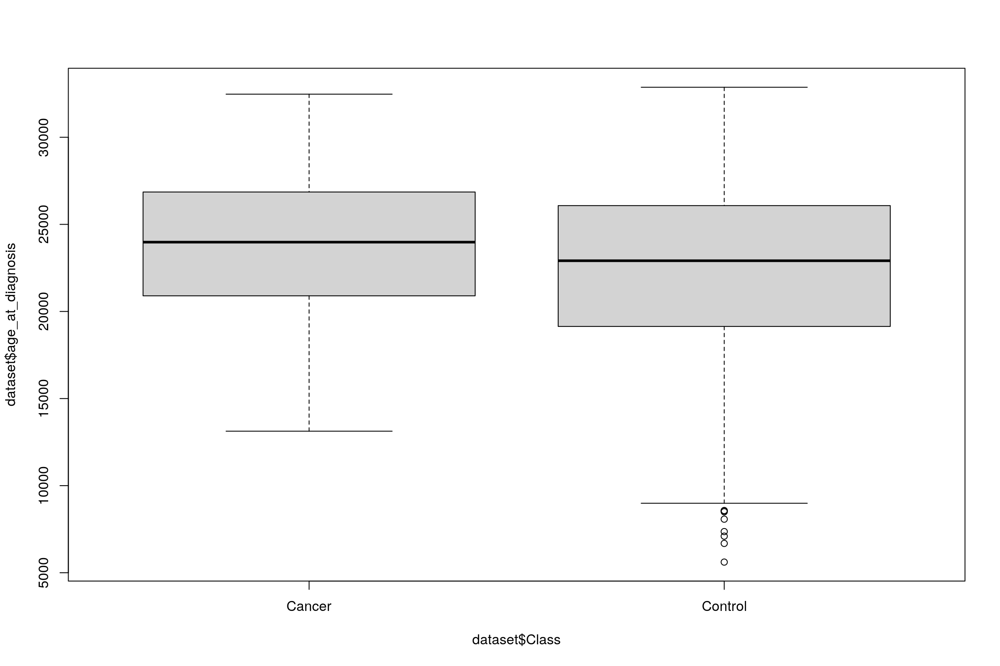
t.test(dataset$age_at_diagnosis ~ dataset$Class) #> #> Welch Two Sample t-test #> #> data: dataset$age_at_diagnosis by dataset$Class #> t = 3.88, df = 360.55, p-value = 0.0001242 #> alternative hypothesis: true difference in means is not equal to 0 #> 95 percent confidence interval: #> 693.0905 2117.7294 #> sample estimates: #> mean in group Cancer mean in group Control #> 23782.23 22376.82 OmicSelector_table(table(dataset$gender.x, dataset$Class))
| Cancer | Control | |
|---|---|---|
| female | 80 | 334 |
| male | 98 | 325 |
chisq.test(dataset$gender.x, dataset$Class) #> #> Pearson's Chi-squared test with Yates' continuity correction #> #> data: dataset$gender.x and dataset$Class #> X-squared = 1.6241, df = 1, p-value = 0.2025
There is a stistically significant difference in age between classess. The gender was not associated with class. In order to increase feature selection performance, we will try to balance the sets by performing propensity score matching.
old_dataset = dataset # backup dataset = dataset[grepl("Adenocarcinomas", dataset$disease_type), ] match_by = c("age_at_diagnosis", "gender.x") tempdane = dplyr::select(dataset, match_by) tempdane$Class = ifelse(dataset$Class == "Cancer", TRUE, FALSE) suppressMessages(library(mice)) suppressMessages(library(MatchIt)) temp1 = mice(tempdane, m = 1) #> #> iter imp variable #> 1 1 age_at_diagnosis #> 2 1 age_at_diagnosis #> 3 1 age_at_diagnosis #> 4 1 age_at_diagnosis #> 5 1 age_at_diagnosis temp2 = temp1$data temp3 = mice::complete(temp1) temp3 = temp3[complete.cases(temp3), ] tempform = OmicSelector_create_formula(match_by) mod_match <- matchit(tempform, data = temp3) newdata = match.data(mod_match) dataset = dataset[as.numeric(rownames(newdata)), ]
Let’s check if there is any imbalance in the new, transformed dataset.
boxplot(dataset$age_at_diagnosis ~ dataset$Class)
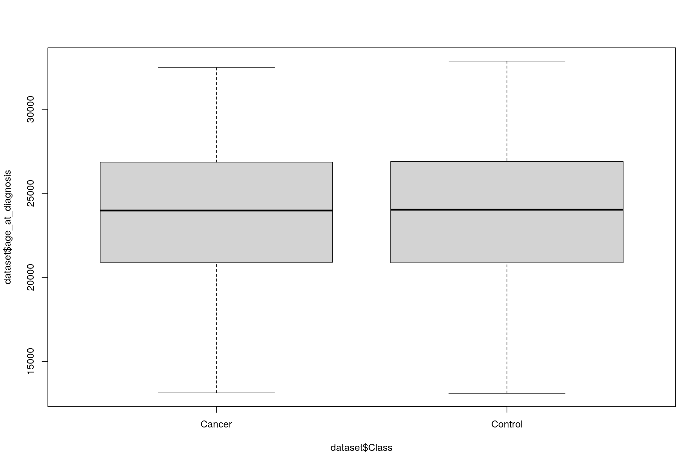
t.test(dataset$age_at_diagnosis ~ dataset$Class) #> #> Welch Two Sample t-test #> #> data: dataset$age_at_diagnosis by dataset$Class #> t = 0.090876, df = 351.63, p-value = 0.9276 #> alternative hypothesis: true difference in means is not equal to 0 #> 95 percent confidence interval: #> -827.5374 907.7172 #> sample estimates: #> mean in group Cancer mean in group Control #> 23782.23 23742.14 OmicSelector_table(table(dataset$gender.x, dataset$Class))
| Cancer | Control | |
|---|---|---|
| female | 80 | 79 |
| male | 98 | 99 |
chisq.test(dataset$gender.x, dataset$Class) #> #> Pearson's Chi-squared test with Yates' continuity correction #> #> data: dataset$gender.x and dataset$Class #> X-squared = 0, df = 1, p-value = 1 fwrite(dataset, "balanced_dataset.csv.gz") OmicSelector_tutorial_balanced_dataset = dataset # can be used by data('OmicSelector_tutorial_balanced_dataset')
There are no significant differences in age or gender composition between classes now. We can proceed to standard filtering, log-transormation and TPM-normalization.
However, first, in order to stay consistent between different datasets, we need to standardise microRNA names. OmicSelector_correct_miRNA_names() unify the miRNA names between different versions of miRbase.
dataset = OmicSelector_correct_miRNA_names(dataset) # Correct miRNA names based on the aliases. Useful when analyzing old datasets - to keep the results coherent with current knowledge. danex = dplyr::select(dataset, starts_with("hsa")) # Create data.frame or matrix with miRNA counts with miRNAs in columns and cases in rows. metadane = dplyr::select(dataset, -starts_with("hsa")) # Metadata with 'Class' variables. OmicSelector_table(table(metadane$Class)) # Let's be sure that 'Class' variable is correct and contains only 'Cancer' and 'Control' cases.
| Var1 | Freq |
|---|---|
| Cancer | 178 |
| Control | 178 |
ttpm = OmicSelector_counts_to_log10tpm(danex, metadane, ids = metadane$sample, filtr = T, filtr_minimalcounts = 100, filtr_howmany = 1/3) # We will leave only the miRNAs which apeared with at least 100 counts in 1/3 of cases. #> #> DGEList unfiltered object with TPM was saved as TPM_DGEList.rds. #> DGEList filtered object with TPM was saved as TPM_DGEList_filtered.rds. #> (After filtering) miRNAs left: 166 | filtered out: 2418. #> Returned data are log10(TPM).
You might have noticed, that we have filtered out microRNAs not having at least 100 counts in 1/3 of samples. It was done to ensure that microRNAs selected as features for classifier (possibly used in clinic) would be detectable in other, cheaper methods, such as qPCR. After filtering there are 166 miRNAs left.
In the next step we will devide the dataset into training, testing and validation datasets. We strongly belive that hold-out validation is the most redundant validation method and although OmicSelector supports cross-validation, the hold-out validation is set by default in most cases. Thus, the rest of the analysis is dependent on existance of 3 seperate datasets:
mixed_train.csv): By default 60%, used for differential expression, feature selection and model training.mixed_test.csv): By default 20%, used for hyperparameter selection (in holdout=T mode)and for performance assessment.mixed_valid.csv): By default 20%, used only for performance assessment.The best signiture (best set of miRNAs for diagnostic test) can be selected based on all 3 datasets, 2 datasets or only validation set. The process of best signiture selection will be discussed below.
The split can be prepared manually by user (the pipeline expects to find mixed_*.csv files in working directory) or in a convinient way using OmicSelector_prepare_split(). Let’s do it now.
mixed = OmicSelector_prepare_split(metadane = metadane, ttpm = ttpm, train_proc = 0.6) #> #> Saved 3 sets as csv in working directory. Retruned mixed dataset. OmicSelector_tutorial_balanced_mixed = mixed # can be used by data('OmicSelector_tutorial_balanced_mixed')
Let’s see a split summary.
mixed = fread("mixed.csv") OmicSelector_table(table(mixed$Class, mixed$mix))
| test | train | valid | |
|---|---|---|---|
| Cancer | 36 | 107 | 35 |
| Control | 36 | 107 | 35 |
OmicSelector_table(cbind(mixed[1:10, c(100:105)], Class = mixed[1:10, "Class"]))
| hsa-miR-30c-5p | hsa-miR-30c-2-3p | hsa-miR-30d-5p | hsa-miR-139-5p | hsa-miR-10a-5p | hsa-miR-10b-5p | Class.Class |
|---|---|---|---|---|---|---|
| 2.598949 | 1.514444 | 3.802908 | 1.555401 | 4.735516 | 4.298381 | Cancer |
| 2.391663 | 1.416540 | 3.656058 | 1.326116 | 4.615369 | 3.946954 | Cancer |
| 2.576255 | 1.566166 | 3.721311 | 1.220338 | 4.385001 | 3.998914 | Cancer |
| 2.260492 | 1.401010 | 3.539243 | 1.924365 | 3.945605 | 4.486228 | Cancer |
| 2.595315 | 1.562735 | 3.571441 | 1.721510 | 4.519249 | 4.126032 | Cancer |
| 2.632860 | 1.723000 | 3.708020 | 2.120359 | 4.875796 | 3.887056 | Cancer |
| 2.747742 | 2.016887 | 3.852090 | 1.533525 | 3.961177 | 3.642831 | Cancer |
| 3.037578 | 1.880192 | 3.960987 | 1.798007 | 4.675070 | 4.133894 | Cancer |
| 2.598933 | 1.291485 | 3.581714 | 1.413095 | 4.580566 | 3.960672 | Cancer |
| 2.829601 | 1.494520 | 3.589292 | 1.755581 | 4.687104 | 4.209582 | Cancer |
We can see that the dataset was devided in balanced way. Now we are ready to move to the analysis…
In biomarker studies we relay on validation. We perform hold-out validation, so the signature selection has to be based on training dataset only. Including testing and validation dataset in the exploratory analysis could lead to bias (‘data leakage’). In the following section we show how to use our package to perform quick exploratory analysis of miRNA-seq data.
dane = OmicSelector_load_datamix(use_smote_not_rose = T) # load mixed_*.csv files train = dane[[1]] test = dane[[2]] valid = dane[[3]] train_smoted = dane[[4]] trainx = dane[[5]] trainx_smoted = dane[[6]] # get the objects from list to make the code more readable.
ks_load_datamix() function loads the data created in preparation phase. It requires the output constructed by OmicSelector_prepare_split() function to be placed in working directory (‘wd’), thus files ‘mixed_train.csv’, ‘mixed_test.csv’ and ‘mixed_valid.csv’ have to exist in the directory. If you have split the data manually, there may be some imbalance of classes in train, test or validation datasets. If so, OmicSelector_prepare_split() perform balancing using:
At the beging of the analysis we usually perform principal component analysis (PCA) to assess for any batch effect, possible outliers and get a general understanding of miRNA profile. The package can construct 2-dimentional biplot and 3-dimentional interactive scatterplot based on the computed components.
pca = OmicSelector_PCA(trainx, train$Class) pca
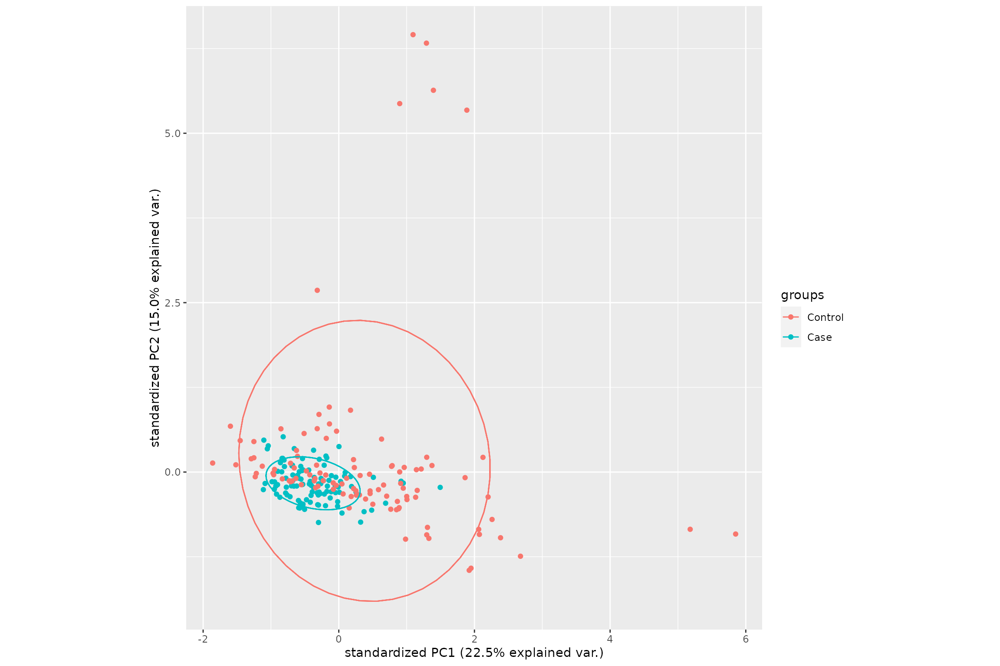
3D PCA plot may not be shown correctly in Jupyter notebook, but you can check in e.g. R Studio that it worOmicSelector_
if (is.null(sessionInfo()$loadedOnly$IRdisplay)) { # if not in the Jupyter, if you run OmicSelector_PCA_3D in learning/editing Jupyter enviorment it may cause: *** caught segfault *** address 0x1, cause # 'memory not mapped' pca3d = OmicSelector_PCA_3D(trainx, train$Class) pca3d }
Now we can also correct the batch effect, if there is any. For example, you can use OmicSelector_combat() to do so. However, detailed demonstration is out of scope of this tutorial.
Usually, the next step in the exploratory analysis is to perform the differential expression analysis. Differential expression in our package is biomarker-discovery oriented, thus it uses t-test with the correction for multiple comparisons. The following table shows signifiantly differently expressed miRNAs after Benjamini-Hochberg correction.
de = OmicSelector_differential_expression_ttest(trainx, train$Class) sig_de = de %>% dplyr::filter(`p-value BH` <= 0.05) %>% dplyr::arrange(`p-value BH`) # leave only significant after Benjamini-Hochberg procedure and sort by ascending p-value OmicSelector_table(sig_de)
| miR | mean logtpm | median logtpm | SD logtpm | cancer mean | cancer median | cancer SD | control mean | control median | control SD | log10FC (subtr estim) | log10FC | log2FC | reversed_log10FC | reversed_log2FC | p-value | p-value Bonferroni | p-value Holm | p-value BH |
|---|---|---|---|---|---|---|---|---|---|---|---|---|---|---|---|---|---|---|
| hsa.miR.21.5p | 5.081371 | 5.120977 | 0.5409456 | 5.473043 | 5.559281 | 0.3042087 | 4.689698 | 4.744446 | 0.4309906 | 0.7833450 | 0.7833450 | 2.6022157 | -0.7833450 | -2.6022157 | 0.0000000 | 0.0000000 | 0.0000000 | 0.0000000 |
| hsa.miR.30e.3p | 3.654915 | 3.620465 | 0.2922656 | 3.445100 | 3.469065 | 0.1835853 | 3.864731 | 3.891680 | 0.2215066 | -0.4196304 | -0.4196304 | -1.3939819 | 0.4196304 | 1.3939819 | 0.0000000 | 0.0000000 | 0.0000000 | 0.0000000 |
| hsa.miR.30a.3p | 3.861758 | 3.760500 | 0.5107622 | 3.494206 | 3.528067 | 0.2957390 | 4.229311 | 4.315264 | 0.4049904 | -0.7351047 | -0.7351047 | -2.4419651 | 0.7351047 | 2.4419651 | 0.0000000 | 0.0000000 | 0.0000000 | 0.0000000 |
| hsa.miR.30c.2.3p | 1.791478 | 1.685323 | 0.4609305 | 1.478041 | 1.473434 | 0.2548946 | 2.104915 | 2.062559 | 0.4044845 | -0.6268741 | -0.6268741 | -2.0824306 | 0.6268741 | 2.0824306 | 0.0000000 | 0.0000000 | 0.0000000 | 0.0000000 |
| hsa.miR.132.3p | 2.062941 | 2.061854 | 0.3206914 | 2.268277 | 2.222890 | 0.2453178 | 1.857606 | 1.842071 | 0.2476985 | 0.4106709 | 0.4106709 | 1.3642193 | -0.4106709 | -1.3642193 | 0.0000000 | 0.0000000 | 0.0000000 | 0.0000000 |
| hsa.miR.375.3p | 3.851381 | 4.088129 | 1.1312626 | 4.572062 | 4.593208 | 0.6167635 | 3.130699 | 3.420583 | 1.0689350 | 1.4413633 | 1.4413633 | 4.7881053 | -1.4413633 | -4.7881053 | 0.0000000 | 0.0000000 | 0.0000000 | 0.0000000 |
| hsa.miR.217.5p | 2.065790 | 1.932856 | 1.2184284 | 2.817892 | 2.596188 | 1.0079357 | 1.313689 | 1.247738 | 0.9084168 | 1.5042026 | 1.5042026 | 4.9968529 | -1.5042026 | -4.9968529 | 0.0000000 | 0.0000000 | 0.0000000 | 0.0000000 |
| hsa.miR.139.5p | 1.916157 | 1.919751 | 0.4638487 | 1.634747 | 1.558070 | 0.3573670 | 2.197567 | 2.204857 | 0.3804627 | -0.5628209 | -0.5628209 | -1.8696506 | 0.5628209 | 1.8696506 | 0.0000000 | 0.0000000 | 0.0000000 | 0.0000000 |
| hsa.miR.199a.5p | 3.034892 | 3.117770 | 0.3929526 | 3.267832 | 3.318017 | 0.2924584 | 2.801951 | 2.808411 | 0.3394148 | 0.4658802 | 0.4658802 | 1.5476204 | -0.4658802 | -1.5476204 | 0.0000000 | 0.0000000 | 0.0000000 | 0.0000000 |
| hsa.miR.338.3p | 2.743796 | 2.778247 | 0.4190933 | 2.991348 | 2.994550 | 0.3219668 | 2.496243 | 2.539407 | 0.3543332 | 0.4951049 | 0.4951049 | 1.6447027 | -0.4951049 | -1.6447027 | 0.0000000 | 0.0000000 | 0.0000000 | 0.0000000 |
| hsa.miR.199b.5p | 2.146095 | 2.358829 | 0.6145137 | 2.504540 | 2.573683 | 0.3567535 | 1.787650 | 1.799962 | 0.6100440 | 0.7168901 | 0.7168901 | 2.3814574 | -0.7168901 | -2.3814574 | 0.0000000 | 0.0000000 | 0.0000000 | 0.0000000 |
| hsa.miR.127.5p | 2.214220 | 2.327709 | 0.4803146 | 2.486170 | 2.478848 | 0.3020641 | 1.942270 | 1.939357 | 0.4722596 | 0.5438996 | 0.5438996 | 1.8067954 | -0.5438996 | -1.8067954 | 0.0000000 | 0.0000000 | 0.0000000 | 0.0000000 |
| hsa.miR.381.3p | 1.720930 | 1.791253 | 0.4579339 | 1.974984 | 1.949285 | 0.3353016 | 1.466877 | 1.476716 | 0.4226746 | 0.5081072 | 0.5081072 | 1.6878957 | -0.5081072 | -1.6878957 | 0.0000000 | 0.0000000 | 0.0000000 | 0.0000000 |
| hsa.miR.127.3p | 2.789656 | 2.829601 | 0.3874414 | 2.995898 | 3.006282 | 0.3147991 | 2.583413 | 2.568116 | 0.3415622 | 0.4124850 | 0.4124850 | 1.3702456 | -0.4124850 | -1.3702456 | 0.0000000 | 0.0000000 | 0.0000000 | 0.0000000 |
| hsa.miR.199a.3p | 3.431280 | 3.533249 | 0.3595668 | 3.620030 | 3.670480 | 0.2685999 | 3.242530 | 3.285480 | 0.3401837 | 0.3775004 | 0.3775004 | 1.2540293 | -0.3775004 | -1.2540293 | 0.0000000 | 0.0000000 | 0.0000000 | 0.0000000 |
| hsa.miR.181b.5p | 2.447025 | 2.523360 | 0.4131408 | 2.664941 | 2.705753 | 0.2848923 | 2.229109 | 2.205351 | 0.4073655 | 0.4358316 | 0.4358316 | 1.4478013 | -0.4358316 | -1.4478013 | 0.0000000 | 0.0000000 | 0.0000000 | 0.0000000 |
| hsa.miR.199b.3p | 3.430095 | 3.531945 | 0.3598114 | 3.619075 | 3.669630 | 0.2686093 | 3.241115 | 3.284615 | 0.3404382 | 0.3779599 | 0.3779599 | 1.2555557 | -0.3779599 | -1.2555557 | 0.0000000 | 0.0000000 | 0.0000000 | 0.0000000 |
| hsa.miR.194.5p | 3.119571 | 3.359054 | 0.8329947 | 3.562675 | 3.633752 | 0.4167141 | 2.676468 | 2.410622 | 0.9078933 | 0.8862067 | 0.8862067 | 2.9439150 | -0.8862067 | -2.9439150 | 0.0000000 | 0.0000000 | 0.0000000 | 0.0000000 |
| hsa.miR.134.5p | 2.366486 | 2.433393 | 0.4088244 | 2.572458 | 2.557931 | 0.2993653 | 2.160514 | 2.115254 | 0.4007277 | 0.4119434 | 0.4119434 | 1.3684465 | -0.4119434 | -1.3684465 | 0.0000000 | 0.0000000 | 0.0000000 | 0.0000000 |
| hsa.miR.30a.5p | 4.429837 | 4.356060 | 0.4519742 | 4.199892 | 4.226049 | 0.2683567 | 4.659782 | 4.685628 | 0.4813796 | -0.4598896 | -0.4598896 | -1.5277200 | 0.4598896 | 1.5277200 | 0.0000000 | 0.0000000 | 0.0000000 | 0.0000000 |
| hsa.miR.200a.5p | 2.480123 | 2.527551 | 0.5262405 | 2.744628 | 2.777438 | 0.3622178 | 2.215619 | 2.330898 | 0.5329388 | 0.5290086 | 0.5290086 | 1.7573286 | -0.5290086 | -1.7573286 | 0.0000000 | 0.0000000 | 0.0000000 | 0.0000000 |
| hsa.miR.136.5p | 1.426048 | 1.539528 | 0.5852494 | 1.722033 | 1.713813 | 0.2950712 | 1.130063 | 1.259715 | 0.6514071 | 0.5919692 | 0.5919692 | 1.9664791 | -0.5919692 | -1.9664791 | 0.0000000 | 0.0000000 | 0.0000000 | 0.0000000 |
| hsa.miR.192.5p | 3.474000 | 3.723466 | 0.8856187 | 3.920081 | 3.942126 | 0.4108526 | 3.027920 | 2.831424 | 1.0027511 | 0.8921615 | 0.8921615 | 2.9636965 | -0.8921615 | -2.9636965 | 0.0000000 | 0.0000000 | 0.0000000 | 0.0000000 |
| hsa.miR.451a | 2.540774 | 2.525599 | 0.6339915 | 2.233131 | 2.192706 | 0.4710976 | 2.848417 | 2.906464 | 0.6282318 | -0.6152860 | -0.6152860 | -2.0439357 | 0.6152860 | 2.0439357 | 0.0000000 | 0.0000000 | 0.0000000 | 0.0000000 |
| hsa.miR.200a.3p | 2.330223 | 2.419049 | 0.6863313 | 2.660594 | 2.674894 | 0.3970887 | 1.999851 | 2.171325 | 0.7539997 | 0.6607432 | 0.6607432 | 2.1949415 | -0.6607432 | -2.1949415 | 0.0000000 | 0.0000000 | 0.0000000 | 0.0000000 |
| hsa.miR.141.3p | 2.470222 | 2.587047 | 0.6758787 | 2.787653 | 2.835787 | 0.4142754 | 2.152790 | 2.366831 | 0.7368061 | 0.6348621 | 0.6348621 | 2.1089664 | -0.6348621 | -2.1089664 | 0.0000000 | 0.0000000 | 0.0000000 | 0.0000000 |
| hsa.miR.181c.3p | 1.549848 | 1.598609 | 0.3058360 | 1.691125 | 1.690791 | 0.2009568 | 1.408572 | 1.397065 | 0.3275293 | 0.2825529 | 0.2825529 | 0.9386203 | -0.2825529 | -0.9386203 | 0.0000000 | 0.0000000 | 0.0000000 | 0.0000000 |
| hsa.miR.30d.5p | 3.824938 | 3.786939 | 0.2585958 | 3.705810 | 3.708020 | 0.1763818 | 3.944065 | 3.950384 | 0.2731545 | -0.2382549 | -0.2382549 | -0.7914657 | 0.2382549 | 0.7914657 | 0.0000000 | 0.0000000 | 0.0000000 | 0.0000000 |
| hsa.miR.200b.3p | 2.716967 | 2.769036 | 0.5121158 | 2.949316 | 3.014389 | 0.3627291 | 2.484618 | 2.625241 | 0.5351976 | 0.4646977 | 0.4646977 | 1.5436922 | -0.4646977 | -1.5436922 | 0.0000000 | 0.0000000 | 0.0000000 | 0.0000000 |
| hsa.miR.708.3p | 1.553047 | 1.799718 | 0.7046857 | 1.878493 | 1.937453 | 0.3169286 | 1.227601 | 1.186108 | 0.8267867 | 0.6508920 | 0.6508920 | 2.1622164 | -0.6508920 | -2.1622164 | 0.0000000 | 0.0000000 | 0.0000000 | 0.0000000 |
| hsa.miR.210.3p | 2.239766 | 2.271507 | 0.6889295 | 2.547543 | 2.542301 | 0.5385826 | 1.931988 | 2.106523 | 0.6873228 | 0.6155552 | 0.6155552 | 2.0448301 | -0.6155552 | -2.0448301 | 0.0000000 | 0.0000000 | 0.0000000 | 0.0000000 |
| hsa.miR.486.5p | 2.102968 | 2.062283 | 0.6191482 | 1.830616 | 1.754483 | 0.4121882 | 2.375321 | 2.342782 | 0.6713086 | -0.5447046 | -0.5447046 | -1.8094696 | 0.5447046 | 1.8094696 | 0.0000000 | 0.0000000 | 0.0000000 | 0.0000000 |
| hsa.miR.29a.3p | 3.841416 | 3.818064 | 0.2415932 | 3.736185 | 3.745283 | 0.1796643 | 3.946646 | 3.954986 | 0.2503002 | -0.2104605 | -0.2104605 | -0.6991346 | 0.2104605 | 0.6991346 | 0.0000000 | 0.0000000 | 0.0000000 | 0.0000000 |
| hsa.miR.378a.3p | 2.550650 | 2.512377 | 0.3937521 | 2.378397 | 2.381114 | 0.2557418 | 2.722903 | 2.778885 | 0.4315532 | -0.3445063 | -0.3445063 | -1.1444252 | 0.3445063 | 1.1444252 | 0.0000000 | 0.0000000 | 0.0000000 | 0.0000000 |
| hsa.miR.379.5p | 2.828974 | 2.918613 | 0.4091041 | 3.006836 | 3.034753 | 0.2966347 | 2.651112 | 2.644205 | 0.4294792 | 0.3557240 | 0.3557240 | 1.1816895 | -0.3557240 | -1.1816895 | 0.0000000 | 0.0000000 | 0.0000000 | 0.0000000 |
| hsa.miR.141.5p | 2.216028 | 2.392275 | 0.6525748 | 2.500775 | 2.556782 | 0.3976527 | 1.931282 | 2.148570 | 0.7306892 | 0.5694928 | 0.5694928 | 1.8918140 | -0.5694928 | -1.8918140 | 0.0000000 | 0.0000000 | 0.0000000 | 0.0000000 |
| hsa.miR.21.3p | 2.950511 | 3.002843 | 0.4495447 | 3.143884 | 3.238660 | 0.3956108 | 2.757137 | 2.698429 | 0.4172376 | 0.3867473 | 0.3867473 | 1.2847466 | -0.3867473 | -1.2847466 | 0.0000000 | 0.0000000 | 0.0000000 | 0.0000000 |
| hsa.miR.337.3p | 1.498952 | 1.609902 | 0.4286748 | 1.685506 | 1.704399 | 0.2599192 | 1.312398 | 1.278140 | 0.4810808 | 0.3731072 | 0.3731072 | 1.2394354 | -0.3731072 | -1.2394354 | 0.0000000 | 0.0000000 | 0.0000000 | 0.0000000 |
| hsa.miR.144.5p | 1.799486 | 1.840358 | 0.7365132 | 1.481479 | 1.461856 | 0.4729441 | 2.117492 | 2.202314 | 0.8137450 | -0.6360122 | -0.6360122 | -2.1127868 | 0.6360122 | 2.1127868 | 0.0000000 | 0.0000000 | 0.0000000 | 0.0000000 |
| hsa.miR.429 | 1.847904 | 1.950131 | 0.7268633 | 2.162646 | 2.205144 | 0.3857231 | 1.533162 | 1.702486 | 0.8443154 | 0.6294838 | 0.6294838 | 2.0910999 | -0.6294838 | -2.0910999 | 0.0000000 | 0.0000000 | 0.0000000 | 0.0000000 |
| hsa.miR.335.3p | 1.773607 | 1.812886 | 0.3718545 | 1.932716 | 1.892784 | 0.2426583 | 1.614497 | 1.631930 | 0.4097115 | 0.3182195 | 0.3182195 | 1.0571023 | -0.3182195 | -1.0571023 | 0.0000000 | 0.0000000 | 0.0000000 | 0.0000000 |
| hsa.miR.126.5p | 2.232491 | 2.222927 | 0.4152358 | 2.056938 | 2.063790 | 0.2104761 | 2.408045 | 2.529680 | 0.4898455 | -0.3511067 | -0.3511067 | -1.1663511 | 0.3511067 | 1.1663511 | 0.0000000 | 0.0000000 | 0.0000000 | 0.0000000 |
| hsa.miR.30c.5p | 2.808698 | 2.749100 | 0.3490929 | 2.661967 | 2.661797 | 0.1963921 | 2.955429 | 2.915562 | 0.4035411 | -0.2934616 | -0.2934616 | -0.9748585 | 0.2934616 | 0.9748585 | 0.0000000 | 0.0000000 | 0.0000000 | 0.0000000 |
| hsa.miR.181a.3p | 2.106380 | 2.174268 | 0.3784895 | 2.261578 | 2.305816 | 0.2347854 | 1.951183 | 2.028792 | 0.4290792 | 0.3103947 | 0.3103947 | 1.0311087 | -0.3103947 | -1.0311087 | 0.0000000 | 0.0000001 | 0.0000001 | 0.0000000 |
| hsa.let.7c.5p | 3.419322 | 3.422382 | 0.3296842 | 3.287237 | 3.332260 | 0.2860501 | 3.551407 | 3.535984 | 0.3183740 | -0.2641699 | -0.2641699 | -0.8775535 | 0.2641699 | 0.8775535 | 0.0000000 | 0.0000002 | 0.0000001 | 0.0000000 |
| hsa.miR.181a.5p | 3.155295 | 3.246986 | 0.4050583 | 3.316282 | 3.343112 | 0.2324404 | 2.994307 | 2.991241 | 0.4725895 | 0.3219750 | 0.3219750 | 1.0695778 | -0.3219750 | -1.0695778 | 0.0000000 | 0.0000004 | 0.0000003 | 0.0000000 |
| hsa.miR.221.3p | 2.290528 | 2.336670 | 0.3527519 | 2.427381 | 2.408816 | 0.2861108 | 2.153674 | 2.182603 | 0.3610694 | 0.2737072 | 0.2737072 | 0.9092357 | -0.2737072 | -0.9092357 | 0.0000000 | 0.0000007 | 0.0000005 | 0.0000000 |
| hsa.miR.93.5p | 3.298589 | 3.328666 | 0.2589551 | 3.398683 | 3.400925 | 0.1891085 | 3.198495 | 3.236571 | 0.2806412 | 0.2001879 | 0.2001879 | 0.6650098 | -0.2001879 | -0.6650098 | 0.0000000 | 0.0000009 | 0.0000006 | 0.0000000 |
| hsa.miR.378a.5p | 1.765728 | 1.699123 | 0.3998851 | 1.610886 | 1.612851 | 0.2430057 | 1.920570 | 1.955764 | 0.4624594 | -0.3096836 | -0.3096836 | -1.0287466 | 0.3096836 | 1.0287466 | 0.0000000 | 0.0000011 | 0.0000008 | 0.0000000 |
| hsa.miR.146b.5p | 2.601785 | 2.674141 | 0.4626849 | 2.779955 | 2.835954 | 0.2919913 | 2.423615 | 2.450139 | 0.5299317 | 0.3563393 | 0.3563393 | 1.1837335 | -0.3563393 | -1.1837335 | 0.0000000 | 0.0000013 | 0.0000009 | 0.0000000 |
| hsa.miR.23a.3p | 3.411765 | 3.464466 | 0.2170216 | 3.494149 | 3.504609 | 0.1702973 | 3.329380 | 3.342163 | 0.2278979 | 0.1647689 | 0.1647689 | 0.5473504 | -0.1647689 | -0.5473504 | 0.0000000 | 0.0000016 | 0.0000011 | 0.0000000 |
| hsa.miR.30b.5p | 2.622413 | 2.622930 | 0.3212403 | 2.499914 | 2.507222 | 0.2120817 | 2.744913 | 2.792110 | 0.3634422 | -0.2449988 | -0.2449988 | -0.8138683 | 0.2449988 | 0.8138683 | 0.0000000 | 0.0000017 | 0.0000012 | 0.0000000 |
| hsa.miR.625.3p | 2.068354 | 2.104397 | 0.3502308 | 2.200772 | 2.210917 | 0.2188272 | 1.935936 | 1.910435 | 0.4039743 | 0.2648357 | 0.2648357 | 0.8797652 | -0.2648357 | -0.8797652 | 0.0000000 | 0.0000025 | 0.0000017 | 0.0000000 |
| hsa.miR.182.5p | 3.674023 | 3.755735 | 0.4922991 | 3.858145 | 3.842168 | 0.3744427 | 3.489902 | 3.616382 | 0.5275933 | 0.3682429 | 0.3682429 | 1.2232765 | -0.3682429 | -1.2232765 | 0.0000000 | 0.0000029 | 0.0000020 | 0.0000001 |
| hsa.miR.27a.3p | 3.005903 | 3.044024 | 0.2647920 | 3.104509 | 3.109418 | 0.2287859 | 2.907296 | 2.903005 | 0.2625226 | 0.1972135 | 0.1972135 | 0.6551290 | -0.1972135 | -0.6551290 | 0.0000000 | 0.0000030 | 0.0000020 | 0.0000001 |
| hsa.miR.183.5p | 3.203446 | 3.257163 | 0.4833569 | 3.381328 | 3.357706 | 0.3966813 | 3.025563 | 3.143805 | 0.4982314 | 0.3557648 | 0.3557648 | 1.1818251 | -0.3557648 | -1.1818251 | 0.0000000 | 0.0000047 | 0.0000031 | 0.0000001 |
| hsa.miR.181c.5p | 1.665600 | 1.682222 | 0.3601516 | 1.795267 | 1.778815 | 0.2462991 | 1.535932 | 1.501756 | 0.4074728 | 0.2593354 | 0.2593354 | 0.8614935 | -0.2593354 | -0.8614935 | 0.0000001 | 0.0000115 | 0.0000076 | 0.0000002 |
| hsa.miR.126.3p | 3.305734 | 3.272928 | 0.4223713 | 3.157448 | 3.162873 | 0.2190488 | 3.454020 | 3.630912 | 0.5158520 | -0.2965719 | -0.2965719 | -0.9851906 | 0.2965719 | 0.9851906 | 0.0000002 | 0.0000319 | 0.0000209 | 0.0000005 |
| hsa.miR.582.3p | 2.087755 | 2.119436 | 0.3376004 | 1.973266 | 1.974597 | 0.2964765 | 2.202245 | 2.291615 | 0.3386179 | -0.2289783 | -0.2289783 | -0.7606496 | 0.2289783 | 0.7606496 | 0.0000004 | 0.0000584 | 0.0000380 | 0.0000010 |
| hsa.miR.143.3p | 4.940749 | 4.860769 | 0.4133211 | 4.799815 | 4.796805 | 0.2682101 | 5.081683 | 4.987285 | 0.4808783 | -0.2818686 | -0.2818686 | -0.9363472 | 0.2818686 | 0.9363472 | 0.0000004 | 0.0000618 | 0.0000398 | 0.0000010 |
| hsa.miR.185.5p | 1.698820 | 1.752167 | 0.3122312 | 1.803017 | 1.789962 | 0.1825995 | 1.594623 | 1.585711 | 0.3750133 | 0.2083937 | 0.2083937 | 0.6922687 | -0.2083937 | -0.6922687 | 0.0000007 | 0.0001204 | 0.0000769 | 0.0000020 |
| hsa.miR.29c.3p | 3.321214 | 3.327217 | 0.3591607 | 3.202955 | 3.215627 | 0.2277490 | 3.439473 | 3.491354 | 0.4232090 | -0.2365180 | -0.2365180 | -0.7856959 | 0.2365180 | 0.7856959 | 0.0000010 | 0.0001621 | 0.0001026 | 0.0000026 |
| hsa.miR.223.3p | 2.257390 | 2.288581 | 0.4632869 | 2.408097 | 2.462940 | 0.4003810 | 2.106684 | 2.111760 | 0.4744849 | 0.3014129 | 0.3014129 | 1.0012719 | -0.3014129 | -1.0012719 | 0.0000011 | 0.0001834 | 0.0001149 | 0.0000029 |
| hsa.miR.423.5p | 1.545436 | 1.538957 | 0.3144486 | 1.443133 | 1.425446 | 0.2069216 | 1.647738 | 1.666376 | 0.3670736 | -0.2046048 | -0.2046048 | -0.6796823 | 0.2046048 | 0.6796823 | 0.0000013 | 0.0002154 | 0.0001337 | 0.0000034 |
| hsa.miR.151a.5p | 1.778564 | 1.824896 | 0.2355297 | 1.854691 | 1.836098 | 0.1493639 | 1.702436 | 1.739749 | 0.2783202 | 0.1522549 | 0.1522549 | 0.5057800 | -0.1522549 | -0.5057800 | 0.0000016 | 0.0002604 | 0.0001600 | 0.0000040 |
| hsa.let.7i.5p | 2.599921 | 2.632392 | 0.2997045 | 2.696086 | 2.717300 | 0.1738861 | 2.503755 | 2.466912 | 0.3627486 | 0.1923305 | 0.1923305 | 0.6389080 | -0.1923305 | -0.6389080 | 0.0000020 | 0.0003296 | 0.0002005 | 0.0000050 |
| hsa.miR.26b.5p | 2.777405 | 2.755033 | 0.2942712 | 2.683523 | 2.667076 | 0.2076405 | 2.871288 | 2.871957 | 0.3363026 | -0.1877642 | -0.1877642 | -0.6237392 | 0.1877642 | 0.6237392 | 0.0000020 | 0.0003363 | 0.0002026 | 0.0000050 |
| hsa.miR.222.3p | 1.679643 | 1.690400 | 0.3421027 | 1.788188 | 1.797616 | 0.2933599 | 1.571098 | 1.634996 | 0.3540146 | 0.2170897 | 0.2170897 | 0.7211563 | -0.2170897 | -0.7211563 | 0.0000021 | 0.0003468 | 0.0002068 | 0.0000051 |
| hsa.miR.320a.3p | 2.517259 | 2.510587 | 0.2335402 | 2.443505 | 2.440882 | 0.2043264 | 2.591012 | 2.575436 | 0.2384649 | -0.1475073 | -0.1475073 | -0.4900086 | 0.1475073 | 0.4900086 | 0.0000023 | 0.0003863 | 0.0002281 | 0.0000056 |
| hsa.miR.30e.5p | 3.679150 | 3.640665 | 0.3123538 | 3.579560 | 3.581958 | 0.1513627 | 3.778740 | 3.843580 | 0.3913006 | -0.1991799 | -0.1991799 | -0.6616613 | 0.1991799 | 0.6616613 | 0.0000025 | 0.0004221 | 0.0002467 | 0.0000060 |
| hsa.miR.200c.3p | 3.479500 | 3.647500 | 0.6328315 | 3.679499 | 3.713871 | 0.3714689 | 3.279502 | 3.524250 | 0.7654977 | 0.3999973 | 0.3999973 | 1.3287624 | -0.3999973 | -1.3287624 | 0.0000028 | 0.0004717 | 0.0002728 | 0.0000066 |
| hsa.miR.145.5p | 3.405874 | 3.362197 | 0.3557557 | 3.294171 | 3.279622 | 0.2492612 | 3.517576 | 3.469948 | 0.4086525 | -0.2234046 | -0.2234046 | -0.7421341 | 0.2234046 | 0.7421341 | 0.0000030 | 0.0004969 | 0.0002844 | 0.0000069 |
| hsa.miR.92b.3p | 1.748375 | 1.731752 | 0.3770581 | 1.865526 | 1.808052 | 0.2617419 | 1.631225 | 1.619889 | 0.4352821 | 0.2343014 | 0.2343014 | 0.7783325 | -0.2343014 | -0.7783325 | 0.0000039 | 0.0006400 | 0.0003624 | 0.0000088 |
| hsa.miR.629.5p | 1.718671 | 1.767577 | 0.2822432 | 1.804344 | 1.819456 | 0.2016194 | 1.632997 | 1.650836 | 0.3234272 | 0.1713470 | 0.1713470 | 0.5692024 | -0.1713470 | -0.5692024 | 0.0000064 | 0.0010697 | 0.0005993 | 0.0000145 |
| hsa.miR.99a.5p | 2.916024 | 2.912899 | 0.3862114 | 2.800660 | 2.801168 | 0.3181101 | 3.031388 | 3.020665 | 0.4143220 | -0.2307282 | -0.2307282 | -0.7664624 | 0.2307282 | 0.7664624 | 0.0000086 | 0.0014262 | 0.0007904 | 0.0000190 |
| hsa.miR.22.3p | 4.901288 | 4.935034 | 0.2599745 | 4.979132 | 4.983023 | 0.1344526 | 4.823443 | 4.825832 | 0.3248074 | 0.1556883 | 0.1556883 | 0.5171853 | -0.1556883 | -0.5171853 | 0.0000101 | 0.0016706 | 0.0009158 | 0.0000220 |
| hsa.miR.10b.5p | 4.284825 | 4.160990 | 0.6577961 | 4.092498 | 4.126032 | 0.2208435 | 4.477153 | 4.339191 | 0.8637267 | -0.3846552 | -0.3846552 | -1.2777969 | 0.3846552 | 1.2777969 | 0.0000184 | 0.0030501 | 0.0016537 | 0.0000396 |
| hsa.miR.142.3p | 2.908082 | 2.993345 | 0.5523317 | 3.062898 | 3.069081 | 0.3324835 | 2.753266 | 2.754739 | 0.6738583 | 0.3096321 | 0.3096321 | 1.0285755 | -0.3096321 | -1.0285755 | 0.0000350 | 0.0058148 | 0.0031176 | 0.0000745 |
| hsa.miR.16.5p | 2.418426 | 2.396977 | 0.2678058 | 2.344887 | 2.354009 | 0.1520643 | 2.491965 | 2.532161 | 0.3317754 | -0.1470782 | -0.1470782 | -0.4885833 | 0.1470782 | 0.4885833 | 0.0000518 | 0.0086050 | 0.0045617 | 0.0001089 |
| hsa.miR.10a.5p | 4.453193 | 4.572159 | 0.4172756 | 4.567356 | 4.619375 | 0.2726925 | 4.339031 | 4.448143 | 0.4992066 | 0.2283251 | 0.2283251 | 0.7584795 | -0.2283251 | -0.7584795 | 0.0000528 | 0.0087721 | 0.0045974 | 0.0001097 |
| hsa.miR.365a.3p | 1.558982 | 1.524607 | 0.3288053 | 1.472455 | 1.482687 | 0.2603646 | 1.645509 | 1.646930 | 0.3665257 | -0.1730535 | -0.1730535 | -0.5748714 | 0.1730535 | 0.5748714 | 0.0000972 | 0.0161318 | 0.0083574 | 0.0001970 |
| hsa.miR.365b.3p | 1.559072 | 1.524607 | 0.3286232 | 1.472600 | 1.482687 | 0.2598729 | 1.645545 | 1.646930 | 0.3665720 | -0.1729456 | -0.1729456 | -0.5745130 | 0.1729456 | 0.5745130 | 0.0000973 | 0.0161562 | 0.0083574 | 0.0001970 |
| hsa.miR.20a.5p | 2.167170 | 2.188072 | 0.3531756 | 2.258504 | 2.252491 | 0.2151305 | 2.075836 | 2.092815 | 0.4330362 | 0.1826683 | 0.1826683 | 0.6068109 | -0.1826683 | -0.6068109 | 0.0001387 | 0.0230266 | 0.0116520 | 0.0002774 |
| hsa.miR.195.5p | 1.610326 | 1.644712 | 0.4593292 | 1.492892 | 1.530241 | 0.2351047 | 1.727760 | 1.829698 | 0.5838159 | -0.2348685 | -0.2348685 | -0.7802161 | 0.2348685 | 0.7802161 | 0.0001727 | 0.0286635 | 0.0143318 | 0.0003412 |
| hsa.miR.26a.5p | 3.363368 | 3.336961 | 0.2249507 | 3.307628 | 3.297116 | 0.1471895 | 3.419108 | 3.407502 | 0.2715615 | -0.1114806 | -0.1114806 | -0.3703306 | 0.1114806 | 0.3703306 | 0.0002606 | 0.0432635 | 0.0213711 | 0.0005090 |
| hsa.miR.145.3p | 1.779374 | 1.754841 | 0.2975307 | 1.706504 | 1.693139 | 0.2239980 | 1.852244 | 1.840403 | 0.3420364 | -0.1457395 | -0.1457395 | -0.4841363 | 0.1457395 | 0.4841363 | 0.0002988 | 0.0495960 | 0.0242005 | 0.0005767 |
| hsa.miR.142.5p | 1.517108 | 1.642632 | 0.7709832 | 1.707036 | 1.728336 | 0.3336782 | 1.327180 | 1.413437 | 1.0051222 | 0.3798562 | 0.3798562 | 1.2618548 | -0.3798562 | -1.2618548 | 0.0003066 | 0.0509030 | 0.0245316 | 0.0005851 |
| hsa.miR.155.5p | 2.133480 | 2.195366 | 0.4195203 | 2.233687 | 2.297068 | 0.3475670 | 2.033272 | 2.006969 | 0.4610634 | 0.2004154 | 0.2004154 | 0.6657657 | -0.2004154 | -0.6657657 | 0.0004167 | 0.0691679 | 0.0329172 | 0.0007860 |
| hsa.let.7d.5p | 2.204108 | 2.185887 | 0.2122742 | 2.154807 | 2.147458 | 0.1420691 | 2.253409 | 2.269843 | 0.2558420 | -0.0986016 | -0.0986016 | -0.3275473 | 0.0986016 | 0.3275473 | 0.0006292 | 0.1044446 | 0.0490764 | 0.0011735 |
| hsa.miR.101.3p | 4.064812 | 4.041831 | 0.3932389 | 3.975163 | 3.934040 | 0.1680979 | 4.154461 | 4.258030 | 0.5159943 | -0.1792983 | -0.1792983 | -0.5956161 | 0.1792983 | 0.5956161 | 0.0008471 | 0.1406149 | 0.0652250 | 0.0015624 |
| hsa.miR.15a.5p | 1.962872 | 1.985385 | 0.2869339 | 2.027709 | 2.007988 | 0.1768348 | 1.898034 | 1.940992 | 0.3545154 | 0.1296752 | 0.1296752 | 0.4307717 | -0.1296752 | -0.4307717 | 0.0008984 | 0.1491266 | 0.0678151 | 0.0016209 |
| hsa.miR.140.3p | 3.000561 | 3.018035 | 0.2271711 | 2.949429 | 2.935298 | 0.2005767 | 3.051693 | 3.090265 | 0.2412282 | -0.1022638 | -0.1022638 | -0.3397129 | 0.1022638 | 0.3397129 | 0.0008923 | 0.1481224 | 0.0678151 | 0.0016209 |
| hsa.miR.193a.5p | 2.336431 | 2.300347 | 0.3276854 | 2.266929 | 2.278125 | 0.1938504 | 2.405932 | 2.378371 | 0.4104126 | -0.1390021 | -0.1390021 | -0.4617551 | 0.1390021 | 0.4617551 | 0.0018588 | 0.3085666 | 0.1375538 | 0.0033179 |
| hsa.let.7b.5p | 4.195831 | 4.209035 | 0.2924159 | 4.256938 | 4.282751 | 0.1889508 | 4.134724 | 4.104211 | 0.3585804 | 0.1222138 | 0.1222138 | 0.4059855 | -0.1222138 | -0.4059855 | 0.0021512 | 0.3570954 | 0.1570359 | 0.0037989 |
| hsa.miR.425.5p | 1.923042 | 1.930834 | 0.3243793 | 1.987356 | 1.978949 | 0.2395357 | 1.858729 | 1.880977 | 0.3817182 | 0.1286263 | 0.1286263 | 0.4272874 | -0.1286263 | -0.4272874 | 0.0035774 | 0.5938450 | 0.2575713 | 0.0062510 |
| hsa.miR.99b.5p | 4.315202 | 4.300285 | 0.2601134 | 4.263737 | 4.282048 | 0.1951765 | 4.366667 | 4.343604 | 0.3041630 | -0.1029303 | -0.1029303 | -0.3419271 | 0.1029303 | 0.3419271 | 0.0036421 | 0.6045962 | 0.2585923 | 0.0062979 |
| hsa.miR.146b.3p | 1.886946 | 1.965307 | 0.4754291 | 1.979342 | 1.993235 | 0.3044790 | 1.794549 | 1.860622 | 0.5867326 | 0.1847929 | 0.1847929 | 0.6138687 | -0.1847929 | -0.6138687 | 0.0043674 | 0.7249845 | 0.3057163 | 0.0074741 |
| hsa.miR.128.3p | 1.955925 | 1.943604 | 0.2304255 | 2.000480 | 1.993252 | 0.1994596 | 1.911370 | 1.897153 | 0.2508004 | 0.0891101 | 0.0891101 | 0.2960174 | -0.0891101 | -0.2960174 | 0.0044531 | 0.7392212 | 0.3072666 | 0.0075431 |
| hsa.miR.34a.5p | 2.074666 | 2.121651 | 0.2675331 | 2.125712 | 2.136585 | 0.1931050 | 2.023620 | 2.059319 | 0.3182343 | 0.1020923 | 0.1020923 | 0.3391431 | -0.1020923 | -0.3391431 | 0.0050922 | 0.8453067 | 0.3462702 | 0.0085385 |
| hsa.miR.1307.5p | 2.032668 | 2.074195 | 0.4746939 | 2.121558 | 2.143052 | 0.3137240 | 1.943777 | 1.930948 | 0.5817384 | 0.1777808 | 0.1777808 | 0.5905749 | -0.1777808 | -0.5905749 | 0.0060341 | 1.0000000 | 0.4042856 | 0.0100166 |
| hsa.miR.146a.5p | 1.834930 | 1.878293 | 0.5428638 | 1.936147 | 1.968467 | 0.3763981 | 1.733712 | 1.804289 | 0.6556095 | 0.2024345 | 0.2024345 | 0.6724729 | -0.2024345 | -0.6724729 | 0.0062340 | 1.0000000 | 0.4114442 | 0.0102460 |
| hsa.miR.660.5p | 1.637156 | 1.706445 | 0.5648980 | 1.742335 | 1.736172 | 0.1929619 | 1.531977 | 1.656099 | 0.7626676 | 0.2103579 | 0.2103579 | 0.6987938 | -0.2103579 | -0.6987938 | 0.0065781 | 1.0000000 | 0.4275745 | 0.0107055 |
| hsa.miR.1307.3p | 2.668366 | 2.682073 | 0.3103661 | 2.725068 | 2.712113 | 0.1957961 | 2.611663 | 2.652759 | 0.3856627 | 0.1134058 | 0.1134058 | 0.3767259 | -0.1134058 | -0.3767259 | 0.0074280 | 1.0000000 | 0.4753900 | 0.0119713 |
| hsa.miR.17.3p | 2.280466 | 2.310070 | 0.2760079 | 2.330198 | 2.324300 | 0.1630184 | 2.230733 | 2.251456 | 0.3485844 | 0.0994646 | 0.0994646 | 0.3304142 | -0.0994646 | -0.3304142 | 0.0083333 | 1.0000000 | 0.5249975 | 0.0133012 |
| hsa.miR.103a.3p | 4.078473 | 4.104653 | 0.2058716 | 4.115271 | 4.122395 | 0.1680536 | 4.041675 | 4.049734 | 0.2327882 | 0.0735962 | 0.0735962 | 0.2444812 | -0.0735962 | -0.2444812 | 0.0086789 | 1.0000000 | 0.5380907 | 0.0137209 |
| hsa.miR.484 | 1.597652 | 1.580193 | 0.2719205 | 1.550795 | 1.553409 | 0.1598979 | 1.644510 | 1.656175 | 0.3443530 | -0.0937157 | -0.0937157 | -0.3113168 | 0.0937157 | 0.3113168 | 0.0116710 | 1.0000000 | 0.7119329 | 0.0182773 |
| hsa.miR.452.5p | 1.609759 | 1.684291 | 0.4772755 | 1.691423 | 1.719895 | 0.2895699 | 1.528095 | 1.619481 | 0.6003483 | 0.1633282 | 0.1633282 | 0.5425647 | -0.1633282 | -0.5425647 | 0.0122598 | 1.0000000 | 0.7355852 | 0.0189271 |
| hsa.miR.584.5p | 1.562512 | 1.609699 | 0.4055066 | 1.631695 | 1.617142 | 0.3258710 | 1.493330 | 1.570896 | 0.4632148 | 0.1383646 | 0.1383646 | 0.4596372 | -0.1383646 | -0.4596372 | 0.0123140 | 1.0000000 | 0.7355852 | 0.0189271 |
| hsa.miR.9.5p | 2.452682 | 2.417320 | 0.5298502 | 2.364790 | 2.362214 | 0.3600516 | 2.540574 | 2.612118 | 0.6472233 | -0.1757844 | -0.1757844 | -0.5839430 | 0.1757844 | 0.5839430 | 0.0151165 | 1.0000000 | 0.8767577 | 0.0230215 |
| hsa.miR.361.3p | 2.114070 | 2.138671 | 0.2668813 | 2.157051 | 2.182644 | 0.1719882 | 2.071090 | 2.091288 | 0.3313815 | 0.0859613 | 0.0859613 | 0.2855574 | -0.0859613 | -0.2855574 | 0.0184170 | 1.0000000 | 1.0000000 | 0.0277930 |
| hsa.let.7g.5p | 2.743360 | 2.731598 | 0.2633678 | 2.701240 | 2.687710 | 0.2007329 | 2.785480 | 2.824734 | 0.3090374 | -0.0842401 | -0.0842401 | -0.2798397 | 0.0842401 | 0.2798397 | 0.0191012 | 1.0000000 | 1.0000000 | 0.0285658 |
| hsa.let.7a.3p | 1.362918 | 1.456311 | 0.5840349 | 1.454096 | 1.472496 | 0.2172292 | 1.271740 | 1.413722 | 0.7883141 | 0.1823566 | 0.1823566 | 0.6057754 | -0.1823566 | -0.6057754 | 0.0227488 | 1.0000000 | 1.0000000 | 0.0337170 |
| hsa.miR.28.3p | 3.478699 | 3.452430 | 0.2371295 | 3.442283 | 3.445475 | 0.2164372 | 3.515115 | 3.488616 | 0.2519303 | -0.0728325 | -0.0728325 | -0.2419443 | 0.0728325 | 0.2419443 | 0.0243409 | 1.0000000 | 1.0000000 | 0.0355939 |
| hsa.miR.23b.3p | 3.145549 | 3.139008 | 0.1654088 | 3.120156 | 3.106189 | 0.1396735 | 3.170942 | 3.185124 | 0.1848453 | -0.0507862 | -0.0507862 | -0.1687082 | 0.0507862 | 0.1687082 | 0.0244440 | 1.0000000 | 1.0000000 | 0.0355939 |
| hsa.miR.29b.3p | 2.730065 | 2.739194 | 0.3702233 | 2.785646 | 2.771371 | 0.2357865 | 2.674484 | 2.713670 | 0.4621597 | 0.1111620 | 0.1111620 | 0.3692721 | -0.1111620 | -0.3692721 | 0.0281053 | 1.0000000 | 1.0000000 | 0.0405694 |
Let’s visualize the results of differential expression using heatmap and vulcano plot.
OmicSelector_heatmap(x = dplyr::select(trainx, sig_de$miR), rlab = data.frame(Class = train$Class), zscore = F, margins = c(10, 10))
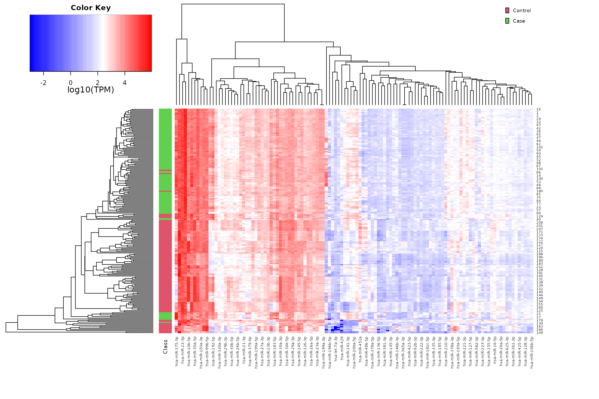
Z-scoring the values before clustering and plotting will help us to gain more insight.
OmicSelector_heatmap(x = dplyr::select(trainx, sig_de$miR), rlab = data.frame(Class = train$Class), zscore = T, margins = c(10, 10))
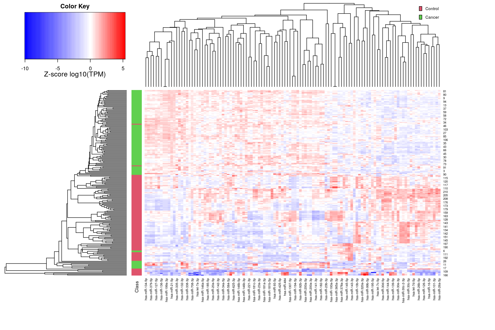
We will also create a vulcano plot and label top 10 most significant miRNAs:
OmicSelector_vulcano_plot(selected_miRNAs = de$miR, DE = de, only_label = sig_de$miR[1:10])
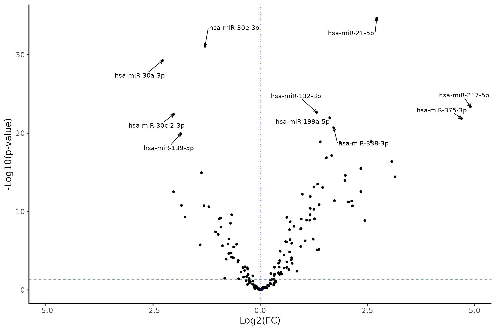
We may also what to check the consistency of differential expression between datasets:
de_test = OmicSelector_differential_expression_ttest(dplyr::select(test, starts_with("hsa")), test$Class) de_valid = OmicSelector_differential_expression_ttest(dplyr::select(valid, starts_with("hsa")), valid$Class) OmicSelector_correlation_plot(de$log2FC, de_test$log2FC, "log2FC on training set", "log2FC on test set", "", yx = T)
OmicSelector_correlation_plot(de$log2FC, de_valid$log2FC, "log2FC on training set", "log2FC on validation set", "", yx = T)
OmicSelector_correlation_plot(de_test$log2FC, de_valid$log2FC, "log2FC on test set", "log2FC on validation set", "", yx = T)
The main feature of this package is the shotgun-like feature selection evaluation of possible miRNA signatures of biological processes. The function can be applied in a straightforward way, e.g.:
library(OmicSelector) selected_features = OmicSelector_OmicSelector(wd = getwd(), m = c(1:3, 51), max_iterations = 1, stamp = "tutorial") # For the sake of this tutorial and vignette building we will use only few fastest methods. The m parameter defines what methods will be tested. See more details below.
But, for largers projects we suggest using the following wrapper wich will perform the feature selection in parallel, significantly reducing computational time. We do not recommend using more than 5 threads, beacuse some of the methods inhereditly use multicore processing:
readLines("https://raw.githubusercontent.com/kstawiski/OmicSelector/master/vignettes/Tutorial_OmicSelector.R") %>% paste0(collapse = "\n") %>% cat #> #options(warn = -1) #> library(OmicSelector) #> m = 1:56 # which methods to check? #> #> #> # RECOMMENDED: #> for (i in m) { #> OmicSelector_OmicSelector(m = i, max_iterations = 1, stamp = "fs", debug = F, # we set debug to false (to make the package smaller), you may also want to change stamp to something meaningful, max_iterations was set to 1 to recude the computational time.. in real life scenarios it is resonable to use at least 10 iterations. #> prefer_no_features = 11, # Few methods are filter rather than wrapper methods, thus requires the maximum number of maximum features. #> timeout_sec = 600) # We don't want to wait eternity in this tutorial, just 10 minutes. Timeout is useful for complicated methods. Depending on your CPU 2 days may be reasonable for larger projects. Note that some methods cannot be controled with timeout parameter. #> } #> #> # NOT RECOMMENDED: (due to huge computational load of some feature selection methods we do not recommend to run it in parallel, but it is possible) #> suppressMessages(library(foreach)) #> suppressMessages(library(doParallel)) #> suppressMessages(library(parallel)) #> suppressMessages(library(doParallel)) #> cl <- makePSOCKcluster(useXDR = TRUE, 5) # We do not recommend using more than 5 threads, beacuse some of the methods inhereditly use multicore processing. #> registerDoParallel(cl) #> # on.exit(stopCluster(cl)) #> iterations = length(m) #> pb <- txtProgressBar(max = iterations, style = 3) #> progress <- function(n) setTxtProgressBar(pb, n) #> opts <- list(progress = progress) #> foreach(i = m, .options.snow = opts) %dopar% #> { #> suppressMessages(library(OmicSelector)) #> # setwd("/OmicSelector/OmicSelector/vignettes") # change it you to your working directory #> OmicSelector_OmicSelector(m = i, max_iterations = 1, stamp = "tutorial", debug = F, # we set debug to false (to make the package smaller), you may also want to change stamp to something meaningful, max_iterations was set to 1 to recude the computational time.. in real life scenarios it is resonable to use at least 10 iterations. #> prefer_no_features = 11, # Few methods are filter rather than wrapper methods, thus requires the maximum number of maximum features. #> conda_path = "/opt/conda/bin/conda", # Methods line WxNet requires usage of python. In setup script we create conda enviorment. Providing conda_path makes it easier to activate env. We prefer this apporach over use_condaenv. #> timeout = 600) # We don't want to wait eternity in this tutorial, just 10 minutes. Timeout is useful for complicated methods. Depending on your CPU 2 days may be reasonable for larger projects. Note that some methods cannot be controled with timeout parameter. #> } #> stopCluster(cl)
A few notes about what is does:
m parameter. The aim of this function is to perform feature selection using multiple methods and to create formulas for benchmarking.temp subfolder.Files created for each method (e.g. for stamp=tutorial and m=1):
formulastutorial-1.RDS - main result file containing the final formula (final set of miRNAs selected by this method).time1-formula.RDS - time taken to compute the resultstutorial1featureselection.log - log file of the processall1-tutorial.rdata - all variables created during feature selection (created if debug=T).Pearls about the methods:
Sig = miRNAs with p-value <0.05 after BH correction (DE using t-test)Fcsig = sig + absolute log2FC filter (included if abs. log2FC>1)Cfs = Correlation-based Feature Selection for Machine Learning (more: https://www.cs.waikato.ac.nz/~mhall/thesis.pdf)Classloop = Classification using different classification algorithms (classifiers) with the embedded feature selection and using the different schemes for the performance validation (more: https://rdrr.io/cran/Biocomb/man/classifier.loop.html)Fcfs = CFS algorithm with forward search (https://rdrr.io/cran/Biocomb/man/select.forward.Corr.html)MDL methods = minimal description length (MDL) discretization algorithm with different a method of feature ranking or feature selection (AUC, SU, CorrSF) (more: https://rdrr.io/cran/Biocomb/man/select.process.html)bounceR = genetic algorithm with componentwise boosting (more: https://www.statworx.com/ch/blog/automated-feature-selection-using-bouncer/)RandomForestRFE = recursive feature elimination using random forest with resampling to assess the performance. (more: https://topepo.github.io/caret/recursive-feature-elimination.html#resampling-and-external-validation)GeneticAlgorithmRF (more: https://topepo.github.io/caret/feature-selection-using-genetic-algorithms.html)SimulatedAnnealing = makes small random changes (i.e. perturbations) to an initial candidate solution (more: https://topepo.github.io/caret/feature-selection-using-simulated-annealing.html)Boruta (more: https://www.jstatsoft.org/article/view/v036i11/v36i11.pdf)spFSR = simultaneous perturbation stochastic approximation (SPSA-FSR) (more: https://arxiv.org/abs/1804.05589)varSelRF = using the out-of-bag error as minimization criterion, carry out variable elimination from random forest, by successively eliminating the least important variables (with importance as returned from random forest). (more: https://www.ncbi.nlm.nih.gov/pubmed/16398926)WxNet = a neural network-based feature selection algorithm for transcriptomic data (more: https://www.ncbi.nlm.nih.gov/pmc/articles/PMC6642261/)Step = backward stepwise method of feature selection based on logistic regression (GLM, family = binomial) using AIC criteria (stepAIC) and functions from My.stepwise package (https://cran.r-project.org/web/packages/My.stepwise/index.html)Notes about methods:
shiny::includeHTML("methods.html")
| ID | Description |
|---|---|
No: 1all
|
Get all features (all features staring with 'hsa'). |
No: 2sig, sigtop, sigtopBonf, sigtopHolm, topFC, sigSMOTE, sigtopSMOTE, sigtopBonfSMOTE, sigtopHolmSMOTE, topFCSMOTE
|
Selects features significantly differently expressed between classes by performing unpaired t-test with and without correction for multiple testing. We get: sig - all significant (adjusted p-value less or equal to 0.05) miRNAs with comparison using unpaired t-test and after the Benjamini-Hochberg procedure (BH, false discovery rate); sigtop - sig but limited only to the your prefered number of features (most significant features sorted by p-value), sigtopBonf - uses Bonferroni instead of BH correction, sigtopHolm - uses Holm–Bonferroni instead of BH correction, topFC - selects prefered number of features based on decreasing absolute value of fold change in differential analysis.
All the methods are also checked on dataset balanced with SMOTE (Synthetic Minority Oversampling TEchnique) - those formulas which names are appended with SMOTE. |
No: 3fcsig, fcsigSMOTE
|
Features significant in DE analysis using unpaired t-test and which absolute log2FC is greater than 1. Thus, features significant and up- or down-regulated in the higher magnitudes. FC - fold-change, DE - differential analysis. |
No: 4cfs, cfsSMOTE, cfs_sig, cfsSMOTE_sig
|
Correlation-based feature selection (CFS) - a heuristic algorithm selecting features that are highly correlated with class (binary) and lowly correlated with one another. It explores a search space in best-first manner, until stopping criteria are met. |
No: 5classloop
|
Classifier loop - performs multiple classification procedures using various algorithms (with embedded feature ranking) and various performance metrices. Final feature selection is done by combining the results. Modeling methods used: support vector machines, linear discriminant a nalysis, random forest and nearest shrunken centroid. Features are selected based on the AUC ROC and assessed in k-fold cross-validation according to the documentation. As this requires time, we do not perform it on SMOTEd dataset. |
No: 6classloopSMOTE
|
Application of classloop on balanced dataset (with SMOTE). |
No: 7classloop_sig
|
Application of classloop but only on the features which are significant in DE. |
No: 8classloopSMOTE_sig
|
Application of classloop on balanced training set and only on the features which are significant in DE (after balancing). |
No: 9fcfs
|
An algorithm similar to CFS, though exploring search space in greedy forward search manner (adding one, most attractive, feature at the time, until such addition does not improve set’s overall quality). Based on Wang et al. 2005 and documented here. |
No: 10fcfsSMOTE
|
Application of fcfs on balanced training set. |
No: 11fcfs_sig
|
Application of fcfs on features significant in DE. |
No: 12fcfsSMOTE_sig
|
Application of fcfs on balanced dataset and on features significant in DE (after balancing). |
No: 13fwrap
|
A decision tree algorithm and forward search strategy documented here. |
No: 14fwrapSMOTE
|
Application of fwrap on balanced training set. |
No: 15fwrap_sig
|
Application of fwrap on features significant in DE. |
No: 16fwrapSMOTE_sig
|
Application of fwrap on balanced dataset and on features significant in DE (after balancing). |
No: 17AUC_MDL
|
Feature ranking based on ROC AUC and minimal description length (MDL) discretization algorithm documented here. After the ranking, the number of features are limited as set in options below. |
No: 18SU_MDL
|
Feature ranking based on symmetrical uncertainty and minimal description length (MDL) discretization algorithm documented here. After the ranking, the number of features are limited as set in options below. |
No: 19CorrSF_MDL
|
Feature ranking based on CFS algorithm with forward search and minimal description length (MDL) discretization algorithm documented here. After the ranking, the number of features are limited as set in options below. |
No: 20AUC_MDLSMOTE
|
Feature ranking based on ROC AUC and minimal description length (MDL) discretization algorithm documented here. After the ranking, the number of features are limited as set in options below. Performed on the training set balanced with SMOTE. |
No: 21SU_MDLSMOTE
|
Feature ranking based on symmetrical uncertainty and minimal description length (MDL) discretization algorithm documented here. After the ranking, the number of features are limited as set in options below. Performed on the training set balanced with SMOTE. |
No: 22CorrSF_MDLSMOTE
|
Feature ranking based on CFS algorithm with forward search and minimal description length (MDL) discretization algorithm documented here. After the ranking, the number of features are limited as set in options below. Performed on the training set balanced with SMOTE. |
No: 23AUC_MDL_sig
|
Feature ranking based on ROC AUC and minimal description length (MDL) discretization algorithm documented here. After the ranking, the number of features are limited as set in options below. Only features significant in DE are allowed. |
No: 24SU_MDL_sig
|
Feature ranking based on symmetrical uncertainty and minimal description length (MDL) discretization algorithm documented here. After the ranking, the number of features are limited as set in options below. Only features significant in DE are allowed. |
No: 25CorrSF_MDL_sig
|
Feature ranking based on CFS algorithm with forward search and minimal description length (MDL) discretization algorithm documented here. After the ranking, the number of features are limited as set in options below. Only features significant in DE are allowed. |
No: 26AUC_MDLSMOTE_sig
|
Feature ranking based on ROC AUC and minimal description length (MDL) discretization algorithm documented here. After the ranking, the number of features are limited as set in options below. Performed on the training set balanced with SMOTE. Only features significant in DE are allowed. |
No: 27SU_MDLSMOTE_sig
|
Feature ranking based on symmetrical uncertainty and minimal description length (MDL) discretization algorithm documented here. After the ranking, the number of features are limited as set in options below. Performed on the training set balanced with SMOTE. Only features significant in DE are allowed. |
No: 28CorrSF_MDLSMOTE_sig
|
Feature ranking based on CFS algorithm with forward search and minimal description length (MDL) discretization algorithm documented here. After the ranking, the number of features are limited as set in options below. Performed on the training set balanced with SMOTE. Only features significant in DE are allowed. |
No: 29bounceR-full, bounceR-stability
|
A component-wise-boosting-based algorithm selecting optimal features in multiple iterations of single feature-models construction. See the source here. bounceR-stability gets the most stable features. Wrapper methods implemented here leverage componentwise boosting as a weak learners. |
No: 30bounceR-full_SMOTE, bounceR-stability_SMOTE
|
A component-wise-boosting-based algorithm selecting optimal features in multiple iterations of single feature-models construction. See the source here. bounceR-stability gets the most stable features. Wrapper methods implemented here leverage componentwise boosting as a weak learners. Performed on the training set balanced with SMOTE. |
No: 31bounceR-full_SIG, bounceR-stability_SIG
|
A component-wise-boosting-based algorithm selecting optimal features in multiple iterations of single feature-models construction. See the source here. bounceR-stability gets the most stable features. Wrapper methods implemented here leverage componentwise boosting as a weak learners. Only features significant in DE are allowed. |
No: 32bounceR-full_SIGSMOTE, bounceR-stability_SIGSMOTE
|
A component-wise-boosting-based algorithm selecting optimal features in multiple iterations of single feature-models construction. See the source here. bounceR-stability gets the most stable features. Wrapper methods implemented here leverage componentwise boosting as a weak learners. Only features significant in DE are allowed. Performed on the training set balanced with SMOTE. |
No: 33RandomForestRFE
|
Recursively eliminates features from the feature space based on ranking from Random Forrest classifier (retrained woth resampling after each elimination). Details are available here. |
No: 34RandomForestRFESMOTE
|
Recursively eliminates features from the feature space based on ranking from Random Forrest classifier (retrained woth resampling after each elimination). Details are available here. Performed on the training set balanced with SMOTE. |
No: 35RandomForestRFE_sig
|
Recursively eliminates features from the feature space based on ranking from Random Forrest classifier (retrained woth resampling after each elimination). Details are available here. Only features significant in DE are allowed. |
No: 36RandomForestRFESMOTE_sig
|
Recursively eliminates features from the feature space based on ranking from Random Forrest classifier (retrained woth resampling after each elimination). Details are available here. Only features significant in DE are allowed. Performed on the training set balanced with SMOTE. |
No: 37GeneticAlgorithmRF
|
Uses genetic algorithm principle to search for optimal subset of the feature space. This uses internally implemented random forest model and 10-fold cross validation to assess performance of the "chromosomes" in each generation. Details are available here. |
No: 38GeneticAlgorithmRFSMOTE
|
Uses genetic algorithm principle to search for optimal subset of the feature space. This uses internally implemented random forest model and 10-fold cross validation to assess performance of the "chromosomes" in each generation. Details are available here. Performed on the training set balanced with SMOTE. |
No: 39GeneticAlgorithmRF_sig
|
Uses genetic algorithm principle to search for optimal subset of the feature space. This uses internally implemented random forest model and 10-fold cross validation to assess performance of the "chromosomes" in each generation. Details are available here. Only features significant in DE are allowed. |
No: 40GeneticAlgorithmRFSMOTE_sig
|
Uses genetic algorithm principle to search for optimal subset of the feature space. This uses internally implemented random forest model and 10-fold cross validation to assess performance of the "chromosomes" in each generation. Details are available here. Only features significant in DE are allowed. Performed on the training set balanced with SMOTE. |
No: 41SimulatedAnnealingRF
|
Simulated Annealing - explores a feature space by randomly modifying a given feature subset and evaluating classification performance using new attributes to check whether changes were beneficial. It is is a global search method that makes small random changes (i.e. perturbations) to an initial candidate solution. In this method also random forest is used as a model for evaluation. Details are available here. |
No: 42SimulatedAnnealingRFSMOTE
|
Simulated Annealing - explores a feature space by randomly modifying a given feature subset and evaluating classification performance using new attributes to check whether changes were beneficial. It is is a global search method that makes small random changes (i.e. perturbations) to an initial candidate solution. In this method also random forest is used as a model for evaluation. Details are available here. Performed on the training set balanced with SMOTE. |
No: 43SimulatedAnnealingRF_sig
|
Simulated Annealing - explores a feature space by randomly modifying a given feature subset and evaluating classification performance using new attributes to check whether changes were beneficial. It is is a global search method that makes small random changes (i.e. perturbations) to an initial candidate solution. In this method also random forest is used as a model for evaluation. Details are available here. Only features significant in DE are allowed. |
No: 44SimulatedAnnealingRFSMOTE_sig
|
Simulated Annealing - explores a feature space by randomly modifying a given feature subset and evaluating classification performance using new attributes to check whether changes were beneficial. It is is a global search method that makes small random changes (i.e. perturbations) to an initial candidate solution. In this method also random forest is used as a model for evaluation. Details are available here. Only features significant in DE are allowed. Performed on the training set balanced with SMOTE. |
No: 45Boruta
|
Boruta - utilizes random forrest algorithm to iteratively remove features proved to be less relevant than random variables. Details are available in paper by Kursa et al. 2010 or this blog post. Only features significant in DE are allowed. Performed on the training set balanced with SMOTE. |
No: 46BorutaSMOTE
|
Boruta - utilizes random forrest algorithm to iteratively remove features proved to be less relevant than random variables. Details are available in paper by Kursa et al. 2010 or this blog post. Performed on the training set balanced with SMOTE. |
No: 47spFSR
|
spFSR - feature selection and ranking by simultaneous perturbation stochastic approximation. This is an algorithm based on pseudo-gradient descent stochastic optimisation with Barzilai-Borwein method for step size and gradient estimation optimization. Details are available in paper by Zeren et al. 2018. |
No: 48spFSRSMOTE
|
spFSR - feature selection and ranking by simultaneous perturbation stochastic approximation. This is an algorithm based on pseudo-gradient descent stochastic optimisation with Barzilai-Borwein method for step size and gradient estimation optimization. Details are available in paper by Zeren et al. 2018. Performed on the training set balanced with SMOTE. |
No: 49varSelRF, varSelRFSMOTE
|
varSelRF - recursively eliminates features using random forrest feature scores, seeking to minimize out-of-bag classification error. Details are available in paper by Díaz-Uriarte et al. 2006. Performed on the unbalanced training set as well as on balanced with SMOTE. |
No: 50Wx, WxSMOTE
|
Wx - deep neural network-based (deep learning) feature (gene) selection algorithm. We use 2 hidden layers with 16 hidden neurons. Details are available in paper by Park et al. 2019. Performed on the unbalanced training set as well as on balanced with SMOTE. |
No: 51Mystepwise_glm_binomial, Mystepwise_sig_glm_binomial
|
Stepwise variable selection procedure (with iterations between the 'forward' and 'backward' steps) for generalized linear models with logit link function (i.e. logistic regression). We use p=0.05 as a threshold for both entry (SLE) and stay (SLS). Details are available here. Performed on all features of training set as well as features initially selected in DE (significant in DE). |
No: 52Mystepwise_glm_binomialSMOTE, Mystepwise_sig_glm_binomialSMOTE
|
Stepwise variable selection procedure (with iterations between the 'forward' and 'backward' steps) for generalized linear models with logit link function (i.e. logistic regression). We use p=0.05 as a threshold for both entry (SLE) and stay (SLS). Details are available here. Performed on all features of training set as well as features initially selected in DE (significant in DE) after balancing the training set with SMOTE. |
No: 53stepAIC, stepAICsig
|
Here we perform a stepwise model selection by AIC (Akaike Information Criterion) based on logistic regression. Details are available here. Performed on all features of training set as well as features initially selected in DE (significant in DE). |
No: 54stepAIC_SMOTE, stepAICsig_SMOTE
|
Here we perform a stepwise model selection by AIC (Akaike Information Criterion) based on logistic regression. Details are available here. Performed on all features of training set as well as features initially selected in DE (significant in DE) after balancing the training set with SMOTE. |
No: 55iteratedRFECV, iteratedRFETest
|
Iterated RFE tested in cross-validation and on test set (watch out for bias!). See the source here. |
No: 56iteratedRFECV_SMOTE, iteratedRFETest_SMOTE
|
Iterated RFE tested in cross-validation and on test set (watch out for bias!). See the source here. Performed after balancing the training set with SMOTE. |
No: 57LASSO, LASSO_SMOTE
|
Feature selection based on LASSO (Least Absolute Shrinkage and Selection Operator) model with alpha = 1 - penalizes with L1-norm; with 10-fold cross-validation. See the source here. Performed on originial training set and after balancing the training set with SMOTE. |
No: 58ElasticNet, ElasticNet_SMOTE
|
Feature selection based on elastic net with tuning the value of alpha through a line search. See the source here. Performed on originial training set and after balancing the training set with SMOTE. |
No: 59stepLDA, stepLDA_SMOTE
|
Forward/backward variable selection (both directions) for linear discriminant analysis. See the source here. Performed on originial training set and after balancing the training set with SMOTE. |
No: 60feseR_filter.corr, feseR_gain.inf, feseR_matrix.corr, feseR_combineFS_RF, feseR_filter.corr_SMOTE, feseR_gain.inf_SMOTE, feseR_matrix.corr_SMOTE, feseR_combineFS_RF_SMOTE
|
Set of feature selection methods embeded in feseR package published by Perez-Rivelor et al. All default parameters are used, but mincorr is set to 0.2. See the paper here. Performed on originial training set and after balancing the training set with SMOTE. |
The OmicSelector functions saves all output files to temp/ directory. As users may want to run multiple selection methods in different configurations, we do not recommend using the return of this function in the following steps. Instead, we provide OmicSelector_merge_formulas() which conviniently summerizes the results of feature selection. We can do:
selected_sets_of_miRNAs = OmicSelector_merge_formulas(max_miRNAs = 11) # we filter out sets with more than 11 miRNAs. selected_sets_of_miRNAs_with_own = OmicSelector_merge_formulas(max_miRNAs = 11, add = list(my_own_signature = c("hsa.miR.192.5p", "hsa.let.7g.5p", "hsa.let.7a.5p", "hsa.let.7d.5p", "hsa.miR.194.5p", "hsa.miR.98.5p", "hsa.let.7f.5p", "hsa.miR.26b.5p"))) # you can also add your own signature (for example selected from literature)
Note that:
featureselection_formulas_all.RDS - contains the formulas for all selection methods, (2) featureselection_formulas_final.RDS - contains methods that selected smaller or equal number of microRNAs than specified in max_miRNA parameter, as well as fcsig and cfs_sig.fcsig and cfs_sig methods are always retained in the final formulas set (ignoring max_miRNA parameter) - they are commonly used as benchmark comparator for the final set of miRNAs. Those sets can be manually removed (if needed) from final selection.*.csv files.Let’s analyze the process of feature selection:
all_sets = readRDS("featureselection_formulas_all.RDS") length(all_sets) # How many feature selection methods completed in time? #> [1] 15 final_sets = readRDS("featureselection_formulas_final.RDS") length(final_sets) # How many feature selection methods completed in time and fulfilled max_miRNA criteria? (remember about fcsig and cfs_sig) #> [1] 13 featureselection_formulas_final = fread("featureselection_formulas_final.csv") OmicSelector_table(featureselection_formulas_final) # show information about selected formulas
| name | formula | ile_miRNA |
|---|---|---|
| my_own_signature | Class ~ hsa.miR.192.5p + hsa.let.7g.5p + hsa.let.7a.5p + hsa.let.7d.5p + hsa.miR.194.5p + hsa.miR.98.5p + hsa.let.7f.5p + hsa.miR.26b.5p | 0 |
| sigtop | Class ~ hsa.miR.21.5p + hsa.miR.30e.3p + hsa.miR.30a.3p + hsa.miR.30c.2.3p + hsa.miR.132.3p + hsa.miR.375.3p + hsa.miR.217.5p + hsa.miR.139.5p + hsa.miR.199a.5p + hsa.miR.338.3p + hsa.miR.199b.5p | 11 |
| sigtopBonf | Class ~ hsa.miR.21.5p + hsa.miR.30e.3p + hsa.miR.30a.3p + hsa.miR.30c.2.3p + hsa.miR.132.3p + hsa.miR.375.3p + hsa.miR.217.5p + hsa.miR.139.5p + hsa.miR.199a.5p + hsa.miR.338.3p + hsa.miR.199b.5p | 11 |
| sigtopHolm | Class ~ hsa.miR.21.5p + hsa.miR.30e.3p + hsa.miR.30a.3p + hsa.miR.30c.2.3p + hsa.miR.132.3p + hsa.miR.375.3p + hsa.miR.217.5p + hsa.miR.139.5p + hsa.miR.199a.5p + hsa.miR.338.3p + hsa.miR.199b.5p | 11 |
| topFC | Class ~ hsa.miR.217.5p + hsa.miR.375.3p + hsa.miR.192.5p + hsa.miR.194.5p + hsa.miR.21.5p + hsa.miR.30a.3p + hsa.miR.199b.5p + hsa.miR.200a.3p + hsa.miR.708.3p + hsa.miR.144.5p + hsa.miR.141.3p | 11 |
| sigtopSMOTE | Class ~ hsa.let.7c.5p + hsa.miR.16.5p + hsa.miR.20a.5p + hsa.miR.21.5p + hsa.miR.21.3p + hsa.miR.22.3p + hsa.miR.23a.3p + hsa.miR.26a.5p + hsa.miR.26b.5p + hsa.miR.27a.3p + hsa.miR.29a.3p | 11 |
| sigtopBonfSMOTE | Class ~ hsa.let.7c.5p + hsa.miR.16.5p + hsa.miR.20a.5p + hsa.miR.21.5p + hsa.miR.21.3p + hsa.miR.22.3p + hsa.miR.23a.3p + hsa.miR.26a.5p + hsa.miR.26b.5p + hsa.miR.27a.3p + hsa.miR.29a.3p | 11 |
| sigtopHolmSMOTE | Class ~ hsa.let.7c.5p + hsa.miR.16.5p + hsa.miR.20a.5p + hsa.miR.21.5p + hsa.miR.21.3p + hsa.miR.22.3p + hsa.miR.23a.3p + hsa.miR.26a.5p + hsa.miR.26b.5p + hsa.miR.27a.3p + hsa.miR.29a.3p | 11 |
| topFCSMOTE | Class ~ hsa.miR.217.5p + hsa.miR.375.3p + hsa.miR.192.5p + hsa.miR.194.5p + hsa.miR.21.5p + hsa.miR.30a.3p + hsa.miR.199b.5p + hsa.miR.144.5p + hsa.miR.30c.2.3p + hsa.miR.210.3p + hsa.miR.200a.3p | 11 |
| fcsig | Class ~ hsa.miR.375.3p + hsa.miR.217.5p | 2 |
| fcsigSMOTE | Class ~ hsa.miR.217.5p + hsa.miR.375.3p | 2 |
| Mystepwise_glm_binomial | Class ~ hsa.miR.21.5p + hsa.miR.130a.3p + hsa.miR.30e.3p + hsa.miR.375.3p + hsa.miR.378a.3p + hsa.miR.146b.5p | 6 |
| Mystepwise_sig_glm_binomial | Class ~ hsa.miR.21.5p + hsa.miR.26b.5p + hsa.miR.30c.2.3p + hsa.miR.375.3p + hsa.miR.378a.3p + hsa.miR.338.3p | 6 |
Note that my_own_signture has 0 miRNAs according to the table. This trick is done to make sure that signatures added manually will not be filtered out based on max_miRNA parameter.
Now, we will summarize number of microRNAs selected by methods implemented in OmicSelector_OmicSelector by creating histogram and calculating some descriptive statistics.
hist(featureselection_formulas_final$ile_miRNA[-which(featureselection_formulas_final$ile_miRNA == 0)], breaks = ncol(train), main = "Number of selected microRNAs distribution", xlab = "Number of selected microRNAs") # Histogram showing how many miRNAs were selected in final set.
psych::describe(featureselection_formulas_final$ile_miRNA[-which(featureselection_formulas_final$ile_miRNA == 0)]) # Descriptive statistics of how many features where selected in the final set. #> vars n mean sd median trimmed mad min max range skew kurtosis se #> X1 1 12 8.67 3.65 11 9.1 0 2 11 9 -0.91 -0.99 1.05
In the next step of looking for the best microRNA signature, we perform benchmarking. This tests all the signatures using different classifier architectures. Here is the example of benchmark with default parameters:
Just for rendering this tutorial we will use a very simple benchmark using only logistic regression and conditional trees.
library(OmicSelector) OmicSelector_tutorial_balanced_benchmark = OmicSelector_benchmark(search_iters = 5, # 5 random hyperparameter sets will be checked; 5 is set here for speed purposes.. for real projects use more, like 5000... algorithms = c("ctree"), # just add ctree, note that logistic regression (glm) is always included output_file = paste0("benchmark.csv")) # the main output # exemplary benchmark data can be loaded using data('OmicSelector_tutorial_balanced_benchmark')
As benchmarking is done, the main result file is saved in file specified in output_file parameter. It contains the performance metrics of signatures satisfying initial criteria (e.g. max_miRNA) across different methods of modelling. Let’s take a quick look:
OmicSelector_table(fread("benchmark.csv"))
| V1 | method | SMOTE | miRy | glm_modelname | glm_train_ROCAUC | glm_train_ROCAUC_lower95CI | glm_train_ROCAUC_upper95CI | glm_train_Accuracy | glm_train_Sensitivity | glm_train_Specificity | glm_test_Accuracy | glm_test_Sensitivity | glm_test_Specificity | glm_valid_Accuracy | glm_valid_Sensitivity | glm_valid_Specificity | ctree_modelname | ctree_train_ROCAUC | ctree_train_ROCAUC_lower95CI | ctree_train_ROCAUC_upper95CI | ctree_train_Accuracy | ctree_train_Sensitivity | ctree_train_Specificity | ctree_test_Accuracy | ctree_test_Sensitivity | ctree_test_Specificity | ctree_valid_Accuracy | ctree_valid_Sensitivity | ctree_valid_Specificity |
|---|---|---|---|---|---|---|---|---|---|---|---|---|---|---|---|---|---|---|---|---|---|---|---|---|---|---|---|---|---|
| 1 | my_own_signature | No | Class ~ hsa.miR.192.5p + hsa.let.7g.5p + hsa.let.7a.5p + hsa.let.7d.5p + hsa.miR.194.5p + hsa.miR.98.5p + hsa.let.7f.5p + hsa.miR.26b.5p | 1601417438 | 0.9239235 | 0.8901386 | 0.9577083 | 0.8317757 | 0.8504673 | 0.8130841 | 0.8472222 | 0.8055556 | 0.8888889 | 0.8857143 | 0.8857143 | 0.8857143 | 1601417595 | 0.9753254 | 0.9605664 | 0.9900843 | 0.8971963 | 0.8317757 | 0.9626168 | 0.7916667 | 0.6944444 | 0.8888889 | 0.8714286 | 0.8000000 | 0.9428571 |
| 2 | sigtop | No | Class ~ hsa.miR.21.5p + hsa.miR.30e.3p + hsa.miR.30a.3p + hsa.miR.30c.2.3p + hsa.miR.132.3p + hsa.miR.375.3p + hsa.miR.217.5p + hsa.miR.139.5p + hsa.miR.199a.5p + hsa.miR.338.3p + hsa.miR.199b.5p | 1601417445 | 0.9961569 | 0.9902191 | 1.0000000 | 0.9859813 | 1.0000000 | 0.9719626 | 0.9444444 | 1.0000000 | 0.8888889 | 0.9714286 | 1.0000000 | 0.9428571 | 1601417603 | 0.9905232 | 0.9794706 | 1.0000000 | 0.9579439 | 0.9345794 | 0.9813084 | 0.9166667 | 0.9444444 | 0.8888889 | 0.9571429 | 0.9714286 | 0.9428571 |
| 3 | sigtopBonf | No | Class ~ hsa.miR.21.5p + hsa.miR.30e.3p + hsa.miR.30a.3p + hsa.miR.30c.2.3p + hsa.miR.132.3p + hsa.miR.375.3p + hsa.miR.217.5p + hsa.miR.139.5p + hsa.miR.199a.5p + hsa.miR.338.3p + hsa.miR.199b.5p | 1601417453 | 0.9961569 | 0.9902191 | 1.0000000 | 0.9859813 | 1.0000000 | 0.9719626 | 0.9444444 | 1.0000000 | 0.8888889 | 0.9714286 | 1.0000000 | 0.9428571 | 1601417611 | 0.9905232 | 0.9794706 | 1.0000000 | 0.9579439 | 0.9345794 | 0.9813084 | 0.9166667 | 0.9444444 | 0.8888889 | 0.9571429 | 0.9714286 | 0.9428571 |
| 4 | sigtopHolm | No | Class ~ hsa.miR.21.5p + hsa.miR.30e.3p + hsa.miR.30a.3p + hsa.miR.30c.2.3p + hsa.miR.132.3p + hsa.miR.375.3p + hsa.miR.217.5p + hsa.miR.139.5p + hsa.miR.199a.5p + hsa.miR.338.3p + hsa.miR.199b.5p | 1601417460 | 0.9961569 | 0.9902191 | 1.0000000 | 0.9859813 | 1.0000000 | 0.9719626 | 0.9444444 | 1.0000000 | 0.8888889 | 0.9714286 | 1.0000000 | 0.9428571 | 1601417618 | 0.9905232 | 0.9794706 | 1.0000000 | 0.9579439 | 0.9345794 | 0.9813084 | 0.9166667 | 0.9444444 | 0.8888889 | 0.9571429 | 0.9714286 | 0.9428571 |
| 5 | topFC | No | Class ~ hsa.miR.217.5p + hsa.miR.375.3p + hsa.miR.192.5p + hsa.miR.194.5p + hsa.miR.21.5p + hsa.miR.30a.3p + hsa.miR.199b.5p + hsa.miR.200a.3p + hsa.miR.708.3p + hsa.miR.144.5p + hsa.miR.141.3p | 1601417468 | 0.9939733 | 0.9856621 | 1.0000000 | 0.9813084 | 0.9906542 | 0.9719626 | 0.9444444 | 1.0000000 | 0.8888889 | 0.9857143 | 1.0000000 | 0.9714286 | 1601417626 | 0.9944537 | 0.9893380 | 0.9995693 | 0.9579439 | 0.9906542 | 0.9252336 | 0.9305556 | 0.9722222 | 0.8888889 | 0.9714286 | 1.0000000 | 0.9428571 |
| 6 | sigtopSMOTE | Yes | Class ~ hsa.let.7c.5p + hsa.miR.16.5p + hsa.miR.20a.5p + hsa.miR.21.5p + hsa.miR.21.3p + hsa.miR.22.3p + hsa.miR.23a.3p + hsa.miR.26a.5p + hsa.miR.26b.5p + hsa.miR.27a.3p + hsa.miR.29a.3p | 1601417477 | 0.9955128 | 0.9949946 | 0.9960310 | 0.9769842 | 0.9800000 | 0.9739983 | 0.8888889 | 0.9166667 | 0.8611111 | 0.9714286 | 1.0000000 | 0.9428571 | 1601417634 | 0.9999625 | 0.9999424 | 0.9999826 | 0.9990236 | 1.0000000 | 0.9980568 | 0.8888889 | 0.8333333 | 0.9444444 | 0.9428571 | 0.8857143 | 1.0000000 |
| 7 | sigtopBonfSMOTE | Yes | Class ~ hsa.let.7c.5p + hsa.miR.16.5p + hsa.miR.20a.5p + hsa.miR.21.5p + hsa.miR.21.3p + hsa.miR.22.3p + hsa.miR.23a.3p + hsa.miR.26a.5p + hsa.miR.26b.5p + hsa.miR.27a.3p + hsa.miR.29a.3p | 1601417495 | 0.9955128 | 0.9949946 | 0.9960310 | 0.9769842 | 0.9800000 | 0.9739983 | 0.8888889 | 0.9166667 | 0.8611111 | 0.9714286 | 1.0000000 | 0.9428571 | 1601417654 | 0.9999625 | 0.9999424 | 0.9999826 | 0.9990236 | 1.0000000 | 0.9980568 | 0.8888889 | 0.8333333 | 0.9444444 | 0.9428571 | 0.8857143 | 1.0000000 |
| 8 | sigtopHolmSMOTE | Yes | Class ~ hsa.let.7c.5p + hsa.miR.16.5p + hsa.miR.20a.5p + hsa.miR.21.5p + hsa.miR.21.3p + hsa.miR.22.3p + hsa.miR.23a.3p + hsa.miR.26a.5p + hsa.miR.26b.5p + hsa.miR.27a.3p + hsa.miR.29a.3p | 1601417514 | 0.9955128 | 0.9949946 | 0.9960310 | 0.9769842 | 0.9800000 | 0.9739983 | 0.8888889 | 0.9166667 | 0.8611111 | 0.9714286 | 1.0000000 | 0.9428571 | 1601417672 | 0.9999625 | 0.9999424 | 0.9999826 | 0.9990236 | 1.0000000 | 0.9980568 | 0.8888889 | 0.8333333 | 0.9444444 | 0.9428571 | 0.8857143 | 1.0000000 |
| 9 | topFCSMOTE | Yes | Class ~ hsa.miR.217.5p + hsa.miR.375.3p + hsa.miR.192.5p + hsa.miR.194.5p + hsa.miR.21.5p + hsa.miR.30a.3p + hsa.miR.199b.5p + hsa.miR.144.5p + hsa.miR.30c.2.3p + hsa.miR.210.3p + hsa.miR.200a.3p | 1601417534 | 0.9980829 | 0.9976736 | 0.9984922 | 0.9931185 | 1.0000000 | 0.9863052 | 0.9444444 | 1.0000000 | 0.8888889 | 0.9857143 | 1.0000000 | 0.9714286 | 1601417691 | 0.9998855 | 0.9997782 | 0.9999929 | 0.9990701 | 1.0000000 | 0.9981493 | 0.9722222 | 0.9444444 | 1.0000000 | 0.9571429 | 0.9142857 | 1.0000000 |
| 10 | fcsig | No | Class ~ hsa.miR.375.3p + hsa.miR.217.5p | 1601417551 | 0.9491659 | 0.9218955 | 0.9764362 | 0.8831776 | 0.8878505 | 0.8785047 | 0.8472222 | 0.9166667 | 0.7777778 | 0.8428571 | 0.8000000 | 0.8857143 | 1601417707 | 0.9692550 | 0.9508923 | 0.9876176 | 0.9018692 | 0.8691589 | 0.9345794 | 0.8333333 | 0.8611111 | 0.8055556 | 0.9142857 | 0.8285714 | 1.0000000 |
| 11 | fcsigSMOTE | Yes | Class ~ hsa.miR.217.5p + hsa.miR.375.3p | 1601417559 | 0.9584871 | 0.9561379 | 0.9608363 | 0.8971033 | 0.9028972 | 0.8913667 | 0.8611111 | 0.9444444 | 0.7777778 | 0.8428571 | 0.8000000 | 0.8857143 | 1601417716 | 0.9958044 | 0.9951857 | 0.9964232 | 0.9787976 | 1.0000000 | 0.9578051 | 0.8055556 | 0.7777778 | 0.8333333 | 0.8428571 | 0.7428571 | 0.9428571 |
| 12 | Mystepwise_glm_binomial | No | Class ~ hsa.miR.21.5p + hsa.miR.130a.3p + hsa.miR.30e.3p + hsa.miR.375.3p + hsa.miR.378a.3p + hsa.miR.146b.5p | 1601417573 | 0.9995633 | 0.9987652 | 1.0000000 | 0.9906542 | 0.9906542 | 0.9906542 | 0.9583333 | 0.9722222 | 0.9444444 | 1.0000000 | 1.0000000 | 1.0000000 | 1601417731 | 0.9945410 | 0.9895576 | 0.9995244 | 0.9579439 | 0.9345794 | 0.9813084 | 0.9166667 | 0.9166667 | 0.9166667 | 0.9428571 | 0.9714286 | 0.9142857 |
| 13 | Mystepwise_sig_glm_binomial | No | Class ~ hsa.miR.21.5p + hsa.miR.26b.5p + hsa.miR.30c.2.3p + hsa.miR.375.3p + hsa.miR.378a.3p + hsa.miR.338.3p | 1601417581 | 0.9999127 | 0.9996706 | 1.0000000 | 0.9906542 | 0.9906542 | 0.9906542 | 0.9583333 | 1.0000000 | 0.9166667 | 1.0000000 | 1.0000000 | 1.0000000 | 1601417738 | 0.9888200 | 0.9767842 | 1.0000000 | 0.9532710 | 0.9532710 | 0.9532710 | 0.9583333 | 1.0000000 | 0.9166667 | 0.9428571 | 1.0000000 | 0.8857143 |
Description of columns:
method - accronym for methodSMOTE - if balancing using SMOTE or ROSE was used in training dataset.miRy - formula used (miRNAs selected).*_modelname - the name of .RDS file placed in models/ directory, containing the caret final model that can be used for prediction of new cases. This allows reproducibility of the results. For example glm_ prefix is set according to the method, glm = logistic regression.*_train_ROCAUC - area under the ROC curve (AUC ROC) on training dataset, indicating general potential of the model.*_train_ROCAUC_lower95CI - lower boundery of 95% confidence interval for AUC ROC.*_train_ROCAUC_upper95CI - upper boundery of 95% confidence interval for AUC ROC.*_train_Accuracy - accuracy on training set.*_train_Sensitivity - sensitivity on training set.*_train_Specificity - sensitivity on training set.By this logic every parameter is also calculated from testing (_test_) and validation (_valid_) set. If the method generated a probability, a default cutoff is used for all of the predictions.
Let’s see the general performance (accuracy) of methods in the benchmark:
metody = OmicSelector_get_benchmark_methods("benchmark.csv") # gets the methods used in benchmark par(mfrow = c(2, 2)) for (i in 1:length(metody)) { temp = OmicSelector_get_benchmark("benchmark.csv") # loads benchmark temp2 = dplyr::select(temp, starts_with(paste0(metody[i], "_"))) boxplot(temp[, paste0(metody[i], "_train_Accuracy")], temp[, paste0(metody[i], "_test_Accuracy")], temp[, paste0(metody[i], "_valid_Accuracy")], main = paste0("Method: ", metody[i]), names = c("Training", "Testing", "Validation"), ylab = "Accuracy", ylim = c(0.5, 1)) tempids = c(match(paste0(metody[i], "_train_Accuracy"), colnames(temp)), match(paste0(metody[i], "_test_Accuracy"), colnames(temp)), match(paste0(metody[i], "_valid_Accuracy"), colnames(temp))) } par(mfrow = c(1, 1))
With OmicSelector package, the final optimal feature signature can be selected in 3 ways:
1. Picking the signture which achived the best accuracy in training, testing and validation: (metaindex = mean of all 3 accuracy metrics)
acc1 = OmicSelector_best_signiture_proposals(benchmark_csv = "benchmark.csv", without_train = F) # generates the benchmark sorted by metaindex best_signatures = acc1[1:3, ] # get top 3 methods OmicSelector_table(best_signatures[, c("metaindex", "method", "miRy")])
| metaindex | method | miRy | |
|---|---|---|---|
| topFCSMOTE | 0.9752854 | topFCSMOTE | Class ~ hsa.miR.217.5p + hsa.miR.375.3p + hsa.miR.192.5p + hsa.miR.194.5p + hsa.miR.21.5p + hsa.miR.30a.3p + hsa.miR.199b.5p + hsa.miR.144.5p + hsa.miR.30c.2.3p + hsa.miR.210.3p + hsa.miR.200a.3p |
| Mystepwise_sig_glm_binomial | 0.9672415 | Mystepwise_sig_glm_binomial | Class ~ hsa.miR.21.5p + hsa.miR.26b.5p + hsa.miR.30c.2.3p + hsa.miR.375.3p + hsa.miR.378a.3p + hsa.miR.338.3p |
| topFC | 0.9618992 | topFC | Class ~ hsa.miR.217.5p + hsa.miR.375.3p + hsa.miR.192.5p + hsa.miR.194.5p + hsa.miR.21.5p + hsa.miR.30a.3p + hsa.miR.199b.5p + hsa.miR.200a.3p + hsa.miR.708.3p + hsa.miR.144.5p + hsa.miR.141.3p |
2. Picking the signture which achived the best accuracy in testing and validation: (metaindex = mean of 2 accuracy metrics)
acc1 = OmicSelector_best_signiture_proposals(benchmark_csv = "benchmark.csv", without_train = T) # generates the benchmark sorted by metaindex best_signatures = acc1[1:3, ] # get top 3 methods OmicSelector_table(best_signatures[, c("metaindex", "method", "miRy")])
| metaindex | method | miRy | |
|---|---|---|---|
| topFCSMOTE | 0.9648810 | topFCSMOTE | Class ~ hsa.miR.217.5p + hsa.miR.375.3p + hsa.miR.192.5p + hsa.miR.194.5p + hsa.miR.21.5p + hsa.miR.30a.3p + hsa.miR.199b.5p + hsa.miR.144.5p + hsa.miR.30c.2.3p + hsa.miR.210.3p + hsa.miR.200a.3p |
| Mystepwise_sig_glm_binomial | 0.9648810 | Mystepwise_sig_glm_binomial | Class ~ hsa.miR.21.5p + hsa.miR.26b.5p + hsa.miR.30c.2.3p + hsa.miR.375.3p + hsa.miR.378a.3p + hsa.miR.338.3p |
| topFC | 0.9580357 | topFC | Class ~ hsa.miR.217.5p + hsa.miR.375.3p + hsa.miR.192.5p + hsa.miR.194.5p + hsa.miR.21.5p + hsa.miR.30a.3p + hsa.miR.199b.5p + hsa.miR.200a.3p + hsa.miR.708.3p + hsa.miR.144.5p + hsa.miR.141.3p |
3. The signture which achived the best sensitivity and specificity in validation: (metaindex = mean of sensivitiy and specificity in validation dataset)
acc = OmicSelector_best_signiture_proposals_meta11(benchmark_csv = "benchmark.csv") # generates the benchmark sorted by metaindex best_signatures = acc[1:3, ] # get top 3 methods OmicSelector_table(best_signatures[, c("metaindex", "method", "miRy")])
| metaindex | method | miRy | |
|---|---|---|---|
| topFC | 0.9571429 | topFC | Class ~ hsa.miR.217.5p + hsa.miR.375.3p + hsa.miR.192.5p + hsa.miR.194.5p + hsa.miR.21.5p + hsa.miR.30a.3p + hsa.miR.199b.5p + hsa.miR.200a.3p + hsa.miR.708.3p + hsa.miR.144.5p + hsa.miR.141.3p |
| Mystepwise_sig_glm_binomial | 0.9428571 | Mystepwise_sig_glm_binomial | Class ~ hsa.miR.21.5p + hsa.miR.26b.5p + hsa.miR.30c.2.3p + hsa.miR.375.3p + hsa.miR.378a.3p + hsa.miR.338.3p |
| topFCSMOTE | 0.9428571 | topFCSMOTE | Class ~ hsa.miR.217.5p + hsa.miR.375.3p + hsa.miR.192.5p + hsa.miR.194.5p + hsa.miR.21.5p + hsa.miR.30a.3p + hsa.miR.199b.5p + hsa.miR.144.5p + hsa.miR.30c.2.3p + hsa.miR.210.3p + hsa.miR.200a.3p |
It is a good practice to assess learning performance for considered signatures across different classification methods. Here, we visualize the over/underfitting of selected methods by comparing accuracy score between testing and validation sets for 3 top scoring signatures across selection of model architectures.
for (i in 1:length(metody)) { suppressMessages(library(PairedData)) suppressMessages(library(profileR)) pd = paired(as.numeric(acc[1:3, paste0(metody[i], "_train_Accuracy")]), as.numeric(acc[1:3, paste0(metody[i], "_test_Accuracy")])) colnames(pd) = c("Train Accuracy", "Test Accuracy") plot2 = OmicSelector_profileplot(pd, Method.id = acc$method[1:3], standardize = F) pd = paired(as.numeric(acc[1:3, paste0(metody[i], "_train_Accuracy")]), as.numeric(acc[1:3, paste0(metody[i], "_valid_Accuracy")])) colnames(pd) = c("Train Accuracy", "Valid Accuracy") plot3 = OmicSelector_profileplot(pd, Method.id = acc$method[1:3], standardize = F) pd = paired(as.numeric(acc[1:3, paste0(metody[i], "_test_Accuracy")]), as.numeric(acc[1:3, paste0(metody[i], "_valid_Accuracy")])) colnames(pd) = c("Test Accuracy", "Valid Accuracy") plot4 = OmicSelector_profileplot(pd, Method.id = acc$method[1:3], standardize = F) require(gridExtra) grid.arrange(arrangeGrob(plot2, plot3, ncol = 2, nrow = 1, top = metody[i])) grid.arrange(arrangeGrob(plot4, ncol = 1, nrow = 1, top = metody[i])) }
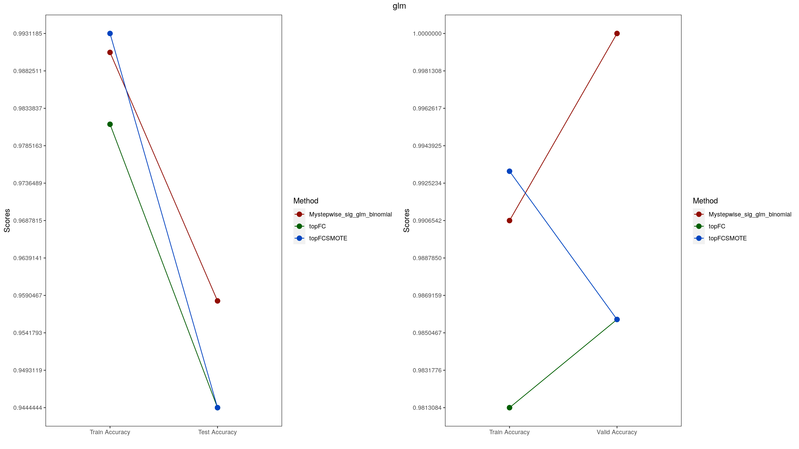
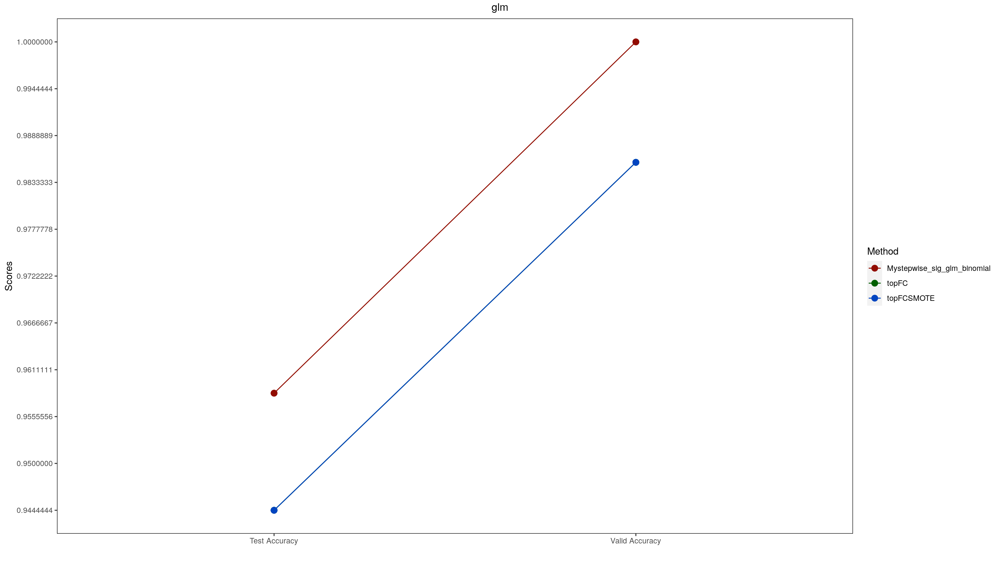
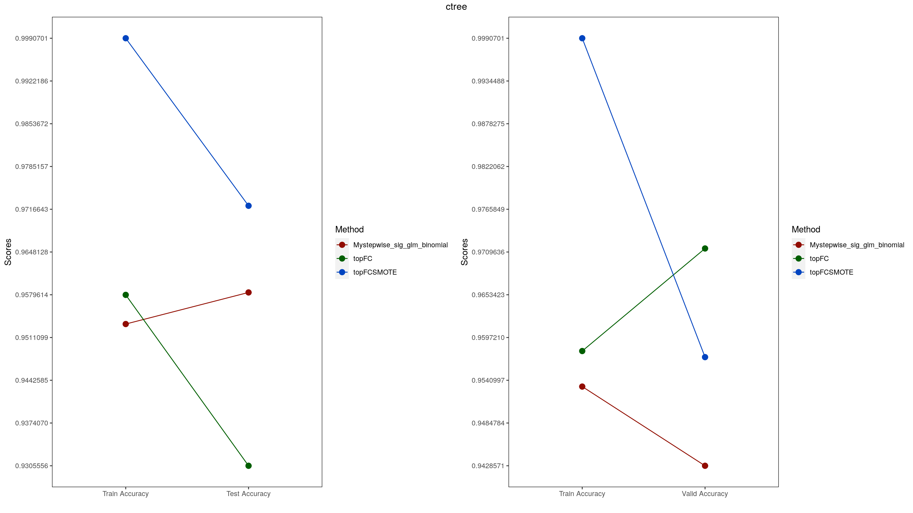
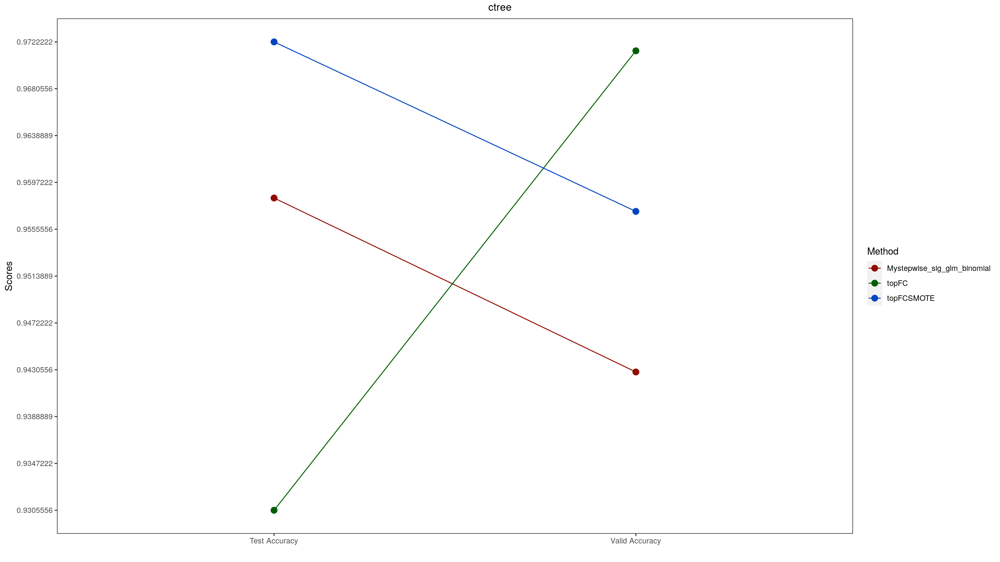
The relationship betweend accuracy on testing and validation sets can also be pictured as scatterplot:
acc2 = acc[1:6, ] # get top 6 methods accmelt = melt(acc2, id.vars = "method") %>% filter(variable != "metaindex") %>% filter(variable != "miRy") accmelt = cbind(accmelt, strsplit2(accmelt$variable, "_")) acctest = accmelt$value[accmelt$`2` == "test"] accvalid = accmelt$value[accmelt$`2` == "valid"] accmeth = accmelt$method[accmelt$`2` == "test"] unique(accmeth) #> [1] "topFC" "Mystepwise_sig_glm_binomial" #> [3] "topFCSMOTE" "Mystepwise_glm_binomial" #> [5] "sigtop" "sigtopBonf" plot5 = ggplot(, aes(x = as.numeric(acctest), y = as.numeric(accvalid), shape = accmeth)) + geom_point() + scale_x_continuous(name = "Accuracy on test set", limits = c(0.5, 1)) + scale_y_continuous(name = "Accuracy on validation set", limits = c(0.5, 1)) + theme_bw() grid.arrange(arrangeGrob(plot5, ncol = 1, nrow = 1))
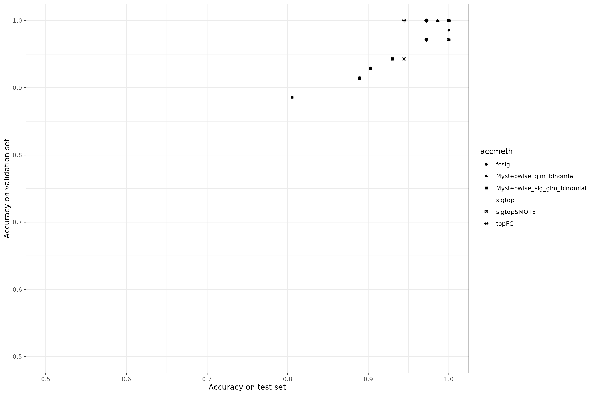
Suppose we decide to use sensitivity and specificity in validation set (e.g. in the model architectures we plan to use in our research) as decisive scoring metric for feature signature. The three best signatures may be:
OmicSelector_table(best_signatures[1:3, 2:4])
| method | SMOTE | miRy | |
|---|---|---|---|
| topFC | topFC | No | Class ~ hsa.miR.217.5p + hsa.miR.375.3p + hsa.miR.192.5p + hsa.miR.194.5p + hsa.miR.21.5p + hsa.miR.30a.3p + hsa.miR.199b.5p + hsa.miR.200a.3p + hsa.miR.708.3p + hsa.miR.144.5p + hsa.miR.141.3p |
| Mystepwise_sig_glm_binomial | Mystepwise_sig_glm_binomial | No | Class ~ hsa.miR.21.5p + hsa.miR.26b.5p + hsa.miR.30c.2.3p + hsa.miR.375.3p + hsa.miR.378a.3p + hsa.miR.338.3p |
| topFCSMOTE | topFCSMOTE | Yes | Class ~ hsa.miR.217.5p + hsa.miR.375.3p + hsa.miR.192.5p + hsa.miR.194.5p + hsa.miR.21.5p + hsa.miR.30a.3p + hsa.miR.199b.5p + hsa.miR.144.5p + hsa.miR.30c.2.3p + hsa.miR.210.3p + hsa.miR.200a.3p |
To get the miRNAs from formula you can use OmicSelector_get_features_from_benchmark.
selected_miRNAs = OmicSelector_get_features_from_benchmark(benchmark_csv = "benchmark.csv", best_signatures$method[1]) # for the best performing signiture gsub("\\.", "-", selected_miRNAs) # R doesn't like hyphens, but we can introduce them easly #> [1] "hsa-miR-217-5p" "hsa-miR-375-3p" "hsa-miR-192-5p" "hsa-miR-194-5p" #> [5] "hsa-miR-21-5p" "hsa-miR-30a-3p" "hsa-miR-199b-5p" "hsa-miR-200a-3p" #> [9] "hsa-miR-708-3p" "hsa-miR-144-5p" "hsa-miR-141-3p"
As a double check, we can inspect the differential expression of miRNAs constituating selected signature:
best_de = OmicSelector_best_signiture_de(selected_miRNAs) OmicSelector_table(best_de)
| miR | log2FC | p-value | p-value BH | |
|---|---|---|---|---|
| 7 | hsa.miR.217.5p | 4.996853 | 0 | 0 |
| 6 | hsa.miR.375.3p | 4.788105 | 0 | 0 |
| 23 | hsa.miR.192.5p | 2.963697 | 0 | 0 |
| 18 | hsa.miR.194.5p | 2.943915 | 0 | 0 |
| 1 | hsa.miR.21.5p | 2.602216 | 0 | 0 |
| 3 | hsa.miR.30a.3p | -2.441965 | 0 | 0 |
| 11 | hsa.miR.199b.5p | 2.381457 | 0 | 0 |
| 25 | hsa.miR.200a.3p | 2.194942 | 0 | 0 |
| 30 | hsa.miR.708.3p | 2.162216 | 0 | 0 |
| 39 | hsa.miR.144.5p | -2.112787 | 0 | 0 |
| 26 | hsa.miR.141.3p | 2.108966 | 0 | 0 |
Let’s visualize the performance of those methods using barplots:
for (i in 1:3) { cat(paste0("\n\n## ", acc$method[i], "\n\n")) par(mfrow = c(1, 2)) acc = OmicSelector_best_signiture_proposals_meta11("benchmark.csv") metody = OmicSelector_get_benchmark_methods("benchmark.csv") ktory_set = match(acc$method[i], OmicSelector_get_benchmark("benchmark.csv")$method) # do_ktorej_kolumny = which(colnames(acc) == 'metaindex') barplot(as.numeric(acc[i,1:do_ktorej_kolumny])) for (ii in 1:length(metody)) { temp = OmicSelector_get_benchmark("benchmark.csv") %>% dplyr::select(starts_with(paste0(metody[ii], "_t")), starts_with(paste0(metody[ii], "_v"))) ROCtext = paste0("Training AUC ROC: ", round(temp[ktory_set, 1], 2), " (95%CI: ", round(temp[ktory_set, 2], 2), "-", round(temp[ktory_set, 3], 2), ")") temp = temp[, -c(1:3)] temp2 = as.numeric(temp[ktory_set, ]) temp3 = matrix(temp2, nrow = 3, byrow = T) colnames(temp3) = c("Accuracy", "Sensitivity", "Specificity") rownames(temp3) = c("Training", "Testing", "Validation") temp3 = t(temp3) plot1 = barplot(temp3, beside = T, ylim = c(0, 1), xlab = paste0(ROCtext, "\nBlack - accuracy, blue - sensitivity, green - specificity"), width = 0.85, col = c("black", "blue", "green"), legend = F, args.legend = list(x = "topright", bty = "n", inset = c(0, -0.25)), cex.lab = 0.7, main = paste0(acc$method[i], " - ", metody[ii]), font.lab = 2) ## Add text at top of bars text(x = plot1, y = as.numeric(temp3), label = paste0(round(as.numeric(temp[ktory_set, ]) * 100, 1), "%"), pos = 3, cex = 0.6, col = "red") } par(mfrow = c(1, 1)) } #> #> #> ## topFC
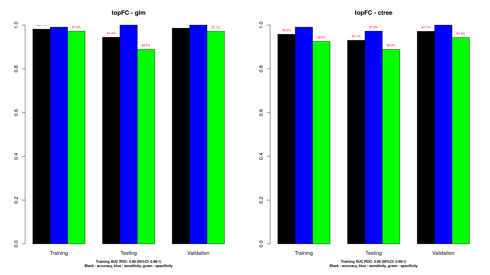
#>
#>
#> ## Mystepwise_sig_glm_binomial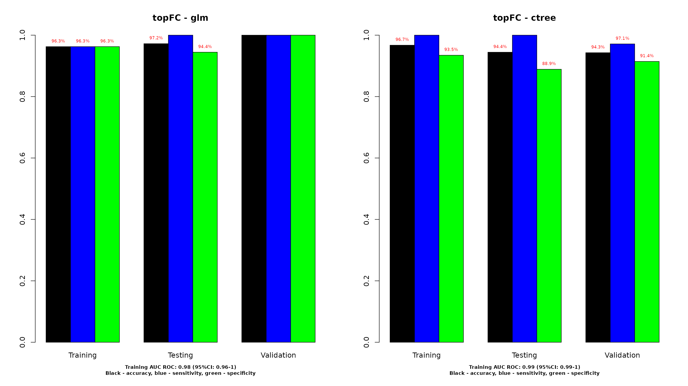
#>
#>
#> ## topFCSMOTE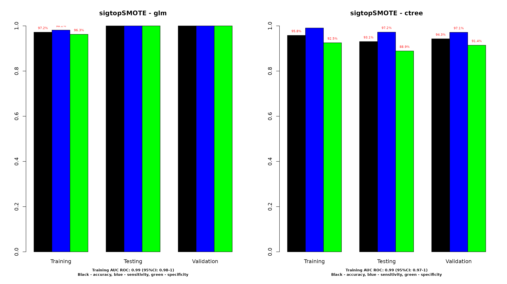
Finally, we can assess the overlap of top 3 feature selection methods:
overlap = OmicSelector_signiture_overlap(acc$method[1:3], "benchmark.csv")
Which miRNAs are common for between feature selection methods?
attr(overlap, "intersections") #> $topFCSMOTE #> [1] "hsa.miR.210.3p" #> #> $`topFC:topFCSMOTE` #> [1] "hsa.miR.217.5p" "hsa.miR.192.5p" "hsa.miR.194.5p" "hsa.miR.30a.3p" #> [5] "hsa.miR.199b.5p" "hsa.miR.200a.3p" "hsa.miR.144.5p" #> #> $Mystepwise_sig_glm_binomial #> [1] "hsa.miR.26b.5p" "hsa.miR.378a.3p" "hsa.miR.338.3p" #> #> $`Mystepwise_sig_glm_binomial:topFCSMOTE` #> [1] "hsa.miR.30c.2.3p" #> #> $`topFC:Mystepwise_sig_glm_binomial:topFCSMOTE` #> [1] "hsa.miR.375.3p" "hsa.miR.21.5p" #> #> $topFC #> [1] "hsa.miR.708.3p" "hsa.miR.141.3p"
Let’s draw vulcano plot and mark the miRNAs selected in best signature:
OmicSelector_vulcano_plot(selected_miRNAs = de$miR, DE = de, only_label = selected_miRNAs)
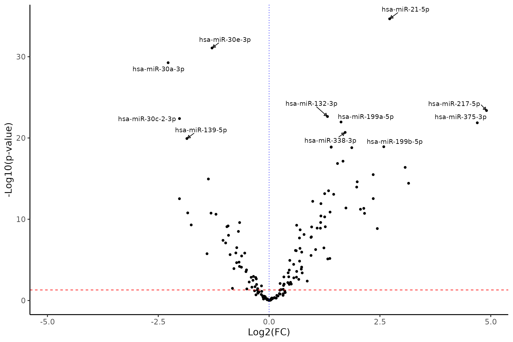
Let’s draw heatmap for selected miRNAs in whole dataset (training, testing and validation set).
OmicSelector_heatmap(x = dplyr::select(mixed, gsub("\\.", "-", selected_miRNAs)), rlab = data.frame(Class = mixed$Class, Mix = mixed$mix), zscore = F, margins = c(10, 10))
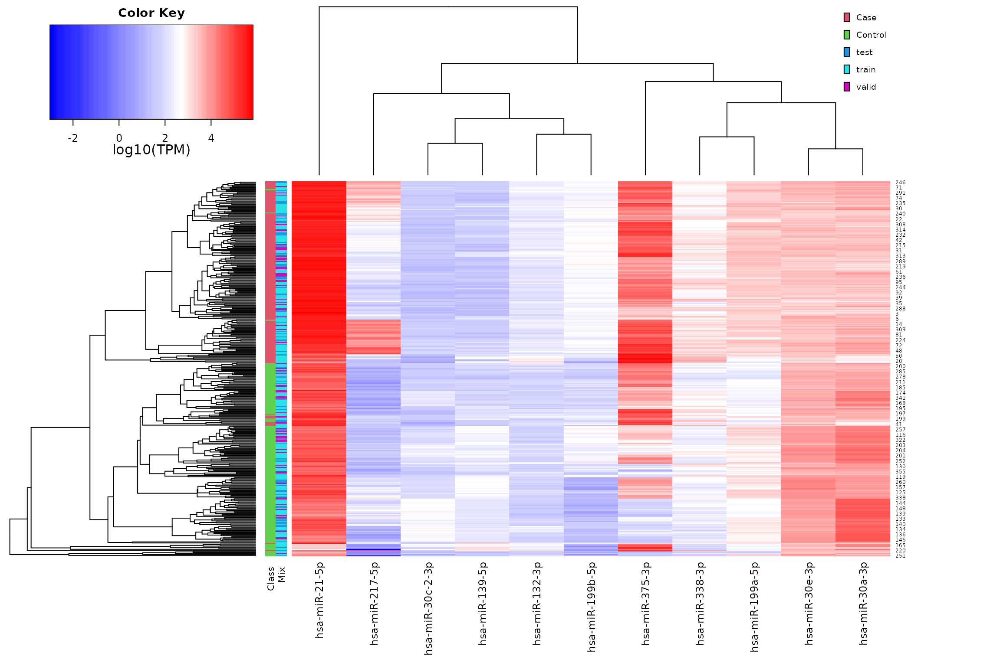
OmicSelector_heatmap(x = dplyr::select(mixed, gsub("\\.", "-", selected_miRNAs)), rlab = data.frame(Class = mixed$Class, Mix = mixed$mix), zscore = T, margins = c(10, 10))
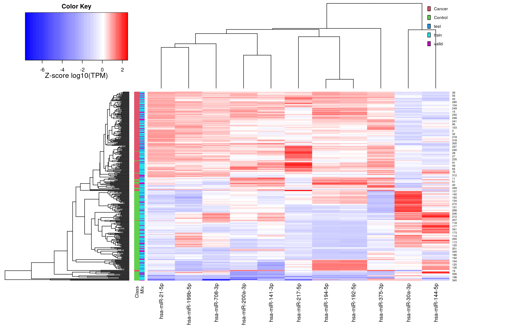
Based on everything we have done so far, we suggest using the following signiture in further validation of biomarker study.
session_info() #> ─ Session info ─────────────────────────────────────────────────────────────── #> setting value #> version R version 4.0.2 (2020-06-22) #> os Ubuntu 18.04.4 LTS #> system x86_64, linux-gnu #> ui X11 #> language (EN) #> collate en_US.UTF-8 #> ctype en_US.UTF-8 #> tz Europe/Warsaw #> date 2020-09-30 #> #> ─ Packages ─────────────────────────────────────────────────────────────────── #> package * version date lib source #> abind 1.4-5 2016-07-21 [2] CRAN (R 4.0.0) #> arules 1.6-6 2020-05-15 [2] CRAN (R 4.0.0) #> assertthat 0.2.1 2019-03-21 [2] CRAN (R 4.0.0) #> backports 1.1.8 2020-06-17 [2] CRAN (R 4.0.0) #> BiocManager 1.30.10 2019-11-16 [1] CRAN (R 4.0.2) #> Biocomb * 0.4 2018-05-18 [2] CRAN (R 4.0.0) #> BiocStyle * 2.16.0 2020-04-27 [1] Bioconductor #> bitops 1.0-6 2013-08-17 [2] CRAN (R 4.0.0) #> blob 1.2.1 2020-01-20 [2] CRAN (R 4.0.0) #> bookdown 0.20 2020-06-23 [2] CRAN (R 4.0.0) #> boot 1.3-25 2020-04-26 [2] CRAN (R 4.0.0) #> broom 0.7.0 2020-07-09 [2] CRAN (R 4.0.2) #> C50 * 0.1.3.1 2020-05-26 [2] CRAN (R 4.0.0) #> callr 3.4.3 2020-03-28 [2] CRAN (R 4.0.0) #> car 3.0-8 2020-05-21 [2] CRAN (R 4.0.0) #> carData 3.0-4 2020-05-22 [2] CRAN (R 4.0.0) #> caret * 6.0-86 2020-03-20 [2] CRAN (R 4.0.0) #> caTools 1.18.0 2020-01-17 [2] CRAN (R 4.0.0) #> cellranger 1.1.0 2016-07-27 [2] CRAN (R 4.0.0) #> class 7.3-17 2020-04-26 [2] CRAN (R 4.0.0) #> classInt * 0.4-3 2020-04-07 [2] CRAN (R 4.0.0) #> cli 2.0.2 2020-02-28 [2] CRAN (R 4.0.0) #> cluster 2.1.0 2019-06-19 [2] CRAN (R 4.0.0) #> codetools 0.2-16 2018-12-24 [2] CRAN (R 4.0.0) #> coin 1.3-1 2019-08-28 [2] CRAN (R 4.0.0) #> colorspace 1.4-1 2019-03-18 [2] CRAN (R 4.0.0) #> crayon 1.3.4 2017-09-16 [2] CRAN (R 4.0.0) #> crosstalk 1.1.0.1 2020-03-13 [2] CRAN (R 4.0.0) #> Cubist 0.2.3 2020-01-10 [2] CRAN (R 4.0.0) #> curl 4.3 2019-12-02 [2] CRAN (R 4.0.0) #> data.table * 1.12.8 2019-12-09 [2] CRAN (R 4.0.0) #> DBI 1.1.0 2019-12-15 [2] CRAN (R 4.0.0) #> dbplyr 1.4.4 2020-05-27 [2] CRAN (R 4.0.0) #> desc 1.2.0 2018-05-01 [2] CRAN (R 4.0.0) #> devtools * 2.3.0 2020-04-10 [2] CRAN (R 4.0.0) #> digest 0.6.25 2020-02-23 [2] CRAN (R 4.0.0) #> DMwR * 0.4.1 2013-08-08 [2] CRAN (R 4.0.0) #> doParallel * 1.0.15 2019-08-02 [2] CRAN (R 4.0.0) #> dplyr * 1.0.0 2020-05-29 [2] CRAN (R 4.0.0) #> e1071 1.7-3 2019-11-26 [2] CRAN (R 4.0.0) #> edgeR * 3.30.3 2020-06-02 [2] Bioconductor #> ellipsis 0.3.1 2020-05-15 [2] CRAN (R 4.0.0) #> entropy 1.2.1 2014-11-14 [2] CRAN (R 4.0.0) #> epiDisplay * 3.5.0.1 2018-05-10 [2] CRAN (R 4.0.0) #> evaluate 0.14 2019-05-28 [2] CRAN (R 4.0.0) #> fansi 0.4.1 2020-01-08 [2] CRAN (R 4.0.0) #> farver 2.0.3 2020-01-16 [2] CRAN (R 4.0.0) #> fastmap 1.0.1 2019-10-08 [2] CRAN (R 4.0.0) #> forcats * 0.5.0 2020-03-01 [2] CRAN (R 4.0.0) #> foreach * 1.5.0 2020-03-30 [2] CRAN (R 4.0.0) #> foreign * 0.8-80 2020-05-24 [2] CRAN (R 4.0.0) #> formatR 1.7 2019-06-11 [2] CRAN (R 4.0.0) #> Formula 1.2-3 2018-05-03 [2] CRAN (R 4.0.0) #> fs 1.4.2 2020-06-30 [2] CRAN (R 4.0.0) #> FSelector 0.31 2018-05-16 [2] CRAN (R 4.0.0) #> gdata 2.18.0 2017-06-06 [2] CRAN (R 4.0.0) #> generics 0.0.2 2018-11-29 [2] CRAN (R 4.0.0) #> ggbiplot * 0.55 2020-05-31 [2] Github (vqv/ggbiplot@7325e88) #> ggplot2 * 3.3.2 2020-06-19 [2] CRAN (R 4.0.0) #> ggrepel * 0.8.2 2020-03-08 [2] CRAN (R 4.0.0) #> gld * 2.6.2 2020-01-08 [2] CRAN (R 4.0.0) #> glue 1.4.1 2020-05-13 [2] CRAN (R 4.0.0) #> gower 0.2.2 2020-06-23 [2] CRAN (R 4.0.0) #> gplots * 3.0.4 2020-07-05 [2] CRAN (R 4.0.0) #> gridExtra * 2.3 2017-09-09 [2] CRAN (R 4.0.0) #> gtable 0.3.0 2019-03-25 [2] CRAN (R 4.0.0) #> gtools * 3.8.2 2020-03-31 [2] CRAN (R 4.0.0) #> haven 2.3.1 2020-06-01 [2] CRAN (R 4.0.0) #> highr 0.8 2019-03-20 [2] CRAN (R 4.0.0) #> hms 0.5.3 2020-01-08 [2] CRAN (R 4.0.0) #> htmltools 0.5.0 2020-06-16 [2] CRAN (R 4.0.0) #> htmlwidgets 1.5.1 2019-10-08 [2] CRAN (R 4.0.0) #> httpuv 1.5.4 2020-06-06 [2] CRAN (R 4.0.0) #> httr 1.4.2 2020-07-20 [2] CRAN (R 4.0.2) #> inum 1.0-1 2019-04-25 [2] CRAN (R 4.0.0) #> ipred 0.9-9 2019-04-28 [2] CRAN (R 4.0.0) #> iterators * 1.0.12 2019-07-26 [2] CRAN (R 4.0.0) #> jsonlite 1.7.0 2020-06-25 [2] CRAN (R 4.0.0) #> kableExtra * 1.1.0 2019-03-16 [2] CRAN (R 4.0.0) #> KernSmooth 2.23-17 2020-04-26 [2] CRAN (R 4.0.0) #> knitr * 1.29 2020-06-23 [2] CRAN (R 4.0.0) #> labeling 0.3 2014-08-23 [2] CRAN (R 4.0.0) #> later 1.1.0.1 2020-06-05 [2] CRAN (R 4.0.0) #> lattice * 0.20-41 2020-04-02 [2] CRAN (R 4.0.0) #> lava 1.6.7 2020-03-05 [2] CRAN (R 4.0.0) #> lavaan * 0.6-6 2020-05-13 [2] CRAN (R 4.0.0) #> lazyeval 0.2.2 2019-03-15 [2] CRAN (R 4.0.0) #> libcoin 1.0-5 2019-08-27 [2] CRAN (R 4.0.0) #> lifecycle 0.2.0 2020-03-06 [2] CRAN (R 4.0.0) #> limma * 3.44.3 2020-06-12 [2] Bioconductor #> lme4 1.1-23 2020-04-07 [2] CRAN (R 4.0.0) #> lmom 2.8 2019-03-12 [2] CRAN (R 4.0.0) #> lmtest 0.9-37 2019-04-30 [2] CRAN (R 4.0.0) #> locfit 1.5-9.4 2020-03-25 [2] CRAN (R 4.0.0) #> lubridate 1.7.9 2020-06-08 [2] CRAN (R 4.0.0) #> magrittr 1.5 2014-11-22 [2] CRAN (R 4.0.0) #> manipulateWidget 0.10.1 2020-02-24 [2] CRAN (R 4.0.0) #> MASS * 7.3-51.6 2020-04-26 [2] CRAN (R 4.0.0) #> MatchIt * 3.0.2 2018-01-09 [2] CRAN (R 4.0.0) #> Matrix 1.2-18 2019-11-27 [2] CRAN (R 4.0.0) #> matrixStats 0.56.0 2020-03-13 [2] CRAN (R 4.0.0) #> memoise 1.1.0 2017-04-21 [2] CRAN (R 4.0.0) #> mice * 3.10.0 2020-07-13 [2] CRAN (R 4.0.2) #> mime 0.9 2020-02-04 [2] CRAN (R 4.0.0) #> miniUI 0.1.1.1 2018-05-18 [2] CRAN (R 4.0.0) #> minqa 1.2.4 2014-10-09 [2] CRAN (R 4.0.0) #> mnormt 2.0.1 2020-06-29 [1] Github (cran/mnormt@d2b1ff2) #> ModelMetrics 1.2.2.2 2020-03-17 [2] CRAN (R 4.0.0) #> modelr 0.1.8 2020-05-19 [2] CRAN (R 4.0.0) #> modeltools 0.2-23 2020-03-05 [2] CRAN (R 4.0.0) #> multcomp 1.4-13 2020-04-08 [2] CRAN (R 4.0.0) #> munsell 0.5.0 2018-06-12 [2] CRAN (R 4.0.0) #> mvtnorm * 1.1-1 2020-06-09 [2] CRAN (R 4.0.0) #> My.stepwise * 0.1.0 2017-06-29 [2] CRAN (R 4.0.0) #> nlme 3.1-148 2020-05-24 [2] CRAN (R 4.0.0) #> nloptr 1.2.2.2 2020-07-02 [2] CRAN (R 4.0.0) #> nnet * 7.3-14 2020-04-26 [2] CRAN (R 4.0.0) #> numDeriv 2016.8-1.1 2019-06-06 [2] CRAN (R 4.0.0) #> OmicSelector * 1.0.0 2020-09-29 [1] Bioconductor #> openxlsx 4.1.5 2020-05-06 [2] CRAN (R 4.0.0) #> PairedData * 1.1.1 2018-06-02 [2] CRAN (R 4.0.0) #> pamr 1.56.1 2019-04-22 [2] CRAN (R 4.0.0) #> party 1.3-5 2020-06-12 [2] CRAN (R 4.0.0) #> partykit 1.2-9 2020-07-10 [2] CRAN (R 4.0.2) #> pbivnorm 0.6.0 2015-01-23 [2] CRAN (R 4.0.0) #> pillar 1.4.6 2020-07-10 [2] CRAN (R 4.0.2) #> pkgbuild 1.1.0 2020-07-13 [2] CRAN (R 4.0.2) #> pkgconfig 2.0.3 2019-09-22 [2] CRAN (R 4.0.0) #> pkgdown 1.5.1 2020-04-09 [2] CRAN (R 4.0.0) #> pkgload 1.1.0 2020-05-29 [2] CRAN (R 4.0.0) #> plotly * 4.9.2.1 2020-04-04 [2] CRAN (R 4.0.0) #> plyr * 1.8.6 2020-03-03 [2] CRAN (R 4.0.0) #> prettyunits 1.1.1 2020-01-24 [2] CRAN (R 4.0.0) #> pROC * 1.16.2 2020-03-19 [2] CRAN (R 4.0.0) #> processx 3.4.3 2020-07-05 [2] CRAN (R 4.0.0) #> prodlim 2019.11.13 2019-11-17 [2] CRAN (R 4.0.0) #> profileR * 0.3-5 2018-04-19 [2] CRAN (R 4.0.0) #> promises 1.1.1 2020-06-09 [2] CRAN (R 4.0.0) #> ps 1.3.3 2020-05-08 [2] CRAN (R 4.0.0) #> psych * 1.9.12.31 2020-01-08 [2] CRAN (R 4.0.0) #> purrr * 0.3.4 2020-04-17 [2] CRAN (R 4.0.0) #> quantmod 0.4.17 2020-03-31 [2] CRAN (R 4.0.0) #> R.methodsS3 * 1.8.0 2020-02-14 [2] CRAN (R 4.0.0) #> R.oo * 1.23.0 2019-11-03 [2] CRAN (R 4.0.0) #> R.utils * 2.9.2 2019-12-08 [2] CRAN (R 4.0.0) #> R6 2.4.1 2019-11-12 [2] CRAN (R 4.0.0) #> randomForest * 4.6-14 2018-03-25 [2] CRAN (R 4.0.0) #> rappdirs 0.3.1 2016-03-28 [2] CRAN (R 4.0.0) #> RColorBrewer * 1.1-2 2014-12-07 [2] CRAN (R 4.0.0) #> Rcpp * 1.0.5 2020-07-06 [2] CRAN (R 4.0.2) #> readr * 1.3.1 2018-12-21 [2] CRAN (R 4.0.0) #> readxl 1.3.1 2019-03-13 [2] CRAN (R 4.0.0) #> recipes 0.1.13 2020-06-23 [2] CRAN (R 4.0.0) #> remotes * 2.2.0 2020-07-21 [2] CRAN (R 4.0.2) #> reprex 0.3.0 2019-05-16 [2] CRAN (R 4.0.0) #> reshape * 0.8.8 2018-10-23 [2] CRAN (R 4.0.0) #> reshape2 1.4.4 2020-04-09 [2] CRAN (R 4.0.0) #> reticulate * 1.16 2020-05-27 [2] CRAN (R 4.0.0) #> rgl 0.100.54 2020-04-14 [2] CRAN (R 4.0.0) #> rio 0.5.16 2018-11-26 [2] CRAN (R 4.0.0) #> rJava 0.9-13 2020-07-06 [2] CRAN (R 4.0.2) #> rlang 0.4.7 2020-07-09 [2] CRAN (R 4.0.2) #> rmarkdown * 2.3 2020-06-18 [2] CRAN (R 4.0.0) #> ROCR 1.0-11 2020-05-02 [2] CRAN (R 4.0.0) #> ROSE * 0.0-3 2014-07-15 [2] CRAN (R 4.0.0) #> rpart 4.1-15 2019-04-12 [2] CRAN (R 4.0.0) #> rprojroot 1.3-2 2018-01-03 [2] CRAN (R 4.0.0) #> rsq * 2.0 2020-05-09 [2] CRAN (R 4.0.0) #> rstudioapi 0.11 2020-02-07 [2] CRAN (R 4.0.0) #> rvest 0.3.5 2019-11-08 [2] CRAN (R 4.0.0) #> RWeka 0.4-42 2020-02-02 [2] CRAN (R 4.0.0) #> RWekajars 3.9.3-2 2019-10-19 [2] CRAN (R 4.0.0) #> sandwich 2.5-1 2019-04-06 [2] CRAN (R 4.0.0) #> scales * 1.1.1 2020-05-11 [2] CRAN (R 4.0.0) #> sessioninfo 1.1.1 2018-11-05 [2] CRAN (R 4.0.0) #> shiny 1.5.0 2020-06-23 [2] CRAN (R 4.0.0) #> snow 0.4-3 2018-09-14 [2] CRAN (R 4.0.0) #> stargazer * 5.2.2 2018-05-30 [2] CRAN (R 4.0.0) #> statmod 1.4.34 2020-02-17 [2] CRAN (R 4.0.0) #> stringi 1.4.6 2020-02-17 [2] CRAN (R 4.0.0) #> stringr * 1.4.0 2019-02-10 [2] CRAN (R 4.0.0) #> strucchange 1.5-2 2019-10-12 [2] CRAN (R 4.0.0) #> survival * 3.2-3 2020-06-13 [2] CRAN (R 4.0.0) #> testthat 2.3.2 2020-03-02 [2] CRAN (R 4.0.0) #> TH.data 1.0-10 2019-01-21 [2] CRAN (R 4.0.0) #> tibble * 3.0.3 2020-07-10 [2] CRAN (R 4.0.2) #> tidyr * 1.1.0 2020-05-20 [2] CRAN (R 4.0.0) #> tidyselect 1.1.0 2020-05-11 [2] CRAN (R 4.0.0) #> tidyverse * 1.3.0 2019-11-21 [2] CRAN (R 4.0.0) #> timeDate 3043.102 2018-02-21 [2] CRAN (R 4.0.0) #> tmvnsim 1.0-2 2016-12-15 [2] CRAN (R 4.0.0) #> TTR 0.23-6 2019-12-15 [2] CRAN (R 4.0.0) #> usethis * 1.6.1 2020-04-29 [2] CRAN (R 4.0.0) #> vctrs 0.3.2 2020-07-15 [2] CRAN (R 4.0.2) #> viridisLite 0.3.0 2018-02-01 [2] CRAN (R 4.0.0) #> webshot 0.5.2 2019-11-22 [2] CRAN (R 4.0.0) #> withr 2.2.0 2020-04-20 [2] CRAN (R 4.0.0) #> xfun 0.15 2020-06-21 [2] CRAN (R 4.0.0) #> xml2 1.3.2 2020-04-23 [2] CRAN (R 4.0.0) #> xtable 1.8-4 2019-04-21 [2] CRAN (R 4.0.0) #> xts 0.12-0 2020-01-19 [2] CRAN (R 4.0.0) #> yaml 2.2.1 2020-02-01 [2] CRAN (R 4.0.0) #> zip 2.0.4 2019-09-01 [2] CRAN (R 4.0.0) #> zoo 1.8-8 2020-05-02 [2] CRAN (R 4.0.0) #> #> [1] /home/konrad/R/x86_64-pc-linux-gnu-library/4.0 #> [2] /usr/lib/R/site-library #> [3] /usr/lib/R/library
packageDescription("OmicSelector") #> Package: OmicSelector #> Type: Package #> Title: OmicSelector - a package for biomarker selection based on #> high-throughput experiments. #> Version: 1.0.0 #> Author: Konrad Stawiski #> Maintainer: Konrad Stawiski <konrad@konsta.com.pl> #> Description: OmicSelector is package is the environment, docker-based #> application and R package for biomarker signiture selection #> from high-throughput experiments. Initially developed for #> miRNA-seq. The package introduces automatic and structured #> feature selection with further benchmarking using multiple data #> mining methods, thus allow to find the most overfitting #> resiliant signiture (set of featrues) that can be used in #> biomarker validation studies. E.g. this package can be used to #> find the set of miRNAs with the greatest biomarker potential #> based on miRNAs-seq. This set can be further validated in #> cheaper qPCR studies. #> License: License: MIT + file LICENSE #> Encoding: UTF-8 #> LazyData: true #> Suggests: knitr, rmarkdown #> VignetteBuilder: knitr #> StagedInstall: yes #> Imports: dplyr, snow, remotes, devtools, ellipsis, BiocManager, plyr, #> tibble, tidyr, XML, epiDisplay, rsq, MASS, caret, tidyverse, #> xtable, pROC, ggplot2, DMwR, ROSE, gridExtra, gplots, stringr, #> data.table, doParallel, Boruta, spFSR, varSelRF, My.stepwise, #> psych, C50, randomForest, nnet, reticulate, stargazer, ggrepel, #> classInt, plotly, keras, cutpointr, naniar, visdat, #> imputeMissings, foreach, deepnet, calibrate, networkD3, #> VennDiagram, RSNNS, kernlab, car, PairedData, profileR, #> xgboost, kableExtra, curl, tidyselect, rJava, mice, MatchIt, #> cluster, Biobase, Biocomb, ComplexHeatmap, GDCRNATools, #> R.utils, TCGAbiolinks, VIM, circlize, edgeR, magick, mgcv, #> party, rmarkdown, rpart, sva, devtools, nnet, klaR #> RoxygenNote: 7.1.1 #> Authors@R: c( person("Konrad", "Stawiski", , "konrad@konsta.com.pl", #> role = c("aut", "cre"), comment = c(ORCID = #> "0000-0002-6550-3384") ), person("Marcin", "Kaszkowiak", role = #> "aut")) #> BugReports: https://github.com/kstawiski/OmicSelector/issues #> URL: https://kstawiski.github.io/OmicSelector/ #> biocViews: Software #> Depends: R (>= 2.10) #> Built: R 4.0.2; ; 2020-09-29 22:00:22 UTC; unix #> #> -- File: /home/konrad/R/x86_64-pc-linux-gnu-library/4.0/OmicSelector/Meta/package.rds
To render this tutorial we used:
render("Tutorial.Rmd", output_file = "Tutorial.html", output_dir = "../inst/doc/")
Packages installed in our docker enviorment:
| Package | LibPath | Version | Priority | Depends | Imports | LinkingTo | Suggests | Enhances | License | License_is_FOSS | License_restricts_use | OS_type | MD5sum | NeedsCompilation | Built | |
|---|---|---|---|---|---|---|---|---|---|---|---|---|---|---|---|---|
| BiocManager | BiocManager | /home/konrad/R/x86_64-pc-linux-gnu-library/4.0 | 1.30.10 | NA | NA | utils | NA | BiocStyle, BiocVersion, remotes, testthat, withr, curl, knitr | NA | Artistic-2.0 | NA | NA | NA | NA | no | 4.0.2 |
| BiocStyle | BiocStyle | /home/konrad/R/x86_64-pc-linux-gnu-library/4.0 | 2.16.0 | NA | NA | bookdown, knitr (>= 1.12), rmarkdown (>= 1.2), stats, utils, yaml, BiocManager | NA | BiocGenerics, RUnit, htmltools | NA | Artistic-2.0 | NA | NA | NA | NA | no | 4.0.2 |
| biostatUZH | biostatUZH | /home/konrad/R/x86_64-pc-linux-gnu-library/4.0 | 1.8.0 | NA | R (>= 2.15.0), grDevices, graphics, stats, survival (>= 2.35) | boot | NA | cmprsk, lme4, prodlim, psy, xtable, reporttools, Hmisc, surveillance, carData | MASS, ellipse | GPL (>=2) | NA | NA | NA | NA | no | 4.0.0 |
| broom.mixed | broom.mixed | /home/konrad/R/x86_64-pc-linux-gnu-library/4.0 | 0.2.6 | NA | NA | broom, dplyr, tidyr, plyr, purrr, tibble, reshape2, nlme, methods, stringr, coda, TMB, cubelyr | NA | knitr, testthat, ggplot2, Matrix, MCMCglmm, lme4, brms, mgcv, gamlss, gamlss.data, lmerTest, pbkrtest, glmmADMB, glmmTMB, dotwhisker, pander, R2jags, GLMMadaptive, rstan, rstanarm | NA | GPL-3 | NA | NA | NA | NA | no | 4.0.2 |
| cpp11 | cpp11 | /home/konrad/R/x86_64-pc-linux-gnu-library/4.0 | 0.2.1 | NA | NA | NA | NA | bench, brio, callr, cli, covr, decor, desc, ggplot2, glue, knitr, lobstr, mockery, progress, rmarkdown, scales, testthat, tibble, utils, vctrs, withr | NA | MIT + file LICENSE | NA | NA | NA | NA | no | 4.0.2 |
| cr17 | cr17 | /home/konrad/R/x86_64-pc-linux-gnu-library/4.0 | 0.1.0 | NA | ggplot2 (>= 2.2.1), survival (>= 2.41-3), cmprsk (>= 2.2-7), gridExtra (>= 2.2.1), R (>= 3.3.2) | dplyr (>= 0.5.0), scales (>= 0.4.1), grid (>= 3.3.0), gtable (>= 0.2.0) | NA | knitr, rmarkdown | NA | GPL | NA | NA | NA | NA | no | 4.0.0 |
| cubelyr | cubelyr | /home/konrad/R/x86_64-pc-linux-gnu-library/4.0 | 1.0.0 | NA | R (>= 3.2) | dplyr, glue, pillar, purrr, rlang, tibble, tidyselect | NA | covr, testthat (>= 2.1.0) | NA | MIT + file LICENSE | NA | NA | NA | NA | no | 4.0.2 |
| ezfun | ezfun | /home/konrad/R/x86_64-pc-linux-gnu-library/4.0 | 0.1.3 | NA | R (>= 3.1.0) | NA | NA | knitr, rmarkdown | NA | GPL-2 | NA | NA | NA | NA | no | 4.0.0 |
| gmodels | gmodels | /home/konrad/R/x86_64-pc-linux-gnu-library/4.0 | 2.18.1 | NA | R (>= 1.9.0) | MASS, gdata | NA | gplots, gtools, Matrix, nlme, lme4 (>= 0.999999-0) | NA | GPL-2 | NA | NA | NA | NA | no | 4.0.2 |
| gt | gt | /home/konrad/R/x86_64-pc-linux-gnu-library/4.0 | 0.2.2 | NA | R (>= 3.2.0) | checkmate (>= 2.0.0), commonmark (>= 1.7), dplyr (>= 0.8.5), fs (>= 1.3.2), ggplot2 (>= 3.3.0), glue (>= 1.3.2), htmltools (>= 0.5.0), magrittr (>= 1.5), rlang (>= 0.4.5), sass (>= 0.1.1), scales (>= 1.1.0), stringr (>= 1.3.1), tibble (>= 3.0.0), tidyselect (>= 1.0.0) | NA | covr, knitr, paletteer, testthat (>= 2.1.0), RColorBrewer, rmarkdown, rvest, shiny, tidyr, webshot, xml2 | NA | MIT + file LICENSE | NA | NA | NA | NA | no | 4.0.2 |
| gtsummary | gtsummary | /home/konrad/R/x86_64-pc-linux-gnu-library/4.0 | 1.3.2 | NA | R (>= 3.4) | broom (>= 0.5.6), broom.mixed (>= 0.2.6), crayon (>= 1.3.4), dplyr (>= 0.8.5), forcats (>= 0.5.0), glue (>= 1.4.0), gt (>= 0.2.1), knitr (>= 1.28), lifecycle (>= 0.2.0), magrittr (>= 1.5), purrr (>= 0.3.4), rlang (>= 0.4.6), stringr (>= 1.4.0), survival, tibble (>= 3.0.1), tidyr (>= 1.0.3), tidyselect (>= 1.1.0), usethis (>= 1.6.1) | NA | car, covr, flextable, geepack, Hmisc, kableExtra, lme4, officer, pkgdown, rmarkdown, scales, spelling, testthat | NA | MIT + file LICENSE | NA | NA | NA | NA | no | 4.0.2 |
| miRNAselector | miRNAselector | /home/konrad/R/x86_64-pc-linux-gnu-library/4.0 | 1.0.0 | NA | R (>= 2.10) | dplyr, snow, remotes, devtools, ellipsis, BiocManager, plyr, tibble, tidyr, XML, epiDisplay, rsq, MASS, caret, tidyverse, xtable, pROC, ggplot2, DMwR, ROSE, gridExtra, gplots, stringr, data.table, doParallel, Boruta, spFSR, varSelRF, My.stepwise, psych, C50, randomForest, nnet, reticulate, stargazer, ggrepel, classInt, plotly, keras, cutpointr, naniar, visdat, imputeMissings, foreach, deepnet, calibrate, networkD3, VennDiagram, RSNNS, kernlab, car, PairedData, profileR, xgboost, kableExtra, curl, tidyselect, rJava, mice, MatchIt, cluster, Biobase, Biocomb, ComplexHeatmap, GDCRNATools, R.utils, TCGAbiolinks, VIM, circlize, edgeR, magick, mgcv, party, rmarkdown, rpart, sva, devtools, nnet, klaR | NA | knitr, rmarkdown | NA | License: MIT + file LICENSE | NA | NA | NA | NA | NA | 4.0.2 |
| mitools | mitools | /home/konrad/R/x86_64-pc-linux-gnu-library/4.0 | 2.4 | NA | NA | DBI, methods, stats | NA | RODBC, foreign | NA | GPL-2 | NA | NA | NA | NA | no | 4.0.2 |
| mixOmics | mixOmics | /home/konrad/R/x86_64-pc-linux-gnu-library/4.0 | 6.12.1 | NA | R (>= 3.5.0), MASS, lattice, ggplot2 | igraph, ellipse, corpcor, RColorBrewer, parallel, dplyr, tidyr, reshape2, methods, matrixStats, rARPACK, gridExtra, grDevices, graphics, stats, utils | NA | BiocStyle, knitr, rmarkdown, testthat, rgl | NA | GPL (>= 2) | NA | NA | NA | NA | no | 4.0.0 |
| MLeval | MLeval | /home/konrad/R/x86_64-pc-linux-gnu-library/4.0 | 0.3 | NA | R (>= 3.5.0) | ggplot2 | NA | knitr, rmarkdown | NA | AGPL-3 | NA | NA | NA | NA | no | 4.0.0 |
| mnormt | mnormt | /home/konrad/R/x86_64-pc-linux-gnu-library/4.0 | 2.0.1 | NA | R (>= 4.0.0) | tmvnsim (>= 1.0-2) | NA | NA | NA | GPL-2 | GPL-3 | NA | NA | NA | NA | yes | 4.0.0 |
| OmicSelector | OmicSelector | /home/konrad/R/x86_64-pc-linux-gnu-library/4.0 | 1.0.0 | NA | R (>= 2.10) | dplyr, snow, remotes, devtools, ellipsis, BiocManager, plyr, tibble, tidyr, XML, epiDisplay, rsq, MASS, caret, tidyverse, xtable, pROC, ggplot2, DMwR, ROSE, gridExtra, gplots, stringr, data.table, doParallel, Boruta, spFSR, varSelRF, My.stepwise, psych, C50, randomForest, nnet, reticulate, stargazer, ggrepel, classInt, plotly, keras, cutpointr, naniar, visdat, imputeMissings, foreach, deepnet, calibrate, networkD3, VennDiagram, RSNNS, kernlab, car, PairedData, profileR, xgboost, kableExtra, curl, tidyselect, rJava, mice, MatchIt, cluster, Biobase, Biocomb, ComplexHeatmap, GDCRNATools, R.utils, TCGAbiolinks, VIM, circlize, edgeR, magick, mgcv, party, rmarkdown, rpart, sva, devtools, nnet, klaR | NA | knitr, rmarkdown | NA | License: MIT + file LICENSE | NA | NA | NA | NA | NA | 4.0.2 |
| Rmisc | Rmisc | /home/konrad/R/x86_64-pc-linux-gnu-library/4.0 | 1.5 | NA | lattice, plyr | NA | NA | latticeExtra, Hmisc, stats4 | NA | GPL-3 | NA | NA | NA | NA | no | 4.0.2 |
| RVAideMemoire | RVAideMemoire | /home/konrad/R/x86_64-pc-linux-gnu-library/4.0 | 0.9-77 | NA | NA | ade4 (>= 1.7-8), boot, car, FactoMineR, graphics, grDevices, lme4 (>= 1.0-4), MASS, mixOmics, nnet, pls, pspearman, stats, utils, vegan (>= 2.4-3) | NA | dgof, emmeans, ordinal, survival | NA | GPL-2 | NA | NA | NA | NA | no | 4.0.0 |
| sass | sass | /home/konrad/R/x86_64-pc-linux-gnu-library/4.0 | 0.2.0 | NA | NA | digest, fs, rlang, htmltools | NA | testthat, knitr, rmarkdown | NA | MIT + file LICENSE | NA | NA | NA | NA | yes | 4.0.2 |
| spotifyr | spotifyr | /home/konrad/R/x86_64-pc-linux-gnu-library/4.0 | 2.1.1 | NA | R (>= 3.3.0) | dplyr, purrr, tidyr, httr, lubridate, jsonlite, readr, rvest, stringr, tibble, janitor | NA | testthat, genius | NA | MIT + file LICENSE | NA | NA | NA | NA | no | 4.0.2 |
| survC1 | survC1 | /home/konrad/R/x86_64-pc-linux-gnu-library/4.0 | 1.0-2 | NA | survival | NA | NA | NA | NA | GPL-2 | NA | NA | NA | NA | NA | 4.0.2 |
| survey | survey | /home/konrad/R/x86_64-pc-linux-gnu-library/4.0 | 4.0 | NA | R (>= 3.1.0), grid, methods, Matrix, survival | stats, graphics, splines, lattice, minqa, numDeriv, mitools (>= 2.4) | NA | foreign, MASS, KernSmooth, hexbin, RSQLite, quantreg, parallel, CompQuadForm, DBI, AER | NA | GPL-2 | GPL-3 | NA | NA | NA | NA | no | 4.0.2 |
| survutils | survutils | /home/konrad/R/x86_64-pc-linux-gnu-library/4.0 | 1.0.2 | NA | R (>= 3.1.2) | stats, dplyr (>= 0.4.3), survC1 (>= 1.0.2), survival (>= 2.38.3), ggplot2 (>= 1.0.0), purrr (>= 0.1.0), magrittr (>= 1.5), broom (>= 0.3.7), lazyeval (>= 0.2.0), glue | NA | tidyr (>= 0.4.1), testthat | NA | GPL-3 | NA | NA | NA | NA | no | 4.0.2 |
| tableone | tableone | /home/konrad/R/x86_64-pc-linux-gnu-library/4.0 | 0.12.0 | NA | NA | survey, MASS, e1071, zoo, gmodels, nlme, labelled | NA | survival, testthat, Matrix, Matching, reshape2, ggplot2, knitr, geepack, lme4, lmerTest, rmarkdown | NA | GPL-2 | NA | NA | NA | NA | no | 4.0.2 |
| TMB | TMB | /home/konrad/R/x86_64-pc-linux-gnu-library/4.0 | 1.7.18 | NA | R (>= 3.0.0) | graphics, methods, stats, utils, Matrix (>= 1.0-12) | Matrix, RcppEigen | numDeriv, parallel | NA | GPL-2 | NA | NA | NA | NA | yes | 4.0.2 |
| abind | abind | /usr/lib/R/site-library | 1.4-5 | NA | R (>= 1.5.0) | methods, utils | NA | NA | NA | LGPL (>= 2) | NA | NA | NA | NA | no | 4.0.0 |
| acepack | acepack | /usr/lib/R/site-library | 1.4.1 | NA | NA | NA | NA | testthat | NA | MIT + file LICENSE | NA | NA | NA | NA | yes | 4.0.0 |
| ada | ada | /usr/lib/R/site-library | 2.0-5 | NA | R(>= 2.10),rpart | NA | NA | NA | NA | GPL | NA | NA | NA | NA | no | 4.0.0 |
| additivityTests | additivityTests | /usr/lib/R/site-library | 1.1-4 | NA | NA | NA | NA | knitr | NA | GPL-3 | NA | NA | NA | NA | no | 4.0.0 |
| ade4 | ade4 | /usr/lib/R/site-library | 1.7-15 | NA | R (>= 2.10) | graphics, grDevices, methods, stats, utils, MASS, pixmap, sp | NA | ade4TkGUI, adegraphics, adephylo, ape, CircStats, deldir, lattice, spdep, splancs, waveslim | NA | GPL (>= 2) | NA | NA | NA | NA | yes | 4.0.0 |
| airports | airports | /usr/lib/R/site-library | 0.1.0 | NA | R (>= 2.10) | NA | NA | testthat | NA | GPL-3 | NA | NA | NA | NA | no | 4.0.0 |
| amap | amap | /usr/lib/R/site-library | 0.8-18 | NA | R (>= 3.6.0) | NA | NA | Biobase | NA | GPL | NA | NA | NA | NA | yes | 4.0.0 |
| annotate | annotate | /usr/lib/R/site-library | 1.66.0 | NA | R (>= 2.10), AnnotationDbi (>= 1.27.5), XML | Biobase, DBI, xtable, graphics, utils, stats, methods, BiocGenerics (>= 0.13.8), RCurl | NA | hgu95av2.db, genefilter, Biostrings (>= 2.25.10), IRanges, rae230a.db, rae230aprobe, tkWidgets, GO.db, org.Hs.eg.db, org.Mm.eg.db, hom.Hs.inp.db, humanCHRLOC, Rgraphviz, RUnit, | NA | Artistic-2.0 | NA | NA | NA | NA | no | 4.0.0 |
| AnnotationDbi | AnnotationDbi | /usr/lib/R/site-library | 1.50.1 | NA | R (>= 2.7.0), methods, utils, stats4, BiocGenerics (>= 0.29.2), Biobase (>= 1.17.0), IRanges | DBI, RSQLite, S4Vectors (>= 0.9.25) | NA | hgu95av2.db, GO.db, org.Sc.sgd.db, org.At.tair.db, KEGG.db, RUnit, TxDb.Hsapiens.UCSC.hg19.knownGene, hom.Hs.inp.db, org.Hs.eg.db, reactome.db, AnnotationForge, graph, EnsDb.Hsapiens.v75, BiocStyle, knitr | NA | Artistic-2.0 | NA | NA | NA | NA | no | 4.0.2 |
| ape | ape | /usr/lib/R/site-library | 5.4 | NA | R (>= 3.2.0) | nlme, lattice, graphics, methods, stats, tools, utils, parallel, Rcpp (>= 0.12.0) | Rcpp | gee, expm, igraph | NA | GPL-2 | GPL-3 | NA | NA | NA | NA | yes | 4.0.0 |
| aroma.light | aroma.light | /usr/lib/R/site-library | 3.18.0 | NA | R (>= 2.15.2) | stats, R.methodsS3 (>= 1.7.1), R.oo (>= 1.23.0), R.utils (>= 2.9.0), matrixStats (>= 0.55.0) | NA | princurve (>= 2.1.4) | NA | GPL (>= 2) | NA | NA | NA | NA | no | 4.0.0 |
| arules | arules | /usr/lib/R/site-library | 1.6-6 | NA | R (>= 3.4.0), Matrix (>= 1.2-0) | stats, methods, graphics, utils | NA | pmml, XML, arulesViz, testthat | NA | GPL-3 | NA | NA | NA | NA | yes | 4.0.0 |
| arulesViz | arulesViz | /usr/lib/R/site-library | 1.3-3 | NA | arules (>= 1.4.1), grid | scatterplot3d, vcd, seriation, igraph (>= 1.0.0), graphics, methods, utils, grDevices, stats, colorspace, DT, plotly, visNetwork | NA | graph, Rgraphviz, iplots, shiny, shinythemes, htmlwidgets | NA | GPL-3 | NA | NA | NA | NA | no | 4.0.0 |
| askpass | askpass | /usr/lib/R/site-library | 1.1 | NA | NA | sys (>= 2.1) | NA | testthat | NA | MIT + file LICENSE | NA | NA | NA | NA | yes | 4.0.0 |
| assertive | assertive | /usr/lib/R/site-library | 0.3-5.1 | NA | R (>= 3.0.0) | assertive.base (>= 0.0-4), assertive.properties (>= 0.0-2), assertive.types (>= 0.0-2), assertive.numbers, assertive.strings, assertive.datetimes, assertive.files, assertive.sets (>= 0.0-2), assertive.matrices, assertive.models, assertive.data, assertive.data.uk, assertive.data.us, assertive.reflection (>= 0.0-2), assertive.code, knitr | NA | testthat | NA | GPL (>= 3) | NA | NA | NA | NA | no | 4.0.2 |
| assertive.base | assertive.base | /usr/lib/R/site-library | 0.0-7 | NA | R (>= 3.0.0) | methods, utils | NA | testthat | NA | GPL (>= 3) | NA | NA | NA | NA | no | 4.0.0 |
| assertive.code | assertive.code | /usr/lib/R/site-library | 0.0-3 | NA | R (>= 3.0.0) | assertive.base (>= 0.0-2), assertive.properties, assertive.types, methods | NA | testthat | NA | GPL (>= 3) | NA | NA | NA | NA | no | 4.0.0 |
| assertive.data | assertive.data | /usr/lib/R/site-library | 0.0-3 | NA | R (>= 3.0.0) | assertive.base (>= 0.0-2), assertive.strings | NA | testthat | NA | GPL (>= 3) | NA | NA | NA | NA | no | 4.0.0 |
| assertive.data.uk | assertive.data.uk | /usr/lib/R/site-library | 0.0-2 | NA | R (>= 3.0.0) | assertive.base (>= 0.0-2), assertive.strings | NA | testthat | NA | GPL (>= 3) | NA | NA | NA | NA | no | 4.0.0 |
| assertive.data.us | assertive.data.us | /usr/lib/R/site-library | 0.0-2 | NA | R (>= 3.0.0) | assertive.base (>= 0.0-2), assertive.strings | NA | testthat, devtools | NA | GPL (>= 3) | NA | NA | NA | NA | no | 4.0.0 |
| assertive.datetimes | assertive.datetimes | /usr/lib/R/site-library | 0.0-2 | NA | R (>= 3.0.0) | assertive.base (>= 0.0-2), assertive.types | NA | testthat | NA | GPL (>= 3) | NA | NA | NA | NA | no | 4.0.0 |
| assertive.files | assertive.files | /usr/lib/R/site-library | 0.0-2 | NA | R (>= 3.0.0) | assertive.base (>= 0.0-2), assertive.numbers | NA | testthat | NA | GPL (>= 3) | NA | NA | NA | NA | no | 4.0.0 |
| assertive.matrices | assertive.matrices | /usr/lib/R/site-library | 0.0-2 | NA | R (>= 3.0.0) | assertive.base (>= 0.0-2) | NA | testthat | NA | GPL (>= 3) | NA | NA | NA | NA | no | 4.0.0 |
| assertive.models | assertive.models | /usr/lib/R/site-library | 0.0-2 | NA | R (>= 3.0.0) | assertive.base (>= 0.0-2), stats | NA | testthat | NA | GPL (>= 3) | NA | NA | NA | NA | no | 4.0.0 |
| assertive.numbers | assertive.numbers | /usr/lib/R/site-library | 0.0-2 | NA | R (>= 3.0.0) | assertive.base (>= 0.0-2) | NA | testthat | NA | GPL (>= 3) | NA | NA | NA | NA | no | 4.0.0 |
| assertive.properties | assertive.properties | /usr/lib/R/site-library | 0.0-4 | NA | R (>= 3.0.0) | assertive.base (>= 0.0-7), methods | NA | testthat | NA | GPL (>= 3) | NA | NA | NA | NA | no | 4.0.0 |
| assertive.reflection | assertive.reflection | /usr/lib/R/site-library | 0.0-4.1 | NA | R (>= 3.0.0) | assertive.base (>= 0.0-7), utils | NA | testthat | NA | GPL (>= 3) | NA | NA | NA | NA | no | 4.0.2 |
| assertive.sets | assertive.sets | /usr/lib/R/site-library | 0.0-3 | NA | R (>= 3.0.0) | assertive.base (>= 0.0-7) | NA | testthat | NA | GPL (>= 3) | NA | NA | NA | NA | no | 4.0.0 |
| assertive.strings | assertive.strings | /usr/lib/R/site-library | 0.0-3 | NA | R (>= 3.0.0) | assertive.base (>= 0.0-2), assertive.types, stringi | NA | testthat | NA | GPL (>= 3) | NA | NA | NA | NA | no | 4.0.0 |
| assertive.types | assertive.types | /usr/lib/R/site-library | 0.0-3 | NA | R (>= 3.0.0) | assertive.base (>= 0.0-7), assertive.properties, codetools, methods, stats | NA | testthat, data.table, dplyr, xml2 | NA | GPL (>= 3) | NA | NA | NA | NA | no | 4.0.0 |
| assertthat | assertthat | /usr/lib/R/site-library | 0.2.1 | NA | NA | tools | NA | testthat, covr | NA | GPL-3 | NA | NA | NA | NA | no | 4.0.0 |
| backports | backports | /usr/lib/R/site-library | 1.1.8 | NA | R (>= 3.0.0) | utils | NA | NA | NA | GPL-2 | GPL-3 | NA | NA | NA | NA | yes | 4.0.0 |
| bartMachine | bartMachine | /usr/lib/R/site-library | 1.2.5 | NA | R (>= 2.14.0), rJava (>= 0.9-8), bartMachineJARs (>= 1.0), randomForest, missForest | graphics, grDevices, stats | NA | NA | NA | GPL-3 | NA | NA | NA | NA | no | 4.0.2 |
| bartMachineJARs | bartMachineJARs | /usr/lib/R/site-library | 1.1 | NA | R (>= 2.14.0), rJava (>= 0.9-8) | NA | NA | NA | NA | GPL-3 | NA | NA | NA | NA | no | 4.0.0 |
| base64enc | base64enc | /usr/lib/R/site-library | 0.1-3 | NA | R (>= 2.9.0) | NA | NA | NA | png | GPL-2 | GPL-3 | NA | NA | NA | NA | yes | 4.0.0 |
| BBmisc | BBmisc | /usr/lib/R/site-library | 1.11 | NA | NA | utils, methods, stats, checkmate (>= 1.8.0) | NA | testthat, microbenchmark, codetools | NA | BSD_2_clause + file LICENSE | NA | NA | NA | NA | yes | 4.0.0 |
| bbmle | bbmle | /usr/lib/R/site-library | 1.0.23.1 | NA | R (>= 3.0.0), stats4 | stats, numDeriv, lattice, MASS, methods, bdsmatrix, Matrix, mvtnorm | NA | emdbook, rms, ggplot2, RUnit, MuMIn, AICcmodavg, Hmisc, optimx (>= 2013.8.6), knitr, testthat | NA | GPL | NA | NA | NA | NA | no | 4.0.0 |
| bdsmatrix | bdsmatrix | /usr/lib/R/site-library | 1.3-4 | NA | methods, R (>= 2.0.0) | NA | NA | NA | NA | LGPL-2 | NA | NA | NA | NA | yes | 4.0.0 |
| beeswarm | beeswarm | /usr/lib/R/site-library | 0.2.3 | NA | NA | stats, graphics, grDevices, utils | NA | NA | NA | Artistic-2.0 | NA | NA | NA | NA | no | 4.0.0 |
| bench | bench | /usr/lib/R/site-library | 1.1.1 | NA | R (>= 3.1) | glue, methods, pillar, profmem, rlang (>= 0.2.0), stats, tibble, utils | NA | covr, dplyr, forcats, ggbeeswarm, ggplot2, ggridges, mockery, parallel, scales, testthat, tidyr (>= 0.8.1), vctrs, withr | NA | GPL-3 | NA | NA | NA | NA | yes | 4.0.0 |
| bestNormalize | bestNormalize | /usr/lib/R/site-library | 1.6.1 | NA | R (>= 3.1.0) | LambertW (>= 0.6.5), nortest, dplyr, doParallel, foreach, doRNG, recipes, tibble, methods | NA | knitr, rmarkdown, MASS, testthat, mgcv, parallel | NA | GPL-3 | NA | NA | NA | NA | no | 4.0.0 |
| BGLR | BGLR | /usr/lib/R/site-library | 1.0.8 | NA | R (>= 3.5.0) | truncnorm | NA | NA | NA | GPL-3 | NA | NA | NA | NA | yes | 4.0.0 |
| BH | BH | /usr/lib/R/site-library | 1.72.0-3 | NA | NA | NA | NA | NA | NA | BSL-1.0 | NA | NA | NA | NA | no | 4.0.0 |
| bibtex | bibtex | /usr/lib/R/site-library | 0.4.2.2 | NA | R (>= 3.0.2) | stringr, utils | NA | testthat | NA | GPL (>= 2) | NA | NA | NA | NA | yes | 4.0.0 |
| biclust | biclust | /usr/lib/R/site-library | 2.0.2 | NA | R (>= 2.10), MASS, grid, colorspace, lattice | methods, flexclust, additivityTests, tidyr, ggplot2 | NA | isa2 | NA | GPL-3 | NA | NA | NA | NA | yes | 4.0.0 |
| Biobase | Biobase | /usr/lib/R/site-library | 2.48.0 | NA | R (>= 2.10), BiocGenerics (>= 0.27.1), utils | methods | NA | tools, tkWidgets, ALL, RUnit, golubEsets | NA | Artistic-2.0 | NA | NA | NA | NA | yes | 4.0.0 |
| BiocCheck | BiocCheck | /usr/lib/R/site-library | 1.24.0 | NA | R (>= 3.5.0) | biocViews (>= 1.33.7), BiocManager, stringdist, graph, httr, tools, optparse, codetools, methods, utils, knitr | NA | RUnit, BiocGenerics, Biobase, RJSONIO, rmarkdown, devtools (>= 1.4.1), usethis, BiocStyle | codetoolsBioC | Artistic-2.0 | NA | NA | NA | NA | no | 4.0.0 |
| BiocFileCache | BiocFileCache | /usr/lib/R/site-library | 1.12.0 | NA | R (>= 3.4.0), dbplyr (>= 1.0.0) | methods, stats, utils, dplyr, RSQLite, DBI, rappdirs, curl, httr | NA | testthat, knitr, BiocStyle, rmarkdown, rtracklayer | NA | Artistic-2.0 | NA | NA | NA | NA | no | 4.0.0 |
| BiocGenerics | BiocGenerics | /usr/lib/R/site-library | 0.34.0 | NA | R (>= 3.6.0), methods, utils, graphics, stats, parallel | methods, utils, graphics, stats, parallel | NA | Biobase, S4Vectors, IRanges, GenomicRanges, DelayedArray, Biostrings, Rsamtools, AnnotationDbi, oligoClasses, oligo, affyPLM, flowClust, affy, DESeq2, MSnbase, annotate, RUnit | NA | Artistic-2.0 | NA | NA | NA | NA | no | 4.0.0 |
| BiocManager.1 | BiocManager | /usr/lib/R/site-library | 1.30.10 | NA | NA | utils | NA | BiocStyle, BiocVersion, remotes, testthat, withr, curl, knitr | NA | Artistic-2.0 | NA | NA | NA | NA | no | 4.0.0 |
| Biocomb | Biocomb | /usr/lib/R/site-library | 0.4 | NA | R (>= 2.13.0),gtools,Rcpp (>= 0.12.1) | rgl, MASS, e1071, randomForest, pROC, ROCR, arules, pamr, class, nnet, rpart, FSelector, RWeka, grDevices, graphics, stats, utils | Rcpp | NA | NA | GPL (>= 3) | NA | NA | NA | NA | yes | 4.0.0 |
| BiocParallel | BiocParallel | /usr/lib/R/site-library | 1.22.0 | NA | methods | stats, utils, futile.logger, parallel, snow | BH | BiocGenerics, tools, foreach, BatchJobs, BBmisc, doParallel, Rmpi, GenomicRanges, RNAseqData.HNRNPC.bam.chr14, TxDb.Hsapiens.UCSC.hg19.knownGene, VariantAnnotation, Rsamtools, GenomicAlignments, ShortRead, codetools, RUnit, BiocStyle, knitr, batchtools, data.table | NA | GPL-2 | GPL-3 | NA | NA | NA | NA | yes | 4.0.0 |
| BiocStyle.1 | BiocStyle | /usr/lib/R/site-library | 2.16.0 | NA | NA | bookdown, knitr (>= 1.12), rmarkdown (>= 1.2), stats, utils, yaml, BiocManager | NA | BiocGenerics, RUnit, htmltools | NA | Artistic-2.0 | NA | NA | NA | NA | no | 4.0.0 |
| BiocVersion | BiocVersion | /usr/lib/R/site-library | 3.11.1 | NA | R (>= 4.0.0) | NA | NA | NA | NA | Artistic-2.0 | NA | NA | NA | NA | no | 4.0.0 |
| biocViews | biocViews | /usr/lib/R/site-library | 1.56.2 | NA | R (>= 3.6.0) | Biobase, graph (>= 1.9.26), methods, RBGL (>= 1.13.5), tools, utils, XML, RCurl, RUnit, BiocManager | NA | BiocGenerics, knitr, commonmark | NA | Artistic-2.0 | NA | NA | NA | NA | no | 4.0.2 |
| biomaRt | biomaRt | /usr/lib/R/site-library | 2.44.1 | NA | methods | utils, XML, AnnotationDbi, progress, stringr, httr, openssl, BiocFileCache, rappdirs | NA | annotate, BiocStyle, knitr, rmarkdown, testthat | NA | Artistic-2.0 | NA | NA | NA | NA | no | 4.0.2 |
| Biostrings | Biostrings | /usr/lib/R/site-library | 2.56.0 | NA | R (>= 3.5.0), methods, BiocGenerics (>= 0.31.5), S4Vectors (>= 0.25.14), IRanges (>= 2.21.6), XVector (>= 0.27.2) | methods, utils, grDevices, graphics, stats, crayon | S4Vectors, IRanges, XVector | BSgenome (>= 1.13.14), BSgenome.Celegans.UCSC.ce2 (>= 1.3.11), BSgenome.Dmelanogaster.UCSC.dm3 (>= 1.3.11), BSgenome.Hsapiens.UCSC.hg18, drosophila2probe, hgu95av2probe, hgu133aprobe, GenomicFeatures (>= 1.3.14), hgu95av2cdf, affy (>= 1.41.3), affydata (>= 1.11.5), RUnit | Rmpi | Artistic-2.0 | NA | NA | NA | NA | yes | 4.0.0 |
| bit | bit | /usr/lib/R/site-library | 1.1-15.2 | NA | R (>= 2.9.2) | NA | NA | NA | NA | GPL-2 | NA | NA | NA | NA | yes | 4.0.0 |
| bit64 | bit64 | /usr/lib/R/site-library | 0.9-7.1 | NA | R (>= 3.0.1), bit (>= 1.1-12), utils, methods, stats | NA | NA | NA | NA | GPL-2 | NA | NA | NA | NA | yes | 4.0.2 |
| bitops | bitops | /usr/lib/R/site-library | 1.0-6 | NA | NA | NA | NA | NA | NA | GPL (>= 2) | NA | NA | NA | NA | yes | 4.0.0 |
| blob | blob | /usr/lib/R/site-library | 1.2.1 | NA | NA | methods, rlang, vctrs (>= 0.2.1) | NA | covr, crayon, pillar (>= 1.2.1), testthat | NA | GPL-3 | NA | NA | NA | NA | no | 4.0.0 |
| bmp | bmp | /usr/lib/R/site-library | 0.3 | NA | NA | NA | NA | pixmap, testthat | NA | GPL (>= 2) | NA | NA | NA | NA | no | 4.0.0 |
| bookdown | bookdown | /usr/lib/R/site-library | 0.20 | NA | NA | htmltools (>= 0.3.6), knitr (>= 1.22), rmarkdown (>= 2.3), xfun (>= 0.6), tinytex (>= 0.12) | NA | htmlwidgets, rstudioapi, miniUI, rsconnect (>= 0.4.3), servr (>= 0.13), shiny, testit (>= 0.9), tufte, webshot | NA | GPL-3 | NA | NA | NA | NA | no | 4.0.0 |
| boot | boot | /usr/lib/R/site-library | 1.3-25 | recommended | R (>= 3.0.0), graphics, stats | NA | NA | MASS, survival | NA | Unlimited | NA | NA | NA | NA | no | 4.0.0 |
| bootstrap | bootstrap | /usr/lib/R/site-library | 2019.6 | NA | stats, R (>= 2.10.0) | NA | NA | NA | NA | BSD_3_clause + file LICENSE | NA | NA | NA | NA | yes | 4.0.0 |
| Boruta | Boruta | /usr/lib/R/site-library | 7.0.0 | NA | NA | ranger | NA | mlbench, rFerns, randomForest, testthat, xgboost, survival | NA | GPL (>= 2) | NA | NA | NA | NA | no | 4.0.0 |
| bounceR | bounceR | /usr/lib/R/site-library | 0.1 | NA | R (>= 3.4.3) | purrr, furrr, parallel, mboost, strucchange, np, reshape2, ggplot2, mRMRe, dplyr, future | NA | NA | NA | MIT + file LICENSE | NA | NA | NA | NA | no | 4.0.0 |
| BradleyTerry2 | BradleyTerry2 | /usr/lib/R/site-library | 1.1-2 | NA | R (>= 2.10) | brglm, gtools, lme4 (>= 1.0), qvcalc, stats | NA | prefmod, testthat | gnm | GPL (>= 2) | NA | NA | NA | NA | no | 4.0.0 |
| brew | brew | /usr/lib/R/site-library | 1.0-6 | NA | NA | NA | NA | NA | NA | GPL-2 | NA | NA | NA | NA | NA | 4.0.0 |
| brglm | brglm | /usr/lib/R/site-library | 0.6.2 | NA | R (>= 2.6.0), profileModel | NA | NA | MASS | NA | GPL (>= 2) | NA | NA | NA | NA | yes | 4.0.0 |
| broom | broom | /usr/lib/R/site-library | 0.7.0 | NA | R (>= 3.1) | backports, dplyr, ellipsis, generics (>= 0.0.2), glue, methods, purrr, rlang, stringr, tibble (>= 3.0.0), tidyr | NA | AER, akima, AUC, bbmle, betareg, biglm, binGroup, boot, btergm, car, caret, cluster, coda, covr, drc, e1071, emmeans, epiR, ergm, fixest (>= 0.3.1), gam (>= 1.15), gamlss, gamlss.data, gamlss.dist, gee, geepack, ggplot2, glmnet, glmnetUtils, gmm, Hmisc, irlba, joineRML, Kendall, knitr, ks, Lahman, lavaan, leaps, lfe, lm.beta, lme4, lmodel2, lmtest, lsmeans, maps, maptools, MASS, Matrix, mclogit, mclust, mediation, metafor, mfx, mgcv, modeldata, modeltests, muhaz, multcomp, network, nnet, orcutt (>= 2.2), ordinal, plm, poLCA, psych, quantreg, rgeos, rmarkdown, robust, robustbase, rsample, sandwich, sp, spdep, spatialreg, speedglm, spelling, statnet.common, survey, survival, systemfit, testthat (>= 2.1.0), tseries, zoo | NA | MIT + file LICENSE | NA | NA | NA | NA | no | 4.0.2 |
| C50 | C50 | /usr/lib/R/site-library | 0.1.3.1 | NA | R (>= 2.10.0) | partykit, Cubist (>= 0.2.3) | NA | knitr, modeldata | NA | GPL-3 | NA | NA | NA | NA | yes | 4.0.0 |
| ca | ca | /usr/lib/R/site-library | 0.71.1 | NA | R (>= 3.0.0) | NA | NA | rgl (>= 0.64-10), vcd | NA | GPL | NA | NA | NA | NA | no | 4.0.0 |
| Cairo | Cairo | /usr/lib/R/site-library | 1.5-12.2 | NA | R (>= 2.4.0) | grDevices, graphics | NA | png | FastRWeb | GPL-2 | NA | NA | NA | NA | yes | 4.0.2 |
| calibrate | calibrate | /usr/lib/R/site-library | 1.7.7 | NA | R (>= 3.5.0), MASS | NA | NA | NA | NA | GPL-2 | NA | NA | NA | NA | no | 4.0.0 |
| callr | callr | /usr/lib/R/site-library | 3.4.3 | NA | NA | processx (>= 3.4.0), R6, utils | NA | cliapp, covr, crayon, fansi, pingr, ps, rprojroot, spelling, testthat, tibble, withr | NA | MIT + file LICENSE | NA | NA | NA | NA | no | 4.0.0 |
| car | car | /usr/lib/R/site-library | 3.0-8 | NA | R (>= 3.5.0), carData (>= 3.0-0) | abind, MASS, mgcv, nnet, pbkrtest (>= 0.4-4), quantreg, grDevices, utils, stats, graphics, maptools, rio, lme4, nlme | NA | alr4, boot, coxme, knitr, leaps, lmtest, Matrix, MatrixModels, rgl (>= 0.93.960), sandwich, SparseM, survival, survey | NA | GPL (>= 2) | NA | NA | NA | NA | no | 4.0.0 |
| carData | carData | /usr/lib/R/site-library | 3.0-4 | NA | R (>= 3.5.0) | NA | NA | NA | NA | GPL (>= 2) | NA | NA | NA | NA | no | 4.0.0 |
| caret | caret | /usr/lib/R/site-library | 6.0-86 | NA | R (>= 3.2.0), lattice (>= 0.20), ggplot2 | foreach, methods, plyr, ModelMetrics (>= 1.2.2.2), nlme, reshape2, stats, stats4, utils, grDevices, recipes (>= 0.1.10), withr (>= 2.0.0), pROC, | NA | BradleyTerry2, e1071, earth (>= 2.2-3), fastICA, gam (>= 1.15), ipred, kernlab, knitr, klaR, MASS, ellipse, mda, mgcv, mlbench, MLmetrics, nnet, party (>= 0.9-99992), pls, proxy, randomForest, RANN, spls, subselect, pamr, superpc, Cubist, testthat (>= 0.9.1), rpart, dplyr, covr | NA | GPL (>= 2) | NA | NA | NA | NA | yes | 4.0.0 |
| caretEnsemble | caretEnsemble | /usr/lib/R/site-library | 2.0.1 | NA | R (>= 3.2.0) | methods, pbapply, ggplot2, digest, plyr, lattice, gridExtra, data.table, caret | NA | caTools, testthat, lintr, randomForest, glmnet, rpart, kernlab, nnet, e1071, ipred, pROC, knitr, mlbench, MASS, gbm, klaR, rmarkdown | NA | MIT + file LICENSE | NA | NA | NA | NA | no | 4.0.0 |
| caTools | caTools | /usr/lib/R/site-library | 1.18.0 | NA | R (>= 3.6.0) | bitops | NA | MASS, rpart | NA | GPL-3 | NA | NA | NA | NA | yes | 4.0.0 |
| cba | cba | /usr/lib/R/site-library | 0.2-21 | NA | R (>= 2.10), grid, proxy | stats, graphics, grDevices, methods | NA | gclus, colorspace | NA | GPL-2 | NA | NA | NA | NA | yes | 4.0.0 |
| cellranger | cellranger | /usr/lib/R/site-library | 1.1.0 | NA | R (>= 3.0.0) | rematch, tibble | NA | covr, testthat (>= 1.0.0), knitr, rmarkdown | NA | MIT + file LICENSE | NA | NA | NA | NA | no | 4.0.0 |
| checkmate | checkmate | /usr/lib/R/site-library | 2.0.0 | NA | R (>= 3.0.0) | backports (>= 1.1.0), utils | NA | R6, fastmatch, data.table (>= 1.9.8), devtools, ggplot2, knitr, magrittr, microbenchmark, rmarkdown, testthat (>= 0.11.0), tinytest (>= 1.1.0), tibble | NA | BSD_3_clause + file LICENSE | NA | NA | NA | NA | yes | 4.0.0 |
| cherryblossom | cherryblossom | /usr/lib/R/site-library | 0.1.0 | NA | R (>= 2.10) | NA | NA | ggplot2, testthat | NA | GPL-3 | NA | NA | NA | NA | no | 4.0.0 |
| chron | chron | /usr/lib/R/site-library | 2.3-55 | NA | R (>= 2.12.0) | graphics, stats | NA | scales, ggplot2 | zoo | GPL-2 | NA | NA | NA | NA | yes | 4.0.0 |
| circlize | circlize | /usr/lib/R/site-library | 0.4.10 | NA | R (>= 3.0.0), graphics | GlobalOptions (>= 0.1.2), shape, grDevices, utils, stats, colorspace, methods, grid | NA | knitr, dendextend (>= 1.0.1), ComplexHeatmap (>= 2.0.0), gridBase, png | NA | MIT + file LICENSE | NA | NA | NA | NA | no | 4.0.0 |
| CircStats | CircStats | /usr/lib/R/site-library | 0.2-6 | NA | MASS, boot | NA | NA | NA | NA | GPL-2 | NA | NA | NA | NA | no | 4.0.0 |
| class | class | /usr/lib/R/site-library | 7.3-17 | recommended | R (>= 3.0.0), stats, utils | MASS | NA | NA | NA | GPL-2 | GPL-3 | NA | NA | NA | NA | yes | 4.0.0 |
| classInt | classInt | /usr/lib/R/site-library | 0.4-3 | NA | R (>= 2.2) | grDevices, stats, graphics, e1071, class, KernSmooth | NA | spData (>= 0.2.6.2), units, knitr, rmarkdown | NA | GPL (>= 2) | NA | NA | NA | NA | yes | 4.0.0 |
| cli | cli | /usr/lib/R/site-library | 2.0.2 | NA | R (>= 2.10) | assertthat, crayon (>= 1.3.4), glue, methods, utils, fansi | NA | callr, covr, htmlwidgets, knitr, mockery, rmarkdown, rstudioapi, prettycode (>= 1.1.0), testthat, withr | NA | MIT + file LICENSE | NA | NA | NA | NA | no | 4.0.0 |
| clipr | clipr | /usr/lib/R/site-library | 0.7.0 | NA | NA | utils | NA | covr, knitr, rmarkdown, rstudioapi (>= 0.5), testthat (>= 2.0.0) | NA | GPL-3 | NA | NA | NA | NA | no | 4.0.0 |
| clisymbols | clisymbols | /usr/lib/R/site-library | 1.2.0 | NA | NA | NA | NA | testthat | NA | MIT + file LICENSE | NA | NA | NA | NA | no | 4.0.0 |
| clue | clue | /usr/lib/R/site-library | 0.3-57 | NA | R (>= 3.2.0) | stats, cluster, graphics, methods | NA | e1071, lpSolve (>= 5.5.7), quadprog (>= 1.4-8), relations | RWeka, ape, cba, cclust, flexclust, flexmix, kernlab, mclust, movMF, modeltools | GPL-2 | NA | NA | NA | NA | yes | 4.0.0 |
| cluster | cluster | /usr/lib/R/site-library | 2.1.0 | recommended | R (>= 3.3.0) | graphics, grDevices, stats, utils | NA | MASS, Matrix | NA | GPL (>= 2) | NA | NA | NA | NA | yes | 4.0.0 |
| clusterProfiler | clusterProfiler | /usr/lib/R/site-library | 3.16.0 | NA | R (>= 3.4.0) | AnnotationDbi, downloader, DOSE (>= 3.13.1), dplyr, enrichplot (>= 1.7.1), GO.db, GOSemSim, magrittr, methods, plyr, qvalue, rlang, rvcheck, stats, tidyr, utils | NA | AnnotationHub, knitr, org.Hs.eg.db, prettydoc, ReactomePA, testthat | NA | Artistic-2.0 | NA | NA | NA | NA | no | 4.0.0 |
| clv | clv | /usr/lib/R/site-library | 0.3-2.2 | NA | cluster, class | NA | NA | NA | NA | GPL (>= 2) | NA | NA | NA | NA | yes | 4.0.0 |
| cmprsk | cmprsk | /usr/lib/R/site-library | 2.2-10 | NA | R (>= 3.0.0), survival | NA | NA | NA | NA | GPL (>= 2) | NA | NA | NA | NA | yes | 4.0.0 |
| coda | coda | /usr/lib/R/site-library | 0.19-3 | NA | R (>= 2.14.0) | lattice | NA | NA | NA | GPL (>= 2) | NA | NA | NA | NA | no | 4.0.0 |
| codetools | codetools | /usr/lib/R/site-library | 0.2-16 | recommended | R (>= 2.1) | NA | NA | NA | NA | GPL | NA | NA | NA | NA | no | 4.0.0 |
| coin | coin | /usr/lib/R/site-library | 1.3-1 | NA | R (>= 3.4.0), survival | methods, parallel, stats, stats4, utils, libcoin (>= 1.0-0), matrixStats (>= 0.54.0), modeltools (>= 0.2-9), mvtnorm (>= 1.0-5), multcomp | libcoin (>= 1.0-0) | xtable, e1071, vcd, TH.data (>= 1.0-7) | NA | GPL-2 | NA | NA | NA | NA | yes | 4.0.0 |
| colorspace | colorspace | /usr/lib/R/site-library | 1.4-1 | NA | R (>= 3.0.0), methods | graphics, grDevices, stats | NA | datasets, utils, KernSmooth, MASS, kernlab, mvtnorm, vcd, tcltk, shiny, shinyjs, ggplot2, dplyr, scales, grid, png, jpeg, knitr, rmarkdown, RColorBrewer, rcartocolor, scico, viridis, wesanderson | NA | BSD_3_clause + file LICENSE | NA | NA | NA | NA | yes | 4.0.0 |
| combinat | combinat | /usr/lib/R/site-library | 0.0-8 | NA | NA | NA | NA | NA | NA | GPL-2 | NA | NA | NA | NA | NA | 4.0.0 |
| commonmark | commonmark | /usr/lib/R/site-library | 1.7 | NA | NA | NA | NA | curl, testthat, xml2 | NA | BSD_2_clause + file LICENSE | NA | NA | NA | NA | yes | 4.0.0 |
| compare | compare | /usr/lib/R/site-library | 0.2-6 | NA | NA | NA | NA | NA | NA | GPL (>= 2) | NA | NA | NA | NA | no | 4.0.0 |
| ComplexHeatmap | ComplexHeatmap | /usr/lib/R/site-library | 2.4.2 | NA | R (>= 3.1.2), methods, grid, graphics, stats, grDevices | circlize (>= 0.4.5), GetoptLong, colorspace, clue, RColorBrewer, GlobalOptions (>= 0.1.0), parallel, png | NA | testthat (>= 1.0.0), knitr, markdown, dendsort, Cairo, jpeg, tiff, fastcluster, dendextend (>= 1.0.1), grImport, grImport2, glue, GenomicRanges, gridtext | NA | MIT + file LICENSE | NA | NA | NA | NA | no | 4.0.0 |
| config | config | /usr/lib/R/site-library | 0.3 | NA | NA | yaml (>= 2.1.13) | NA | testthat, knitr | NA | GPL-3 | NA | NA | NA | NA | no | 4.0.0 |
| conquer | conquer | /usr/lib/R/site-library | 1.0.1 | NA | R (>= 3.6.0) | Rcpp (>= 1.0.3), Matrix, matrixStats, stats | Rcpp, RcppArmadillo | NA | NA | GPL-3 | NA | NA | NA | NA | yes | 4.0.2 |
| corpcor | corpcor | /usr/lib/R/site-library | 1.6.9 | NA | R (>= 3.0.2) | stats | NA | NA | GPL (>= 3) | NA | NA | NA | NA | no | 4.0.0 | |
| corrplot | corrplot | /usr/lib/R/site-library | 0.84 | NA | NA | NA | NA | knitr, RColorBrewer, testthat | NA | GPL | NA | NA | NA | NA | no | 4.0.0 |
| covr | covr | /usr/lib/R/site-library | 3.5.0 | NA | R (>= 3.1.0), methods | digest, stats, utils, jsonlite, rex, httr, crayon, withr (>= 1.0.2), yaml | NA | R6, knitr, rmarkdown, htmltools, DT (>= 0.2), testthat, rlang, rstudioapi (>= 0.2), xml2 (>= 1.0.0), parallel, memoise, mockery | NA | GPL-3 | NA | NA | NA | NA | yes | 4.0.0 |
| cowplot | cowplot | /usr/lib/R/site-library | 1.0.0 | NA | R (>= 3.5.0) | ggplot2 (> 2.2.1), grid, gtable, grDevices, methods, rlang, scales, utils | NA | Cairo, covr, dplyr, forcats, gridGraphics (>= 0.4-0), knitr, lattice, magick, maps, PASWR, rmarkdown, testthat (>= 1.0.0), tidyr, vdiffr (>= 0.3.0), VennDiagram | NA | GPL-2 | NA | NA | NA | NA | no | 4.0.0 |
| crayon | crayon | /usr/lib/R/site-library | 1.3.4 | NA | NA | grDevices, methods, utils | NA | mockery, rstudioapi, testthat, withr | NA | MIT + file LICENSE | NA | NA | NA | NA | no | 4.0.0 |
| crosstalk | crosstalk | /usr/lib/R/site-library | 1.1.0.1 | NA | NA | htmltools (>= 0.3.6), jsonlite, lazyeval, R6 | NA | shiny, ggplot2, testthat (>= 2.1.0) | NA | MIT + file LICENSE | NA | NA | NA | NA | no | 4.0.0 |
| crrstep | crrstep | /usr/lib/R/site-library | 2015-2.1 | NA | cmprsk | NA | NA | NA | NA | GPL (>= 2) | NA | NA | NA | NA | no | 4.0.0 |
| crul | crul | /usr/lib/R/site-library | 0.9.0 | NA | NA | curl (>= 3.3), R6 (>= 2.2.0), urltools (>= 1.6.0), httpcode (>= 0.2.0), jsonlite, mime | NA | testthat, fauxpas (>= 0.1.0), webmockr (>= 0.1.0), knitr | NA | MIT + file LICENSE | NA | NA | NA | NA | no | 4.0.0 |
| cubature | cubature | /usr/lib/R/site-library | 2.0.4.1 | NA | NA | Rcpp | Rcpp | testthat, knitr, mvtnorm, benchr | NA | GPL-3 | NA | NA | NA | NA | yes | 4.0.2 |
| Cubist | Cubist | /usr/lib/R/site-library | 0.2.3 | NA | lattice | reshape2, utils | NA | mlbench, caret, knitr, modeldata, dplyr (>= 0.7.4), rlang, tidyrules | NA | GPL-3 | NA | NA | NA | NA | yes | 4.0.0 |
| curl | curl | /usr/lib/R/site-library | 4.3 | NA | R (>= 3.0.0) | NA | NA | spelling, testthat (>= 1.0.0), knitr, jsonlite, rmarkdown, magrittr, httpuv (>= 1.4.4), webutils | NA | MIT + file LICENSE | NA | NA | NA | NA | yes | 4.0.0 |
| cutpointr | cutpointr | /usr/lib/R/site-library | 1.0.32 | NA | R (>= 3.5.0) | gridExtra (>= 2.2.1), foreach (>= 1.4.3), dplyr (>= 0.8.0), tidyr (>= 1.0.0), purrr (>= 0.3.0), tibble (>= 3.0.0), ggplot2 (>= 3.0.0), Rcpp (>= 0.12.12), stats, utils, rlang (>= 0.4.0) | Rcpp | KernSmooth (>= 2.23-15), fANCOVA (>= 0.5-1), testthat (>= 1.0.2), doRNG (>= 1.6), doParallel (>= 1.0.11), knitr, rmarkdown, mgcv (>= 1.8), crayon (>= 1.3.4), registry (>= 0.5-1), pkgmaker(>= 0.31.1), vctrs (>= 0.2.4) | NA | GPL-3 | NA | NA | NA | NA | yes | 4.0.0 |
| cyclocomp | cyclocomp | /usr/lib/R/site-library | 1.1.0 | NA | NA | callr, crayon, desc, remotes, withr | NA | testthat | NA | MIT + file LICENSE | NA | NA | NA | NA | no | 4.0.0 |
| data.table | data.table | /usr/lib/R/site-library | 1.12.8 | NA | R (>= 3.1.0) | methods | NA | bit64, curl, R.utils, knitr, xts, nanotime, zoo, yaml | NA | MPL-2.0 | file LICENSE | NA | NA | NA | NA | yes | 4.0.0 |
| DBI | DBI | /usr/lib/R/site-library | 1.1.0 | NA | methods, R (>= 3.0.0) | NA | NA | blob, covr, hms, knitr, magrittr, rmarkdown, rprojroot, RSQLite (>= 1.1-2), testthat, xml2 | NA | LGPL (>= 2.1) | NA | NA | NA | NA | no | 4.0.0 |
| dbplyr | dbplyr | /usr/lib/R/site-library | 1.4.4 | NA | R (>= 3.1) | assertthat (>= 0.2.0), DBI (>= 1.0.0), dplyr (>= 0.8.0), glue (>= 1.2.0), lifecycle, magrittr, methods, purrr (>= 0.2.5), R6 (>= 2.2.2), rlang (>= 0.2.0), tibble (>= 1.4.2), tidyselect (>= 0.2.4), blob (>= 1.2.0), utils | NA | bit64, covr, knitr, Lahman, nycflights13, odbc, RMariaDB (>= 1.0.2), rmarkdown, RPostgres (>= 1.1.3), RSQLite (>= 2.1.0), testthat (>= 2.0.0) | NA | MIT + file LICENSE | NA | NA | NA | NA | no | 4.0.0 |
| dbscan | dbscan | /usr/lib/R/site-library | 1.1-5 | NA | NA | Rcpp (>= 1.0.0), graphics, stats, methods | Rcpp | fpc, microbenchmark, testthat, dendextend, igraph, knitr, DMwR | NA | GPL (>= 2) | NA | NA | NA | NA | yes | 4.0.0 |
| deepnet | deepnet | /usr/lib/R/site-library | 0.2 | NA | NA | NA | NA | NA | NA | GPL | NA | NA | NA | NA | no | 4.0.0 |
| DelayedArray | DelayedArray | /usr/lib/R/site-library | 0.14.1 | NA | R (>= 3.4), methods, stats4, matrixStats, BiocGenerics (>= 0.31.5), S4Vectors (>= 0.25.15), IRanges (>= 2.17.3) | stats, Matrix | S4Vectors | BiocParallel, HDF5Array, genefilter, SummarizedExperiment, airway, pryr, DelayedMatrixStats, knitr, BiocStyle, RUnit | NA | Artistic-2.0 | NA | NA | NA | NA | yes | 4.0.2 |
| dendextend | dendextend | /usr/lib/R/site-library | 1.13.4 | NA | R (>= 3.0.0) | utils, stats, datasets, magrittr (>= 1.0.1), ggplot2, viridis | NA | knitr, rmarkdown, testthat, seriation, colorspace, ape, microbenchmark, gplots, heatmaply, d3heatmap, dynamicTreeCut, pvclust, corrplot, DendSer, MASS, cluster, fpc, circlize (>= 0.2.5), covr | ggdendro, dendroextras, Hmisc, data.table, rpart | GPL-2 | GPL-3 | NA | NA | NA | NA | no | 4.0.0 |
| DendSer | DendSer | /usr/lib/R/site-library | 1.0.1 | NA | gclus,seriation | NA | NA | NA | NA | GPL-2 | NA | NA | NA | NA | yes | 4.0.0 |
| DEoptimR | DEoptimR | /usr/lib/R/site-library | 1.0-8 | NA | NA | stats | NA | NA | robustbase | GPL (>= 2) | NA | NA | NA | NA | no | 4.0.0 |
| Deriv | Deriv | /usr/lib/R/site-library | 4.0 | NA | NA | methods | NA | testthat | NA | GPL (>= 3) | NA | NA | NA | NA | no | 4.0.0 |
| desc | desc | /usr/lib/R/site-library | 1.2.0 | NA | R (>= 3.1.0) | assertthat, utils, R6, crayon, rprojroot | NA | covr, testthat, whoami, withr | NA | MIT + file LICENSE | NA | NA | NA | NA | no | 4.0.0 |
| descr | descr | /usr/lib/R/site-library | 1.1.4 | NA | NA | xtable, utils, grDevices, graphics, stats | NA | NA | NA | GPL (>= 2) | NA | NA | NA | NA | yes | 4.0.0 |
| DESeq | DESeq | /usr/lib/R/site-library | 1.39.0 | NA | BiocGenerics (>= 0.7.5), Biobase (>= 2.21.7), locfit, lattice | genefilter, geneplotter, methods, MASS, RColorBrewer | NA | pasilla (>= 0.2.10), vsn, gplots | NA | GPL (>= 3) | NA | NA | NA | NA | yes | 4.0.0 |
| DESeq2 | DESeq2 | /usr/lib/R/site-library | 1.28.1 | NA | S4Vectors (>= 0.23.18), IRanges, GenomicRanges, SummarizedExperiment (>= 1.1.6) | BiocGenerics (>= 0.7.5), Biobase, BiocParallel, genefilter, methods, stats4, locfit, geneplotter, ggplot2, Rcpp (>= 0.11.0) | Rcpp, RcppArmadillo | testthat, knitr, rmarkdown, vsn, pheatmap, RColorBrewer, apeglm, ashr, tximport, tximeta, tximportData, readr, pbapply, airway, pasilla (>= 0.2.10) | NA | LGPL (>= 3) | NA | NA | NA | NA | yes | 4.0.0 |
| desirability | desirability | /usr/lib/R/site-library | 2.1 | NA | NA | stats, graphics, grDevices | NA | lattice | NA | GPL-2 | NA | NA | NA | NA | no | 4.0.0 |
| devtools | devtools | /usr/lib/R/site-library | 2.3.0 | NA | R (>= 3.0.2), usethis (>= 1.6.0) | callr (>= 3.4.3), cli (>= 2.0.2), covr (>= 3.5.0), crayon (>= 1.3.4), desc (>= 1.2.0), digest (>= 0.6.25), DT (>= 0.13), ellipsis (>= 0.3.0), glue (>= 1.4.0), git2r (>= 0.26.1), httr (>= 1.4.1), jsonlite (>= 1.6.1), memoise (>= 1.1.0), pkgbuild (>= 1.0.6), pkgload (>= 1.0.2), rcmdcheck (>= 1.3.3), remotes (>= 2.1.1), rlang (>= 0.4.5), roxygen2 (>= 7.1.0), rstudioapi (>= 0.11), rversions (>= 2.0.1), sessioninfo (>= 1.1.1), stats, testthat (>= 2.3.2), tools, utils, withr (>= 2.1.2) | NA | BiocManager (>= 1.30.10), curl (>= 4.3), foghorn (>= 1.1.5), gmailr (>= 1.0.0), knitr (>= 1.28), lintr (>= 2.0.1), mockery (>= 0.4.2), pingr (>= 2.0.0), MASS, pkgdown (>= 1.5.1), rhub (>= 1.1.1), rmarkdown (>= 2.1), spelling (>= 2.1) | NA | GPL (>= 2) | NA | NA | NA | NA | no | 4.0.0 |
| DiagrammeR | DiagrammeR | /usr/lib/R/site-library | 1.0.6.1 | NA | R (>= 3.2.0) | dplyr (>= 0.7.6), downloader (>= 0.4), glue (>= 1.3.0), htmltools (>= 0.3.6), htmlwidgets (>= 1.2), igraph (>= 1.2.2), influenceR (>= 0.1.0), magrittr (>= 1.5), purrr (>= 0.2.5), RColorBrewer (>= 1.1-2), readr (>= 1.1.1), rlang (>= 0.2.2), rstudioapi (>= 0.7), scales (>= 1.0.0), stringr (>= 1.3.1), tibble (>= 1.4.2), tidyr (>= 0.8.1), viridis (>= 0.5.1), visNetwork (>= 2.0.4) | NA | covr, DiagrammeRsvg, rsvg, knitr, testthat, rmarkdown | NA | MIT + file LICENSE | NA | NA | NA | NA | no | 4.0.0 |
| diffobj | diffobj | /usr/lib/R/site-library | 0.3.0 | NA | R (>= 3.1.0) | crayon (>= 1.3.2), tools, methods, utils, stats | NA | knitr, rmarkdown, testthat | NA | GPL (>= 2) | NA | NA | NA | NA | yes | 4.0.0 |
| digest | digest | /usr/lib/R/site-library | 0.6.25 | NA | R (>= 3.1.0) | utils | NA | tinytest, knitr, rmarkdown | NA | GPL (>= 2) | NA | NA | NA | NA | yes | 4.0.0 |
| diptest | diptest | /usr/lib/R/site-library | 0.75-7 | NA | NA | NA | NA | NA | NA | GPL (>= 2) | NA | NA | NA | NA | yes | 4.0.0 |
| DMwR | DMwR | /usr/lib/R/site-library | 0.4.1 | NA | R(>= 2.10), methods, graphics, lattice (>= 0.18-3), grid (>= 2.10.1) | xts (>= 0.6-7), quantmod (>= 0.3-8), zoo (>= 1.6-4), abind (>= 1.1-0), rpart (>= 3.1-46), class (>= 7.3-1), ROCR (>= 1.0) | NA | NA | NA | GPL (>= 2) | NA | NA | NA | NA | no | 4.0.0 |
| DO.db | DO.db | /usr/lib/R/site-library | 2.9 | NA | R (>= 2.7.0), methods, AnnotationDbi (>= 1.9.7) | methods, AnnotationDbi | NA | NA | NA | Artistic-2.0 | NA | NA | NA | NA | no | 4.0.0 |
| doBy | doBy | /usr/lib/R/site-library | 4.6.7 | NA | R (>= 3.6.0), methods | pbkrtest (>= 0.4-8.1), MASS, Matrix, magrittr, Deriv, tibble, broom, ggplot2, dplyr | NA | multcomp, geepack, lme4, survival, knitr | NA | GPL (>= 2) | NA | NA | NA | NA | no | 4.0.2 |
| doParallel | doParallel | /usr/lib/R/site-library | 1.0.15 | NA | R (>= 2.14.0), foreach(>= 1.2.0), iterators(>= 1.0.0), parallel, utils | NA | NA | caret, mlbench, rpart, RUnit | compiler | GPL-2 | NA | NA | NA | NA | no | 4.0.0 |
| doRNG | doRNG | /usr/lib/R/site-library | 1.8.2 | NA | R (>= 3.0.0), foreach, rngtools (>= 1.5) | stats, utils, iterators | NA | doParallel, doMPI, doRedis, rbenchmark, devtools, knitr, bibtex, testthat, pkgmaker (>= 0.31) | NA | GPL (>= 2) | NA | NA | NA | NA | no | 4.0.0 |
| DOSE | DOSE | /usr/lib/R/site-library | 3.14.0 | NA | R (>= 3.4.0) | AnnotationDbi, BiocParallel, DO.db, fgsea, ggplot2, GOSemSim (>= 2.0.0), methods, qvalue, reshape2, stats, utils | NA | prettydoc, clusterProfiler, knitr, org.Hs.eg.db, testthat | NA | Artistic-2.0 | NA | NA | NA | NA | no | 4.0.0 |
| doSNOW | doSNOW | /usr/lib/R/site-library | 1.0.18 | NA | R (>= 2.5.0), foreach(>= 1.2.0), iterators(>= 1.0.0), snow(>= 0.3.0), utils | NA | NA | compiler, RUnit, caret, mlbench, rpart, parallel | NA | GPL-2 | NA | NA | NA | NA | no | 4.0.0 |
| dotCall64 | dotCall64 | /usr/lib/R/site-library | 1.0-0 | NA | R (>= 3.1) | NA | NA | microbenchmark, OpenMPController, RColorBrewer, roxygen2, spam, testthat, | NA | GPL (>= 2) | NA | NA | NA | NA | yes | 4.0.0 |
| downloader | downloader | /usr/lib/R/site-library | 0.4 | NA | NA | utils, digest | NA | testthat | NA | GPL-2 | NA | NA | NA | NA | no | 4.0.0 |
| dplyr | dplyr | /usr/lib/R/site-library | 1.0.0 | NA | R (>= 3.2.0) | ellipsis, generics, glue (>= 1.3.2), lifecycle (>= 0.2.0), magrittr (>= 1.5), methods, R6, rlang (>= 0.4.6), tibble (>= 2.1.3), tidyselect (>= 1.1.0), utils, vctrs (>= 0.3.0) | NA | bench, broom, callr, covr, DBI, dbplyr (>= 1.4.3), knitr, Lahman, lobstr, microbenchmark, nycflights13, purrr, rmarkdown, RMySQL, RPostgreSQL, RSQLite, testthat (>= 2.1.0), withr | NA | MIT + file LICENSE | NA | NA | NA | NA | yes | 4.0.0 |
| DT | DT | /usr/lib/R/site-library | 0.14 | NA | NA | htmltools (>= 0.3.6), htmlwidgets (>= 1.3), jsonlite (>= 0.9.16), magrittr, crosstalk, promises | NA | knitr (>= 1.8), rmarkdown, shiny (>= 1.2.0), testit | NA | GPL-3 | file LICENSE | NA | NA | NA | NA | no | 4.0.0 |
| dtplyr | dtplyr | /usr/lib/R/site-library | 1.0.1 | NA | R (>= 3.2) | crayon, data.table (>= 1.12.4), dplyr (>= 0.8.1), rlang, tibble, tidyselect | NA | bench, covr, knitr, rmarkdown, testthat (>= 2.1.0) | NA | GPL-3 | NA | NA | NA | NA | no | 4.0.0 |
| dtw | dtw | /usr/lib/R/site-library | 1.21-3 | NA | R (>= 2.10.0), proxy | graphics, grDevices, stats, utils | NA | NA | NA | GPL (>= 2) | NA | NA | NA | NA | yes | 4.0.0 |
| dynamicTreeCut | dynamicTreeCut | /usr/lib/R/site-library | 1.63-1 | NA | R (>= 2.3.0), stats | NA | NA | NA | NA | GPL (>= 2) | NA | NA | NA | NA | no | 4.0.0 |
| DynNom | DynNom | /usr/lib/R/site-library | 5.0.1 | NA | magrittr | survival (>= 2.38-3), shiny, ggplot2 (> 2.1.0), plotly, stargazer, prediction, rms, dplyr, compare, BBmisc | NA | gam, mgcv | NA | GPL-2 | NA | NA | NA | NA | no | 4.0.0 |
| e1071 | e1071 | /usr/lib/R/site-library | 1.7-3 | NA | NA | graphics, grDevices, class, stats, methods, utils | NA | cluster, mlbench, nnet, randomForest, rpart, SparseM, xtable, Matrix, MASS, slam | NA | GPL-2 | GPL-3 | NA | NA | NA | NA | yes | 4.0.0 |
| earth | earth | /usr/lib/R/site-library | 5.1.2 | NA | R (>= 3.4.0), Formula (>= 1.2-3), plotmo (>= 3.5.4), TeachingDemos (>= 2.10) | NA | NA | gam (>= 1.16), mgcv (>= 1.8-26), mda (>= 0.4-10), MASS (>= 7.3-51) | NA | GPL-3 | NA | NA | NA | NA | yes | 4.0.0 |
| EDASeq | EDASeq | /usr/lib/R/site-library | 2.22.0 | NA | Biobase (>= 2.15.1), ShortRead (>= 1.11.42) | methods, graphics, BiocGenerics, IRanges (>= 1.13.9), DESeq, aroma.light, Rsamtools (>= 1.5.75), biomaRt, Biostrings, AnnotationDbi, GenomicFeatures, GenomicRanges, BiocManager | NA | BiocStyle, knitr, yeastRNASeq, leeBamViews, edgeR, KernSmooth, testthat | NA | Artistic-2.0 | NA | NA | NA | NA | no | 4.0.0 |
| edgeR | edgeR | /usr/lib/R/site-library | 3.30.3 | NA | R (>= 3.6.0), limma (>= 3.41.5) | methods, graphics, stats, utils, locfit, Rcpp | Rcpp | jsonlite, readr, rhdf5, splines, Biobase, AnnotationDbi, SummarizedExperiment, org.Hs.eg.db | NA | GPL (>=2) | NA | NA | NA | NA | yes | 4.0.2 |
| egg | egg | /usr/lib/R/site-library | 0.4.5 | NA | gridExtra (>= 2.3), ggplot2 | gtable, grid, grDevices, utils | NA | knitr, png | NA | GPL-3 | NA | NA | NA | NA | no | 4.0.0 |
| ellipse | ellipse | /usr/lib/R/site-library | 0.4.2 | NA | R (>= 2.0.0),graphics,stats | NA | NA | MASS | NA | GPL (>= 2) | NA | NA | NA | NA | no | 4.0.0 |
| ellipsis | ellipsis | /usr/lib/R/site-library | 0.3.1 | NA | R (>= 3.2) | rlang (>= 0.3.0) | NA | covr, testthat | NA | GPL-3 | NA | NA | NA | NA | yes | 4.0.0 |
| emdbook | emdbook | /usr/lib/R/site-library | 1.3.12 | NA | NA | MASS, lattice, plyr, coda, bbmle | NA | R2jags, ellipse, SuppDists, numDeriv, testthat, rgl | NA | GPL | NA | NA | NA | NA | no | 4.0.0 |
| enc | enc | /usr/lib/R/site-library | 0.2.2 | NA | R (>= 3.1) | methods | NA | digest, pillar, readr, rlang, testthat, withr | NA | GPL-3 | NA | NA | NA | NA | yes | 4.0.0 |
| enrichplot | enrichplot | /usr/lib/R/site-library | 1.8.1 | NA | R (>= 3.4.0) | AnnotationDbi, cowplot, DOSE (>= 3.13.1), europepmc, ggplot2, ggplotify, ggraph, ggridges, GOSemSim, graphics, grDevices, grid, gridExtra, igraph, methods, plyr, purrr, RColorBrewer, reshape2, stats, utils, scatterpie | NA | clusterProfiler, dplyr, ggupset, knitr, org.Hs.eg.db, prettydoc, tibble, tidyr | NA | Artistic-2.0 | NA | NA | NA | NA | no | 4.0.0 |
| entropy | entropy | /usr/lib/R/site-library | 1.2.1 | NA | R (>= 2.15.1) | NA | NA | NA | GPL (>= 3) | NA | NA | NA | NA | no | 4.0.0 | |
| epiDisplay | epiDisplay | /usr/lib/R/site-library | 3.5.0.1 | NA | R (>= 2.6.2), foreign, survival, MASS, nnet | NA | NA | NA | GPL (>= 2) | NA | NA | NA | NA | no | 4.0.0 | |
| europepmc | europepmc | /usr/lib/R/site-library | 0.4 | NA | R (>= 3.00) | httr, jsonlite, plyr, dplyr, progress, urltools, purrr, xml2, tibble, tidyr, rlang | NA | testthat, knitr, rmarkdown, ggplot2 | NA | GPL-3 | NA | NA | NA | NA | no | 4.0.0 |
| evaluate | evaluate | /usr/lib/R/site-library | 0.14 | NA | R (>= 3.0.2) | methods | NA | testthat, lattice, ggplot2 | NA | MIT + file LICENSE | NA | NA | NA | NA | no | 4.0.0 |
| evtree | evtree | /usr/lib/R/site-library | 1.0-8 | NA | R (>= 3.3.0), partykit | NA | NA | Formula, kernlab, lattice, mlbench, multcomp, party, rpart, xtable | NA | GPL-2 | GPL-3 | NA | NA | NA | NA | yes | 4.0.0 |
| exactRankTests | exactRankTests | /usr/lib/R/site-library | 0.8-31 | NA | R (>= 2.4.0), stats, utils | NA | NA | survival | NA | GPL (>= 2) | NA | NA | NA | NA | yes | 4.0.0 |
| factoextra | factoextra | /usr/lib/R/site-library | 1.0.7 | NA | R (>= 3.1.2), ggplot2 (>= 2.2.0) | abind, cluster, dendextend, FactoMineR, ggpubr(>= 0.1.5), grid, stats, reshape2, ggrepel, tidyr | NA | ade4, ca, igraph, MASS, knitr, mclust | NA | GPL-2 | NA | NA | NA | NA | no | 4.0.0 |
| FactoMineR | FactoMineR | /usr/lib/R/site-library | 2.3 | NA | R (>= 3.5.0) | car,cluster,ellipse,flashClust,graphics,grDevices,lattice,leaps,MASS,scatterplot3d,stats,utils,ggplot2,ggrepel | NA | missMDA,knitr,Factoshiny | NA | GPL (>= 2) | NA | NA | NA | NA | no | 4.0.0 |
| fansi | fansi | /usr/lib/R/site-library | 0.4.1 | NA | R (>= 3.1.0) | NA | NA | unitizer, knitr, rmarkdown | NA | GPL (>= 2) | NA | NA | NA | NA | yes | 4.0.0 |
| farver | farver | /usr/lib/R/site-library | 2.0.3 | NA | NA | NA | NA | testthat (>= 2.1.0), covr | NA | MIT + file LICENSE | NA | NA | NA | NA | yes | 4.0.0 |
| fastICA | fastICA | /usr/lib/R/site-library | 1.2-2 | NA | R (>= 3.0.0) | NA | NA | MASS | NA | GPL-2 | GPL-3 | NA | NA | NA | NA | yes | 4.0.0 |
| fastmap | fastmap | /usr/lib/R/site-library | 1.0.1 | NA | NA | NA | NA | testthat (>= 2.1.1) | NA | MIT + file LICENSE | NA | NA | NA | NA | yes | 4.0.0 |
| fastmatch | fastmatch | /usr/lib/R/site-library | 1.1-0 | NA | NA | NA | NA | NA | NA | GPL-2 | NA | NA | NA | NA | yes | 4.0.0 |
| fBasics | fBasics | /usr/lib/R/site-library | 3042.89.1 | NA | R (>= 2.15.1), timeDate, timeSeries | stats, grDevices, graphics, methods, utils, MASS, spatial, gss, stabledist | NA | akima, RUnit, tcltk | NA | GPL (>= 2) | NA | NA | NA | NA | yes | 4.0.0 |
| fgsea | fgsea | /usr/lib/R/site-library | 1.14.0 | NA | R (>= 3.3) | Rcpp, data.table, BiocParallel, stats, ggplot2 (>= 2.2.0), gridExtra, grid, fastmatch, Matrix, utils | Rcpp, BH | testthat, knitr, rmarkdown, reactome.db, AnnotationDbi, parallel, org.Mm.eg.db, limma, GEOquery | NA | MIT + file LICENCE | NA | NA | NA | NA | yes | 4.0.0 |
| fields | fields | /usr/lib/R/site-library | 10.3 | NA | R (>= 3.0), methods, spam, maps | NA | NA | NA | NA | GPL (>= 2) | NA | NA | NA | NA | yes | 4.0.0 |
| flashClust | flashClust | /usr/lib/R/site-library | 1.01-2 | NA | R (>= 2.3.0) | NA | NA | NA | NA | GPL (>= 2) | NA | NA | NA | NA | NA | 4.0.0 |
| flexclust | flexclust | /usr/lib/R/site-library | 1.4-0 | NA | R (>= 2.14.0), graphics, grid, lattice, modeltools | methods, parallel, stats, stats4, class | NA | ellipse, clue, cluster, seriation, skmeans | NA | GPL-2 | NA | NA | NA | NA | yes | 4.0.0 |
| flexmix | flexmix | /usr/lib/R/site-library | 2.3-15 | NA | R (>= 2.15.0), lattice | graphics, grid, grDevices, methods, modeltools (>= 0.2-16), nnet, stats, stats4, utils | NA | actuar, codetools, diptest, Ecdat, ellipse, gclus, glmnet, lme4 (>= 1.1), MASS, mgcv (>= 1.8-0), mlbench, multcomp, mvtnorm, SuppDists, survival | NA | GPL (>= 2) | NA | NA | NA | NA | no | 4.0.0 |
| FNN | FNN | /usr/lib/R/site-library | 1.1.3 | NA | R (>= 3.0.0) | NA | NA | chemometrics, mvtnorm | NA | GPL (>= 2) | NA | NA | NA | NA | yes | 4.0.0 |
| foghorn | foghorn | /usr/lib/R/site-library | 1.2.1 | NA | R (>= 3.1.0) | clisymbols (>= 1.0.0), crayon (>= 1.3.2), curl (>= 2.2), httr (>= 1.2.1), jsonlite (>= 1.5), rlang (>= 0.4.3), rvest (>= 0.3.2), tibble (>= 1.2), xml2 (>= 1.0.0) | NA | covr, dplyr, knitr, progress, rmarkdown, testthat | NA | MIT + file LICENSE | NA | NA | NA | NA | no | 4.0.0 |
| fontBitstreamVera | fontBitstreamVera | /usr/lib/R/site-library | 0.1.1 | NA | R (>= 3.0.0) | NA | NA | NA | NA | file LICENCE | yes | NA | NA | NA | no | 4.0.0 |
| fontLiberation | fontLiberation | /usr/lib/R/site-library | 0.1.0 | NA | R (>= 3.0) | NA | NA | NA | NA | file LICENSE | yes | NA | NA | NA | no | 4.0.0 |
| fontquiver | fontquiver | /usr/lib/R/site-library | 0.2.1 | NA | R (>= 3.0.0) | fontBitstreamVera (>= 0.1.0), fontLiberation (>= 0.1.0) | NA | testthat, htmltools | NA | GPL-3 | file LICENSE | NA | NA | NA | NA | no | 4.0.0 |
| forcats | forcats | /usr/lib/R/site-library | 0.5.0 | NA | R (>= 3.2) | ellipsis, magrittr, rlang, tibble | NA | covr, ggplot2, testthat, readr, knitr, rmarkdown, dplyr | NA | GPL-3 | NA | NA | NA | NA | no | 4.0.0 |
| foreach | foreach | /usr/lib/R/site-library | 1.5.0 | NA | R (>= 2.5.0) | codetools, utils, iterators | NA | randomForest, doMC, doParallel, testthat, knitr, rmarkdown | NA | Apache License (== 2.0) | NA | NA | NA | NA | no | 4.0.0 |
| foreign | foreign | /usr/lib/R/site-library | 0.8-80 | recommended | R (>= 4.0.0) | methods, utils, stats | NA | NA | NA | GPL (>= 2) | NA | NA | NA | NA | yes | 4.0.0 |
| formatR | formatR | /usr/lib/R/site-library | 1.7 | NA | R (>= 3.0.2) | NA | NA | codetools, shiny, testit, rmarkdown, knitr | NA | GPL | NA | NA | NA | NA | no | 4.0.0 |
| Formula | Formula | /usr/lib/R/site-library | 1.2-3 | NA | R (>= 2.0.0), stats | NA | NA | NA | NA | GPL-2 | GPL-3 | NA | NA | NA | NA | no | 4.0.0 |
| fpc | fpc | /usr/lib/R/site-library | 2.2-7 | NA | R (>= 2.0) | MASS, cluster, mclust, flexmix, prabclus, class, diptest, robustbase, kernlab, grDevices, graphics, methods, stats, utils, parallel | NA | tclust, pdfCluster, EMMIXskew, mvtnorm | NA | GPL | NA | NA | NA | NA | no | 4.0.0 |
| freetypeharfbuzz | freetypeharfbuzz | /usr/lib/R/site-library | 0.2.5 | NA | R (>= 3.2) | fontquiver | NA | covr, testthat | NA | GPL-3 | file LICENSE | NA | NA | NA | NA | yes | 4.0.0 |
| fs | fs | /usr/lib/R/site-library | 1.4.2 | NA | R (>= 3.1) | methods | NA | testthat, covr, pillar (>= 1.0.0), tibble (>= 1.1.0), crayon, rmarkdown, knitr, withr, spelling | NA | GPL-3 | NA | NA | NA | NA | yes | 4.0.0 |
| FSelector | FSelector | /usr/lib/R/site-library | 0.31 | NA | NA | randomForest, RWeka, digest, entropy | NA | mlbench, rpart | NA | GPL-2 | NA | NA | NA | NA | no | 4.0.0 |
| funModeling | funModeling | /usr/lib/R/site-library | 1.9.4 | NA | R (>= 3.4.0), Hmisc (>= 3.17.1) | ROCR, ggplot2, gridExtra, pander, reshape2, scales, dplyr, lazyeval, utils, RColorBrewer, moments, entropy, cli, stringr | NA | knitr, rmarkdown | NA | GPL-2 | NA | NA | NA | NA | no | 4.0.0 |
| furrr | furrr | /usr/lib/R/site-library | 0.1.0 | NA | R (>= 3.2.0), future (>= 1.6.2) | globals (>= 0.10.3), rlang (>= 0.2.0), purrr (>= 0.2.4) | NA | listenv (>= 0.6.0), dplyr (>= 0.7.4), testthat | NA | LGPL (>= 2.1) | NA | NA | NA | NA | no | 4.0.0 |
| futile.logger | futile.logger | /usr/lib/R/site-library | 1.4.3 | NA | R (>= 3.0.0) | utils, lambda.r (>= 1.1.0), futile.options | NA | testthat, jsonlite | NA | LGPL-3 | NA | NA | NA | NA | no | 4.0.0 |
| futile.options | futile.options | /usr/lib/R/site-library | 1.0.1 | NA | R (>= 2.8.0) | NA | NA | NA | NA | LGPL-3 | NA | NA | NA | NA | no | 4.0.0 |
| future | future | /usr/lib/R/site-library | 1.18.0 | NA | NA | digest, globals (>= 0.12.5), listenv (>= 0.8.0), parallel, utils | NA | RhpcBLASctl, R.rsp, markdown | NA | LGPL (>= 2.1) | NA | NA | NA | NA | no | 4.0.2 |
| GA | GA | /usr/lib/R/site-library | 3.2 | NA | R (>= 3.4), methods, foreach, iterators | stats, graphics, grDevices, utils, cli, crayon, Rcpp | Rcpp, RcppArmadillo | parallel, doParallel, doRNG (>= 1.6), knitr (>= 1.8) | NA | GPL (>= 2) | NA | NA | NA | NA | yes | 4.0.0 |
| gam | gam | /usr/lib/R/site-library | 1.20 | NA | R (>= 3.5.0),stats, splines, foreach | NA | NA | akima, testthat | NA | GPL-2 | NA | NA | NA | NA | yes | 4.0.0 |
| gargle | gargle | /usr/lib/R/site-library | 0.5.0 | NA | R (>= 3.2) | fs (>= 1.3.1), glue (>= 1.3.0), httr (>= 1.4.0), jsonlite, rlang (>= 0.4.2), stats, withr | NA | covr, knitr, rmarkdown, sodium, spelling, testthat (>= 2.3.2) | NA | MIT + file LICENSE | NA | NA | NA | NA | no | 4.0.0 |
| gbm | gbm | /usr/lib/R/site-library | 2.1.8 | NA | R (>= 2.9.0) | lattice, parallel, survival | NA | covr, gridExtra, knitr, pdp, RUnit, splines, tinytest, vip, viridis | NA | GPL (>= 2) | file LICENSE | NA | NA | NA | NA | yes | 4.0.2 |
| gclus | gclus | /usr/lib/R/site-library | 1.3.2 | NA | R (>= 2.10), cluster | NA | NA | knitr, rmarkdown | NA | GPL (>= 2) | NA | NA | NA | NA | no | 4.0.0 |
| gdata | gdata | /usr/lib/R/site-library | 2.18.0 | NA | R (>= 2.3.0) | gtools, stats, methods, utils | NA | RUnit | NA | GPL-2 | NA | NA | NA | NA | no | 4.0.0 |
| GDCRNATools | GDCRNATools | /usr/lib/R/site-library | 1.8.0 | NA | R (>= 3.5.0) | shiny, jsonlite, rjson, XML, limma, edgeR, DESeq2, clusterProfiler, DOSE, org.Hs.eg.db, biomaRt, survival, survminer, pathview, ggplot2, gplots, DT, GenomicDataCommons, BiocParallel | NA | knitr, testthat | NA | Artistic-2.0 | NA | NA | NA | NA | no | 4.0.0 |
| gdtools | gdtools | /usr/lib/R/site-library | 0.2.2 | NA | NA | Rcpp (>= 0.12.12), systemfonts (>= 0.1.1) | Rcpp | htmltools, testthat, fontquiver (>= 0.2.0), curl | NA | GPL-3 | file LICENSE | NA | NA | NA | NA | yes | 4.0.0 |
| geepack | geepack | /usr/lib/R/site-library | 1.3-1 | NA | R (>= 3.5.0), methods | MASS, broom, magrittr | NA | NA | NA | GPL (>= 3) | NA | NA | NA | NA | yes | 4.0.0 |
| genefilter | genefilter | /usr/lib/R/site-library | 1.70.0 | NA | NA | BiocGenerics (>= 0.31.2), AnnotationDbi, annotate, Biobase, graphics, methods, stats, survival | NA | class, hgu95av2.db, tkWidgets, ALL, ROC, DESeq, pasilla, RColorBrewer, BiocStyle, knitr | NA | Artistic-2.0 | NA | NA | NA | NA | yes | 4.0.0 |
| geneplotter | geneplotter | /usr/lib/R/site-library | 1.66.0 | NA | R (>= 2.10), methods, Biobase, BiocGenerics, lattice, annotate | AnnotationDbi, graphics, grDevices, grid, RColorBrewer, stats, utils | NA | Rgraphviz, fibroEset, hgu95av2.db, hu6800.db, hgu133a.db | NA | Artistic-2.0 | NA | NA | NA | NA | no | 4.0.0 |
| generics | generics | /usr/lib/R/site-library | 0.0.2 | NA | R (>= 3.1) | methods | NA | covr, pkgload, testthat, tibble | NA | GPL-2 | NA | NA | NA | NA | no | 4.0.0 |
| genetics | genetics | /usr/lib/R/site-library | 1.3.8.1.2 | NA | combinat, gdata, gtools, MASS, mvtnorm | NA | NA | NA | NA | GPL | NA | NA | NA | NA | no | 4.0.0 |
| GenomeInfoDb | GenomeInfoDb | /usr/lib/R/site-library | 1.24.2 | NA | R (>= 3.1), methods, BiocGenerics (>= 0.13.8), S4Vectors (>= 0.25.12), IRanges (>= 2.13.12) | stats, stats4, utils, RCurl, GenomeInfoDbData | NA | GenomicRanges, Rsamtools, GenomicAlignments, GenomicFeatures, TxDb.Dmelanogaster.UCSC.dm3.ensGene, BSgenome, BSgenome.Scerevisiae.UCSC.sacCer2, BSgenome.Celegans.UCSC.ce2, BSgenome.Hsapiens.NCBI.GRCh38, RUnit, BiocStyle, knitr | NA | Artistic-2.0 | NA | NA | NA | NA | no | 4.0.2 |
| GenomeInfoDbData | GenomeInfoDbData | /usr/lib/R/site-library | 1.2.3 | NA | R (>= 3.5.0) | NA | NA | NA | NA | Artistic-2.0 | NA | NA | NA | NA | no | 4.0.0 |
| GenomicAlignments | GenomicAlignments | /usr/lib/R/site-library | 1.24.0 | NA | R (>= 3.5.0), methods, BiocGenerics (>= 0.15.3), S4Vectors (>= 0.25.14), IRanges (>= 2.21.6), GenomeInfoDb (>= 1.13.1), GenomicRanges (>= 1.39.3), SummarizedExperiment (>= 1.9.13), Biostrings (>= 2.55.7), Rsamtools (>= 1.31.2) | methods, utils, stats, BiocGenerics, S4Vectors, IRanges, GenomicRanges, Biostrings, Rsamtools, BiocParallel | S4Vectors, IRanges | ShortRead, rtracklayer, BSgenome, GenomicFeatures, RNAseqData.HNRNPC.bam.chr14, pasillaBamSubset, TxDb.Hsapiens.UCSC.hg19.knownGene, TxDb.Dmelanogaster.UCSC.dm3.ensGene, BSgenome.Dmelanogaster.UCSC.dm3, BSgenome.Hsapiens.UCSC.hg19, DESeq2, edgeR, RUnit, BiocStyle | NA | Artistic-2.0 | NA | NA | NA | NA | yes | 4.0.0 |
| GenomicDataCommons | GenomicDataCommons | /usr/lib/R/site-library | 1.12.0 | NA | R (>= 3.4.0), magrittr | stats, httr, xml2, jsonlite, utils, rlang, readr, GenomicRanges, IRanges, dplyr, rappdirs, SummarizedExperiment, S4Vectors, tibble | NA | BiocStyle, knitr, rmarkdown, DT, testthat, listviewer, ggplot2, GenomicAlignments, Rsamtools | NA | Artistic-2.0 | NA | NA | NA | NA | no | 4.0.0 |
| GenomicFeatures | GenomicFeatures | /usr/lib/R/site-library | 1.40.1 | NA | BiocGenerics (>= 0.1.0), S4Vectors (>= 0.17.29), IRanges (>= 2.13.23), GenomeInfoDb (>= 1.23.10), GenomicRanges (>= 1.31.17), AnnotationDbi (>= 1.41.4) | methods, utils, stats, tools, DBI, RSQLite (>= 2.0), RCurl, XVector (>= 0.19.7), Biostrings (>= 2.47.6), rtracklayer (>= 1.39.7), biomaRt (>= 2.17.1), Biobase (>= 2.15.1) | NA | RMariaDB, org.Mm.eg.db, org.Hs.eg.db, BSgenome, BSgenome.Hsapiens.UCSC.hg19 (>= 1.3.17), BSgenome.Celegans.UCSC.ce2, BSgenome.Dmelanogaster.UCSC.dm3 (>= 1.3.17), mirbase.db, FDb.UCSC.tRNAs, TxDb.Hsapiens.UCSC.hg19.knownGene, TxDb.Dmelanogaster.UCSC.dm3.ensGene (>= 2.7.1), TxDb.Mmusculus.UCSC.mm10.knownGene (>= 3.4.7), TxDb.Hsapiens.UCSC.hg19.lincRNAsTranscripts, TxDb.Hsapiens.UCSC.hg38.knownGene (>= 3.4.6), SNPlocs.Hsapiens.dbSNP144.GRCh38, Rsamtools, pasillaBamSubset (>= 0.0.5), GenomicAlignments (>= 1.15.7), ensembldb, RUnit, BiocStyle, knitr | NA | Artistic-2.0 | NA | NA | NA | NA | no | 4.0.2 |
| GenomicRanges | GenomicRanges | /usr/lib/R/site-library | 1.40.0 | NA | R (>= 2.10), methods, stats4, BiocGenerics (>= 0.25.3), S4Vectors (>= 0.25.14), IRanges (>= 2.21.6), GenomeInfoDb (>= 1.15.2) | utils, stats, XVector (>= 0.27.2) | S4Vectors, IRanges | Matrix, Biobase, AnnotationDbi, annotate, Biostrings (>= 2.25.3), SummarizedExperiment (>= 0.1.5), Rsamtools (>= 1.13.53), GenomicAlignments, rtracklayer, BSgenome, GenomicFeatures, Gviz, VariantAnnotation, AnnotationHub, DESeq2, DEXSeq, edgeR, KEGGgraph, RNAseqData.HNRNPC.bam.chr14, pasillaBamSubset, KEGG.db, hgu95av2.db, hgu95av2probe, BSgenome.Scerevisiae.UCSC.sacCer2, BSgenome.Hsapiens.UCSC.hg19, BSgenome.Mmusculus.UCSC.mm10, TxDb.Athaliana.BioMart.plantsmart22, TxDb.Dmelanogaster.UCSC.dm3.ensGene, TxDb.Hsapiens.UCSC.hg19.knownGene, TxDb.Mmusculus.UCSC.mm10.knownGene, RUnit, digest, knitr, BiocStyle | NA | Artistic-2.0 | NA | NA | NA | NA | yes | 4.0.0 |
| getopt | getopt | /usr/lib/R/site-library | 1.20.3 | NA | NA | stats | NA | covr, testthat | NA | GPL (>= 2) | NA | NA | NA | NA | no | 4.0.0 |
| GetoptLong | GetoptLong | /usr/lib/R/site-library | 1.0.2 | NA | R (>= 3.3.0) | rjson, GlobalOptions (>= 0.1.0), methods, crayon | NA | testthat (>= 1.0.0), knitr, markdown | NA | MIT + file LICENSE | NA | NA | NA | NA | no | 4.0.2 |
| GGally | GGally | /usr/lib/R/site-library | 2.0.0 | NA | R (>= 3.1), ggplot2 (>= 3.3.0) | grDevices, grid, gtable (>= 0.2.0), plyr (>= 1.8.3), progress, RColorBrewer, reshape (>= 0.8.5), scales (>= 1.1.0), utils, rlang, lifecycle | NA | broom (>= 0.4.0), chemometrics, geosphere (>= 1.5-1), ggforce, Hmisc, igraph (>= 1.0.1), intergraph (>= 2.0-2), maps (>= 3.1.0), mapproj, network (>= 1.12.0), scagnostics, sna (>= 2.3-2), survival, rmarkdown, roxygen2, testthat, crosstalk, knitr, spelling | NA | GPL (>= 2.0) | NA | NA | NA | NA | no | 4.0.0 |
| ggbeeswarm | ggbeeswarm | /usr/lib/R/site-library | 0.6.0 | NA | R (>= 3.0.0), ggplot2 (>= 2.0) | beeswarm, vipor | NA | gridExtra | NA | GPL (>= 2) | NA | NA | NA | NA | no | 4.0.0 |
| ggbiplot | ggbiplot | /usr/lib/R/site-library | 0.55 | NA | ggplot2, plyr, scales, grid | NA | NA | NA | NA | GPL-2 | NA | NA | NA | NA | no | 4.0.0 |
| ggdendro | ggdendro | /usr/lib/R/site-library | 0.1-20 | NA | NA | MASS, ggplot2(>= 0.9.2) | NA | rpart(>= 4.0-0), tree, testthat, knitr, cluster, scales | NA | GPL-2 | GPL-3 | NA | NA | NA | NA | no | 4.0.0 |
| ggforce | ggforce | /usr/lib/R/site-library | 0.3.2 | NA | ggplot2 (>= 3.0.0), R (>= 3.3.0) | Rcpp (>= 0.12.2), grid, scales, MASS, tweenr (>= 0.1.5), gtable, rlang, polyclip, stats, grDevices, tidyselect, withr, utils | Rcpp, RcppEigen | sessioninfo, concaveman, deldir, reshape2, units (>= 0.4-6), covr | NA | MIT + file LICENSE | NA | NA | NA | NA | yes | 4.0.0 |
| ggplot2 | ggplot2 | /usr/lib/R/site-library | 3.3.2 | NA | R (>= 3.2) | digest, glue, grDevices, grid, gtable (>= 0.1.1), isoband, MASS, mgcv, rlang (>= 0.3.0), scales (>= 0.5.0), stats, tibble, withr (>= 2.0.0) | NA | covr, dplyr, ggplot2movies, hexbin, Hmisc, knitr, lattice, mapproj, maps, maptools, multcomp, munsell, nlme, profvis, quantreg, RColorBrewer, rgeos, rmarkdown, rpart, sf (>= 0.7-3), svglite (>= 1.2.0.9001), testthat (>= 2.1.0), vdiffr (>= 0.3.0) | sp | GPL-2 | file LICENSE | NA | NA | NA | NA | no | 4.0.0 |
| ggplot2movies | ggplot2movies | /usr/lib/R/site-library | 0.0.1 | NA | R (>= 2.10.0) | NA | NA | NA | NA | GPL-3 | NA | NA | NA | NA | no | 4.0.0 |
| ggplotify | ggplotify | /usr/lib/R/site-library | 0.0.5 | NA | R (>= 3.4.0) | ggplot2, graphics, grDevices, grid, gridGraphics, rvcheck | NA | colorspace, cowplot, ggimage, knitr, lattice, prettydoc, vcd | NA | Artistic-2.0 | NA | NA | NA | NA | no | 4.0.0 |
| ggpubr | ggpubr | /usr/lib/R/site-library | 0.4.0 | NA | R (>= 3.1.0), ggplot2 | ggrepel, grid, ggsci, stats, utils, tidyr, purrr, dplyr (>= 0.7.1), cowplot, ggsignif, scales, gridExtra, glue, polynom, rlang, rstatix (>= 0.6.0), tibble, magrittr | NA | grDevices, knitr, RColorBrewer, gtable | NA | GPL-2 | NA | NA | NA | NA | no | 4.0.0 |
| ggraph | ggraph | /usr/lib/R/site-library | 2.0.3 | NA | R (>= 2.10), ggplot2 (>= 3.0.0) | Rcpp (>= 0.12.2), dplyr, ggforce (>= 0.3.1), grid, igraph (>= 1.0.0), scales, MASS, digest, gtable, ggrepel, utils, stats, viridis, rlang, tidygraph, graphlayouts (>= 0.5.0) | Rcpp | network, knitr, rmarkdown, purrr, tibble, seriation, deldir, gganimate | NA | MIT + file LICENSE | NA | NA | NA | NA | yes | 4.0.0 |
| ggraptR | ggraptR | /usr/lib/R/site-library | 1.3 | NA | dplyr (>= 0.7.5), ggplot2 (>= 2.2.0), pacman (>= 0.4.6), purrr(>= 0.2.4), shiny (>= 0.12.2) | NA | NA | knitr, markdown | NA | GPL (>= 2) | NA | NA | NA | NA | no | 4.0.0 |
| ggrepel | ggrepel | /usr/lib/R/site-library | 0.8.2 | NA | R (>= 3.0.0), ggplot2 (>= 2.2.0) | grid, Rcpp, scales (>= 0.3.0) | Rcpp | knitr, rmarkdown, testthat, gridExtra, devtools, prettydoc | NA | GPL-3 | file LICENSE | NA | NA | NA | NA | yes | 4.0.0 |
| ggridges | ggridges | /usr/lib/R/site-library | 0.5.2 | NA | R (>= 3.2) | ggplot2 (>= 3.0.0), grid (>= 3.0.0), plyr (>= 1.8.0), scales (>= 0.4.1), withr (>= 2.1.1) | NA | covr, dplyr, patchwork, ggplot2movies, forcats, knitr, rmarkdown, testthat, vdiffr | NA | GPL-2 | file LICENSE | NA | NA | NA | NA | no | 4.0.0 |
| ggsci | ggsci | /usr/lib/R/site-library | 2.9 | NA | R (>= 3.0.2) | grDevices, scales, ggplot2 (>= 2.0.0) | NA | knitr, rmarkdown, gridExtra, reshape2 | NA | GPL-3 | file LICENSE | NA | NA | NA | NA | no | 4.0.0 |
| ggsignif | ggsignif | /usr/lib/R/site-library | 0.6.0 | NA | NA | ggplot2 (>= 2.0.0) | NA | testthat, knitr, rmarkdown | NA | GPL-3 | NA | NA | NA | NA | no | 4.0.0 |
| ggthemes | ggthemes | /usr/lib/R/site-library | 4.2.0 | NA | R (>= 3.3.0) | ggplot2 (>= 3.0.0), graphics, grid, methods, purrr, scales, stringr, tibble | NA | dplyr, covr, extrafont, glue, knitr, lattice, lintr, maps, mapproj, pander, rlang, rmarkdown, spelling, testthat, tidyr, vdiffr, withr | NA | GPL-2 | NA | NA | NA | NA | no | 4.0.0 |
| gh | gh | /usr/lib/R/site-library | 1.1.0 | NA | NA | cli, ini, jsonlite, httr (>= 1.2) | NA | covr, keyring, pingr, testthat, withr | NA | MIT + file LICENSE | NA | NA | NA | NA | no | 4.0.0 |
| git2r | git2r | /usr/lib/R/site-library | 0.27.1 | NA | R (>= 3.1) | graphics, utils | NA | getPass | NA | GPL-2 | NA | NA | NA | NA | yes | 4.0.0 |
| gld | gld | /usr/lib/R/site-library | 2.6.2 | NA | NA | stats, graphics, e1071, lmom | NA | NA | GPL (>= 2) | NA | NA | NA | NA | yes | 4.0.0 | |
| glmnet | glmnet | /usr/lib/R/site-library | 4.0-2 | NA | R (>= 3.6.0), Matrix (>= 1.0-6) | methods, utils, foreach, shape, survival | NA | knitr, lars, testthat | NA | GPL-2 | NA | NA | NA | NA | yes | 4.0.0 |
| GlobalOptions | GlobalOptions | /usr/lib/R/site-library | 0.1.2 | NA | R (>= 3.3.0), methods | utils | NA | testthat (>= 1.0.0), knitr, markdown, GetoptLong | NA | MIT + file LICENSE | NA | NA | NA | NA | no | 4.0.0 |
| globals | globals | /usr/lib/R/site-library | 0.12.5 | NA | R (>= 3.1.2) | codetools | NA | NA | NA | LGPL (>= 2.1) | NA | NA | NA | NA | no | 4.0.0 |
| glue | glue | /usr/lib/R/site-library | 1.4.1 | NA | R (>= 3.1) | methods | NA | testthat, covr, magrittr, crayon, knitr, rmarkdown, DBI, RSQLite, R.utils, forcats, microbenchmark, rprintf, stringr, ggplot2, dplyr, withr, vctrs (>= 0.3.0) | NA | MIT + file LICENSE | NA | NA | NA | NA | yes | 4.0.0 |
| gmailr | gmailr | /usr/lib/R/site-library | 1.0.0 | NA | R (>= 3.0.0) | base64enc, crayon, gargle, httr, jsonlite, lifecycle, magrittr, mime, rematch2 | NA | covr, knitr, methods, sodium, rmarkdown, testthat, xml2 | NA | MIT + file LICENSE | NA | NA | NA | NA | no | 4.0.0 |
| GO.db | GO.db | /usr/lib/R/site-library | 3.11.4 | NA | R (>= 2.7.0), methods, AnnotationDbi (>= 1.49.2) | methods, AnnotationDbi | NA | DBI | NA | Artistic-2.0 | NA | NA | NA | NA | no | 4.0.0 |
| goftest | goftest | /usr/lib/R/site-library | 1.2-2 | NA | R (>= 3.3) | stats | NA | NA | NA | GPL (>= 2) | NA | NA | NA | NA | yes | 4.0.0 |
| GOSemSim | GOSemSim | /usr/lib/R/site-library | 2.14.0 | NA | R (>= 3.4.0) | AnnotationDbi, GO.db, methods, utils | Rcpp | AnnotationHub, BiocManager, clusterProfiler, DOSE, knitr, org.Hs.eg.db, prettydoc, testthat | NA | Artistic-2.0 | NA | NA | NA | NA | yes | 4.0.0 |
| gower | gower | /usr/lib/R/site-library | 0.2.2 | NA | NA | NA | NA | tinytest (>= 0.9.3), | NA | GPL-3 | NA | NA | NA | NA | yes | 4.0.0 |
| gplots | gplots | /usr/lib/R/site-library | 3.0.4 | NA | R (>= 3.0) | gtools, gdata, stats, caTools, KernSmooth | NA | grid, MASS, knitr | NA | GPL-2 | NA | NA | NA | NA | no | 4.0.0 |
| gpuR | gpuR | /usr/lib/R/site-library | 2.0.3 | NA | R (>= 3.0.2), methods, utils | Rcpp (>= 0.12.15), assertive | Rcpp (>= 0.12.15), RcppEigen (>= 0.3.3.4.0), RViennaCL (>= 1.7.1.7), BH | testthat, knitr | NA | GPL (>= 2) | NA | NA | NA | NA | yes | 4.0.0 |
| graph | graph | /usr/lib/R/site-library | 1.66.0 | NA | R (>= 2.10), methods, BiocGenerics (>= 0.13.11) | stats, stats4, utils | NA | SparseM (>= 0.36), XML, RBGL, RUnit, cluster | Rgraphviz | Artistic-2.0 | NA | NA | NA | NA | yes | 4.0.0 |
| graphlayouts | graphlayouts | /usr/lib/R/site-library | 0.7.0 | NA | R (>= 3.2.0) | igraph, Rcpp | Rcpp, RcppArmadillo | oaqc, testthat, ggraph, ggplot2, knitr, rmarkdown | NA | MIT + file LICENSE | NA | NA | NA | NA | yes | 4.0.0 |
| gridExtra | gridExtra | /usr/lib/R/site-library | 2.3 | NA | NA | gtable, grid, grDevices, graphics, utils | NA | ggplot2, egg, lattice, knitr, testthat | NA | GPL (>= 2) | NA | NA | NA | NA | no | 4.0.0 |
| gridGraphics | gridGraphics | /usr/lib/R/site-library | 0.5-0 | NA | grid, graphics | grDevices | NA | magick (>= 1.3), pdftools (>= 1.6) | NA | GPL (>= 2) | NA | NA | NA | NA | no | 4.0.0 |
| gss | gss | /usr/lib/R/site-library | 2.2-2 | NA | R (>= 3.0.0), stats | NA | NA | NA | NA | GPL (>= 2) | NA | NA | NA | NA | yes | 4.0.0 |
| gsubfn | gsubfn | /usr/lib/R/site-library | 0.7 | NA | proto | NA | NA | boot, chron, grid, lattice, quantreg, svUnit, tcltk, zoo | NA | GPL (>= 2) | NA | NA | NA | NA | no | 4.0.0 |
| gtable | gtable | /usr/lib/R/site-library | 0.3.0 | NA | R (>= 3.0) | grid | NA | covr, testthat, knitr, rmarkdown, ggplot2, profvis | NA | GPL-2 | NA | NA | NA | NA | no | 4.0.0 |
| gtools | gtools | /usr/lib/R/site-library | 3.8.2 | NA | methods, stats, utils | NA | NA | NA | NA | GPL-2 | NA | NA | NA | NA | yes | 4.0.0 |
| gWidgets | gWidgets | /usr/lib/R/site-library | 0.0-54.2 | NA | methods, utils | NA | NA | gWidgetstcltk | NA | GPL (>= 2) | NA | NA | NA | NA | no | 4.0.0 |
| haven | haven | /usr/lib/R/site-library | 2.3.1 | NA | R (>= 3.2) | forcats (>= 0.2.0), hms, methods, Rcpp (>= 0.11.4), readr (>= 0.1.0), rlang (>= 0.4.0), tibble, tidyselect, vctrs (>= 0.3.0) | Rcpp | covr, fs, knitr, rmarkdown, testthat, pillar (>= 1.4.0), cli, crayon | NA | MIT + file LICENSE | NA | NA | NA | NA | yes | 4.0.0 |
| heatmaply | heatmaply | /usr/lib/R/site-library | 1.1.0 | NA | R (>= 3.0.0), plotly (>= 4.7.1), viridis | ggplot2 (>= 2.2.0), dendextend (>= 1.12.0), magrittr (>= 1.0.1), reshape2, scales, seriation, utils, stats, grDevices, methods, colorspace, RColorBrewer, htmlwidgets, webshot, assertthat, egg | NA | knitr, covr, gplots, tidyselect, rmarkdown, testthat | NA | GPL-2 | GPL-3 | NA | NA | NA | NA | no | 4.0.0 |
| hexbin | hexbin | /usr/lib/R/site-library | 1.28.1 | NA | R (>= 2.0.1), methods | lattice, grid, graphics, grDevices, stats, utils | NA | marray, affy, Biobase, limma, knitr | NA | GPL-2 | NA | NA | NA | NA | yes | 4.0.0 |
| highlight | highlight | /usr/lib/R/site-library | 0.5.0 | NA | R (>= 3.2) | grDevices, tools | NA | NA | NA | GPL (>= 3) | NA | NA | NA | NA | yes | 4.0.0 |
| highr | highr | /usr/lib/R/site-library | 0.8 | NA | R (>= 3.2.3) | NA | NA | knitr, testit | NA | GPL | NA | NA | NA | NA | no | 4.0.0 |
| hmeasure | hmeasure | /usr/lib/R/site-library | 1.0-2 | NA | R (>= 2.10) | NA | NA | MASS, class, testthat | NA | MIT + file LICENSE | NA | NA | NA | NA | no | 4.0.0 |
| Hmisc | Hmisc | /usr/lib/R/site-library | 4.4-0 | NA | lattice, survival (>= 3.1-6), Formula, ggplot2 (>= 2.2) | methods, latticeExtra, cluster, rpart, nnet, acepack, foreign, gtable, grid, gridExtra, data.table, htmlTable (>= 1.11.0), viridis, htmltools, base64enc | NA | chron, rms, mice, tables, knitr, ff, ffbase, plotly (>= 4.5.6), rlang | NA | GPL (>= 2) | NA | NA | NA | NA | yes | 4.0.0 |
| hms | hms | /usr/lib/R/site-library | 0.5.3 | NA | NA | methods, pkgconfig, rlang, vctrs (>= 0.2.1) | NA | crayon, lubridate, pillar (>= 1.1.0), testthat | NA | GPL-3 | NA | NA | NA | NA | no | 4.0.0 |
| htmlTable | htmlTable | /usr/lib/R/site-library | 2.0.1 | NA | NA | stringr, knitr (>= 1.6), magrittr (>= 1.5), methods, checkmate, htmlwidgets, htmltools, rstudioapi (>= 0.6) | NA | testthat, XML, xml2, Hmisc, reshape, rmarkdown, chron, lubridate, tibble, purrr, tidyselect, glue, rlang, tidyr (>= 0.7.2), dplyr (>= 0.7.4) | NA | GPL (>= 3) | NA | NA | NA | NA | no | 4.0.2 |
| htmltools | htmltools | /usr/lib/R/site-library | 0.5.0 | NA | R (>= 2.14.1) | utils, digest, grDevices, base64enc, rlang | NA | markdown, testthat, withr, Cairo, ragg | knitr | GPL (>= 2) | NA | NA | NA | NA | yes | 4.0.0 |
| htmlwidgets | htmlwidgets | /usr/lib/R/site-library | 1.5.1 | NA | NA | grDevices, htmltools (>= 0.3), jsonlite (>= 0.9.16), yaml | NA | knitr (>= 1.8) | shiny (>= 1.1) | MIT + file LICENSE | NA | NA | NA | NA | no | 4.0.0 |
| httpcode | httpcode | /usr/lib/R/site-library | 0.3.0 | NA | NA | NA | NA | testthat | NA | MIT + file LICENSE | NA | NA | NA | NA | no | 4.0.0 |
| httpuv | httpuv | /usr/lib/R/site-library | 1.5.4 | NA | R (>= 2.15.1) | Rcpp (>= 0.11.0), utils, R6, promises, later (>= 0.8.0) | Rcpp, BH, later | testthat, callr, curl, websocket | NA | GPL (>= 2) | file LICENSE | NA | NA | NA | NA | yes | 4.0.0 |
| httr | httr | /usr/lib/R/site-library | 1.4.2 | NA | R (>= 3.2) | curl (>= 3.0.0), jsonlite, mime, openssl (>= 0.8), R6 | NA | covr, httpuv, jpeg, knitr, png, readr, rmarkdown, testthat (>= 0.8.0), xml2 | NA | MIT + file LICENSE | NA | NA | NA | NA | no | 4.0.2 |
| hunspell | hunspell | /usr/lib/R/site-library | 3.0 | NA | R (>= 3.0.2) | Rcpp, digest | Rcpp (>= 0.12.12) | spelling, testthat, pdftools, janeaustenr, wordcloud2, knitr, stopwords, rmarkdown | NA | GPL-2 | LGPL-2.1 | MPL-1.1 | NA | NA | NA | NA | yes | 4.0.0 |
| hwriter | hwriter | /usr/lib/R/site-library | 1.3.2 | NA | R (>= 2.6.0) | NA | NA | NA | NA | LGPL-2.1 | NA | NA | NA | NA | no | 4.0.0 |
| igraph | igraph | /usr/lib/R/site-library | 1.2.5 | NA | methods | graphics, grDevices, magrittr, Matrix, pkgconfig (>= 2.0.0), stats, utils | NA | ape, digest, graph, igraphdata, rgl, scales, stats4, tcltk, testthat, withr | NA | GPL (>= 2) | NA | NA | NA | NA | yes | 4.0.0 |
| imager | imager | /usr/lib/R/site-library | 0.42.3 | NA | R (>= 2.10.0),magrittr | Rcpp (>= 0.11.5),methods,stringr,png,jpeg,readbitmap,grDevices,purrr,downloader,igraph | Rcpp | knitr, rmarkdown,ggplot2,dplyr,scales, testthat,OpenMPController,raster,spatstat, magick,Cairo | NA | LGPL-3 | NA | NA | NA | NA | yes | 4.0.0 |
| import | import | /usr/lib/R/site-library | 1.1.0 | NA | NA | NA | NA | knitr | NA | MIT + file LICENSE | NA | NA | NA | NA | no | 4.0.0 |
| imputeMissings | imputeMissings | /usr/lib/R/site-library | 0.0.3 | NA | NA | randomForest,stats | NA | NA | NA | GPL (>= 2) | NA | NA | NA | NA | no | 4.0.0 |
| inflection | inflection | /usr/lib/R/site-library | 1.3.5 | NA | NA | parallel, stats, graphics, grDevices | NA | knitr, rmarkdown | NA | GPL (>= 2) | NA | NA | NA | NA | no | 4.0.0 |
| influenceR | influenceR | /usr/lib/R/site-library | 0.1.0 | NA | R (>= 3.2.0) | igraph (>= 1.0.1), Matrix (>= 1.1-4), methods, utils | NA | testthat | NA | GPL-2 | NA | NA | NA | NA | yes | 4.0.0 |
| ini | ini | /usr/lib/R/site-library | 0.3.1 | NA | NA | NA | NA | testthat | NA | GPL-3 | NA | NA | NA | NA | no | 4.0.0 |
| inTrees | inTrees | /usr/lib/R/site-library | 1.2 | NA | NA | RRF, arules, gbm, xtable, xgboost, data.table, methods | NA | NA | NA | GPL (>= 3) | NA | NA | NA | NA | no | 4.0.0 |
| inum | inum | /usr/lib/R/site-library | 1.0-1 | NA | R (>= 3.3.0) | stats, libcoin (>= 1.0-0) | NA | NA | NA | GPL-2 | NA | NA | NA | NA | no | 4.0.0 |
| ipred | ipred | /usr/lib/R/site-library | 0.9-9 | NA | R (>= 2.10) | rpart (>= 3.1-8), MASS, survival, nnet, class, prodlim | NA | mvtnorm, mlbench, TH.data | NA | GPL (>= 2) | NA | NA | NA | NA | yes | 4.0.0 |
| IRanges | IRanges | /usr/lib/R/site-library | 2.22.2 | NA | R (>= 3.1.0), methods, utils, stats, BiocGenerics (>= 0.25.3), S4Vectors (>= 0.25.14) | stats4 | S4Vectors | XVector, GenomicRanges, Rsamtools, GenomicAlignments, GenomicFeatures, BSgenome.Celegans.UCSC.ce2, pasillaBamSubset, RUnit, BiocStyle | NA | Artistic-2.0 | NA | NA | NA | NA | yes | 4.0.0 |
| irlba | irlba | /usr/lib/R/site-library | 2.3.3 | NA | Matrix | stats, methods | Matrix | NA | NA | GPL-3 | NA | NA | NA | NA | yes | 4.0.0 |
| isoband | isoband | /usr/lib/R/site-library | 0.2.2 | NA | NA | grid, utils | testthat | covr, ggplot2, knitr, magick, microbenchmark, rmarkdown, sf, testthat | NA | MIT + file LICENSE | NA | NA | NA | NA | yes | 4.0.0 |
| ISwR | ISwR | /usr/lib/R/site-library | 2.0-8 | NA | R (>= 2.6.0) | NA | NA | survival,MASS | NA | GPL (>= 2) | NA | NA | NA | NA | no | 4.0.0 |
| iterators | iterators | /usr/lib/R/site-library | 1.0.12 | NA | R (>= 2.5.0), utils | NA | NA | RUnit, foreach | NA | Apache License (== 2.0) | NA | NA | NA | NA | no | 4.0.0 |
| itertools | itertools | /usr/lib/R/site-library | 0.1-3 | NA | R (>= 2.14.0), iterators(>= 1.0.0) | parallel | NA | foreach | NA | GPL-2 | NA | NA | NA | NA | no | 4.0.0 |
| janitor | janitor | /usr/lib/R/site-library | 2.0.1 | NA | R (>= 3.1.2) | dplyr (>= 0.7.0), lifecycle, lubridate, magrittr, purrr, rlang, stringi, stringr, snakecase (>= 0.9.2), tidyselect (>= 1.0.0), tidyr (>= 0.7.0) | NA | knitr, rmarkdown, sf, testthat, tibble, tidygraph | NA | MIT + file LICENSE | NA | NA | NA | NA | no | 4.0.0 |
| jomo | jomo | /usr/lib/R/site-library | 2.7-1 | NA | NA | stats, lme4, survival, MASS, ordinal | NA | mitml | NA | GPL-2 | NA | NA | NA | NA | yes | 4.0.0 |
| jpeg | jpeg | /usr/lib/R/site-library | 0.1-8.1 | NA | R (>= 2.9.0) | NA | NA | NA | NA | GPL-2 | GPL-3 | NA | NA | NA | NA | yes | 4.0.0 |
| jsonlite | jsonlite | /usr/lib/R/site-library | 1.7.0 | NA | methods | NA | NA | httr, curl, plyr, testthat, knitr, rmarkdown, R.rsp, sf, sp | NA | MIT + file LICENSE | NA | NA | NA | NA | yes | 4.0.0 |
| kableExtra | kableExtra | /usr/lib/R/site-library | 1.1.0 | NA | R (>= 3.1.0) | knitr (>= 1.16), magrittr, stringr (>= 1.0), xml2 (>= 1.1.1), rvest, rmarkdown (>= 1.6.0), readr, scales, viridisLite, stats, grDevices, htmltools, rstudioapi, glue, tools, webshot, digest | NA | testthat, magick, formattable, dplyr | NA | MIT + file LICENSE | NA | NA | NA | NA | no | 4.0.0 |
| KEGGgraph | KEGGgraph | /usr/lib/R/site-library | 1.48.0 | NA | R (>= 2.10.0) | methods, XML (>= 2.3-0), graph, utils, RCurl | NA | Rgraphviz, RBGL, testthat, RColorBrewer, KEGG.db, org.Hs.eg.db, hgu133plus2.db, SPIA | NA | GPL (>= 2) | NA | NA | NA | NA | no | 4.0.0 |
| KEGGREST | KEGGREST | /usr/lib/R/site-library | 1.28.0 | NA | NA | methods, httr, png, Biostrings | NA | RUnit, BiocGenerics, knitr | NA | Artistic-2.0 | NA | NA | NA | NA | no | 4.0.0 |
| keras | keras | /usr/lib/R/site-library | 2.3.0.0 | NA | R (>= 3.2) | generics (>= 0.0.1), reticulate (>= 1.10), tensorflow (>= 2.0.0), tfruns (>= 1.0), magrittr, zeallot, methods, R6 | NA | ggplot2, testthat (>= 2.1.0), knitr, rmarkdown, tfdatasets, jpeg | NA | MIT + file LICENSE | NA | NA | NA | NA | no | 4.0.0 |
| kernlab | kernlab | /usr/lib/R/site-library | 0.9-29 | NA | R (>= 2.10) | methods, stats, grDevices, graphics | NA | NA | NA | GPL-2 | NA | NA | NA | NA | yes | 4.0.0 |
| KernSmooth | KernSmooth | /usr/lib/R/site-library | 2.23-17 | recommended | R (>= 2.5.0), stats | NA | NA | MASS | NA | Unlimited | NA | NA | NA | NA | yes | 4.0.0 |
| klaR | klaR | /usr/lib/R/site-library | 0.6-15 | NA | R (>= 2.10.0), MASS | combinat, questionr, grDevices, stats, utils, graphics | NA | scatterplot3d (>= 0.3-22), som, mlbench, rpart, e1071 | NA | GPL-2 | GPL-3 | NA | NA | NA | NA | no | 4.0.0 |
| km.ci | km.ci | /usr/lib/R/site-library | 0.5-2 | NA | R (>= 1.8.0), survival, stats | NA | NA | NA | NA | GPL (>= 2) | NA | NA | NA | NA | NA | 4.0.0 |
| KMsurv | KMsurv | /usr/lib/R/site-library | 0.1-5 | NA | NA | NA | NA | NA | NA | GPL (>= 3) | NA | NA | NA | NA | NA | 4.0.0 |
| knitcitations | knitcitations | /usr/lib/R/site-library | 1.0.10 | NA | R (>= 3.0) | RefManageR (>= 0.8.2), digest, httr (>= 0.3), methods, utils | NA | testthat, knitr (>= 1.6) | NA | MIT + file LICENSE | NA | NA | NA | NA | no | 4.0.0 |
| knitr | knitr | /usr/lib/R/site-library | 1.29 | NA | R (>= 3.2.3) | evaluate (>= 0.10), highr, markdown, stringr (>= 0.6), yaml (>= 2.1.19), methods, xfun (>= 0.15), tools | NA | formatR, testit, digest, rgl (>= 0.95.1201), codetools, rmarkdown, htmlwidgets (>= 0.7), webshot, tikzDevice (>= 0.10), tinytex, reticulate (>= 1.4), JuliaCall (>= 0.11.1), magick, png, jpeg, gifski, xml2 (>= 1.2.0), httr, DBI (>= 0.4-1), showtext, tibble, sass, ragg, styler (>= 1.2.0) | NA | GPL | NA | NA | NA | NA | no | 4.0.0 |
| ks | ks | /usr/lib/R/site-library | 1.11.7 | NA | R (>= 2.10.0) | FNN (>= 1.1), kernlab, KernSmooth (>= 2.22), Matrix, mclust, mgcv, multicool, mvtnorm (>= 1.0-0) | NA | maps, MASS, misc3d (>= 0.4-0), OceanView, oz, rgl (>= 0.66) | NA | GPL-2 | GPL-3 | NA | NA | NA | NA | yes | 4.0.0 |
| labeling | labeling | /usr/lib/R/site-library | 0.3 | NA | NA | NA | NA | NA | NA | MIT + file LICENSE | Unlimited | NA | NA | NA | NA | no | 4.0.0 |
| labelled | labelled | /usr/lib/R/site-library | 2.5.0 | NA | NA | haven (>= 2.3.1), dplyr | NA | testthat, knitr, rmarkdown, questionr, snakecase, utf8 | memisc | GPL-3 | NA | NA | NA | NA | no | 4.0.0 |
| laeken | laeken | /usr/lib/R/site-library | 0.5.1 | NA | R (>= 3.2.0) | boot, MASS | NA | NA | NA | GPL (>= 2) | NA | NA | NA | NA | no | 4.0.0 |
| Lahman | Lahman | /usr/lib/R/site-library | 8.0-0 | NA | R (>= 3.5.0) | dplyr | NA | lattice, ggplot2, googleVis, data.table, vcd, reshape2, tidyr, knitr, rmarkdown, car | NA | GPL | NA | NA | NA | NA | no | 4.0.0 |
| lambda.r | lambda.r | /usr/lib/R/site-library | 1.2.4 | NA | R (>= 3.0.0) | formatR | NA | testit | NA | LGPL-3 | NA | NA | NA | NA | no | 4.0.0 |
| LambertW | LambertW | /usr/lib/R/site-library | 0.6.5 | NA | MASS, ggplot2, | lamW (>= 1.3.0), stats, graphics, grDevices, RColorBrewer, reshape2, Rcpp (>= 1.0.4), methods | Rcpp, lamW | boot, Rsolnp, nortest, numDeriv, testthat, data.table, moments, knitr, vars, | NA | GPL (>= 2) | NA | NA | NA | NA | yes | 4.0.0 |
| lamW | lamW | /usr/lib/R/site-library | 1.3.3 | NA | R (>= 3.0.2) | Rcpp, RcppParallel (>= 4.3.20) | Rcpp, RcppParallel (>= 4.3.20) | testthat, covr | NA | BSD_2_clause + file LICENSE | NA | NA | NA | NA | yes | 4.0.0 |
| lars | lars | /usr/lib/R/site-library | 1.2 | NA | R (>= 2.10) | NA | NA | NA | NA | GPL-2 | NA | NA | NA | NA | yes | 4.0.0 |
| later | later | /usr/lib/R/site-library | 1.1.0.1 | NA | NA | Rcpp (>= 0.12.9), rlang | Rcpp, BH | knitr, rmarkdown, testthat | NA | GPL (>= 2) | NA | NA | NA | NA | yes | 4.0.0 |
| lattice | lattice | /usr/lib/R/site-library | 0.20-41 | recommended | R (>= 3.0.0) | grid, grDevices, graphics, stats, utils | NA | KernSmooth, MASS, latticeExtra | chron | GPL (>= 2) | NA | NA | NA | NA | yes | 4.0.0 |
| latticeExtra | latticeExtra | /usr/lib/R/site-library | 0.6-29 | NA | R (>= 3.6.0), lattice | grid, stats, utils, grDevices, png, jpeg, RColorBrewer | NA | maps, mapproj, deldir, tripack, quantreg, zoo, MASS, mgcv | NA | GPL (>= 2) | NA | NA | NA | NA | no | 4.0.0 |
| lava | lava | /usr/lib/R/site-library | 1.6.7 | NA | R (>= 3.0) | grDevices, graphics, methods, numDeriv, stats, survival, SQUAREM, utils | NA | KernSmooth, Matrix, Rgraphviz, data.table, ellipse, fields, foreach, geepack, gof (>= 0.9), graph, igraph (>= 0.6), lava.tobit (>= 0.4.7), lme4, mets (>= 1.1), nlme, optimx, polycor, quantreg, rgl, testthat (>= 0.11), visNetwork, zoo | NA | GPL-3 | NA | NA | NA | NA | no | 4.0.0 |
| lava.tobit | lava.tobit | /usr/lib/R/site-library | 0.5 | NA | lava (>= 1.5), mets (>= 1.2.2), mvtnorm, survival | NA | NA | NA | NA | GPL-3 | NA | NA | NA | NA | no | 4.0.0 |
| lavaan | lavaan | /usr/lib/R/site-library | 0.6-6 | NA | R(>= 3.4) | methods, stats4, stats, utils, graphics, MASS, mnormt, pbivnorm, numDeriv | NA | NA | NA | GPL (>= 2) | NA | NA | NA | NA | no | 4.0.0 |
| lazyeval | lazyeval | /usr/lib/R/site-library | 0.2.2 | NA | R (>= 3.1.0) | NA | NA | knitr, rmarkdown (>= 0.2.65), testthat, covr | NA | GPL-3 | NA | NA | NA | NA | yes | 4.0.0 |
| leaps | leaps | /usr/lib/R/site-library | 3.1 | NA | NA | NA | biglm | NA | GPL (>= 2) | NA | NA | NA | NA | yes | 4.0.0 | |
| libcoin | libcoin | /usr/lib/R/site-library | 1.0-5 | NA | R (>= 3.4.0) | stats, mvtnorm | mvtnorm | coin | NA | GPL-2 | NA | NA | NA | NA | yes | 4.0.0 |
| LiblineaR | LiblineaR | /usr/lib/R/site-library | 2.10-8 | NA | NA | NA | NA | SparseM | NA | GPL-2 | NA | NA | NA | NA | yes | 4.0.0 |
| lifecycle | lifecycle | /usr/lib/R/site-library | 0.2.0 | NA | R (>= 3.2) | glue, rlang (>= 0.4.0) | NA | covr, crayon, knitr, rmarkdown, testthat (>= 2.1.0) | NA | GPL-3 | NA | NA | NA | NA | no | 4.0.0 |
| limma | limma | /usr/lib/R/site-library | 3.44.3 | NA | R (>= 3.6.0) | grDevices, graphics, stats, utils, methods | NA | affy, AnnotationDbi, BiasedUrn, Biobase, ellipse, GO.db, gplots, illuminaio, locfit, MASS, org.Hs.eg.db, splines, statmod (>= 1.2.2), vsn | NA | GPL (>=2) | NA | NA | NA | NA | yes | 4.0.2 |
| lintr | lintr | /usr/lib/R/site-library | 2.0.1 | NA | R (>= 3.2) | rex, crayon, codetools, cyclocomp, testthat (>= 2.2.1), digest, rstudioapi (>= 0.2), httr (>= 1.2.1), jsonlite, knitr, stats, utils, xml2 (>= 1.0.0), xmlparsedata (>= 1.0.3) | NA | rmarkdown, mockery | NA | MIT + file LICENSE | NA | NA | NA | NA | no | 4.0.0 |
| listenv | listenv | /usr/lib/R/site-library | 0.8.0 | NA | R (>= 3.1.2) | NA | NA | R.utils, R.rsp, markdown | NA | LGPL (>= 2.1) | NA | NA | NA | NA | no | 4.0.0 |
| lm.beta | lm.beta | /usr/lib/R/site-library | 1.5-1 | NA | NA | NA | NA | NA | NA | GPL (>= 2) | NA | NA | NA | NA | no | 4.0.0 |
| lme4 | lme4 | /usr/lib/R/site-library | 1.1-23 | NA | R (>= 3.2.0), Matrix (>= 1.2-1), methods, stats | graphics, grid, splines, utils, parallel, MASS, lattice, boot, nlme (>= 3.1-123), minqa (>= 1.1.15), nloptr (>= 1.0.4), statmod | Rcpp (>= 0.10.5), RcppEigen | knitr, rmarkdown, PKPDmodels, MEMSS, testthat (>= 0.8.1), ggplot2, mlmRev, optimx (>= 2013.8.6), gamm4, pbkrtest, HSAUR2, numDeriv, car, dfoptim | NA | GPL (>= 2) | NA | NA | NA | NA | yes | 4.0.0 |
| lmom | lmom | /usr/lib/R/site-library | 2.8 | NA | R (>= 3.0.0) | stats, graphics | NA | NA | NA | Common Public License Version 1.0 | NA | NA | NA | NA | yes | 4.0.0 |
| lmtest | lmtest | /usr/lib/R/site-library | 0.9-37 | NA | R (>= 3.0.0), stats, zoo | graphics | NA | car, strucchange, sandwich, dynlm, stats4, survival, AER | NA | GPL-2 | GPL-3 | NA | NA | NA | NA | yes | 4.0.0 |
| locfit | locfit | /usr/lib/R/site-library | 1.5-9.4 | NA | R (>= 3.5.0) | lattice | NA | interp, gam | NA | GPL (>= 2) | NA | NA | NA | NA | yes | 4.0.0 |
| logcondens | logcondens | /usr/lib/R/site-library | 2.1.5 | NA | R (>= 2.10) | ks, graphics, stats | NA | NA | NA | GPL (>= 2) | NA | NA | NA | NA | no | 4.0.0 |
| LogicReg | LogicReg | /usr/lib/R/site-library | 1.6.2 | NA | R (>= 2.10), survival | stats, graphics, utils, grDevices | NA | NA | NA | GPL (>= 2) | NA | NA | NA | NA | yes | 4.0.0 |
| lsr | lsr | /usr/lib/R/site-library | 0.5 | NA | NA | NA | NA | NA | NA | GPL-3 | NA | NA | NA | NA | no | 4.0.0 |
| lubridate | lubridate | /usr/lib/R/site-library | 1.7.9 | NA | methods, R (>= 3.2) | generics, Rcpp (>= 0.12.13) | Rcpp | covr, knitr, testthat (>= 2.1.0), vctrs (>= 0.3.0) | chron, timeDate, tis, zoo | GPL (>= 2) | NA | NA | NA | NA | yes | 4.0.0 |
| magick | magick | /usr/lib/R/site-library | 2.4.0 | NA | NA | Rcpp (>= 0.12.12), magrittr, curl | Rcpp | av (>= 0.3), spelling, jsonlite, methods, knitr, rmarkdown, rsvg, webp, pdftools, ggplot2, gapminder, IRdisplay, tesseract (>= 2.0), gifski | NA | MIT + file LICENSE | NA | NA | NA | NA | yes | 4.0.0 |
| magrittr | magrittr | /usr/lib/R/site-library | 1.5 | NA | NA | NA | NA | testthat, knitr | NA | MIT + file LICENSE | NA | NA | NA | NA | no | 4.0.0 |
| manipulateWidget | manipulateWidget | /usr/lib/R/site-library | 0.10.1 | NA | NA | shiny (>= 1.0.3), miniUI, htmltools, htmlwidgets, knitr, methods, tools, base64enc, grDevices, codetools, webshot | NA | dygraphs, leaflet, plotly, xts, rmarkdown, testthat, covr | NA | GPL (>= 2) | file LICENSE | NA | NA | NA | NA | no | 4.0.0 |
| mapdata | mapdata | /usr/lib/R/site-library | 2.3.0 | NA | R (>= 2.14.0), maps (>= 2.0-7) | NA | NA | NA | NA | GPL-2 | NA | NA | NA | NA | yes | 4.0.0 |
| mapproj | mapproj | /usr/lib/R/site-library | 1.2.7 | NA | R (>= 3.0.0), maps (>= 2.3-0) | stats, graphics | NA | NA | NA | Lucent Public License | NA | NA | NA | NA | yes | 4.0.0 |
| maps | maps | /usr/lib/R/site-library | 3.3.0 | NA | R (>= 3.0.0) | graphics, utils | NA | mapproj (>= 1.2-0), mapdata (>= 2.3.0), sp, maptools, rnaturalearth | NA | GPL-2 | NA | NA | NA | NA | yes | 4.0.0 |
| maptools | maptools | /usr/lib/R/site-library | 1.0-1 | NA | R (>= 2.10), sp (>= 1.0-11) | foreign (>= 0.8), methods, grid, lattice, stats, utils, grDevices | NA | rgeos (>= 0.1-8), spatstat (>= 1.60), PBSmapping, maps, RColorBrewer, raster, polyclip, spatstat.utils | gpclib | GPL (>= 2) | NA | NA | NA | NA | yes | 4.0.0 |
| markdown | markdown | /usr/lib/R/site-library | 1.1 | NA | R (>= 2.11.1) | utils, xfun, mime (>= 0.3) | NA | knitr, RCurl | NA | GPL-2 | NA | NA | NA | NA | yes | 4.0.0 |
| MASS | MASS | /usr/lib/R/site-library | 7.3-51.6 | recommended | R (>= 3.1.0), grDevices, graphics, stats, utils | methods | NA | lattice, nlme, nnet, survival | NA | GPL-2 | GPL-3 | NA | NA | NA | NA | yes | 4.0.0 |
| Matching | Matching | /usr/lib/R/site-library | 4.9-7 | NA | R (>= 2.6.0), MASS (>= 7.2-1), graphics, grDevices, stats | NA | NA | parallel, rgenoud (>= 2.12), rbounds | NA | GPL-3 | NA | NA | NA | NA | yes | 4.0.0 |
| MatchIt | MatchIt | /usr/lib/R/site-library | 3.0.2 | NA | R (>= 2.6) | MASS, Matching | NA | cem, nnet, optmatch, rpart, mgcv, WhatIf, R.rsp, testthat, rgenoud | NA | GPL (>= 2) | NA | NA | NA | NA | no | 4.0.0 |
| matlab | matlab | /usr/lib/R/site-library | 1.0.2 | NA | R (>= 2.15) | methods | NA | NA | NA | Artistic-2.0 | NA | NA | NA | NA | no | 4.0.0 |
| Matrix | Matrix | /usr/lib/R/site-library | 1.2-18 | recommended | R (>= 3.2.0) | methods, graphics, grid, stats, utils, lattice | NA | expm, MASS | MatrixModels, graph, SparseM, sfsmisc | GPL (>= 2) | file LICENCE | NA | NA | NA | NA | yes | 4.0.0 |
| MatrixModels | MatrixModels | /usr/lib/R/site-library | 0.4-1 | NA | R (>= 3.0.1) | stats, methods, Matrix (>= 1.1-5) | NA | NA | NA | GPL (>= 2) | NA | NA | NA | NA | no | 4.0.0 |
| matrixStats | matrixStats | /usr/lib/R/site-library | 0.56.0 | NA | R (>= 2.12.0) | NA | NA | base64enc, ggplot2, knitr, microbenchmark, R.devices, R.rsp | NA | Artistic-2.0 | NA | NA | NA | NA | yes | 4.0.0 |
| maxstat | maxstat | /usr/lib/R/site-library | 0.7-25 | NA | R (>= 1.7.0) | exactRankTests(>= 0.8-23), mvtnorm(>= 0.5-10), stats, graphics | NA | TH.data, survival | NA | GPL (>= 2) | NA | NA | NA | NA | yes | 4.0.0 |
| mboost | mboost | /usr/lib/R/site-library | 2.9-2 | NA | R (>= 3.2.0), methods, stats, parallel, stabs (>= 0.5-0) | Matrix, survival, splines, lattice, nnls, quadprog, utils, graphics, grDevices, partykit (>= 1.2-1) | NA | TH.data, MASS, fields, BayesX, gbm, mlbench, RColorBrewer, rpart (>= 4.0-3), randomForest, nnet, testthat (>= 0.10.0), kangar00 | NA | GPL-2 | NA | NA | NA | NA | yes | 4.0.0 |
| mclust | mclust | /usr/lib/R/site-library | 5.4.6 | NA | R (>= 3.0) | stats, utils, graphics, grDevices | NA | knitr (>= 1.12), rmarkdown (>= 0.9), mix (>= 1.0), geometry (>= 0.3-6), MASS | NA | GPL (>= 2) | NA | NA | NA | NA | yes | 4.0.0 |
| mda | mda | /usr/lib/R/site-library | 0.5-2 | NA | R (>= 3.5.0), stats, class | NA | NA | earth, testthat | NA | GPL-2 | NA | NA | NA | NA | yes | 4.0.0 |
| memisc | memisc | /usr/lib/R/site-library | 0.99.25.6 | NA | R (>= 3.3.0), lattice, stats, methods, utils, MASS | grid, repr, data.table | NA | splines, knitr, rmarkdown, sandwich | AER, car, eha, lme4, ordinal, simex, tibble, haven | GPL-2 | NA | NA | NA | NA | yes | 4.0.2 |
| memoise | memoise | /usr/lib/R/site-library | 1.1.0 | NA | NA | digest (>= 0.6.3) | NA | testthat, aws.s3, httr, covr | NA | MIT + file LICENSE | NA | NA | NA | NA | no | 4.0.0 |
| mets | mets | /usr/lib/R/site-library | 1.2.7.1 | NA | R (>= 3.5), timereg (>= 1.9.4), lava (>= 1.6.6) | mvtnorm, numDeriv, compiler, Rcpp, splines, survival (>= 2.43-1), | Rcpp, RcppArmadillo, mvtnorm | prodlim, testthat (>= 0.11), ucminf, R.rsp (>= 0.40) | NA | GPL (>= 2) | NA | NA | NA | NA | yes | 4.0.0 |
| mgcv | mgcv | /usr/lib/R/site-library | 1.8-31 | recommended | R (>= 2.14.0), nlme (>= 3.1-64) | methods, stats, graphics, Matrix, splines, utils | NA | parallel, survival, MASS | NA | GPL (>= 2) | NA | NA | NA | NA | yes | 4.0.0 |
| mice | mice | /usr/lib/R/site-library | 3.10.0 | NA | R (>= 2.10.0) | broom, dplyr, generics, graphics, lattice, methods, stats, tidyr, utils | Rcpp | broom.mixed, knitr, lme4, MASS, mitml, miceadds, nnet, pan, randomForest, rmarkdown, rpart, survival, testthat, lmtest | NA | GPL-2 | GPL-3 | NA | NA | NA | NA | yes | 4.0.2 |
| microbenchmark | microbenchmark | /usr/lib/R/site-library | 1.4-7 | NA | NA | graphics, stats | NA | ggplot2, multcomp, RUnit | NA | BSD_2_clause + file LICENSE | NA | NA | NA | NA | yes | 4.0.0 |
| mime | mime | /usr/lib/R/site-library | 0.9 | NA | NA | tools | NA | NA | NA | GPL | NA | NA | NA | NA | yes | 4.0.0 |
| miniUI | miniUI | /usr/lib/R/site-library | 0.1.1.1 | NA | NA | shiny (>= 0.13), htmltools (>= 0.3), utils | NA | NA | NA | GPL-3 | NA | NA | NA | NA | no | 4.0.0 |
| minqa | minqa | /usr/lib/R/site-library | 1.2.4 | NA | NA | Rcpp (>= 0.9.10) | Rcpp | NA | NA | GPL-2 | NA | NA | NA | NA | yes | 4.0.0 |
| miRNAselector.1 | miRNAselector | /usr/lib/R/site-library | 0.1.0 | NA | R (>= 2.10) | dplyr, remotes, devtools, ellipsis, BiocManager, plyr, tibble, tidyr, XML, epiDisplay, rsq, MASS, caret, tidyverse, xtable, pROC, ggplot2, DMwR, ROSE, gridExtra, gplots, stringr, data.table, doParallel, Boruta, spFSR, varSelRF, My.stepwise, psych, C50, randomForest, nnet, reticulate, stargazer, ggrepel, classInt, plotly, keras, cutpointr, naniar, visdat, imputeMissings, foreach, deepnet, calibrate, networkD3, VennDiagram, RSNNS, kernlab, car, PairedData, profileR, xgboost, kableExtra, curl, tidyselect, rJava, mice, MatchIt, cluster, Biobase, Biocomb, ComplexHeatmap, GDCRNATools, R.utils, TCGAbiolinks, VIM, circlize, edgeR, magick, mgcv, party, rmarkdown, rpart, sva, devtools, nnet | NA | knitr, rmarkdown | NA | License: MIT + file LICENSE | NA | NA | NA | NA | no | 4.0.0 |
| missForest | missForest | /usr/lib/R/site-library | 1.4 | NA | randomForest,foreach,itertools | NA | NA | NA | NA | GPL (>= 2) | NA | NA | NA | NA | no | 4.0.0 |
| mitml | mitml | /usr/lib/R/site-library | 0.3-7 | NA | NA | pan, jomo, haven, grDevices, graphics, stats, utils | NA | mice, miceadds, Amelia, lme4, nlme, geepack, survival, knitr, rmarkdown | NA | GPL (>= 2) | NA | NA | NA | NA | no | 4.0.0 |
| mlbench | mlbench | /usr/lib/R/site-library | 2.1-1 | NA | R (>= 2.10) | NA | NA | lattice | NA | GPL-2 | NA | NA | NA | NA | NA | 4.0.0 |
| MLmetrics | MLmetrics | /usr/lib/R/site-library | 1.1.1 | NA | R (>= 2.10) | stats, utils, ROCR | NA | e1071 | NA | GPL-2 | NA | NA | NA | NA | no | 4.0.0 |
| mlr | mlr | /usr/lib/R/site-library | 2.17.1 | NA | ParamHelpers (>= 1.10), R (>= 3.0.2) | backports (>= 1.1.0), BBmisc (>= 1.11), checkmate (>= 1.8.2), data.table (>= 1.12.4), ggplot2, methods, parallelMap (>= 1.3), stats, stringi, survival, utils, XML | NA | ada, adabag, bartMachine, batchtools, brnn, bst, C50, care, caret (>= 6.0-57), class, clue, cluster, ClusterR, clusterSim (>= 0.44-5), cmaes, cowplot, CoxBoost, crs, Cubist, deepnet, DiceKriging, DiscriMiner, e1071, earth, elasticnet, emoa, evtree, extraTrees, fda.usc, FDboost, FNN, forecast (>= 8.3), fpc, frbs, FSelector, FSelectorRcpp (>= 0.2.1), gbm, GenSA, ggpubr, glmnet, GPfit, h2o (>= 3.6.0.8), Hmisc, hrbrthemes, irace (>= 2.0), kernlab, kknn, klaR, knitr, laGP, LiblineaR, lintr (>= 1.0.0.9001), MASS, mboost, mco, mda, memoise, mlbench, mldr, mlrMBO, mmpf, modeltools, mRMRe, neuralnet, nnet, nodeHarvest (>= 0.7-3), numDeriv, pamr, pander, party, penalized (>= 0.9-47), pls, PMCMR (>= 4.1), praznik (>= 5.0.0), randomForest, randomForestSRC (>= 2.7.0), ranger (>= 0.8.0), rappdirs, refund, rex, rFerns, rgenoud, rknn, rmarkdown, ROCR, rotationForest, rpart, RRF, rrlda, rsm, RSNNS, rucrdtw, RWeka, sda, sf, smoof, sparseLDA, stepPlr, survAUC, svglite, SwarmSVM, testthat, tgp, TH.data, tidyr, tsfeatures, vdiffr, wavelets, xgboost (>= 0.7) | NA | BSD_2_clause + file LICENSE | NA | NA | NA | NA | yes | 4.0.0 |
| mnormt.1 | mnormt | /usr/lib/R/site-library | 2.0.1 | NA | R (>= 4.0.0) | tmvnsim (>= 1.0-2) | NA | NA | NA | GPL-2 | GPL-3 | NA | NA | NA | NA | yes | 4.0.0 |
| mockery | mockery | /usr/lib/R/site-library | 0.4.2 | NA | NA | testthat | NA | knitr, rmarkdown (>= 1.0), R6 | NA | MIT + file LICENSE | NA | NA | NA | NA | no | 4.0.0 |
| mockr | mockr | /usr/lib/R/site-library | 0.1 | NA | NA | lazyeval | NA | testthat, covr | NA | GPL-3 | NA | NA | NA | NA | no | 4.0.0 |
| ModelMetrics | ModelMetrics | /usr/lib/R/site-library | 1.2.2.2 | NA | R (>= 3.2.2) | Rcpp, data.table | Rcpp | testthat | NA | GPL (>= 2) | NA | NA | NA | NA | yes | 4.0.0 |
| modelr | modelr | /usr/lib/R/site-library | 0.1.8 | NA | R (>= 3.2) | broom, magrittr, purrr (>= 0.2.2), rlang (>= 0.2.0), tibble, tidyr (>= 0.8.0), tidyselect, vctrs | NA | compiler, covr, ggplot2, testthat | NA | GPL-3 | NA | NA | NA | NA | no | 4.0.0 |
| modeltools | modeltools | /usr/lib/R/site-library | 0.2-23 | NA | stats, stats4 | methods | NA | NA | NA | GPL-2 | NA | NA | NA | NA | no | 4.0.0 |
| moments | moments | /usr/lib/R/site-library | 0.14 | NA | NA | NA | NA | NA | NA | GPL (>= 2) | NA | NA | NA | NA | no | 4.0.0 |
| mRMRe | mRMRe | /usr/lib/R/site-library | 2.1.0 | NA | survival, igraph, methods | NA | NA | NA | NA | Artistic-2.0 | NA | NA | NA | NA | yes | 4.0.0 |
| mstate | mstate | /usr/lib/R/site-library | 0.2.12 | NA | survival (>= 3.1) | RColorBrewer | NA | cmprsk | NA | GPL (>= 2) | NA | NA | NA | NA | yes | 4.0.0 |
| multcomp | multcomp | /usr/lib/R/site-library | 1.4-13 | NA | stats, graphics, mvtnorm (>= 1.0-10), survival (>= 2.39-4), TH.data (>= 1.0-2) | sandwich (>= 2.3-0), codetools | NA | lme4 (>= 0.999375-16), nlme, robustbase, coin, MASS, foreign, xtable, lmtest, coxme (>= 2.2-1), SimComp, ISwR, tram (>= 0.2-5) | NA | GPL-2 | NA | NA | NA | NA | no | 4.0.0 |
| multicool | multicool | /usr/lib/R/site-library | 0.1-11 | NA | methods, Rcpp (>= 0.11.2) | NA | Rcpp | NA | NA | GPL-2 | NA | NA | NA | NA | yes | 4.0.0 |
| munsell | munsell | /usr/lib/R/site-library | 0.5.0 | NA | NA | colorspace, methods | NA | ggplot2, testthat | NA | MIT + file LICENSE | NA | NA | NA | NA | no | 4.0.0 |
| mvtnorm | mvtnorm | /usr/lib/R/site-library | 1.1-1 | NA | R(>= 3.5.0) | stats, methods | NA | NA | NA | GPL-2 | NA | NA | NA | NA | yes | 4.0.0 |
| My.stepwise | My.stepwise | /usr/lib/R/site-library | 0.1.0 | NA | R (>= 3.3.3) | car, lmtest, survival, stats | NA | NA | NA | GPL (>= 3) | NA | NA | NA | NA | no | 4.0.0 |
| naniar | naniar | /usr/lib/R/site-library | 0.5.2 | NA | R (>= 3.1.2) | dplyr, ggplot2, purrr, tidyr, tibble (>= 2.0.0), magrittr, stats, visdat, rlang, forcats, viridis, glue, UpSetR | NA | knitr, rmarkdown, testthat (>= 2.1.0), rpart, rpart.plot, covr, gridExtra, wakefield, vdiffr, here, simputation, imputeTS, gdtools, Hmisc, spelling | NA | MIT + file LICENSE | NA | NA | NA | NA | no | 4.0.0 |
| networkD3 | networkD3 | /usr/lib/R/site-library | 0.4 | NA | R (>= 3.0.0) | htmlwidgets (>= 0.3.2), igraph, magrittr | NA | htmltools (>= 0.2.6), jsonlite, | knitr, shiny | GPL (>= 3) | NA | NA | NA | NA | no | 4.0.0 |
| neuralnet | neuralnet | /usr/lib/R/site-library | 1.44.2 | NA | R (>= 2.9.0) | grid, MASS, grDevices, stats, utils, Deriv | NA | testthat | NA | GPL (>= 2) | NA | NA | NA | NA | no | 4.0.0 |
| nlme | nlme | /usr/lib/R/site-library | 3.1-148 | recommended | R (>= 3.4.0) | graphics, stats, utils, lattice | NA | Hmisc, MASS | NA | GPL (>= 2) | file LICENCE | NA | NA | NA | NA | yes | 4.0.0 |
| nloptr | nloptr | /usr/lib/R/site-library | 1.2.2.2 | NA | NA | NA | NA | testthat (>= 0.8.1), knitr, rmarkdown, inline (>= 0.3.14) | NA | LGPL-3 | NA | NA | NA | NA | yes | 4.0.0 |
| NLP | NLP | /usr/lib/R/site-library | 0.2-0 | NA | R (>= 3.2.0) | utils | NA | NA | udpipe, spacyr, cleanNLP | GPL-3 | NA | NA | NA | NA | no | 4.0.0 |
| nnet | nnet | /usr/lib/R/site-library | 7.3-14 | recommended | R (>= 3.0.0), stats, utils | NA | NA | MASS | NA | GPL-2 | GPL-3 | NA | NA | NA | NA | yes | 4.0.0 |
| nnls | nnls | /usr/lib/R/site-library | 1.4 | NA | NA | NA | NA | NA | NA | GPL (>= 2) | NA | NA | NA | NA | NA | 4.0.0 |
| nor1mix | nor1mix | /usr/lib/R/site-library | 1.3-0 | NA | NA | stats, graphics | NA | cluster | NA | GPL (>= 2) | NA | NA | NA | NA | no | 4.0.0 |
| nortest | nortest | /usr/lib/R/site-library | 1.0-4 | NA | NA | stats | NA | NA | NA | GPL (>= 2) | NA | NA | NA | NA | no | 4.0.0 |
| np | np | /usr/lib/R/site-library | 0.60-10 | NA | NA | boot, cubature, methods, quadprog, quantreg, stats | NA | MASS | NA | GPL | NA | NA | NA | NA | yes | 4.0.0 |
| numDeriv | numDeriv | /usr/lib/R/site-library | 2016.8-1.1 | NA | R (>= 2.11.1) | NA | NA | NA | NA | GPL-2 | NA | NA | NA | NA | no | 4.0.0 |
| nycflights13 | nycflights13 | /usr/lib/R/site-library | 1.0.1 | NA | R (>= 3.2) | tibble | NA | dplyr | NA | CC0 | NA | NA | NA | NA | no | 4.0.0 |
| olsrr | olsrr | /usr/lib/R/site-library | 0.5.3 | NA | R(>= 3.3) | car, data.table, ggplot2, goftest, graphics, gridExtra, nortest, Rcpp, stats, utils | Rcpp | covr, descriptr, knitr, rmarkdown, testthat, vdiffr, xplorerr | NA | MIT + file LICENSE | NA | NA | NA | NA | yes | 4.0.0 |
| openintro | openintro | /usr/lib/R/site-library | 2.0.0 | NA | R (>= 2.10), airports, cherryblossom, usdata | ggplot2 (>= 2.2.1), graphics, rmarkdown, tibble | NA | broom, dplyr, forcats, lubridate, tidyr, knitr | NA | GPL-3 | NA | NA | NA | NA | no | 4.0.0 |
| openssl | openssl | /usr/lib/R/site-library | 1.4.2 | NA | NA | askpass | NA | testthat (>= 2.1.0), digest, knitr, rmarkdown, jsonlite, jose, sodium | NA | MIT + file LICENSE | NA | NA | NA | NA | yes | 4.0.0 |
| openxlsx | openxlsx | /usr/lib/R/site-library | 4.1.5 | NA | R (>= 3.3.0) | grDevices, methods, Rcpp, stats, utils, zip, stringi | Rcpp | knitr, testthat, roxygen2 | NA | MIT + file LICENSE | NA | NA | NA | NA | yes | 4.0.0 |
| optimx | optimx | /usr/lib/R/site-library | 2020-4.2 | NA | NA | numDeriv | NA | knitr, rmarkdown, setRNG, BB, ucminf, minqa, dfoptim, lbfgsb3c, lbfgs, subplex | NA | GPL-2 | NA | NA | NA | NA | no | 4.0.0 |
| optparse | optparse | /usr/lib/R/site-library | 1.6.6 | NA | R (>= 2.9.0) | methods, getopt (>= 1.20.2) | NA | covr, knitr (>= 1.15.19), stringr, testthat | NA | GPL (>= 2) | NA | NA | NA | NA | no | 4.0.0 |
| ordinal | ordinal | /usr/lib/R/site-library | 2019.12-10 | NA | R (>= 2.13.0), stats, methods | ucminf, MASS, Matrix, numDeriv | NA | lme4, nnet, xtable, testthat (>= 0.8), tools | NA | GPL (>= 2) | NA | NA | NA | NA | yes | 4.0.0 |
| ordinalNet | ordinalNet | /usr/lib/R/site-library | 2.9 | NA | NA | stats, graphics | NA | testthat (>= 1.0.2), MASS (>= 7.3-45), glmnet (>= 2.0-5), penalized (>= 0.9-50), VGAM (>= 1.0-3), rms (>= 5.1-0) | NA | MIT + file LICENSE | NA | NA | NA | NA | yes | 4.0.2 |
| org.Hs.eg.db | org.Hs.eg.db | /usr/lib/R/site-library | 3.11.4 | NA | R (>= 2.7.0), methods, AnnotationDbi (>= 1.49.2) | methods, AnnotationDbi | NA | DBI, annotate, RUnit | NA | Artistic-2.0 | NA | NA | NA | NA | no | 4.0.0 |
| oro.dicom | oro.dicom | /usr/lib/R/site-library | 0.5.3 | NA | R (>= 2.14.0) | utils, oro.nifti (>= 0.4.0) | NA | testthat, hwriter | NA | BSD_3_clause + file LICENSE | NA | NA | NA | NA | no | 4.0.0 |
| oro.nifti | oro.nifti | /usr/lib/R/site-library | 0.10.3 | NA | R (>= 2.14.0) | stats, bitops, splines, graphics, grDevices, methods, utils, abind, RNifti (>= 0.9.0), rticles | NA | XML, testthat, covr, knitr, rmarkdown | fmri, oro.dicom | BSD_3_clause + file LICENSE | NA | NA | NA | NA | no | 4.0.0 |
| pacman | pacman | /usr/lib/R/site-library | 0.5.1 | NA | R (>= 3.5.0) | remotes, methods, stats, utils | NA | BiocManager, knitr, lattice, testthat (>= 0.9.0), XML | NA | GPL-2 | NA | NA | NA | NA | no | 4.0.0 |
| PairedData | PairedData | /usr/lib/R/site-library | 1.1.1 | NA | methods,graphics,MASS,gld,mvtnorm,lattice,ggplot2 | NA | NA | NA | NA | GPL (>= 2) | NA | NA | NA | NA | no | 4.0.0 |
| pamr | pamr | /usr/lib/R/site-library | 1.56.1 | NA | R (>= 2.10), cluster, survival | NA | NA | NA | NA | GPL-2 | NA | NA | NA | NA | yes | 4.0.0 |
| pan | pan | /usr/lib/R/site-library | 1.6 | NA | NA | NA | NA | mitools, lme4 | NA | GPL-3 | NA | no | NA | NA | yes | 4.0.0 |
| pander | pander | /usr/lib/R/site-library | 0.6.3 | NA | R (>= 2.15.0) | grDevices, graphics, methods, utils, stats, digest, tools, Rcpp | Rcpp | grid, lattice, ggplot2 (>= 0.9.2), sylly, sylly.en, futile.logger, survival, microbenchmark, zoo, nlme, descr, MASS, knitr, rmarkdown, tables, reshape, memisc, Epi, randomForest, tseries, gtable, rms, forecast, data.table | NA | AGPL-3 | file LICENSE | NA | NA | NA | NA | yes | 4.0.0 |
| parallelMap | parallelMap | /usr/lib/R/site-library | 1.5.0 | NA | R (>= 3.0.0) | BBmisc (>= 1.8), checkmate (>= 1.8.0), parallel, stats, utils | NA | BatchJobs (>= 1.8), batchtools (>= 0.9.6), data.table, Rmpi, rpart, snow, testthat | NA | BSD_2_clause + file LICENSE | NA | NA | NA | NA | no | 4.0.0 |
| ParamHelpers | ParamHelpers | /usr/lib/R/site-library | 1.14 | NA | NA | backports, BBmisc (>= 1.10), checkmate (>= 1.8.2), fastmatch, methods | NA | akima, covr, eaf, emoa, GGally, ggplot2, grid, gridExtra, irace (>= 2.1), lhs, plyr, reshape2, testthat | NA | BSD_2_clause + file LICENSE | NA | NA | NA | NA | yes | 4.0.0 |
| parsedate | parsedate | /usr/lib/R/site-library | 1.2.0 | NA | NA | rematch2 | NA | covr, testthat, withr | NA | GPL-2 | NA | NA | NA | NA | yes | 4.0.0 |
| parsetools | parsetools | /usr/lib/R/site-library | 0.1.3 | NA | NA | methods, utils | NA | covr, knitr, rmarkdown, testthat | NA | GPL-2 | NA | NA | NA | NA | no | 4.0.0 |
| party | party | /usr/lib/R/site-library | 1.3-5 | NA | R (>= 3.0.0), methods, grid, stats, mvtnorm (>= 1.0-2), modeltools (>= 0.2-21), strucchange | survival (>= 2.37-7), coin (>= 1.1-0), zoo, sandwich (>= 1.1-1) | mvtnorm | TH.data (>= 1.0-3), mlbench, colorspace, MASS, vcd, ipred, varImp | NA | GPL-2 | NA | NA | NA | NA | yes | 4.0.0 |
| partykit | partykit | /usr/lib/R/site-library | 1.2-9 | NA | R (>= 3.5.0), graphics, grid, libcoin (>= 1.0-0), mvtnorm | grDevices, stats, utils, survival, Formula (>= 1.2-1), inum (>= 1.0-0), rpart (>= 4.1-11) | NA | XML, pmml, rJava, sandwich, strucchange, vcd, AER, mlbench, TH.data (>= 1.0-3), coin (>= 1.1-0), RWeka (>= 0.4-19), datasets, parallel, psychotools (>= 0.3-0), psychotree, party (>= 1.3-0) | NA | GPL-2 | GPL-3 | NA | NA | NA | NA | yes | 4.0.2 |
| pastecs | pastecs | /usr/lib/R/site-library | 1.3.21 | NA | NA | boot, stats, graphics, utils, grDevices | NA | svUnit, covr | NA | GPL-2 | NA | NA | NA | NA | no | 4.0.0 |
| PASWR | PASWR | /usr/lib/R/site-library | 1.1 | NA | e1071, MASS, lattice | NA | NA | NA | NA | GPL (>= 2) | NA | NA | NA | NA | NA | 4.0.0 |
| pathview | pathview | /usr/lib/R/site-library | 1.28.1 | NA | R (>= 2.10) | KEGGgraph, XML, Rgraphviz, graph, png, AnnotationDbi, org.Hs.eg.db, KEGGREST, methods, utils | NA | gage, org.Mm.eg.db, RUnit, BiocGenerics | NA | GPL (>=3.0) | NA | NA | NA | NA | no | 4.0.2 |
| pbapply | pbapply | /usr/lib/R/site-library | 1.4-2 | NA | R (>= 3.2.0) | parallel | NA | NA | NA | GPL-2 | NA | NA | NA | NA | no | 4.0.0 |
| pbivnorm | pbivnorm | /usr/lib/R/site-library | 0.6.0 | NA | NA | NA | NA | NA | NA | GPL (>= 2) | NA | NA | NA | NA | yes | 4.0.0 |
| pbkrtest | pbkrtest | /usr/lib/R/site-library | 0.4-8.6 | NA | R (>= 3.6.0), lme4 (>= 1.1.10) | Matrix (>= 1.2.3), parallel, magrittr, MASS, methods | NA | NA | NA | GPL (>= 2) | NA | NA | NA | NA | no | 4.0.0 |
| pca3d | pca3d | /usr/lib/R/site-library | 0.10.1 | NA | R (>= 2.10) | rgl,ellipse | NA | knitr | NA | GPL-2 | NA | NA | NA | NA | no | 4.0.0 |
| pec | pec | /usr/lib/R/site-library | 2019.11.03 | NA | R (>= 2.9.0), prodlim (>= 1.4.9) | foreach (>= 1.4.2), rms (>= 4.2-0), survival (>= 2.37-7), timereg (>= 1.8.9) | NA | randomForestSRC, party, cmprsk (>= 2.2-7), rpart, CoxBoost, crrstep, riskRegression (>= 1.0.8), lava (>= 1.4.1), Hmisc (>= 3.14-4) | NA | GPL (>= 2) | NA | NA | NA | NA | yes | 4.0.0 |
| permute | permute | /usr/lib/R/site-library | 0.9-5 | NA | R (>= 2.14.0) | stats | NA | vegan (>= 2.0-0), testthat (>= 0.5), parallel | NA | GPL-2 | NA | NA | NA | NA | no | 4.0.0 |
| pheatmap | pheatmap | /usr/lib/R/site-library | 1.0.12 | NA | R (>= 2.0) | grid, RColorBrewer, scales, gtable, stats, grDevices, graphics | NA | NA | NA | GPL-2 | NA | NA | NA | NA | no | 4.0.0 |
| pillar | pillar | /usr/lib/R/site-library | 1.4.6 | NA | NA | cli, crayon (>= 1.3.4), ellipsis, fansi, lifecycle, rlang (>= 0.3.0), utf8 (>= 1.1.0), vctrs (>= 0.2.0) | NA | bit64, knitr, lubridate, testthat (>= 2.0.0), withr | NA | GPL-3 | NA | NA | NA | NA | no | 4.0.2 |
| pingr | pingr | /usr/lib/R/site-library | 2.0.1 | NA | NA | processx, utils | NA | covr, testthat | NA | MIT + file LICENSE | NA | NA | NA | NA | yes | 4.0.0 |
| pinp | pinp | /usr/lib/R/site-library | 0.0.9 | NA | NA | rmarkdown, knitr | NA | NA | NA | GPL-3 | NA | NA | NA | NA | no | 4.0.0 |
| pixmap | pixmap | /usr/lib/R/site-library | 0.4-11 | NA | methods | NA | NA | NA | NA | GPL-2 | NA | NA | NA | NA | NA | 4.0.0 |
| pkgbuild | pkgbuild | /usr/lib/R/site-library | 1.1.0 | NA | R (>= 3.1) | callr (>= 3.2.0), cli, crayon, desc, prettyunits, R6, rprojroot, withr (>= 2.1.2) | NA | Rcpp, cpp11, testthat, covr | NA | GPL-3 | NA | NA | NA | NA | no | 4.0.2 |
| pkgcond | pkgcond | /usr/lib/R/site-library | 0.1.0 | NA | R(>= 3.5.0) | methods | NA | covr, testthat | assertthat | GPL-2 | NA | NA | NA | NA | no | 4.0.0 |
| pkgconfig | pkgconfig | /usr/lib/R/site-library | 2.0.3 | NA | NA | utils | NA | covr, testthat, disposables (>= 1.0.3) | NA | MIT + file LICENSE | NA | NA | NA | NA | no | 4.0.0 |
| pkgdown | pkgdown | /usr/lib/R/site-library | 1.5.1 | NA | R (>= 3.1.0) | callr (>= 2.0.2), cli, crayon, desc, digest, evaluate, fs (>= 1.3.0), fansi, highlight, httr, magrittr, MASS, memoise, openssl, purrr, processx, rematch2, rlang (>= 0.3.0), rmarkdown (>= 1.1.9007), rstudioapi, tibble, tools, whisker, withr, xml2 (>= 1.3.1), yaml | NA | covr, htmlwidgets, jsonlite, knitr, leaflet, pkgload (>= 1.0.2), testthat (>= 2.1.0), rticles, rsconnect | NA | MIT + file LICENSE | NA | NA | NA | NA | no | 4.0.0 |
| pkgload | pkgload | /usr/lib/R/site-library | 1.1.0 | NA | NA | cli, crayon, desc, methods, pkgbuild, rlang, rprojroot, rstudioapi, utils, withr | NA | bitops, covr, Rcpp, testthat | NA | GPL-3 | NA | NA | NA | NA | yes | 4.0.0 |
| plogr | plogr | /usr/lib/R/site-library | 0.2.0 | NA | NA | NA | NA | Rcpp | NA | MIT + file LICENSE | NA | NA | NA | NA | no | 4.0.0 |
| plotly | plotly | /usr/lib/R/site-library | 4.9.2.1 | NA | R (>= 3.2.0), ggplot2 (>= 3.0.0) | tools, scales, httr, jsonlite (>= 1.6), magrittr, digest, viridisLite, base64enc, htmltools (>= 0.3.6), htmlwidgets (>= 1.3), tidyr, hexbin, RColorBrewer, dplyr, tibble, lazyeval (>= 0.2.0), rlang, crosstalk, purrr, data.table, promises | NA | MASS, maps, ggthemes, GGally, testthat, knitr, devtools, shiny (>= 1.1.0), shinytest (>= 1.3.0), curl, rmarkdown, vdiffr, Cairo, broom, webshot, listviewer, dendextend, sf, maptools, rgeos, png, IRdisplay, processx, plotlyGeoAssets, forcats | NA | MIT + file LICENSE | NA | NA | NA | NA | no | 4.0.0 |
| plotmo | plotmo | /usr/lib/R/site-library | 3.5.7 | NA | R (>= 3.4.0), Formula (>= 1.2-3), plotrix, TeachingDemos | NA | NA | C50 (>= 0.1.0-24), earth (>= 5.1.0), gbm (>= 2.1.1), glmnet (>= 2.0.5), glmnetUtils (>= 1.0.3), MASS (>= 7.3-45), mlr (>= 2.12.1), neuralnet (>= 1.33), partykit (>= 1.2-2), pre (>= 0.5.0), rpart (>= 4.1-10), rpart.plot (>= 2.1.0) | NA | GPL-3 | NA | NA | NA | NA | no | 4.0.0 |
| plotrix | plotrix | /usr/lib/R/site-library | 3.7-8 | NA | R (>= 3.5.0) | grDevices, graphics, stats, utils | NA | NA | NA | GPL (>= 2) | NA | NA | NA | NA | no | 4.0.0 |
| pls | pls | /usr/lib/R/site-library | 2.7-2 | NA | R (>= 2.10) | grDevices, graphics, methods, stats | NA | MASS, parallel, Rmpi, testthat, RUnit | NA | GPL-2 | NA | NA | NA | NA | no | 4.0.0 |
| plyr | plyr | /usr/lib/R/site-library | 1.8.6 | NA | R (>= 3.1.0) | Rcpp (>= 0.11.0) | Rcpp | abind, covr, doParallel, foreach, iterators, itertools, tcltk, testthat | NA | MIT + file LICENSE | NA | NA | NA | NA | yes | 4.0.0 |
| pmml | pmml | /usr/lib/R/site-library | 2.3.1 | NA | XML | methods, stats, utils, stringr | NA | ada, amap, arules, caret, clue, data.table, forecast, gbm, glmnet, Matrix, neighbr, nnet, rpart, randomForestSRC (<= 2.5.0), randomForest, rattle, kernlab, e1071, testthat, survival, xgboost, knitr, rmarkdown, covr | NA | GPL-3 | file LICENSE | NA | NA | NA | NA | no | 4.0.0 |
| png | png | /usr/lib/R/site-library | 0.1-7 | NA | R (>= 2.9.0) | NA | NA | NA | NA | GPL-2 | GPL-3 | NA | NA | NA | NA | yes | 4.0.0 |
| polspline | polspline | /usr/lib/R/site-library | 1.1.19 | NA | NA | stats, graphics | NA | NA | NA | GPL (>= 2) | NA | NA | NA | NA | yes | 4.0.0 |
| polyclip | polyclip | /usr/lib/R/site-library | 1.10-0 | NA | R (>= 3.0.0) | NA | NA | NA | NA | BSL | NA | NA | NA | NA | yes | 4.0.0 |
| polycor | polycor | /usr/lib/R/site-library | 0.7-10 | NA | R (>= 3.3.0) | stats, mvtnorm, Matrix | NA | NA | NA | GPL (>= 2) | NA | NA | NA | NA | no | 4.0.0 |
| polynom | polynom | /usr/lib/R/site-library | 1.4-0 | NA | NA | stats, graphics | NA | knitr, rmarkdown | NA | GPL-2 | NA | NA | NA | NA | no | 4.0.0 |
| postlogic | postlogic | /usr/lib/R/site-library | 0.1.0.1 | NA | NA | NA | NA | testthat, covr | NA | GPL-2 | NA | NA | NA | NA | no | 4.0.0 |
| prabclus | prabclus | /usr/lib/R/site-library | 2.3-2 | NA | R (>= 2.10), MASS, mclust | NA | NA | spdep, spatialreg, bootstrap, maptools, foreign, mvtnorm | NA | GPL | NA | NA | NA | NA | no | 4.0.0 |
| praise | praise | /usr/lib/R/site-library | 1.0.0 | NA | NA | NA | NA | testthat | NA | MIT + file LICENSE | NA | NA | NA | NA | no | 4.0.0 |
| prediction | prediction | /usr/lib/R/site-library | 0.3.14 | NA | R (>= 3.5.0) | utils, stats, data.table | NA | datasets, methods, testthat | AER, aod, betareg, biglm, brglm, caret, crch, e1071, earth, ff, ffbase, gam (>= 1.15), gee, glmnet, glmx, kernlab, lme4, MASS, mclogit, mda, mlogit, MNP, nlme, nnet, ordinal, plm, pscl, quantreg, rpart, sampleSelection, speedglm, survey (>= 3.31-5), survival, truncreg, VGAM | MIT + file LICENSE | NA | NA | NA | NA | no | 4.0.0 |
| prettyunits | prettyunits | /usr/lib/R/site-library | 1.1.1 | NA | NA | NA | NA | codetools, covr, testthat | NA | MIT + file LICENSE | NA | NA | NA | NA | no | 4.0.0 |
| pROC | pROC | /usr/lib/R/site-library | 1.16.2 | NA | R (>= 2.14) | methods, plyr, Rcpp (>= 0.11.1) | Rcpp | microbenchmark, tcltk, MASS, logcondens, doParallel, testthat, vdiffr, ggplot2 | NA | GPL (>= 3) | NA | NA | NA | NA | yes | 4.0.0 |
| processx | processx | /usr/lib/R/site-library | 3.4.3 | NA | NA | ps (>= 1.2.0), R6, utils | NA | callr (>= 3.2.0), codetools, covr, crayon, curl, debugme, parallel, testthat, withr | NA | MIT + file LICENSE | NA | NA | NA | NA | yes | 4.0.0 |
| prodlim | prodlim | /usr/lib/R/site-library | 2019.11.13 | NA | R (>= 2.9.0) | Rcpp (>= 0.11.5), stats, grDevices, graphics, survival, KernSmooth, lava | Rcpp | NA | NA | GPL (>= 2) | NA | NA | NA | NA | yes | 4.0.0 |
| profileModel | profileModel | /usr/lib/R/site-library | 0.6.0 | NA | R (>= 2.6.0) | NA | NA | MASS, gnm | NA | GPL (>= 2) | NA | NA | NA | NA | no | 4.0.0 |
| profileR | profileR | /usr/lib/R/site-library | 0.3-5 | NA | ggplot2, RColorBrewer, reshape, lavaan, R (>= 3.0.0) | NA | NA | NA | NA | GPL (>= 2) | NA | NA | NA | NA | no | 4.0.0 |
| profmem | profmem | /usr/lib/R/site-library | 0.5.0 | NA | NA | utils | NA | R.rsp, markdown, microbenchmark | NA | LGPL (>= 2.1) | NA | NA | NA | NA | no | 4.0.0 |
| profvis | profvis | /usr/lib/R/site-library | 0.3.6 | NA | R (>= 3.0) | htmlwidgets (>= 0.3.2), stringr | NA | knitr, ggplot2, rmarkdown, testthat, devtools, shiny, htmltools | NA | GPL-3 | file LICENSE | NA | NA | NA | NA | yes | 4.0.0 |
| progress | progress | /usr/lib/R/site-library | 1.2.2 | NA | NA | hms, prettyunits, R6, crayon | NA | Rcpp, testthat, withr | NA | MIT + file LICENSE | NA | NA | NA | NA | no | 4.0.0 |
| promises | promises | /usr/lib/R/site-library | 1.1.1 | NA | NA | R6, Rcpp, later, rlang, stats, magrittr | later, Rcpp | testthat, future, knitr, rmarkdown | NA | MIT + file LICENSE | NA | NA | NA | NA | yes | 4.0.0 |
| proto | proto | /usr/lib/R/site-library | 1.0.0 | NA | NA | NA | NA | testthat, covr | NA | GPL-2 | NA | NA | NA | NA | no | 4.0.0 |
| proxy | proxy | /usr/lib/R/site-library | 0.4-24 | NA | R (>= 3.4.0) | stats, utils | NA | cba | NA | GPL-2 | NA | NA | NA | NA | yes | 4.0.0 |
| ps | ps | /usr/lib/R/site-library | 1.3.3 | NA | R (>= 3.1) | utils | NA | callr, covr, curl, pingr, processx (>= 3.1.0), R6, rlang, testthat, tibble | NA | BSD_3_clause + file LICENSE | NA | NA | NA | NA | yes | 4.0.0 |
| pspearman | pspearman | /usr/lib/R/site-library | 0.3-0 | NA | NA | NA | NA | NA | NA | GPL-3 | NA | NA | NA | NA | yes | 4.0.0 |
| psych | psych | /usr/lib/R/site-library | 1.9.12.31 | NA | NA | mnormt,parallel,stats,graphics,grDevices,methods,lattice,nlme | NA | psychTools, GPArotation, lavaan, sem, lme4,Rcsdp, graph, Rgraphviz | NA | GPL (>= 2) | NA | NA | NA | NA | no | 4.0.0 |
| purrr | purrr | /usr/lib/R/site-library | 0.3.4 | NA | R (>= 3.2) | magrittr (>= 1.5), rlang (>= 0.3.1) | NA | covr, crayon, dplyr (>= 0.7.8), knitr, rmarkdown, testthat, tibble, tidyselect | NA | GPL-3 | file LICENSE | NA | NA | NA | NA | yes | 4.0.0 |
| purrrogress | purrrogress | /usr/lib/R/site-library | 0.1.1 | NA | NA | R6, assertthat, glue, hms, methods, pkgcond, purrr, testextra, utils, rlang | NA | covr, datasets, stringi, testthat, tibble | dplyr | MIT + file LICENSE | NA | NA | NA | NA | no | 4.0.0 |
| pvclust | pvclust | /usr/lib/R/site-library | 2.2-0 | NA | R (>= 2.10.0) | NA | NA | MASS, parallel | NA | GPL (>= 2) | NA | NA | NA | NA | no | 4.0.0 |
| qap | qap | /usr/lib/R/site-library | 0.1-1 | NA | NA | NA | NA | testthat | NA | GPL-3 | NA | NA | NA | NA | yes | 4.0.0 |
| qtl | qtl | /usr/lib/R/site-library | 1.46-2 | NA | R (>= 2.14.0) | parallel, graphics, stats, utils, grDevices | NA | testthat | NA | GPL-3 | NA | NA | NA | NA | yes | 4.0.0 |
| quadprog | quadprog | /usr/lib/R/site-library | 1.5-8 | NA | R (>= 3.1.0) | NA | NA | NA | NA | GPL (>= 2) | NA | NA | NA | NA | yes | 4.0.0 |
| quantmod | quantmod | /usr/lib/R/site-library | 0.4.17 | NA | R (>= 3.2.0), xts(>= 0.9-0), zoo, TTR(>= 0.2), methods | curl | NA | DBI,RMySQL,RSQLite,timeSeries,XML,downloader,jsonlite(>= 1.1) | NA | GPL-3 | NA | NA | NA | NA | no | 4.0.0 |
| quantreg | quantreg | /usr/lib/R/site-library | 5.61 | NA | R (>= 2.6), stats, SparseM | methods, graphics, Matrix, MatrixModels, conquer | NA | tripack, akima, MASS, survival, rgl, logspline, nor1mix, Formula, zoo, R.rsp | NA | GPL (>= 2) | NA | NA | NA | NA | yes | 4.0.2 |
| questionr | questionr | /usr/lib/R/site-library | 0.7.1 | NA | R (>= 3.5.0) | shiny (>= 1.0.5), miniUI, rstudioapi, highr, styler, classInt, htmltools, graphics, stats, utils, labelled (>= 2.4.0), haven (>= 2.3.0) | NA | testthat, roxygen2, dplyr, tidyr, janitor, forcats, knitr | NA | GPL (>= 2) | NA | NA | NA | NA | no | 4.0.0 |
| qvalue | qvalue | /usr/lib/R/site-library | 2.20.0 | NA | R(>= 2.10) | splines, ggplot2, grid, reshape2 | NA | knitr | NA | LGPL | NA | NA | NA | NA | no | 4.0.0 |
| qvcalc | qvcalc | /usr/lib/R/site-library | 1.0.2 | NA | NA | NA | NA | relimp, MASS | psychotools, survival | GPL-2 | GPL-3 | NA | NA | NA | NA | no | 4.0.0 |
| R.cache | R.cache | /usr/lib/R/site-library | 0.14.0 | NA | R (>= 2.14.0) | utils, R.methodsS3 (>= 1.7.1), R.oo (>= 1.23.0), R.utils (>= 2.8.0), digest (>= 0.6.13) | NA | NA | NA | LGPL (>= 2.1) | NA | NA | NA | NA | no | 4.0.0 |
| R.methodsS3 | R.methodsS3 | /usr/lib/R/site-library | 1.8.0 | NA | R (>= 2.13.0) | utils | NA | codetools | NA | LGPL (>= 2.1) | NA | NA | NA | NA | no | 4.0.0 |
| R.oo | R.oo | /usr/lib/R/site-library | 1.23.0 | NA | R (>= 2.13.0), R.methodsS3 (>= 1.7.1) | methods, utils | NA | tools | NA | LGPL (>= 2.1) | NA | NA | NA | NA | no | 4.0.0 |
| R.utils | R.utils | /usr/lib/R/site-library | 2.9.2 | NA | R (>= 2.14.0), R.oo (>= 1.23.0) | methods, utils, tools, R.methodsS3 (>= 1.7.1) | NA | digest (>= 0.6.10) | NA | LGPL (>= 2.1) | NA | NA | NA | NA | no | 4.0.0 |
| R6 | R6 | /usr/lib/R/site-library | 2.4.1 | NA | R (>= 3.0) | NA | NA | knitr, microbenchmark, pryr, testthat, ggplot2, scales | NA | MIT + file LICENSE | NA | NA | NA | NA | no | 4.0.0 |
| randomForest | randomForest | /usr/lib/R/site-library | 4.6-14 | NA | R (>= 3.2.2), stats | NA | NA | RColorBrewer, MASS | NA | GPL (>= 2) | NA | NA | NA | NA | yes | 4.0.0 |
| ranger | ranger | /usr/lib/R/site-library | 0.12.1 | NA | R (>= 3.1) | Rcpp (>= 0.11.2), Matrix | Rcpp, RcppEigen | survival, testthat | NA | GPL-3 | NA | NA | NA | NA | yes | 4.0.0 |
| RANN | RANN | /usr/lib/R/site-library | 2.6.1 | NA | NA | NA | NA | testthat | NA | GPL (>= 3) | NA | NA | NA | NA | yes | 4.0.0 |
| rappdirs | rappdirs | /usr/lib/R/site-library | 0.3.1 | NA | R (>= 2.14), methods | NA | NA | testthat, roxygen2 | NA | MIT + file LICENSE | NA | NA | NA | NA | yes | 4.0.0 |
| rARPACK | rARPACK | /usr/lib/R/site-library | 0.11-0 | NA | NA | RSpectra | NA | Matrix (>= 1.1-0) | NA | BSD_3_clause + file LICENSE | NA | NA | NA | NA | no | 4.0.0 |
| raster | raster | /usr/lib/R/site-library | 3.3-13 | NA | sp (>= 1.4.1), R (>= 3.5.0) | Rcpp, methods | Rcpp | rgdal (>= 1.5-8), rgeos (>= 0.3-8), ncdf4, igraph, tcltk, parallel, rasterVis, MASS, sf, tinytest, gstat, fields | NA | GPL (>= 3) | NA | NA | NA | NA | yes | 4.0.2 |
| rattle | rattle | /usr/lib/R/site-library | 5.4.0 | NA | R (>= 3.5.0), tibble, bitops | stats, utils, ggplot2, grDevices, graphics, magrittr, methods, stringi, stringr, tidyr, dplyr, XML, rpart.plot | NA | pmml (>= 1.2.13), colorspace, ada, amap, arules, arulesViz, biclust, cairoDevice, cba, cluster, corrplot, descr, doBy, e1071, ellipse, fBasics, foreign, fpc, gdata, ggdendro, ggraptR, gplots, grid, gridExtra, gtools, hmeasure, Hmisc, kernlab, Matrix, mice, nnet, party, plyr, psych, randomForest, RColorBrewer, readxl, reshape, rggobi, RGtk2, ROCR, RODBC, rpart, scales, SnowballC, survival, timeDate, tm, verification, wskm, xgboost | NA | GPL (>= 2) | NA | NA | NA | NA | no | 4.0.0 |
| rattle.data | rattle.data | /usr/lib/R/site-library | 1.0.2 | NA | R (>= 2.10) | NA | NA | rattle | NA | GPL-3 | NA | NA | NA | NA | no | 4.0.0 |
| RBGL | RBGL | /usr/lib/R/site-library | 1.64.0 | NA | graph, methods | methods | BH | Rgraphviz, XML, RUnit, BiocGenerics | NA | Artistic-2.0 | NA | NA | NA | NA | yes | 4.0.0 |
| rcmdcheck | rcmdcheck | /usr/lib/R/site-library | 1.3.3 | NA | NA | callr (>= 3.1.1.9000), cli (>= 1.1.0), crayon, desc (>= 1.2.0), digest, pkgbuild, prettyunits, R6, rprojroot, sessioninfo (>= 1.1.1), utils, withr, xopen | NA | covr, knitr, mockery, rmarkdown, testthat | NA | MIT + file LICENSE | NA | NA | NA | NA | no | 4.0.0 |
| RColorBrewer | RColorBrewer | /usr/lib/R/site-library | 1.1-2 | NA | R (>= 2.0.0) | NA | NA | NA | NA | Apache License 2.0 | NA | NA | NA | NA | no | 4.0.0 |
| Rcpp | Rcpp | /usr/lib/R/site-library | 1.0.5 | NA | NA | methods, utils | NA | tinytest, inline, rbenchmark, pkgKitten (>= 0.1.2) | NA | GPL (>= 2) | NA | NA | NA | NA | yes | 4.0.2 |
| RcppAnnoy | RcppAnnoy | /usr/lib/R/site-library | 0.0.16 | NA | R (>= 3.1) | methods, Rcpp (>= 0.11.3) | Rcpp | tinytest | NA | GPL (>= 2) | NA | NA | NA | NA | yes | 4.0.0 |
| RcppArmadillo | RcppArmadillo | /usr/lib/R/site-library | 0.9.900.2.0 | NA | R (>= 3.3.0) | Rcpp (>= 0.11.0), stats, utils, methods | Rcpp | tinytest, Matrix, pkgKitten, reticulate, slam | NA | GPL (>= 2) | NA | NA | NA | NA | yes | 4.0.2 |
| RcppCNPy | RcppCNPy | /usr/lib/R/site-library | 0.2.10 | NA | R (>= 3.1.0) | methods, Rcpp | Rcpp | knitr, rmarkdown, pinp, reticulate | NA | GPL (>= 2) | NA | NA | NA | NA | yes | 4.0.0 |
| RcppEigen | RcppEigen | /usr/lib/R/site-library | 0.3.3.7.0 | NA | R (>= 2.15.1) | Matrix (>= 1.1-0), Rcpp (>= 0.11.0), stats, utils | Rcpp | inline, tinytest, pkgKitten, microbenchmark | NA | GPL (>= 2) | file LICENSE | NA | NA | NA | NA | yes | 4.0.0 |
| RcppHNSW | RcppHNSW | /usr/lib/R/site-library | 0.2.0 | NA | NA | methods, Rcpp (>= 0.11.3) | Rcpp | testthat, covr | NA | GPL-3 | NA | NA | NA | NA | yes | 4.0.0 |
| RcppNumerical | RcppNumerical | /usr/lib/R/site-library | 0.4-0 | NA | NA | Rcpp | Rcpp, RcppEigen | knitr, rmarkdown, prettydoc, mvtnorm, RcppEigen | NA | GPL (>= 2) | NA | NA | NA | NA | yes | 4.0.0 |
| RcppParallel | RcppParallel | /usr/lib/R/site-library | 5.0.2 | NA | R (>= 3.0.2) | NA | NA | Rcpp, RUnit, knitr, rmarkdown | NA | GPL-2 | NA | NA | NA | NA | yes | 4.0.0 |
| RcppRoll | RcppRoll | /usr/lib/R/site-library | 0.3.0 | NA | R (>= 2.15.1) | Rcpp | Rcpp | zoo, testthat | NA | GPL (>= 2) | NA | NA | NA | NA | yes | 4.0.0 |
| RCurl | RCurl | /usr/lib/R/site-library | 1.98-1.2 | NA | R (>= 3.4.0), methods | bitops | NA | XML | NA | BSD_3_clause + file LICENSE | NA | NA | NA | NA | yes | 4.0.0 |
| readbitmap | readbitmap | /usr/lib/R/site-library | 0.1.5 | NA | NA | bmp, jpeg, png, tiff | NA | pixmap, testthat | NA | GPL (>= 2) | NA | NA | NA | NA | no | 4.0.0 |
| readr | readr | /usr/lib/R/site-library | 1.3.1 | NA | R (>= 3.1) | Rcpp (>= 0.12.0.5), tibble, hms (>= 0.4.1), R6, clipr, crayon, methods | Rcpp, BH | curl, testthat, knitr, rmarkdown, stringi, covr, spelling | NA | GPL (>= 2) | file LICENSE | NA | NA | NA | NA | yes | 4.0.0 |
| readxl | readxl | /usr/lib/R/site-library | 1.3.1 | NA | NA | cellranger, Rcpp (>= 0.12.18), tibble (>= 1.3.1), utils | progress, Rcpp | covr, knitr, rmarkdown, rprojroot (>= 1.1), testthat | NA | GPL-3 | NA | NA | NA | NA | yes | 4.0.0 |
| rebus | rebus | /usr/lib/R/site-library | 0.1-3 | NA | R (>= 3.1.0) | rebus.base (>= 0.0-3), rebus.datetimes, rebus.numbers, rebus.unicode (>= 0.0-2) | NA | testthat | NA | Unlimited | NA | NA | NA | NA | no | 4.0.0 |
| rebus.base | rebus.base | /usr/lib/R/site-library | 0.0-3 | NA | R (>= 3.1.0) | stats | NA | stringi, testthat | NA | Unlimited | NA | NA | NA | NA | no | 4.0.0 |
| rebus.datetimes | rebus.datetimes | /usr/lib/R/site-library | 0.0-1 | NA | R (>= 3.1.0) | rebus.base | NA | stats, testthat | NA | Unlimited | NA | NA | NA | NA | no | 4.0.0 |
| rebus.numbers | rebus.numbers | /usr/lib/R/site-library | 0.0-1 | NA | R (>= 3.1.0) | rebus.base, utils | NA | testthat | NA | Unlimited | NA | NA | NA | NA | no | 4.0.0 |
| rebus.unicode | rebus.unicode | /usr/lib/R/site-library | 0.0-2 | NA | R (>= 3.1.0) | rebus.base (>= 0.0-2) | NA | stringi | NA | Unlimited | NA | NA | NA | NA | no | 4.0.0 |
| recipes | recipes | /usr/lib/R/site-library | 0.1.13 | NA | R (>= 3.1), dplyr | generics, glue, gower, ipred, lifecycle, lubridate, magrittr, Matrix, purrr (>= 0.2.3), rlang (>= 0.4.0), stats, tibble, tidyr (>= 1.0.0), tidyselect (>= 0.2.5), timeDate, utils, withr | NA | covr, ddalpha, dimRed (>= 0.2.2), fastICA, ggplot2, igraph, kernlab, knitr, modeldata, RANN, RcppRoll, rmarkdown, rpart, rsample, RSpectra, testthat (>= 2.1.0), xml2 | NA | GPL-2 | NA | NA | NA | NA | no | 4.0.0 |
| RefManageR | RefManageR | /usr/lib/R/site-library | 1.2.12 | NA | R (>= 3.0) | xml2, jsonlite, utils, plyr, tools, httr, bibtex (>= 0.4.1), lubridate (>= 1.5.0), stringr, methods | NA | knitr, testthat, | NA | GPL-2 | GPL-3 | BSD_3_clause + file LICENSE | NA | NA | NA | NA | no | 4.0.0 |
| reghelper | reghelper | /usr/lib/R/site-library | 0.3.6 | NA | R (>= 3.1.0) | ggplot2 (>= 1.0.0), stats, nlme, lme4, utils | NA | testthat (>= 0.8.1) | NA | GPL-3 | NA | NA | NA | NA | no | 4.0.0 |
| registry | registry | /usr/lib/R/site-library | 0.5-1 | NA | R (>= 2.6.0) | utils | NA | NA | NA | GPL-2 | NA | NA | NA | NA | no | 4.0.0 |
| rematch | rematch | /usr/lib/R/site-library | 1.0.1 | NA | NA | NA | NA | covr, testthat | NA | MIT + file LICENSE | NA | NA | NA | NA | no | 4.0.0 |
| rematch2 | rematch2 | /usr/lib/R/site-library | 2.1.2 | NA | NA | tibble | NA | covr, testthat | NA | MIT + file LICENSE | NA | NA | NA | NA | no | 4.0.0 |
| remote | remote | /usr/lib/R/site-library | 1.2.1 | NA | R (>= 2.10), Rcpp (>= 0.10.3), raster, methods | grDevices, gridExtra, latticeExtra, mapdata, scales, stats, utils | Rcpp | maps, lattice, grid, sp | NA | GPL (>= 3) | file LICENSE | NA | NA | NA | NA | yes | 4.0.0 |
| remotes | remotes | /usr/lib/R/site-library | 2.2.0 | NA | R (>= 3.0.0) | methods, stats, tools, utils | NA | brew, callr, codetools, curl, covr, git2r (>= 0.23.0), knitr, mockery, pkgbuild (>= 1.0.1), pingr, rmarkdown, rprojroot, testthat, withr | NA | GPL (>= 2) | NA | NA | NA | NA | no | 4.0.2 |
| repr | repr | /usr/lib/R/site-library | 1.1.0 | NA | R (>= 3.0.1) | utils, grDevices, htmltools, jsonlite, pillar (>= 1.4.0), base64enc | NA | methods, highr, Cairo, stringr, testthat, diffobj (>= 0.2.3), leaflet | data.table, dplyr, htmlwidgets, vegalite, plotly, geojsonio | GPL-3 | NA | NA | NA | NA | no | 4.0.0 |
| reprex | reprex | /usr/lib/R/site-library | 0.3.0 | NA | R (>= 3.1) | callr (>= 2.0.0), clipr (>= 0.4.0), fs, rlang, rmarkdown, utils, whisker, withr | NA | covr, devtools, fortunes, knitr, miniUI, rprojroot, rstudioapi, shiny, styler (>= 1.0.2), testthat (>= 2.0.0) | NA | MIT + file LICENSE | NA | NA | NA | NA | no | 4.0.0 |
| repurrrsive | repurrrsive | /usr/lib/R/site-library | 1.0.0 | NA | R (>= 2.10) | tibble, utils | NA | gapminder, jsonlite, purrr, rprojroot, testthat (>= 2.1.0), wesanderson, xml2 | NA | CC0 | NA | NA | NA | NA | no | 4.0.0 |
| reshape | reshape | /usr/lib/R/site-library | 0.8.8 | NA | R (>= 2.6.1) | plyr | NA | NA | NA | MIT + file LICENSE | NA | NA | NA | NA | yes | 4.0.0 |
| reshape2 | reshape2 | /usr/lib/R/site-library | 1.4.4 | NA | R (>= 3.1) | plyr (>= 1.8.1), Rcpp, stringr | Rcpp | covr, lattice, testthat (>= 0.8.0) | NA | MIT + file LICENSE | NA | NA | NA | NA | yes | 4.0.0 |
| reticulate | reticulate | /usr/lib/R/site-library | 1.16 | NA | R (>= 3.0) | graphics, jsonlite, Matrix, methods, rappdirs, Rcpp (>= 0.12.7), utils | Rcpp | callr, knitr, rmarkdown, testthat | NA | Apache License 2.0 | NA | NA | NA | NA | yes | 4.0.0 |
| rex | rex | /usr/lib/R/site-library | 1.2.0 | NA | NA | lazyeval | NA | testthat, knitr, rmarkdown, dplyr, ggplot2, magrittr, Hmisc, stringr, rvest, roxygen2, covr | NA | MIT + file LICENSE | NA | NA | NA | NA | no | 4.0.0 |
| rgeos | rgeos | /usr/lib/R/site-library | 0.5-3 | NA | R (>= 3.3.0), methods, sp (>= 1.1-0) | utils, stats, graphics | sp | maptools (>= 0.8-5), testthat, XML, maps, rgdal | NA | GPL (>= 2) | NA | NA | NA | NA | yes | 4.0.0 |
| rgexf | rgexf | /usr/lib/R/site-library | 0.16.0 | NA | NA | XML, igraph, grDevices, utils, servr | NA | knitr, rmarkdown, testthat, covr | NA | MIT + file LICENSE | NA | NA | NA | NA | no | 4.0.0 |
| rgl | rgl | /usr/lib/R/site-library | 0.100.54 | NA | R (>= 3.2.0) | graphics, grDevices, stats, utils, htmlwidgets, htmltools, knitr, jsonlite (>= 0.9.20), shiny, magrittr, crosstalk, manipulateWidget (>= 0.9.0) | NA | MASS, rmarkdown, deldir, orientlib, lattice, misc3d, rstudioapi, magick, plotrix (>= 3.7-3), tripack, interp, alphashape3d, tcltk | NA | GPL | NA | NA | NA | NA | yes | 4.0.0 |
| Rgraphviz | Rgraphviz | /usr/lib/R/site-library | 2.32.0 | NA | R (>= 2.6.0), methods, utils, graph, grid | stats4, graphics, grDevices | NA | RUnit, BiocGenerics, XML | NA | EPL | NA | NA | NA | NA | yes | 4.0.0 |
| Rhtslib | Rhtslib | /usr/lib/R/site-library | 1.20.0 | NA | NA | zlibbioc | zlibbioc | BiocStyle, knitr | NA | LGPL (>= 2) | NA | NA | NA | NA | yes | 4.0.0 |
| rhub | rhub | /usr/lib/R/site-library | 1.1.1 | NA | NA | assertthat, callr, cli (>= 1.1.0), crayon, desc, digest, httr, jsonlite, parsedate, pillar, prettyunits, processx, R6, rappdirs, rcmdcheck (>= 1.2.1), rematch, tibble, utils, uuid, whoami, withr | NA | covr, testthat, knitr, rmarkdown | NA | MIT + file LICENSE | NA | NA | NA | NA | no | 4.0.0 |
| rio | rio | /usr/lib/R/site-library | 0.5.16 | NA | R (>= 2.15.0) | tools, stats, utils, foreign, haven (>= 1.1.0), curl (>= 0.6), data.table (>= 1.9.8), readxl (>= 0.1.1), openxlsx, tibble | NA | datasets, bit64, testthat, knitr, magrittr, clipr, csvy, feather, fst, hexView, jsonlite, readODS (>= 1.6.4), readr, rmatio, xml2 (>= 1.2.0), yaml | NA | GPL-2 | NA | NA | NA | NA | no | 4.0.0 |
| RISmed | RISmed | /usr/lib/R/site-library | 2.1.7 | NA | R (>= 2.8.0), methods | NA | NA | NA | NA | GPL (>= 2) | NA | NA | NA | NA | no | 4.0.0 |
| rJava | rJava | /usr/lib/R/site-library | 0.9-13 | NA | R (>= 2.5.0), methods | NA | NA | NA | NA | GPL-2 | NA | NA | NA | NA | yes | 4.0.2 |
| rjson | rjson | /usr/lib/R/site-library | 0.2.20 | NA | R (>= 3.1.0) | NA | NA | NA | NA | GPL-2 | NA | NA | NA | NA | yes | 4.0.0 |
| rlang | rlang | /usr/lib/R/site-library | 0.4.7 | NA | R (>= 3.2.0) | NA | NA | cli, covr, crayon, glue, magrittr, methods, pillar, rmarkdown, testthat (>= 2.3.0), vctrs (>= 0.2.3), withr | NA | GPL-3 | NA | NA | NA | NA | yes | 4.0.2 |
| rmarkdown | rmarkdown | /usr/lib/R/site-library | 2.3 | NA | R (>= 3.0) | tools, utils, knitr (>= 1.22), yaml (>= 2.1.19), htmltools (>= 0.3.5), evaluate (>= 0.13), base64enc, jsonlite, mime, tinytex (>= 0.11), xfun, methods, stringr (>= 1.2.0) | NA | shiny (>= 0.11), tufte, testthat, digest, dygraphs, tibble, fs, pkgdown, rsconnect | NA | GPL-3 | NA | NA | NA | NA | no | 4.0.0 |
| rmdformats | rmdformats | /usr/lib/R/site-library | 0.3.7 | NA | NA | knitr, rmarkdown, bookdown, htmltools | NA | questionr | NA | GPL (>= 2) | NA | NA | NA | NA | no | 4.0.0 |
| rmeta | rmeta | /usr/lib/R/site-library | 3.0 | NA | NA | grid, stats, graphics | NA | NA | NA | GPL-2 | NA | NA | NA | NA | no | 4.0.0 |
| rms | rms | /usr/lib/R/site-library | 6.0-1 | NA | R (>= 3.5.0), Hmisc (>= 4.3-0), survival (>= 3.1-12), lattice, ggplot2 (>= 2.2), SparseM | methods, quantreg, rpart, nlme (>= 3.1-123), polspline, multcomp, htmlTable (>= 1.11.0), htmltools, MASS, cluster, digest | NA | boot, tcltk, plotly (>= 4.5.6), knitr, mice, rmsb | NA | GPL (>= 2) | NA | NA | NA | NA | yes | 4.0.2 |
| RMySQL | RMySQL | /usr/lib/R/site-library | 0.10.20 | NA | R (>= 2.8.0), DBI (>= 0.4) | methods | NA | RMariaDB, testthat, curl | NA | GPL-2 | NA | NA | NA | NA | yes | 4.0.0 |
| rngtools | rngtools | /usr/lib/R/site-library | 1.5 | NA | R (>= 3.2.0), methods | digest, utils, stats, parallel | NA | covr, RUnit, testthat | NA | GPL-3 | NA | NA | NA | NA | no | 4.0.0 |
| RNifti | RNifti | /usr/lib/R/site-library | 1.1.0 | NA | NA | Rcpp (>= 0.11.0) | Rcpp | testthat (>= 0.11.0), covr, reportr, shades | oro.nifti, tractor.base | GPL-2 | NA | NA | NA | NA | yes | 4.0.0 |
| robustbase | robustbase | /usr/lib/R/site-library | 0.93-6 | NA | R (>= 3.1.0) | stats, graphics, utils, methods, DEoptimR | NA | grid, MASS, lattice, boot, cluster, Matrix, robust, fit.models, MPV, xtable, ggplot2, GGally, RColorBrewer, reshape2, sfsmisc, catdata, doParallel, foreach, skewt | NA | GPL (>= 2) | NA | NA | NA | NA | yes | 4.0.0 |
| ROCR | ROCR | /usr/lib/R/site-library | 1.0-11 | NA | R (>= 3.6) | methods, graphics, grDevices, gplots, stats | NA | testthat, knitr, rmarkdown | NA | GPL (>= 2) | NA | NA | NA | NA | no | 4.0.0 |
| RODBC | RODBC | /usr/lib/R/site-library | 1.3-17 | NA | R (>= 4.0.0) | stats | NA | NA | NA | GPL-2 | GPL-3 | NA | NA | NA | NA | yes | 4.0.0 |
| Rook | Rook | /usr/lib/R/site-library | 1.1-1 | NA | R (>= 2.13.0) | utils, tools, methods, brew | NA | NA | NA | GPL-2 | NA | NA | NA | NA | yes | 4.0.0 |
| ROSE | ROSE | /usr/lib/R/site-library | 0.0-3 | NA | NA | NA | NA | MASS, nnet, rpart, tree | NA | GPL-2 | NA | NA | NA | NA | no | 4.0.0 |
| roxygen2 | roxygen2 | /usr/lib/R/site-library | 7.1.1 | NA | R (>= 3.2) | brew, commonmark, desc (>= 1.2.0), digest, knitr, methods, pkgload (>= 1.0.2), purrr (>= 0.3.3), R6 (>= 2.1.2), Rcpp (>= 0.11.0), rlang, stringi, stringr (>= 1.0.0), utils, xml2 | Rcpp | covr, devtools, rmarkdown, testthat (>= 2.1.0), R.methodsS3, R.oo | NA | GPL (>= 2) | NA | NA | NA | NA | yes | 4.0.0 |
| roxygen2md | roxygen2md | /usr/lib/R/site-library | 1.0.0 | NA | NA | desc, devtools, enc, rex, rlang, tibble, usethis, withr | NA | rstudioapi, testthat | NA | GPL-3 | NA | NA | NA | NA | no | 4.0.0 |
| rpart | rpart | /usr/lib/R/site-library | 4.1-15 | recommended | R (>= 2.15.0), graphics, stats, grDevices | NA | NA | survival | NA | GPL-2 | GPL-3 | NA | NA | NA | NA | yes | 4.0.0 |
| rpart.plot | rpart.plot | /usr/lib/R/site-library | 3.0.8 | NA | R (>= 3.4.0), rpart (>= 4.1-10) | NA | NA | earth (>= 5.1.0) | NA | GPL-3 | NA | NA | NA | NA | no | 4.0.0 |
| rpartScore | rpartScore | /usr/lib/R/site-library | 1.0-1 | NA | R (>= 2.14.2), rpart | NA | NA | MASS | NA | GPL (>= 2) | NA | NA | NA | NA | NA | 4.0.0 |
| RPostgreSQL | RPostgreSQL | /usr/lib/R/site-library | 0.6-2 | NA | R (>= 2.9.0), methods, DBI (>= 0.3) | NA | NA | NA | NA | GPL-2 | file LICENSE | NA | NA | NA | NA | yes | 4.0.0 |
| rprojroot | rprojroot | /usr/lib/R/site-library | 1.3-2 | NA | R (>= 3.0.0) | backports | NA | testthat, mockr, knitr, withr, rmarkdown | NA | GPL-3 | NA | NA | NA | NA | no | 4.0.0 |
| RRF | RRF | /usr/lib/R/site-library | 1.9.1 | NA | R (>= 2.5.0), stats | NA | NA | RColorBrewer, MASS | NA | GPL (>= 2) | NA | NA | NA | NA | yes | 4.0.0 |
| Rsamtools | Rsamtools | /usr/lib/R/site-library | 2.4.0 | NA | methods, GenomeInfoDb (>= 1.1.3), GenomicRanges (>= 1.31.8), Biostrings (>= 2.47.6) | utils, BiocGenerics (>= 0.25.1), S4Vectors (>= 0.17.25), IRanges (>= 2.13.12), XVector (>= 0.19.7), zlibbioc, bitops, BiocParallel, stats | Rhtslib (>= 1.17.7), S4Vectors, IRanges, XVector, Biostrings | GenomicAlignments, ShortRead (>= 1.19.10), GenomicFeatures, TxDb.Dmelanogaster.UCSC.dm3.ensGene, KEGG.db, TxDb.Hsapiens.UCSC.hg18.knownGene, RNAseqData.HNRNPC.bam.chr14, BSgenome.Hsapiens.UCSC.hg19, RUnit, BiocStyle | NA | Artistic-2.0 | file LICENSE | NA | NA | NA | NA | yes | 4.0.0 |
| RSNNS | RSNNS | /usr/lib/R/site-library | 0.4-12 | NA | R (>= 2.10.0), methods, Rcpp (>= 0.8.5) | NA | Rcpp | scatterplot3d,NeuralNetTools | NA | LGPL (>= 2) | file LICENSE | NA | NA | NA | NA | yes | 4.0.0 |
| rsnps | rsnps | /usr/lib/R/site-library | 0.3.0 | NA | NA | plyr, stringr, crul (>= 0.5.2), data.table, XML, xml2, jsonlite | NA | testthat, knitr | NA | MIT + file LICENSE | NA | NA | NA | NA | no | 4.0.0 |
| RSpectra | RSpectra | /usr/lib/R/site-library | 0.16-0 | NA | R (>= 3.0.2) | Matrix (>= 1.1-0), Rcpp (>= 0.11.5) | Rcpp, RcppEigen (>= 0.3.3.3.0) | knitr, rmarkdown, prettydoc | NA | MPL (>= 2) | NA | NA | NA | NA | yes | 4.0.0 |
| rsq | rsq | /usr/lib/R/site-library | 2.0 | NA | NA | methods, stats, MASS, lme4, nlme, numDeriv, Matrix | NA | NA | GPL-2 | NA | NA | NA | NA | no | 4.0.0 | |
| RSQLite | RSQLite | /usr/lib/R/site-library | 2.2.0 | NA | R (>= 3.1.0) | bit64, blob (>= 1.2.0), DBI (>= 1.1.0), memoise, methods, pkgconfig, Rcpp (>= 0.12.7) | BH, plogr (>= 0.2.0), Rcpp | DBItest (>= 1.7.0), knitr, rmarkdown, testthat | NA | LGPL (>= 2.1) | NA | NA | NA | NA | yes | 4.0.0 |
| rstatix | rstatix | /usr/lib/R/site-library | 0.6.0 | NA | R (>= 3.3.0) | stats, utils, tidyr (>= 1.0.0), purrr, broom (>= 0.5.6), rlang (>= 0.3.1), tibble (>= 2.1.3), dplyr (>= 0.7.1), magrittr, corrplot, tidyselect (>= 1.0.0), car, generics (>= 0.0.2) | NA | knitr, rmarkdown, ggpubr, graphics, emmeans, coin, boot, testthat, spelling | NA | GPL-2 | NA | NA | NA | NA | no | 4.0.0 |
| rstudioapi | rstudioapi | /usr/lib/R/site-library | 0.11 | NA | NA | NA | NA | testthat, knitr, rmarkdown, clipr | NA | MIT + file LICENSE | NA | NA | NA | NA | no | 4.0.0 |
| rsvd | rsvd | /usr/lib/R/site-library | 1.0.3 | NA | R (>= 3.2.2) | Matrix | NA | ggplot2, testthat | NA | GPL (>= 3) | NA | NA | NA | NA | no | 4.0.0 |
| rticles | rticles | /usr/lib/R/site-library | 0.14 | NA | NA | utils, rmarkdown, knitr, yaml, tinytex (>= 0.19), xfun | NA | testit, bookdown, xtable | NA | GPL-3 | NA | NA | NA | NA | no | 4.0.0 |
| rtracklayer | rtracklayer | /usr/lib/R/site-library | 1.48.0 | NA | R (>= 3.3), methods, GenomicRanges (>= 1.37.2) | XML (>= 1.98-0), BiocGenerics (>= 0.25.1), S4Vectors (>= 0.23.18), IRanges (>= 2.13.13), XVector (>= 0.19.7), GenomeInfoDb (>= 1.15.2), Biostrings (>= 2.47.6), zlibbioc, RCurl (>= 1.4-2), Rsamtools (>= 1.31.2), GenomicAlignments (>= 1.15.6), tools | S4Vectors, IRanges, XVector | BSgenome (>= 1.33.4), humanStemCell, microRNA (>= 1.1.1), genefilter, limma, org.Hs.eg.db, hgu133plus2.db, GenomicFeatures, BSgenome.Hsapiens.UCSC.hg19, TxDb.Hsapiens.UCSC.hg19.knownGene, RUnit | NA | Artistic-2.0 + file LICENSE | NA | NA | NA | NA | yes | 4.0.0 |
| RUnit | RUnit | /usr/lib/R/site-library | 0.4.32 | NA | R (>= 2.5.0), utils (>= 2.5.0), methods (>= 2.5.0), graphics (>= 2.5.0) | NA | NA | XML (>= 3.1.0) | NA | GPL-2 | NA | NA | NA | NA | no | 4.0.0 |
| rvcheck | rvcheck | /usr/lib/R/site-library | 0.1.8 | NA | R (>= 3.4.0) | BiocManager, utils, rlang | NA | NA | NA | Artistic-2.0 | NA | NA | NA | NA | no | 4.0.0 |
| rversions | rversions | /usr/lib/R/site-library | 2.0.2 | NA | NA | curl, utils, xml2 (>= 1.0.0) | NA | mockery, testthat | NA | MIT + file LICENSE | NA | NA | NA | NA | no | 4.0.0 |
| rvest | rvest | /usr/lib/R/site-library | 0.3.5 | NA | R (>= 3.2), xml2 | httr (>= 0.5), magrittr, selectr | NA | covr, knitr, png, rmarkdown, spelling, stringi (>= 0.3.1), testthat | NA | GPL-3 | NA | NA | NA | NA | no | 4.0.0 |
| RViennaCL | RViennaCL | /usr/lib/R/site-library | 1.7.1.8 | NA | NA | NA | NA | gpuR | NA | GPL-3 | NA | NA | NA | NA | no | 4.0.0 |
| RWeka | RWeka | /usr/lib/R/site-library | 0.4-42 | NA | R (>= 2.6.0) | RWekajars (>= 3.9.3-1), rJava (>= 0.6-3), graphics, stats, utils, grid | NA | partykit (>= 0.8.0), mlbench, e1071 | NA | GPL-2 | NA | NA | NA | NA | no | 4.0.0 |
| RWekajars | RWekajars | /usr/lib/R/site-library | 3.9.3-2 | NA | NA | rJava (>= 0.6-3) | NA | NA | NA | GPL-2 | NA | NA | NA | NA | no | 4.0.0 |
| S4Vectors | S4Vectors | /usr/lib/R/site-library | 0.26.1 | NA | R (>= 3.3.0), methods, utils, stats, stats4, BiocGenerics (>= 0.31.1) | NA | NA | IRanges, GenomicRanges, SummarizedExperiment, Matrix, DelayedArray, ShortRead, graph, data.table, RUnit, BiocStyle | NA | Artistic-2.0 | NA | NA | NA | NA | yes | 4.0.0 |
| sandwich | sandwich | /usr/lib/R/site-library | 2.5-1 | NA | R (>= 2.10.0) | stats, utils, zoo | NA | AER, car, geepack, lattice, lmtest, MASS, multiwayvcov, parallel, pcse, plm, pscl, scatterplot3d, stats4, strucchange, survival | NA | GPL-2 | GPL-3 | NA | NA | NA | NA | no | 4.0.0 |
| scales | scales | /usr/lib/R/site-library | 1.1.1 | NA | R (>= 3.2) | farver (>= 2.0.3), labeling, lifecycle, munsell (>= 0.5), R6, RColorBrewer, viridisLite | NA | bit64, covr, dichromat, ggplot2, hms (>= 0.5.0), testthat (>= 2.1.0) | NA | MIT + file LICENSE | NA | NA | NA | NA | no | 4.0.0 |
| scatterpie | scatterpie | /usr/lib/R/site-library | 0.1.4 | NA | R (>= 3.4.0), ggplot2 | ggforce, rlang, rvcheck (>= 0.1.0), stats, tidyr, utils | NA | knitr, prettydoc, maps | NA | Artistic-2.0 | NA | NA | NA | NA | no | 4.0.0 |
| scatterplot3d | scatterplot3d | /usr/lib/R/site-library | 0.3-41 | NA | R (>= 2.7.0) | grDevices, graphics, stats | NA | NA | NA | GPL-2 | NA | NA | NA | NA | no | 4.0.0 |
| segmented | segmented | /usr/lib/R/site-library | 1.2-0 | NA | NA | NA | NA | NA | NA | GPL | NA | NA | NA | NA | no | 4.0.0 |
| selectr | selectr | /usr/lib/R/site-library | 0.4-2 | NA | R (>= 3.0) | methods, stringr, R6 | NA | testthat, XML, xml2 | NA | BSD_3_clause + file LICENCE | NA | NA | NA | NA | no | 4.0.0 |
| seqinr | seqinr | /usr/lib/R/site-library | 3.6-1 | NA | R (>= 2.10.0) | ade4,segmented | NA | NA | NA | GPL (>= 2) | NA | NA | NA | NA | yes | 4.0.0 |
| seriation | seriation | /usr/lib/R/site-library | 1.2-8 | NA | R (>= 2.14.0) | TSP, qap, grid, cluster, gclus, dendextend, colorspace, MASS, gplots, registry, methods, stats, grDevices | NA | biclust, testthat, DendSer, GA | NA | GPL-3 | NA | NA | NA | NA | yes | 4.0.0 |
| servr | servr | /usr/lib/R/site-library | 0.17 | NA | R (>= 3.0.0) | mime (>= 0.2), httpuv (>= 1.4.0), xfun, jsonlite | NA | tools, later, rstudioapi, knitr (>= 1.9), rmarkdown | NA | GPL | NA | NA | NA | NA | no | 4.0.0 |
| sessioninfo | sessioninfo | /usr/lib/R/site-library | 1.1.1 | NA | NA | cli, tools, utils, withr | NA | callr, covr, mockery, testthat | NA | GPL-2 | NA | NA | NA | NA | no | 4.0.0 |
| sf | sf | /usr/lib/R/site-library | 0.9-3 | NA | methods, R (>= 3.3.0) | classInt (>= 0.4-1), DBI (>= 0.8), graphics, grDevices, grid, magrittr, Rcpp (>= 0.12.18), stats, tools, units (>= 0.6-0), utils | Rcpp | blob, covr, dplyr (>= 0.8-3), ggplot2, knitr, lwgeom (>= 0.2-1), maps, mapview, microbenchmark, odbc, pillar, pool, raster, rgdal, rgeos, rlang, rmarkdown, RPostgres (>= 1.1.0), RPostgreSQL, RSQLite, sp (>= 1.2-4), spatstat, spatstat.utils, stars (>= 0.2-0), testthat, tibble (>= 1.4.1), tidyr (>= 1.0-0), tmap (>= 2.0), vctrs | NA | GPL-2 | MIT + file LICENSE | NA | NA | NA | NA | yes | 4.0.0 |
| shape | shape | /usr/lib/R/site-library | 1.4.4 | NA | R (>= 2.01) | stats, graphics, grDevices | NA | NA | NA | GPL (>= 3) | NA | NA | NA | NA | no | 4.0.0 |
| shiny | shiny | /usr/lib/R/site-library | 1.5.0 | NA | R (>= 3.0.2), methods | utils, grDevices, httpuv (>= 1.5.2), mime (>= 0.3), jsonlite (>= 0.9.16), xtable, digest, htmltools (>= 0.4.0.9003), R6 (>= 2.0), sourcetools, later (>= 1.0.0), promises (>= 1.1.0), tools, crayon, rlang (>= 0.4.0), fastmap (>= 1.0.0), withr, commonmark (>= 1.7), glue (>= 1.3.2) | NA | datasets, Cairo (>= 1.5-5), testthat (>= 2.1.1), knitr (>= 1.6), markdown, rmarkdown, ggplot2, reactlog (>= 1.0.0), magrittr, shinytest, yaml, future, dygraphs, ragg, showtext | NA | GPL-3 | file LICENSE | NA | NA | NA | NA | no | 4.0.0 |
| shinythemes | shinythemes | /usr/lib/R/site-library | 1.1.2 | NA | R (>= 3.0.0) | shiny (>= 0.11) | NA | NA | NA | GPL-3 | file LICENSE | NA | NA | NA | NA | no | 4.0.0 |
| ShortRead | ShortRead | /usr/lib/R/site-library | 1.46.0 | NA | BiocGenerics (>= 0.23.3), BiocParallel, Biostrings (>= 2.47.6), Rsamtools (>= 1.31.2), GenomicAlignments (>= 1.15.6) | Biobase, S4Vectors (>= 0.17.25), IRanges (>= 2.13.12), GenomeInfoDb (>= 1.15.2), GenomicRanges (>= 1.31.8), hwriter, methods, zlibbioc, lattice, latticeExtra, | S4Vectors, IRanges, XVector, Biostrings | BiocStyle, RUnit, biomaRt, GenomicFeatures, yeastNagalakshmi | NA | Artistic-2.0 | NA | NA | NA | NA | yes | 4.0.0 |
| slam | slam | /usr/lib/R/site-library | 0.1-47 | NA | R (>= 3.4.0) | stats | NA | NA | Matrix, SparseM, spam | GPL-2 | NA | NA | NA | NA | yes | 4.0.0 |
| snakecase | snakecase | /usr/lib/R/site-library | 0.11.0 | NA | R (>= 3.2) | stringr, stringi | NA | testthat, covr, tibble, purrrlyr, knitr, rmarkdown, magrittr | NA | GPL-3 | NA | NA | NA | NA | no | 4.0.0 |
| snow | snow | /usr/lib/R/site-library | 0.4-3 | NA | R (>= 2.13.1), utils | NA | NA | Rmpi,rlecuyer,nws | NA | GPL | NA | NA | NA | NA | no | 4.0.0 |
| SnowballC | SnowballC | /usr/lib/R/site-library | 0.7.0 | NA | NA | NA | NA | NA | NA | BSD_3_clause + file LICENSE | NA | NA | NA | NA | yes | 4.0.0 |
| sourcetools | sourcetools | /usr/lib/R/site-library | 0.1.7 | NA | R (>= 3.0.2) | NA | NA | testthat | NA | MIT + file LICENSE | NA | NA | NA | NA | yes | 4.0.0 |
| sp | sp | /usr/lib/R/site-library | 1.4-2 | NA | R (>= 3.0.0), methods | utils, stats, graphics, grDevices, lattice, grid | NA | RColorBrewer, rgdal (>= 1.2-3), rgeos (>= 0.3-13), gstat, maptools, deldir | NA | GPL (>= 2) | NA | NA | NA | NA | yes | 4.0.0 |
| spam | spam | /usr/lib/R/site-library | 2.5-1 | NA | R (>= 3.1), dotCall64, grid, methods | NA | NA | spam64, fields, SparseM, Matrix, testthat, R.rsp, truncdist, knitr, rmarkdown | NA | LGPL-2 | BSD_3_clause + file LICENSE | NA | NA | NA | NA | yes | 4.0.0 |
| SparseM | SparseM | /usr/lib/R/site-library | 1.78 | NA | R (>= 2.15), methods | graphics, stats, utils | NA | NA | NA | GPL (>= 2) | NA | NA | NA | NA | yes | 4.0.0 |
| spatial | spatial | /usr/lib/R/site-library | 7.3-12 | recommended | R (>= 3.0.0), graphics, stats, utils | NA | NA | MASS | NA | GPL-2 | GPL-3 | NA | NA | NA | NA | yes | 4.0.0 |
| spelling | spelling | /usr/lib/R/site-library | 2.1 | NA | NA | commonmark, xml2, hunspell (>= 3.0), knitr | NA | pdftools | NA | MIT + file LICENSE | NA | NA | NA | NA | no | 4.0.0 |
| spFSR | spFSR | /usr/lib/R/site-library | 1.0.0 | NA | mlr (>= 2.11), parallelMap (>= 1.3), parallel (>= 3.4.2), tictoc (>= 1.0) | ggplot2 (>= 2.2.1), class (>= 7.3), mlbench (>= 2.1) | NA | caret (>= 6.0), MASS (>= 7.3), knitr, rmarkdown | NA | GPL-3 | NA | NA | NA | NA | no | 4.0.0 |
| spls | spls | /usr/lib/R/site-library | 2.2-3 | NA | R (>= 2.14) | MASS, nnet, parallel, pls | NA | NA | NA | GPL (>= 2) | NA | NA | NA | NA | no | 4.0.0 |
| sqldf | sqldf | /usr/lib/R/site-library | 0.4-11 | NA | R (>= 3.1.0), gsubfn (>= 0.6), proto, RSQLite | DBI, chron | NA | RH2, RMySQL, RPostgreSQL, svUnit, tcltk, MASS | NA | GPL-2 | NA | NA | NA | NA | no | 4.0.0 |
| SQUAREM | SQUAREM | /usr/lib/R/site-library | 2020.3 | NA | R (>= 3.0) | NA | NA | setRNG | NA | GPL (>= 2) | NA | NA | NA | NA | no | 4.0.0 |
| stabledist | stabledist | /usr/lib/R/site-library | 0.7-1 | NA | R (>= 3.1.0) | stats | NA | Matrix, fBasics, FMStable, RUnit, Rmpfr, sfsmisc | NA | GPL (>= 2) | NA | NA | NA | NA | no | 4.0.0 |
| stabs | stabs | /usr/lib/R/site-library | 0.6-3 | NA | R (>= 2.14.0), methods, stats, parallel | graphics, grDevices, utils | NA | glmnet, lars, mboost (> 2.3-0), gamboostLSS (>= 1.2-0), QUIC, TH.data, hdi, testthat, knitr, rmarkdown, igraph, huge | NA | GPL-2 | NA | NA | NA | NA | no | 4.0.0 |
| stargazer | stargazer | /usr/lib/R/site-library | 5.2.2 | NA | NA | stats, utils | NA | NA | AER, betareg, brglm, censReg, dynlm, eha, erer, ergm, fGarch, gee, glmx, gmm, lfe, lme4, lmtest, MASS, mclogit, mgcv, mlogit, mnlogit, nlme, nnet, ordinal, plm, pscl, quantreg, rms, relevent, robustbase, sampleSelection, spdep, survey, survival, Zelig | GPL (>= 2) | NA | NA | NA | NA | no | 4.0.0 |
| statmod | statmod | /usr/lib/R/site-library | 1.4.34 | NA | R (>= 3.0.0) | stats, graphics | NA | MASS, tweedie | NA | GPL-2 | GPL-3 | NA | NA | NA | NA | yes | 4.0.0 |
| stepPlr | stepPlr | /usr/lib/R/site-library | 0.93 | NA | R (>= 2.0) | NA | NA | NA | NA | GPL (>= 2) | NA | NA | NA | NA | yes | 4.0.0 |
| stringdist | stringdist | /usr/lib/R/site-library | 0.9.6 | NA | R (>= 2.15.3) | parallel | NA | tinytest | NA | GPL-3 | NA | NA | NA | NA | yes | 4.0.2 |
| stringi | stringi | /usr/lib/R/site-library | 1.4.6 | NA | R (>= 2.14) | tools, utils, stats | NA | NA | NA | file LICENSE | yes | NA | NA | NA | yes | 4.0.0 |
| stringr | stringr | /usr/lib/R/site-library | 1.4.0 | NA | R (>= 3.1) | glue (>= 1.2.0), magrittr, stringi (>= 1.1.7) | NA | covr, htmltools, htmlwidgets, knitr, rmarkdown, testthat | NA | GPL-2 | file LICENSE | NA | NA | NA | NA | no | 4.0.0 |
| strucchange | strucchange | /usr/lib/R/site-library | 1.5-2 | NA | R (>= 2.10.0), zoo, sandwich | graphics, stats, utils | NA | stats4, car, dynlm, e1071, foreach, lmtest, mvtnorm, tseries | NA | GPL-2 | GPL-3 | NA | NA | NA | NA | yes | 4.0.0 |
| styler | styler | /usr/lib/R/site-library | 1.3.2 | NA | NA | backports (>= 1.1.0), cli (>= 1.1.0), magrittr (>= 1.0.1), purrr (>= 0.2.3), R.cache (>= 0.14.0), rematch2 (>= 2.0.1), rlang (>= 0.1.1), rprojroot (>= 1.1), tibble (>= 1.4.2), tools, withr (>= 1.0.0), xfun (>= 0.1) | NA | data.tree (>= 0.1.6), digest, dplyr, here, knitr, prettycode, rmarkdown, rstudioapi (>= 0.7), testthat (>= 2.1.0) | NA | GPL-3 | NA | NA | NA | NA | no | 4.0.0 |
| subselect | subselect | /usr/lib/R/site-library | 0.15.2 | NA | R (>= 3.5.0) | MASS, ISwR, corpcor | NA | NA | NA | GPL (>= 2) | NA | NA | NA | NA | yes | 4.0.0 |
| SummarizedExperiment | SummarizedExperiment | /usr/lib/R/site-library | 1.18.2 | NA | R (>= 3.2), methods, GenomicRanges (>= 1.33.6), Biobase, DelayedArray (>= 0.3.20) | utils, stats, tools, Matrix, BiocGenerics (>= 0.15.3), S4Vectors (>= 0.25.14), IRanges (>= 2.21.6), GenomeInfoDb (>= 1.13.1) | NA | annotate, AnnotationDbi, hgu95av2.db, GenomicFeatures, TxDb.Hsapiens.UCSC.hg19.knownGene, BiocStyle, knitr, rmarkdown, digest, jsonlite, rhdf5, HDF5Array (>= 1.7.5), airway, RUnit, testthat | NA | Artistic-2.0 | NA | NA | NA | NA | no | 4.0.2 |
| superpc | superpc | /usr/lib/R/site-library | 1.09 | NA | survival | NA | NA | NA | NA | GPL-2 | NA | NA | NA | NA | NA | 4.0.0 |
| SuppDists | SuppDists | /usr/lib/R/site-library | 1.1-9.5 | NA | R (>= 3.3.0) | NA | NA | RcppZiggurat | NA | GPL (>= 2) | NA | NA | NA | NA | yes | 4.0.0 |
| survAUC | survAUC | /usr/lib/R/site-library | 1.0-5 | NA | R (>= 2.6.0), survival | NA | NA | rms | NA | GPL-2 | NA | NA | NA | NA | NA | 4.0.0 |
| survival | survival | /usr/lib/R/site-library | 3.2-3 | recommended | R (>= 3.4.0) | graphics, Matrix, methods, splines, stats, utils | NA | NA | NA | LGPL (>= 2) | NA | NA | NA | NA | yes | 4.0.0 |
| survivalROC | survivalROC | /usr/lib/R/site-library | 1.0.3 | NA | R (>= 1.6.1) | NA | NA | NA | NA | GPL (>= 2) | NA | NA | NA | NA | NA | 4.0.0 |
| survminer | survminer | /usr/lib/R/site-library | 0.4.7 | NA | ggplot2, ggpubr(>= 0.1.6) | grid, gridExtra (>= 2.0), magrittr, maxstat, methods, scales, survival, stats, broom, dplyr, tidyr, survMisc, purrr, tibble, rlang | NA | knitr, flexsurv, cmprsk | NA | GPL-2 | NA | NA | NA | NA | no | 4.0.0 |
| survMisc | survMisc | /usr/lib/R/site-library | 0.5.5 | NA | survival | graphics, grDevices, stats, utils, knitr, KMsurv, ggplot2, data.table, zoo, grid, gridExtra, km.ci, xtable | NA | NA | NA | GPL-2 | NA | NA | NA | NA | no | 4.0.0 |
| sva | sva | /usr/lib/R/site-library | 3.36.0 | NA | R (>= 3.2), mgcv, genefilter, BiocParallel | matrixStats, stats, graphics, utils, limma, edgeR | NA | pamr, bladderbatch, BiocStyle, zebrafishRNASeq, testthat | NA | Artistic-2.0 | NA | NA | NA | NA | yes | 4.0.0 |
| svglite | svglite | /usr/lib/R/site-library | 1.2.3.2 | NA | R (>= 3.0.0) | Rcpp, gdtools (>= 0.1.6) | Rcpp, gdtools, BH | htmltools, testthat, xml2 (>= 1.0.0), covr, fontquiver (>= 0.2.0), knitr, rmarkdown | NA | GPL (>= 2) | NA | NA | NA | NA | yes | 4.0.2 |
| swirl | swirl | /usr/lib/R/site-library | 2.4.5 | NA | R (>= 3.1.0) | stringr, testthat (>= 1.0.2), httr (>= 1.1.0), yaml, RCurl, digest, tools, methods | NA | stringi | NA | MIT + file LICENSE | NA | NA | NA | NA | no | 4.0.0 |
| sys | sys | /usr/lib/R/site-library | 3.3 | NA | NA | NA | NA | unix (>= 1.4), spelling, testthat | NA | MIT + file LICENSE | NA | NA | NA | NA | yes | 4.0.0 |
| systemfonts | systemfonts | /usr/lib/R/site-library | 0.2.3 | NA | NA | NA | NA | testthat (>= 2.1.0), covr, knitr, rmarkdown, tools | NA | MIT + file LICENSE | NA | NA | NA | NA | yes | 4.0.0 |
| TCGAbiolinks | TCGAbiolinks | /usr/lib/R/site-library | 2.16.3 | NA | R (>= 3.5) | downloader (>= 0.4), grDevices, dplyr, graphics, tibble, GenomicRanges, XML (>= 3.98.0), data.table, jsonlite (>= 1.0.0), plyr, knitr, methods, biomaRt, ggplot2, stringr (>= 1.0.0), IRanges, rvest (>= 0.3.0), stats, utils, S4Vectors, R.utils, SummarizedExperiment (>= 1.4.0), readr, tools, tidyr, purrr, xml2, httr (>= 1.2.1) | NA | jpeg, png, BiocStyle, rmarkdown, devtools, maftools, parmigene, c3net, minet, dnet, Biobase, affy, testthat, sesame, pathview, clusterProfiler, ComplexHeatmap, circlize, ConsensusClusterPlus, igraph, TCGAbiolinksGUI.data, supraHex, limma, edgeR, sva, EDASeq, survminer, genefilter, gridExtra, survival, doParallel, parallel, ggrepel (>= 0.6.3), scales, grid | NA | GPL (>= 3) | NA | NA | NA | NA | no | 4.0.2 |
| TeachingDemos | TeachingDemos | /usr/lib/R/site-library | 2.12 | NA | R (>= 2.10) | NA | NA | tkrplot, lattice, MASS, rgl, tcltk, tcltk2, png, ggplot2, logspline, maptools, R2wd, manipulate | NA | Artistic-2.0 | NA | NA | NA | NA | no | 4.0.0 |
| tensorflow | tensorflow | /usr/lib/R/site-library | 2.2.0 | NA | R (>= 3.1) | config, jsonlite (>= 1.2), processx, reticulate (>= 1.10), tfruns (>= 1.0), utils, yaml, rstudioapi (>= 0.7) | NA | testthat (>= 2.1.0), keras, tfestimators, callr | NA | Apache License 2.0 | NA | NA | NA | NA | no | 4.0.0 |
| testextra | testextra | /usr/lib/R/site-library | 0.1.0.1 | NA | NA | assertthat, methods, parsetools, pkgcond, postlogic, purrr, rlang, stringi, testthat, utils | NA | covr, devtools, withr, rstudioapi, htmltools, shiny, yaml, DT | NA | GPL-2 | NA | NA | NA | NA | no | 4.0.0 |
| testthat | testthat | /usr/lib/R/site-library | 2.3.2 | NA | R (>= 3.1) | cli, crayon (>= 1.3.4), digest, ellipsis, evaluate, magrittr, methods, pkgload, praise, R6 (>= 2.2.0), rlang (>= 0.4.1), withr (>= 2.0.0) | NA | covr, curl (>= 0.9.5), devtools, knitr, rmarkdown, usethis, vctrs (>= 0.1.0), xml2 | NA | MIT + file LICENSE | NA | NA | NA | NA | yes | 4.0.0 |
| tfruns | tfruns | /usr/lib/R/site-library | 1.4 | NA | R (>= 3.1) | utils, jsonlite (>= 1.2), base64enc, yaml, config, magrittr, whisker, tidyselect, rlang, rstudioapi (>= 0.7), reticulate | NA | testthat, knitr | NA | Apache License 2.0 | NA | NA | NA | NA | no | 4.0.0 |
| TH.data | TH.data | /usr/lib/R/site-library | 1.0-10 | NA | R (>= 2.10.0), survival, MASS | NA | NA | dplyr, gdata, plyr | NA | GPL-3 | NA | NA | NA | NA | no | 4.0.0 |
| tibble | tibble | /usr/lib/R/site-library | 3.0.3 | NA | R (>= 3.1.0) | cli, crayon (>= 1.3.4), ellipsis (>= 0.2.0), fansi (>= 0.4.0), lifecycle (>= 0.2.0), magrittr, methods, pillar (>= 1.4.3), pkgconfig, rlang (>= 0.4.3), utils, vctrs (>= 0.2.4) | NA | bench, bit64, blob, covr, dplyr, evaluate, formattable, hms, htmltools, import, knitr, lubridate, mockr, nycflights13, purrr, rmarkdown, testthat (>= 2.1.0), tidyr, withr | NA | MIT + file LICENSE | NA | NA | NA | NA | yes | 4.0.2 |
| tictoc | tictoc | /usr/lib/R/site-library | 1.0 | NA | R (>= 3.0.3), methods | NA | NA | NA | NA | Apache License (== 2.0) | file LICENSE | NA | NA | NA | NA | no | 4.0.0 |
| tidygraph | tidygraph | /usr/lib/R/site-library | 1.2.0 | NA | NA | tibble, dplyr (>= 0.8.5), igraph, magrittr, utils, rlang, R6, Rcpp, tools, stats, tidyr, pillar | Rcpp | network, data.tree, ape, graph, methods, testthat, covr, seriation, netrankr, influenceR, NetSwan | NA | MIT + file LICENSE | NA | NA | NA | NA | yes | 4.0.0 |
| tidyr | tidyr | /usr/lib/R/site-library | 1.1.0 | NA | R (>= 3.1) | dplyr (>= 0.8.2), ellipsis (>= 0.1.0), glue, magrittr, purrr, Rcpp, rlang, stringi, tibble (>= 2.1.1), tidyselect (>= 1.1.0), utils, vctrs (>= 0.3.0), lifecycle | Rcpp | covr, jsonlite, knitr, repurrrsive (>= 1.0.0), rmarkdown, readr, testthat (>= 2.1.0) | NA | MIT + file LICENSE | NA | NA | NA | NA | yes | 4.0.0 |
| tidyselect | tidyselect | /usr/lib/R/site-library | 1.1.0 | NA | R (>= 3.2) | ellipsis, glue (>= 1.3.0), purrr (>= 0.3.2), rlang (>= 0.4.6), vctrs (>= 0.2.2) | NA | covr, crayon, dplyr, knitr, magrittr, rmarkdown, testthat (>= 2.3.0), tibble (>= 2.1.3), withr | NA | GPL-3 | NA | NA | NA | NA | yes | 4.0.0 |
| tidyverse | tidyverse | /usr/lib/R/site-library | 1.3.0 | NA | R (>= 3.2) | broom (>= 0.5.2), cli (>= 1.1.0), crayon (>= 1.3.4), dbplyr (>= 1.4.2), dplyr (>= 0.8.3), forcats (>= 0.4.0), ggplot2 (>= 3.2.1), haven (>= 2.2.0), hms (>= 0.5.2), httr (>= 1.4.1), jsonlite (>= 1.6), lubridate (>= 1.7.4), magrittr (>= 1.5), modelr (>= 0.1.5), pillar (>= 1.4.2), purrr (>= 0.3.3), readr (>= 1.3.1), readxl (>= 1.3.1), reprex (>= 0.3.0), rlang (>= 0.4.1), rstudioapi (>= 0.10), rvest (>= 0.3.5), stringr (>= 1.4.0), tibble (>= 2.1.3), tidyr (>= 1.0.0), xml2 (>= 1.2.2) | NA | covr, feather, glue, knitr, rmarkdown, testthat | NA | GPL-3 | file LICENSE | NA | NA | NA | NA | no | 4.0.0 |
| tiff | tiff | /usr/lib/R/site-library | 0.1-5 | NA | R (>= 2.9.0) | NA | NA | NA | NA | GPL-2 | GPL-3 | NA | NA | NA | NA | yes | 4.0.0 |
| timeDate | timeDate | /usr/lib/R/site-library | 3043.102 | NA | R (>= 2.15.1), graphics, utils, stats, methods | NA | NA | date, RUnit | NA | GPL (>= 2) | NA | NA | NA | NA | no | 4.0.0 |
| timereg | timereg | /usr/lib/R/site-library | 1.9.6 | NA | R (>= 2.15), survival | lava, numDeriv, stats, graphics, grDevices, utils, methods | NA | mets, | NA | GPL (>= 2) | NA | NA | NA | NA | yes | 4.0.2 |
| timeSeries | timeSeries | /usr/lib/R/site-library | 3062.100 | NA | R (>= 2.10), graphics, grDevices, stats, methods, utils, timeDate (>= 2150.95) | NA | NA | RUnit, robustbase, xts, PerformanceAnalytics, fTrading | NA | GPL (>= 2) | NA | NA | NA | NA | no | 4.0.0 |
| tinytex | tinytex | /usr/lib/R/site-library | 0.24 | NA | NA | xfun (>= 0.5) | NA | testit, rstudioapi | NA | MIT + file LICENSE | NA | NA | NA | NA | no | 4.0.0 |
| tm | tm | /usr/lib/R/site-library | 0.7-7 | NA | R (>= 3.2.0), NLP (>= 0.2-0) | Rcpp, parallel, slam (>= 0.1-37), stats, tools, utils, graphics, xml2 | BH, Rcpp | antiword, filehash, methods, pdftools, Rcampdf, Rgraphviz, Rpoppler, SnowballC, testthat, tm.lexicon.GeneralInquirer | NA | GPL-3 | NA | NA | NA | NA | yes | 4.0.0 |
| tmvnsim | tmvnsim | /usr/lib/R/site-library | 1.0-2 | NA | NA | NA | NA | NA | NA | GPL-2 | NA | NA | NA | NA | yes | 4.0.0 |
| triebeard | triebeard | /usr/lib/R/site-library | 0.3.0 | NA | NA | Rcpp | Rcpp | knitr, rmarkdown, testthat | NA | MIT + file LICENSE | NA | NA | NA | NA | yes | 4.0.0 |
| truncnorm | truncnorm | /usr/lib/R/site-library | 1.0-8 | NA | R (>= 3.4.0) | NA | NA | testthat | NA | GPL (>= 2) | NA | NA | NA | NA | yes | 4.0.0 |
| TSP | TSP | /usr/lib/R/site-library | 1.1-10 | NA | R (>= 3.5.0) | graphics, foreach, utils, stats, grDevices | NA | sp, maps, maptools, testthat | NA | GPL-3 | NA | NA | NA | NA | yes | 4.0.0 |
| TTR | TTR | /usr/lib/R/site-library | 0.23-6 | NA | NA | xts (>= 0.10-0), zoo, curl | xts | RUnit | quantmod | GPL (>= 2) | NA | NA | NA | NA | yes | 4.0.0 |
| tweenr | tweenr | /usr/lib/R/site-library | 1.0.1 | NA | R (>= 3.2.0) | Rcpp (>= 0.12.3), grDevices, farver, magrittr, rlang | Rcpp | testthat, covr | NA | MIT + file LICENSE | NA | NA | NA | NA | yes | 4.0.0 |
| ucminf | ucminf | /usr/lib/R/site-library | 1.1-4 | NA | NA | NA | NA | numDeriv | NA | GPL (>= 2) | NA | NA | NA | NA | yes | 4.0.0 |
| units | units | /usr/lib/R/site-library | 0.6-7 | NA | R (>= 3.0.2) | Rcpp | Rcpp (>= 0.12.10) | udunits2, NISTunits, measurements, xml2, magrittr, pillar (>= 1.3.0), dplyr (>= 1.0.0), vctrs (>= 0.3.1), knitr, testthat, ggforce, rmarkdown | NA | GPL-2 | NA | NA | NA | NA | yes | 4.0.0 |
| UpSetR | UpSetR | /usr/lib/R/site-library | 1.4.0 | NA | R (>= 3.0) | ggplot2, gridExtra, plyr, utils, stats, methods, grDevices, scales | NA | knitr | NA | MIT + file LICENSE | NA | NA | NA | NA | no | 4.0.0 |
| urltools | urltools | /usr/lib/R/site-library | 1.7.3 | NA | R (>= 2.10) | Rcpp, methods, triebeard | Rcpp | testthat, knitr | NA | MIT + file LICENSE | NA | NA | NA | NA | yes | 4.0.0 |
| usdata | usdata | /usr/lib/R/site-library | 0.1.0 | NA | R (>= 2.10) | tibble | NA | dplyr, ggplot2, maps, testthat | NA | GPL-3 | NA | NA | NA | NA | no | 4.0.0 |
| usethis | usethis | /usr/lib/R/site-library | 1.6.1 | NA | R (>= 3.2) | clipr (>= 0.3.0), cli, crayon, curl (>= 2.7), desc, fs (>= 1.3.0), gh (>= 1.1.0), git2r (>= 0.23), glue (>= 1.3.0), purrr, rematch2, rlang (>= 0.4.3), rprojroot (>= 1.2), rstudioapi, stats, utils, whisker, withr, yaml | NA | covr, knitr, magick, pkgdown (>= 1.4.0), rmarkdown, roxygen2, spelling (>= 1.2), styler (>= 1.2.0), testthat (>= 2.1.0) | NA | GPL-3 | NA | NA | NA | NA | no | 4.0.0 |
| utf8 | utf8 | /usr/lib/R/site-library | 1.1.4 | NA | R (>= 2.10) | NA | NA | knitr, rmarkdown, testthat | NA | Apache License (== 2.0) | file LICENSE | NA | NA | NA | NA | yes | 4.0.0 |
| uuid | uuid | /usr/lib/R/site-library | 0.1-4 | NA | R (>= 2.9.0) | NA | NA | NA | NA | MIT + file LICENSE | NA | NA | NA | NA | yes | 4.0.0 |
| varSelRF | varSelRF | /usr/lib/R/site-library | 0.7-8 | NA | R (>= 2.0.0), randomForest, parallel | NA | NA | NA | NA | GPL (>= 2) | NA | NA | NA | NA | no | 4.0.0 |
| vcd | vcd | /usr/lib/R/site-library | 1.4-7 | NA | R (>= 2.4.0), grid | stats, utils, MASS, grDevices, colorspace, lmtest | NA | KernSmooth, mvtnorm, kernlab, HSAUR, coin | NA | GPL-2 | NA | NA | NA | NA | no | 4.0.0 |
| vctrs | vctrs | /usr/lib/R/site-library | 0.3.2 | NA | R (>= 3.2) | ellipsis (>= 0.2.0), digest, glue, rlang (>= 0.4.7) | NA | bit64, covr, crayon, dplyr (>= 0.8.5), generics, knitr, pillar (>= 1.4.4), pkgdown, rmarkdown, testthat (>= 2.3.0), tibble, withr, xml2, zeallot | NA | GPL-3 | NA | NA | NA | NA | yes | 4.0.2 |
| vdiffr | vdiffr | /usr/lib/R/site-library | 0.3.2.2 | NA | R (>= 3.2.0) | devtools, diffobj, fontquiver (>= 0.2.0), freetypeharfbuzz (>= 0.2.5), gdtools, glue, grDevices, htmlwidgets (>= 0.6), htmltools, purrr (>= 0.2.0), rlang, R6, Rcpp, shiny, testthat (>= 1.0.0), usethis (>= 1.4.0), xml2 (>= 1.0.0) | freetypeharfbuzz, gdtools, Rcpp, BH | crayon, ggplot2 (>= 3.2.0), roxygen2, rstudioapi, withr, yaml | NA | GPL-3 | file LICENSE | NA | NA | NA | NA | yes | 4.0.2 |
| vegan | vegan | /usr/lib/R/site-library | 2.5-6 | NA | permute (>= 0.9-0), lattice, R (>= 3.4.0) | MASS, cluster, mgcv | NA | parallel, tcltk, knitr | NA | GPL-2 | NA | NA | NA | NA | yes | 4.0.0 |
| VennDiagram | VennDiagram | /usr/lib/R/site-library | 1.6.20 | NA | R (>= 2.14.1), grid (>= 2.14.1), futile.logger | NA | NA | testthat | NA | GPL-2 | NA | NA | NA | NA | no | 4.0.0 |
| verification | verification | /usr/lib/R/site-library | 1.42 | NA | R (>= 2.10), methods, fields, boot, CircStats, MASS, dtw | graphics, stats | NA | NA | NA | GPL (>= 2) | NA | NA | NA | NA | no | 4.0.0 |
| VIM | VIM | /usr/lib/R/site-library | 6.0.0 | NA | R (>= 3.5.0),colorspace,grid | car, grDevices, magrittr, robustbase, stats, sp, vcd,MASS,nnet,e1071,methods,Rcpp,utils,graphics,laeken,ranger, data.table(>= 1.9.4) | Rcpp | dplyr, testthat (>= 2.1.0), knitr, rmarkdown | NA | GPL (>= 2) | NA | NA | NA | NA | yes | 4.0.0 |
| vipor | vipor | /usr/lib/R/site-library | 0.4.5 | NA | R (>= 3.0.0) | stats, graphics | NA | testthat, beeswarm, lattice, ggplot2, beanplot, vioplot, ggbeeswarm, | NA | GPL (>= 2) | NA | NA | NA | NA | no | 4.0.0 |
| viridis | viridis | /usr/lib/R/site-library | 0.5.1 | NA | R (>= 2.10), viridisLite (>= 0.3.0) | stats, ggplot2 (>= 1.0.1), gridExtra | NA | hexbin (>= 1.27.0), scales, MASS, knitr, dichromat, colorspace, rasterVis, httr, mapproj, vdiffr, svglite (>= 1.2.0), testthat, covr, rmarkdown, rgdal | NA | MIT + file LICENSE | NA | NA | NA | NA | no | 4.0.0 |
| viridisLite | viridisLite | /usr/lib/R/site-library | 0.3.0 | NA | R (>= 2.10) | NA | NA | hexbin (>= 1.27.0), ggplot2 (>= 1.0.1), testthat, covr | NA | MIT + file LICENSE | NA | NA | NA | NA | no | 4.0.0 |
| visdat | visdat | /usr/lib/R/site-library | 0.5.3 | NA | R (>= 3.2.2) | ggplot2, tidyr, dplyr, purrr, readr, magrittr, stats, tibble, glue | NA | testthat, plotly (>= 4.5.6), knitr, rmarkdown, vdiffr, gdtools, spelling | NA | MIT + file LICENSE | NA | NA | NA | NA | no | 4.0.0 |
| visNetwork | visNetwork | /usr/lib/R/site-library | 2.0.9 | NA | R (>= 3.0) | htmlwidgets, htmltools, jsonlite, magrittr, utils, methods, grDevices, stats | NA | knitr, rmarkdown, webshot, igraph, rpart, shiny, shinyWidgets, colourpicker, sparkline, ggraph, tidygraph, flashClust | NA | MIT + file LICENSE | NA | NA | NA | NA | no | 4.0.0 |
| webshot | webshot | /usr/lib/R/site-library | 0.5.2 | NA | R (>= 3.0) | magrittr, jsonlite, callr | NA | httpuv, knitr, rmarkdown, shiny | NA | GPL-2 | NA | NA | NA | NA | no | 4.0.0 |
| weights | weights | /usr/lib/R/site-library | 1.0.1 | NA | Hmisc, gdata, mice | NA | NA | NA | NA | GPL (>= 2) | NA | NA | NA | NA | yes | 4.0.0 |
| whisker | whisker | /usr/lib/R/site-library | 0.4 | NA | NA | NA | NA | markdown | NA | GPL-3 | NA | NA | NA | NA | no | 4.0.0 |
| whoami | whoami | /usr/lib/R/site-library | 1.3.0 | NA | NA | httr, jsonlite, utils | NA | covr, mockery, testthat, withr | NA | MIT + file LICENSE | NA | NA | NA | NA | no | 4.0.0 |
| withr | withr | /usr/lib/R/site-library | 2.2.0 | NA | R (>= 3.2.0) | graphics, grDevices, stats | NA | covr, DBI, knitr, lattice, methods, rmarkdown, RSQLite, testthat (>= 2.1.0) | NA | GPL (>= 2) | NA | NA | NA | NA | no | 4.0.0 |
| wskm | wskm | /usr/lib/R/site-library | 1.4.40 | NA | R (>= 2.10), grDevices, stats, lattice, latticeExtra, fpc | NA | NA | NA | NA | GPL (>= 3) | NA | NA | NA | NA | yes | 4.0.0 |
| xfun | xfun | /usr/lib/R/site-library | 0.15 | NA | NA | stats, tools | NA | testit, parallel, codetools, rstudioapi, tinytex, mime, markdown, knitr, htmltools, remotes, rmarkdown | NA | MIT + file LICENSE | NA | NA | NA | NA | yes | 4.0.0 |
| xgboost | xgboost | /usr/lib/R/site-library | 1.1.1.1 | NA | R (>= 3.3.0) | Matrix (>= 1.1-0), methods, data.table (>= 1.9.6), magrittr (>= 1.5), stringi (>= 0.5.2) | NA | knitr, rmarkdown, ggplot2 (>= 1.0.1), DiagrammeR (>= 0.9.0), Ckmeans.1d.dp (>= 3.3.1), vcd (>= 1.3), testthat, lintr, igraph (>= 1.0.1), jsonlite, float | NA | Apache License (== 2.0) | file LICENSE | NA | NA | NA | NA | yes | 4.0.0 |
| XLConnect | XLConnect | /usr/lib/R/site-library | 1.0.1 | NA | R (>= 2.10.0) | methods, rJava | NA | RUnit, lattice, ggplot2 (>= 0.9.3), zoo | NA | GPL-3 | NA | NA | NA | NA | no | 4.0.0 |
| xlsx | xlsx | /usr/lib/R/site-library | 0.6.3 | NA | NA | rJava, xlsxjars, grDevices, utils | NA | rprojroot, testthat, covr, tibble, knitr, rmarkdown, RefManageR | NA | GPL-3 | NA | NA | NA | NA | no | 4.0.0 |
| xlsxjars | xlsxjars | /usr/lib/R/site-library | 0.6.1 | NA | rJava | NA | NA | NA | NA | GPL-3 | NA | NA | NA | NA | no | 4.0.0 |
| XML | XML | /usr/lib/R/site-library | 3.99-0.4 | NA | R (>= 4.0.0), methods, utils | NA | NA | bitops, RCurl | NA | BSD_3_clause + file LICENSE | NA | NA | NA | NA | yes | 4.0.0 |
| xml2 | xml2 | /usr/lib/R/site-library | 1.3.2 | NA | R (>= 3.1.0) | methods | NA | covr, curl, httr, knitr, magrittr, mockery, rmarkdown, testthat (>= 2.1.0) | NA | GPL (>= 2) | NA | NA | NA | NA | yes | 4.0.0 |
| xmlparsedata | xmlparsedata | /usr/lib/R/site-library | 1.0.3 | NA | R (>= 3.0.0) | NA | NA | covr, testthat, xml2 | NA | MIT + file LICENSE | NA | NA | NA | NA | no | 4.0.0 |
| xopen | xopen | /usr/lib/R/site-library | 1.0.0 | NA | R (>= 3.1) | processx | NA | ps, testthat | NA | MIT + file LICENSE | NA | NA | NA | NA | no | 4.0.0 |
| xtable | xtable | /usr/lib/R/site-library | 1.8-4 | NA | R (>= 2.10.0) | stats, utils | NA | knitr, plm, zoo, survival | NA | GPL (>= 2) | NA | NA | NA | NA | no | 4.0.0 |
| xts | xts | /usr/lib/R/site-library | 0.12-0 | NA | zoo (>= 1.7-12) | methods | zoo | timeSeries, timeDate, tseries, chron, fts, tis, RUnit | NA | GPL (>= 2) | NA | NA | NA | NA | yes | 4.0.0 |
| XVector | XVector | /usr/lib/R/site-library | 0.28.0 | NA | R (>= 2.8.0), methods, BiocGenerics (>= 0.19.2), S4Vectors (>= 0.25.14), IRanges (>= 2.21.6) | methods, utils, zlibbioc, BiocGenerics, S4Vectors, IRanges | S4Vectors, IRanges | Biostrings, drosophila2probe, RUnit | NA | Artistic-2.0 | NA | NA | NA | NA | yes | 4.0.0 |
| yaml | yaml | /usr/lib/R/site-library | 2.2.1 | NA | NA | NA | NA | RUnit | NA | BSD_3_clause + file LICENSE | NA | NA | NA | NA | yes | 4.0.0 |
| zeallot | zeallot | /usr/lib/R/site-library | 0.1.0 | NA | NA | NA | NA | testthat, knitr, rmarkdown, purrr, magrittr | NA | MIT + file LICENSE | NA | NA | NA | NA | no | 4.0.0 |
| zip | zip | /usr/lib/R/site-library | 2.0.4 | NA | NA | NA | NA | covr, processx, R6, testthat, withr | NA | CC0 | NA | NA | NA | NA | yes | 4.0.0 |
| zlibbioc | zlibbioc | /usr/lib/R/site-library | 1.34.0 | NA | NA | NA | NA | NA | NA | Artistic-2.0 + file LICENSE | NA | NA | NA | NA | yes | 4.0.0 |
| zoo | zoo | /usr/lib/R/site-library | 1.8-8 | NA | R (>= 3.1.0), stats | utils, graphics, grDevices, lattice (>= 0.20-27) | NA | AER, coda, chron, fts, ggplot2 (>= 3.0.0), mondate, scales, strucchange, timeDate, timeSeries, tis, tseries, xts | NA | GPL-2 | GPL-3 | NA | NA | NA | NA | yes | 4.0.0 |
| base | base | /usr/lib/R/library | 4.0.2 | base | NA | NA | NA | methods | NA | Part of R 4.0.2 | NA | NA | NA | NA | NA | 4.0.2 |
| boot.1 | boot | /usr/lib/R/library | 1.3-25 | recommended | R (>= 3.0.0), graphics, stats | NA | NA | MASS, survival | NA | Unlimited | NA | NA | NA | NA | no | 4.0.0 |
| class.1 | class | /usr/lib/R/library | 7.3-17 | recommended | R (>= 3.0.0), stats, utils | MASS | NA | NA | NA | GPL-2 | GPL-3 | NA | NA | NA | NA | yes | 4.0.0 |
| cluster.1 | cluster | /usr/lib/R/library | 2.1.0 | recommended | R (>= 3.3.0) | graphics, grDevices, stats, utils | NA | MASS, Matrix | NA | GPL (>= 2) | NA | NA | NA | NA | yes | 4.0.0 |
| codetools.1 | codetools | /usr/lib/R/library | 0.2-16 | recommended | R (>= 2.1) | NA | NA | NA | NA | GPL | NA | NA | NA | NA | no | 4.0.0 |
| compiler | compiler | /usr/lib/R/library | 4.0.2 | base | NA | NA | NA | NA | NA | Part of R 4.0.2 | NA | NA | NA | NA | NA | 4.0.2 |
| datasets | datasets | /usr/lib/R/library | 4.0.2 | base | NA | NA | NA | NA | NA | Part of R 4.0.2 | NA | NA | NA | NA | NA | 4.0.2 |
| foreign.1 | foreign | /usr/lib/R/library | 0.8-80 | recommended | R (>= 4.0.0) | methods, utils, stats | NA | NA | NA | GPL (>= 2) | NA | NA | NA | NA | yes | 4.0.0 |
| graphics | graphics | /usr/lib/R/library | 4.0.2 | base | NA | grDevices | NA | NA | NA | Part of R 4.0.2 | NA | NA | NA | NA | yes | 4.0.2 |
| grDevices | grDevices | /usr/lib/R/library | 4.0.2 | base | NA | NA | NA | KernSmooth | NA | Part of R 4.0.2 | NA | NA | NA | NA | yes | 4.0.2 |
| grid | grid | /usr/lib/R/library | 4.0.2 | base | NA | grDevices, utils | NA | lattice | NA | Part of R 4.0.2 | NA | NA | NA | NA | yes | 4.0.2 |
| KernSmooth.1 | KernSmooth | /usr/lib/R/library | 2.23-17 | recommended | R (>= 2.5.0), stats | NA | NA | MASS | NA | Unlimited | NA | NA | NA | NA | yes | 4.0.0 |
| lattice.1 | lattice | /usr/lib/R/library | 0.20-41 | recommended | R (>= 3.0.0) | grid, grDevices, graphics, stats, utils | NA | KernSmooth, MASS, latticeExtra | chron | GPL (>= 2) | NA | NA | NA | NA | yes | 4.0.0 |
| MASS.1 | MASS | /usr/lib/R/library | 7.3-51.6 | recommended | R (>= 3.1.0), grDevices, graphics, stats, utils | methods | NA | lattice, nlme, nnet, survival | NA | GPL-2 | GPL-3 | NA | NA | NA | NA | yes | 4.0.0 |
| Matrix.1 | Matrix | /usr/lib/R/library | 1.2-18 | recommended | R (>= 3.2.0) | methods, graphics, grid, stats, utils, lattice | NA | expm, MASS | MatrixModels, graph, SparseM, sfsmisc | GPL (>= 2) | file LICENCE | NA | NA | NA | NA | yes | 4.0.0 |
| methods | methods | /usr/lib/R/library | 4.0.2 | base | NA | utils, stats | NA | codetools | NA | Part of R 4.0.2 | NA | NA | NA | NA | yes | 4.0.2 |
| mgcv.1 | mgcv | /usr/lib/R/library | 1.8-31 | recommended | R (>= 2.14.0), nlme (>= 3.1-64) | methods, stats, graphics, Matrix, splines, utils | NA | parallel, survival, MASS | NA | GPL (>= 2) | NA | NA | NA | NA | yes | 4.0.0 |
| nlme.1 | nlme | /usr/lib/R/library | 3.1-148 | recommended | R (>= 3.4.0) | graphics, stats, utils, lattice | NA | Hmisc, MASS | NA | GPL (>= 2) | file LICENCE | NA | NA | NA | NA | yes | 4.0.0 |
| nnet.1 | nnet | /usr/lib/R/library | 7.3-14 | recommended | R (>= 3.0.0), stats, utils | NA | NA | MASS | NA | GPL-2 | GPL-3 | NA | NA | NA | NA | yes | 4.0.0 |
| parallel | parallel | /usr/lib/R/library | 4.0.2 | base | NA | tools, compiler | NA | methods | snow, nws, Rmpi | Part of R 4.0.2 | NA | NA | NA | NA | yes | 4.0.2 |
| rpart.1 | rpart | /usr/lib/R/library | 4.1-15 | recommended | R (>= 2.15.0), graphics, stats, grDevices | NA | NA | survival | NA | GPL-2 | GPL-3 | NA | NA | NA | NA | yes | 4.0.0 |
| spatial.1 | spatial | /usr/lib/R/library | 7.3-12 | recommended | R (>= 3.0.0), graphics, stats, utils | NA | NA | MASS | NA | GPL-2 | GPL-3 | NA | NA | NA | NA | yes | 4.0.0 |
| splines | splines | /usr/lib/R/library | 4.0.2 | base | NA | graphics, stats | NA | Matrix, methods | NA | Part of R 4.0.2 | NA | NA | NA | NA | yes | 4.0.2 |
| stats | stats | /usr/lib/R/library | 4.0.2 | base | NA | utils, grDevices, graphics | NA | MASS, Matrix, SuppDists, methods, stats4 | NA | Part of R 4.0.2 | NA | NA | NA | NA | yes | 4.0.2 |
| stats4 | stats4 | /usr/lib/R/library | 4.0.2 | base | NA | graphics, methods, stats | NA | NA | NA | Part of R 4.0.2 | NA | NA | NA | NA | NA | 4.0.2 |
| survival.1 | survival | /usr/lib/R/library | 3.1-12 | recommended | R (>= 3.4.0) | graphics, Matrix, methods, splines, stats, utils | NA | NA | NA | LGPL (>= 2) | NA | NA | NA | NA | yes | 4.0.0 |
| tcltk | tcltk | /usr/lib/R/library | 4.0.2 | base | NA | utils | NA | NA | NA | Part of R 4.0.2 | NA | NA | NA | NA | yes | 4.0.2 |
| tools | tools | /usr/lib/R/library | 4.0.2 | base | NA | NA | NA | codetools, methods, xml2, curl, commonmark | NA | Part of R 4.0.2 | NA | NA | NA | NA | yes | 4.0.2 |
| utils | utils | /usr/lib/R/library | 4.0.2 | base | NA | NA | NA | methods, xml2, commonmark | NA | Part of R 4.0.2 | NA | NA | NA | NA | yes | 4.0.2 |
Clean the temporary and model files (as the results of this tutorial are simplified and we do not need them).